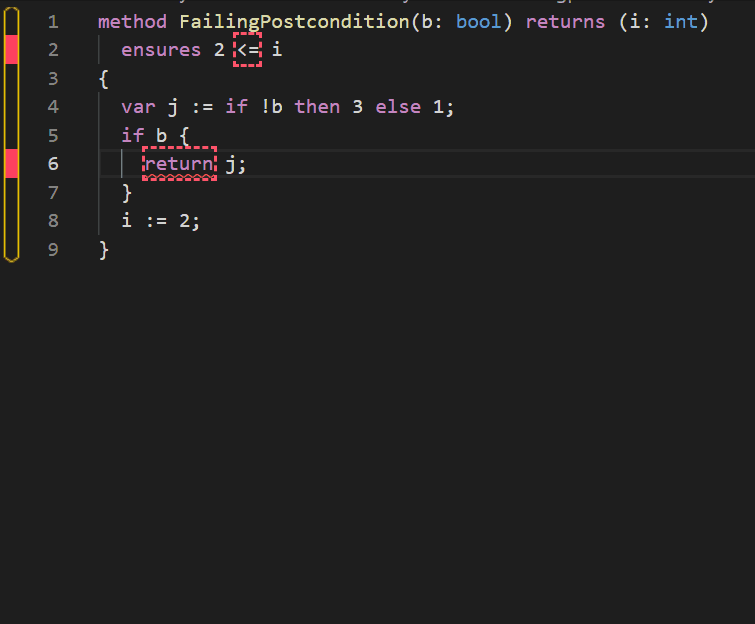

Dafny Reference Manual
The dafny-lang community
Tue May 17 2022 13:10:14 GMT+0200 (hora de verano de Europa central)
Abstract: This is the Dafny reference manual; it describes the Dafny programming language and how to use the Dafny verification system. Parts of this manual are more tutorial in nature in order to help the user understand how to do proofs with Dafny.
(Link to current document as html)
- 1. Introduction
- 2. Lexical and Low Level Grammar
- 3. Programs
- 4. Modules
- 5. Specifications
- 6. Types
- 7. Basic types
- 8. Type parameters
- 9. Generic Instantiation
- 10. Collection types
- 11. Types that stand for other types
- 12. Newtypes
- 13. Class Types
- 14. Trait Types
- 15. Array Types
- 16. Iterator types
- 17. Arrow types
- 18. Algebraic Datatypes
- 19. Statements
- 19.1. Labeled Statement
- 19.2. Break and Continue Statements
- 19.3. Block Statement
- 19.4. Return Statement
- 19.5. Yield Statement
- 19.6. Update and Call Statements
- 19.7. Update with Failure Statement (
:-)- 19.7.1. Failure compatible types
- 19.7.2. Simple status return with no other outputs
- 19.7.3. Status return with additional outputs
- 19.7.4. Failure-returns with additional data
- 19.7.5. RHS with expression list
- 19.7.6. Failure with initialized declaration.
- 19.7.7. Keyword alternative
- 19.7.8. Key points
- 19.7.9. Failure returns and exceptions
- 19.8. Variable Declaration Statement
- 19.9. Guards
- 19.10. Binding Guards
- 19.11. If Statement
- 19.12. While Statement
- 19.13. For Loops
- 19.14. Loop Specifications
- 19.15. Match Statement
- 19.16. Assert Statement
- 19.17. Assume Statement
- 19.18. Expect Statement
- 19.19. Print Statement
- 19.20. Reveal Statement
- 19.21. Forall Statement
- 19.22. Modify Statement
- 19.23. Calc Statement
- 19.24. Skeleton Statement
- 20. Expressions
- 20.1. Top-level expressions
- 20.2. Equivalence Expressions
- 20.3. Implies or Explies Expressions
- 20.4. Logical Expressions
- 20.5. Relational Expressions
- 20.6. Bit Shifts
- 20.7. Terms
- 20.8. Factors
- 20.9. Bit-vector Operations
- 20.10. As (Conversion) and Is (type test) Expressions
- 20.11. Unary Expressions
- 20.12. Primary Expressions
- 20.13. Lambda expressions
- 20.14. Left-Hand-Side Expressions
- 20.15. Right-Hand-Side Expressions
- 20.16. Array Allocation
- 20.17. Object Allocation
- 20.18. Havoc Right-Hand-Side
- 20.19. Constant Or Atomic Expressions
- 20.20. Literal Expressions
- 20.21. Fresh Expressions
- 20.22. Allocated Expressions
- 20.23. Unchanged Expressions
- 20.24. Old and Old@ Expressions
- 20.25. Cardinality Expressions
- 20.26. Parenthesized Expression
- 20.27. Sequence Display Expression
- 20.28. Set Display Expression
- 20.29. Map Display Expression
- 20.30. Endless Expression
- 20.31. If Expression
- 20.32. Case and Extended Patterns
- 20.33. Match Expression
- 20.34. Quantifier Expression
- 20.35. Set Comprehension Expressions
- 20.36. Statements in an Expression
- 20.37. Let Expression
- 20.38. Let or Fail Expression
- 20.39. Map Comprehension Expression
- 20.40. Name Segment
- 20.41. Hash Call
- 20.42. Suffix
- 20.43. Expression Lists
- 20.44. Parameter Bindings
- 20.45. Formal Parameters and Default-Value Expressions
- 20.46. Compile-Time Constants
- 20.47. List of specification expressions
- 21. Refinement
- 22. Attributes
- 22.1. Attributes on top-level declarations
- 22.2. Attributes on functions and methods
- 22.2.1.
{:autoReq} - 22.2.2.
{:axiom} - 22.2.3.
{:compile} - 22.2.4.
{:extern <name>} - 22.2.5.
{:fuel X} - 22.2.6.
{:id <string>} - 22.2.7.
{:induction} - 22.2.8.
{:print} - 22.2.9.
{:opaque} - 22.2.10.
{:priority N} - 22.2.11.
{:selective_checking} - 22.2.12.
{:tailrecursion} - 22.2.13.
{:test} - 22.2.14.
{:timeLimit N} - 22.2.15.
{:timeLimitMultiplier X} - 22.2.16.
{:verify false} - 22.2.17.
{:vcs_max_cost N} - 22.2.18.
{:vcs_max_keep_going_splits N} - 22.2.19.
{:vcs_max_splits N} - 22.2.20.
{:vcs_split_on_every_assert} - 22.2.21.
{:synthesize} - 22.2.22.
{:options OPT0, OPT1, ... }
- 22.2.1.
- 22.3. Attributes on assertions, preconditions and postconditions
- 22.4. Attributes on variable declarations
- 22.5. Attributes on quantifier expressions (forall, exists)
- 22.6. Other undocumented verification attributes
- 23. Advanced Topics
- 24. Dafny User’s Guide
- 24.1. Introduction
- 24.2. Dafny Programs and Files
- 24.3. Installing Dafny
- 24.4. Dafny Code Style
- 24.5. IDEs for Dafny
- 24.6. The Dafny Server
- 24.7. Using Dafny From the Command Line
- 24.8. Verification
- 24.9. Compilation
- 24.10. Dafny Command Line Options
- 24.10.1. Help and version information
- 24.10.2. Controlling input
- 24.10.3. Controlling plugins
- 24.10.4. Controlling output
- 24.10.5. Controlling language features
- 24.10.6. Controlling warnings
- 24.10.7. Controlling verification
- 24.10.8. Controlling boogie
- 24.10.9. Controlling the prover
- 24.10.10. Controlling test generation
- 24.10.11. Controlling compilation
- 24.11. Full list of -command-line options
- 26. References
1. Introduction
Dafny [@Leino:Dafny:LPAR16] is a programming language with built-in specification constructs, so that verifying a program’s correctness with respect to those specifications is a natural part of writing software. The Dafny static program verifier can be used to verify the functional correctness of programs. This document is a reference manual for the programming language and a user guide for the dafny tool that performs verification and compilation to an executable form.
The Dafny programming language is designed to support the static verification of programs. It is imperative, sequential, supports generic classes, inheritance and abstraction, methods and functions, dynamic allocation, inductive and co-inductive datatypes, and specification constructs. The specifications include pre- and postconditions, frame specifications (read and write sets), and termination metrics. To further support specifications, the language also offers updatable ghost variables, recursive functions, and types like sets and sequences. Specifications and ghost constructs are used only during verification; the compiler omits them from the executable code.
The dafny verifier is run as part of the compiler. As such, a programmer
interacts with it in much the same way as with the static type
checker—when the tool produces errors, the programmer responds by
changing the program’s type declarations, specifications, and statements.
(This document typically uses “Dafny” to refer to the programming language and “dafny” to refer to the software tool that verifies and compiles programs in the Dafny language.)
The easiest way to try out Dafny is to download it to run it on your machine as you follow along with the Dafny tutorial. Dafny can be run from the command line (on Linux, MacOS, Windows or other platforms) or from an IDE such as emacs or an editor such as VSCode, which can provide syntax highlighting without the built-in verification.
The verifier is powered by Boogie [@Boogie:Architecture;@Leino:Boogie2-RefMan;@LeinoRuemmer:Boogie2] and Z3 [@deMouraBjorner:Z3:overview].
From verified programs, the dafny compiler can produce code for a number
of different backends:
the .NET platform via intermediate C# files, Java, Javascript, Go, and C++.
Each language provides a basic Foreign Function Interface (through uses of :extern)
and a supporting runtime library.
However, there is no automatic FFI generator, so :extern stubs must be written by hand.
This reference manual for the Dafny verification system is based on the following references: [@Leino:Dafny:LPAR16], [@MSR:dafny:main], [@LEINO:Dafny:Calc], [@LEINO:Dafny:Coinduction], Co-induction Simply.
The main part of the reference manual is in top down order except for an initial section that deals with the lowest level constructs.
The details of using (and contributing to) the dafny tool are described in the User Guide (Section 24).
1.1. Dafny Example
To give a flavor of Dafny, here is the solution to a competition problem.
// VSComp 2010, problem 3, find a 0 in a linked list and return
// how many nodes were skipped until the first 0 (or end-of-list)
// was found.
// Rustan Leino, 18 August 2010.
//
// The difficulty in this problem lies in specifying what the
// return value 'r' denotes and in proving that the program
// terminates. Both of these are addressed by declaring a ghost
// field 'List' in each linked-list node, abstractly representing
// the linked-list elements from the node to the end of the linked
// list. The specification can now talk about that sequence of
// elements and can use 'r' as an index into the sequence, and
// termination can be proved from the fact that all sequences in
// Dafny are finite.
//
// We only want to deal with linked lists whose 'List' field is
// properly filled in (which can only happen in an acyclic list,
// for example). To that end, the standard idiom in Dafny is to
// declare a predicate 'Valid()' that is true of an object when
// the data structure representing that object's abstract value
// is properly formed. The definition of 'Valid()' is what one
// intuitively would think of as the ''object invariant'', and
// it is mentioned explicitly in method pre- and postconditions.
//
// As part of this standard idiom, one also declares a ghost
// variable 'Repr' that is maintained as the set of objects that
// make up the representation of the aggregate object--in this
// case, the Node itself and all its successors.
class Node {
ghost var List: seq<int>
ghost var Repr: set<Node>
var head: int
var next: Node? // Node? means a Node value or null
predicate Valid()
reads this, Repr
{
this in Repr &&
1 <= |List| && List[0] == head &&
(next == null ==> |List| == 1) &&
(next != null ==>
next in Repr && next.Repr <= Repr && this !in next.Repr &&
next.Valid() && next.List == List[1..])
}
static method Cons(x: int, tail: Node?) returns (n: Node)
requires tail == null || tail.Valid()
ensures n.Valid()
ensures if tail == null then n.List == [x]
else n.List == [x] + tail.List
{
n := new Node;
n.head, n.next := x, tail;
if (tail == null) {
n.List := [x];
n.Repr := {n};
} else {
n.List := [x] + tail.List;
n.Repr := {n} + tail.Repr;
}
}
}
method Search(ll: Node?) returns (r: int)
requires ll == null || ll.Valid()
ensures ll == null ==> r == 0
ensures ll != null ==>
0 <= r && r <= |ll.List| &&
(r < |ll.List| ==> ll.List[r] == 0 &&
0 !in ll.List[..r]) &&
(r == |ll.List| ==> 0 !in ll.List)
{
if (ll == null) {
r := 0;
} else {
var jj,i := ll,0;
while (jj != null && jj.head != 0)
invariant jj != null ==> jj.Valid() &&
i + |jj.List| == |ll.List| &&
ll.List[i..] == jj.List
invariant jj == null ==> i == |ll.List|
invariant 0 !in ll.List[..i]
decreases |ll.List| - i
{
jj := jj.next;
i := i + 1;
}
r := i;
}
}
method Main()
{
var list: Node? := null;
list := list.Cons(0, list);
list := list.Cons(5, list);
list := list.Cons(0, list);
list := list.Cons(8, list);
var r := Search(list);
print "Search returns ", r, "\n";
assert r == 1;
}
2. Lexical and Low Level Grammar
Dafny uses the Coco/R lexer and parser generator for its lexer and parser
(http://www.ssw.uni-linz.ac.at/Research/Projects/Coco)[@Linz:Coco].
The Dafny input file to Coco/R is the Dafny.atg file in the source tree.
A Coco/R input file consists of code written in the target language
(C# for the dafny tool) intermixed with these special sections:
- The Characters section which defines classes of characters that are used in defining the lexer.
- The Tokens section which defines the lexical tokens.
- The Productions section which defines the grammar. The grammar productions are distributed in the later parts of this document in the places where those constructs are explained.
The grammar presented in this document was derived from the Dafny.atg
file but has been simplified by removing details that, though needed by
the parser, are not needed to understand the grammar. In particular, the
following transformations have been performed.
- The semantics actions, enclosed by “(.” and “.)”, were removed.
- There are some elements in the grammar used for error recovery (“SYNC”). These were removed.
- There are some elements in the grammar for resolving conflicts (“IF(b)”). These have been removed.
- Some comments related to Coco/R parsing details have been removed.
- A Coco/R grammar is an attributed grammar where the attributes enable
the productions to have input and output parameters. These attributes
were removed except that boolean input parameters that affect
the parsing are kept.
- In our representation we represent these
in a definition by giving the names of the parameters following
the non-terminal name. For example
entity1(allowsX). - In the case of uses of the parameter, the common case is that the
parameter is just passed to a lower-level non-terminal. In that
case we just give the name, e.g.
entity2(allowsX). - If we want to give an explicit value to a parameter, we specify it in
a keyword notation like this:
entity2(allowsX: true). -
In some cases the value to be passed depends on the grammatical context. In such cases we give a description of the conditions under which the parameter is true, enclosed in parenthesis. For example:
FunctionSignatureOrEllipsis_(allowGhostKeyword: ("method" present))means that the
allowGhostKeywordparameter is true if the “method” keyword was given in the associatedFunctionDecl. - Where a parameter affects the parsing of a non-terminal we will explain the effect of the parameter.
- In our representation we represent these
in a definition by giving the names of the parameters following
the non-terminal name. For example
The names of character sets and tokens start with a lower case letter; the names of grammar non-terminals start with an upper-case letter.
The grammar uses Extended BNF notation. See the Coco/R Referenced manual for details. In summary:
- identifiers starting with a lower case letter denote terminal symbols
- identifiers starting with an upper case letter denote nonterminal symbols
- strings (a sequence of characters enclosed by double quote characters) denote the sequence of enclosed characters
=separates the sides of a production, e.g.A = a b c- in the Coco grammars “.” terminates a production, but for readability in this document a production starts with the defined identifier in the left margin and may be continued on subsequent lines if they are indented
|separates alternatives, e.g.a b | c | d emeansa borc or d e()groups alternatives, e.g.(a | b) cmeansa corb c[ ]option, e.g.[a] bmeansa borb{ }iteration (0 or more times), e.g.{a} bmeansbora bora a bor …- We allow
|inside[ ]and{ }. So[a | b]is short for[(a | b)]and{a | b}is short for{(a | b)}. - The first production defines the name of the grammar, in this case
Dafny.
In addition to the Coco rules, for the sake of readability we have adopted these additional conventions.
- We allow
-to be used.a - bmeans it matches if it matchesabut notb. - To aid in explaining the grammar we have added some additional productions that are not present in the original grammar. We name these with a trailing underscore. If you inline these where they are referenced, the result should let you reconstruct the original grammar.
2.1. Dafny Input
Dafny source code files are readable text encoded as UTF-8 Unicode
(because this is what the Coco/R-generated scanner and parser read).
All program text other than the contents of comments, character, string and verbatim string literals
are printable and white-space ASCII characters,
that is, ASCII characters in the range ! to ~, plus space, tab, cr and nl (ASCII, 9, 10, 13, 32) characters.
However, a current limitation of the Coco/R tool used by dafny
is that only printable and white-space ASCII characters can be used.
Use \u escapes in string and character literals to insert unicode characters.
Unicode in comments will work fine unless the unicode is interpreted as an end-of-comment indication.
Unicode in verbatim strings will likely not be interpreted as intended. [Outstanding issue #818].
2.2. Tokens and whitespace
The characters used in a Dafny program fall into four groups:
- White space characters
- alphanumerics: letters, digits, underscore (
_), apostrophe ('), and question mark (?) - punctuation:
(){}[],.`; - operator characters (the other printable characters)
Each Dafny token consists of a sequence of consecutive characters from just one of these groups, excluding white-space. White-space is ignored except that it separates tokens.
A sequence of alphanumeric characters (with no preceding or following additional
alphanumeric characters) is a single token. This is true even if the token
is syntactically or semantically invalid and the sequence could be separated into
more than one valid token. For example, assert56 is one identifier token,
not a keyword assert followed by a number; ifb!=0 begins with the token
ifb and not with the keyword if and token b; 0xFFFFZZ is an illegal
token, not a valid hex number 0xFFFF followed by an identifier ZZ.
White-space must be used to separate two such tokens in a program.
Somewhat differently, operator tokens need not be separated.
Only specific sequences of operator characters are recognized and these
are somewhat context-sensitive. For example, in seq<set<int>>, the grammar
knows that >> is two individual > tokens terminating the nested
type parameter lists; the right shift operator >> would never be valid here. Similarly, the
sequence ==> is always one token; even if it were invalid in its context,
separating it into == and > would always still be invalid.
In summary, except for required white space between alphanumeric tokens, adding white space between tokens or removing white space can never result in changing the meaning of a Dafny program. For the rest of this document, we consider Dafny programs as sequences of tokens.
2.3. Character Classes
This section defines character classes used later in the token definitions.
In this section a backslash is used to start an escape sequence; so for example
'\n' denotes the single linefeed character. Also in this section, double quotes
enclose the set of characters constituting a character class; enclosing single
quotes are used when there is just one character in the class. + indicates
the union of two character classes; - is the set-difference between the
two classes. ANY designates all unicode characters.
letter = "ABCDEFGHIJKLMNOPQRSTUVWXYZabcdefghijklmnopqrstuvwxyz"
At present, a letter is an ASCII upper or lowercase letter. Other Unicode letters are not supported.
digit = "0123456789"
A digit is just one of the base-10 digits.
posDigit = "123456789"
posDigitFrom2 = "23456789"
A posDigit is a digit, excluding 0. posDigitFrom2 excludes both 0 and 1.
hexdigit = "0123456789ABCDEFabcdef"
A hexdigit character is a digit or one of the letters from ‘A’ to ‘F’ in either case.
special = "'_?"
The special characters are the characters in addition to alphanumeric characters that are allowed to appear in a Dafny identifier. These are
'because mathematicians like to put primes on identifiers and some ML programmers like to start names of type parameters with a',_because computer scientists expect to be able to have underscores in identifiers, and?because it is useful to have?at the end of names of predicates, e.g., “Cons?”.
cr = '\r'
A carriage return character.
lf = '\n'
A line feed character.
tab = '\t'
A tab character.
space = ' '
A space character.
nondigitIdChar = letter + special
The characters that can be used in an identifier minus the digits.
idchar = nondigitIdChar + digit
The characters that can be used in an identifier.
nonidchar = ANY - idchar
Any character except those that can be used in an identifier.
Here the scanner generator will interpret ANY as any unicode character.
However, nonidchar is used only to mark the end of the !in token;
in this context any character other than whitespace or printable ASCII
will trigger a subsequent scanning or parsing error.
charChar = ANY - '\'' - '\\' - cr - lf
Characters that can appear in a character constant. See the discussion on unicode support.
stringChar = ANY - '"' - '\\' - cr - lf
Characters that can appear in a string constant. See the discussion on unicode support.
verbatimStringChar = ANY - '"'
Characters that can appear in a verbatim string. See the discussion on unicode support.
2.4. Comments
Comments are in two forms.
- They may go from
/*to*/. - They may go from
//to the end of the line.
Comments may be nested, but note that the nesting of multi-line comments is behavior that is different from most programming languages. In Dafny,
method m() {
/* comment
/* nested comment
*/
rest of outer comment
*/
}
is permitted; this feature is convenient for commenting out blocks of program statements that already have multi-line comments within them. Other than looking for end-of-comment delimiters, the contents of a comment are not interpreted. Comments may contain any unicode character, but see the discussion on unicode support for more information.
Note that the nesting is not fool-proof. In
method m() {
/* var i: int;
// */ line comment
var j: int;
*/
}
and
method m() {
/* var i: int;
var s: string := "a*/b";
var j: int;
*/
}
the */ inside the line comment and the string are seen as the end of the outer
comment, leaving trailing text that will provoke parsing errors.
2.5. Tokens
As with most languages, Dafny syntax is defined in two levels. First the stream of input characters is broken up into tokens. Then these tokens are parsed using the Dafny grammar. The Dafny tokens are defined in this section.
2.5.1. Reserved Words
The following reserved words appear in the Dafny grammar and may not be used as identifiers of user-defined entities:
reservedword =
"abstract" | "allocated" | "as" | "assert" | "assume" |
"bool" | "break" | "by" |
"calc" | "case" | "char" | "class" | "codatatype" |
"const" | "constructor" |
"datatype" | "decreases" |
"else" | "ensures" | "exists" | "export" | "extends" |
"false" | "forall" | "fresh" | "function" | "ghost" |
"if" | "imap" | "import" | "in" | "include" |
"int" | "invariant" | "is" | "iset" | "iterator" |
"label" | "lemma" | "map" | "match" | "method" |
"modifies" | "modify" | "module" | "multiset" |
"nameonly" | "nat" | "new" | "newtype" | "null" |
"object" | "object?" | "old" | "opened" | "ORDINAL"
"predicate" | "print" | "provides" |
"reads" | "real" | "refines" | "requires" | "return" |
"returns" | "reveal" | "reveals" |
"seq" | "set" | "static" | "string" |
"then" | "this" | "trait" | "true" | "twostate" | "type" |
"unchanged" | "var" | "while" | "witness" |
"yield" | "yields" |
arrayToken | bvToken
arrayToken = "array" [ posDigitFrom2 | posDigit digit { digit }]["?"]
bvToken = "bv" ( 0 | posDigit { digit } )
An arrayToken is a reserved word that denotes an array type of
given rank. array is an array type of rank 1 (aka a vector). array2
is the type of two-dimensional arrays, etc.
array1 and array1? are not reserved words; they are just ordinary identifiers.
Similarly, bv0, bv1, and bv8 are reserved words, but bv02 is an
ordinary identifier.
2.5.2. Identifiers
ident = nondigitIdChar { idchar } - charToken - reservedword
In general Dafny identifiers are sequences of idchar characters where
the first character is a nondigitIdChar. However tokens that fit this pattern
are not identifiers if they look like a character literal
or a reserved word (including array or bit-vector type tokens).
Also, ident tokens that begin with an _ are not permitted as user identifiers.
2.5.3. Digits
digits = digit {['_'] digit}
A sequence of decimal digits, possibly interspersed with underscores
for readability (but not beginning or ending with an underscore).
Example: 1_234_567.
hexdigits = "0x" hexdigit {['_'] hexdigit}
A hexadecimal constant, possibly interspersed with underscores for readability (but not beginning or ending with an underscore).
Example: 0xffff_ffff.
decimaldigits = digit {['_'] digit} '.' digit {['_'] digit}
A decimal fraction constant, possibly interspersed with underscores
for readability (but not beginning or ending with an underscore).
Example: 123_456.789_123.
2.5.4. Escaped Character
In this section the “\” characters are literal.
escapedChar =
( "\'" | "\"" | "\\" | "\0" | "\n" | "\r" | "\t"
| "\u" hexdigit hexdigit hexdigit hexdigit
)
In Dafny character or string literals, escaped characters may be used to specify the presence of a single- or double-quote character, backslash, null, new line, carriage return, tab, or a Unicode character with given hexadecimal representation.
2.5.5. Character Constant Token
charToken = "'" ( charChar | escapedChar ) "'"
A character constant is enclosed by ' and includes either a character
from the charChar set or an escaped character. Note that although Unicode
letters are not allowed in Dafny identifiers, Dafny does support Unicode
in its character, string, and verbatim strings constants and in its comments. A character
constant has type char.
2.5.6. String Constant Token
stringToken =
'"' { stringChar | escapedChar } '"'
| '@' '"' { verbatimStringChar | '"' '"' } '"'
A string constant is either a normal string constant or a verbatim string constant.
A normal string constant is enclosed by " and can contain characters from the
stringChar set and escapes.
A verbatim string constant is enclosed between @" and " and can
consist of any characters (including newline characters) except that two
successive double quotes represent one quote character inside
the string. This is the mechanism for escaping a double quote character,
which is the only character needing escaping in a verbatim string.
2.5.7. Ellipsis
ellipsis = "..."
The ellipsis symbol is typically used to designate something missing that will later be inserted through refinement or is already present in a parent declaration..
2.6. Low Level Grammar Productions
2.6.1. Identifier Variations
Ident = ident
The Ident non-terminal is just an ident token and represents an ordinary
identifier.
DotSuffix =
( ident | digits | "requires" | "reads" )
When using the dot notation to denote a component of a compound entity,
the token following the “.” may be an identifier,
a natural number, or one of the keywords requires or reads.
- Digits can be used to name fields of classes and destructors of
datatypes. For example, the built-in tuple datatypes have destructors
named 0, 1, 2, etc. Note that as a field or destructor name a digit sequence
is treated as a string, not a number: internal
underscores matter, so
10is different from1_0and from010. m.requiresis used to denote the precondition for methodm.m.readsis used to denote the things that methodmmay read.
NoUSIdent = ident - "_" { idchar }
A NoUSIdent is an identifier except that identifiers with a leading
underscore are not allowed. The names of user-defined entities are
required to be NoUSIdents or, in some contexts, a digits.
We introduce more mnemonic names
for these below (e.g. ClassName).
WildIdent = NoUSIdent | "_"
Identifier, disallowing leading underscores, except the “wildcard”
identifier _. When _ appears it is replaced by a unique generated
identifier distinct from user identifiers. This wildcard has several uses
in the language, but it is not used as part of expressions.
2.6.2. NoUSIdent Synonyms
In the productions for the declaration of user-defined entities the name of the
user-defined entity is required to be an identifier that does not start
with an underscore, i.e., a NoUSIdent. To make the productions more
mnemonic, we introduce the following synonyms for NoUSIdent
and other identifier-related symbols.
IdentOrDigits = Ident | digits
NoUSIdentOrDigits = NoUSIdent | digits
ModuleName = NoUSIdent
ClassName = NoUSIdent // also traits
DatatypeName = NoUSIdent
DatatypeMemberName = NoUSIdentOrDigits
NewtypeName = NoUSIdent
SynonymTypeName = NoUSIdent
IteratorName = NoUSIdent
TypeVariableName = NoUSIdent
MethodFunctionName = NoUSIdentOrDigits
LabelName = NoUSIdentOrDigits
AttributeName = NoUSIdent
ExportId = NoUSIdentOrDigits
TypeNameOrCtorSuffix = NoUSIdentOrDigits
Some parsing contexts
2.6.3. Qualified Names
QualifiedModuleName = ModuleName { "." ModuleName }
A qualified name starts with the name of the top-level entity and then is followed by
zero or more DotSuffixs which denote a component. Examples:
Module.MyType1MyTuple.1MyMethod.requiresA.B.C.D
The grammar does not actually have a production for qualified names
except in the special case of a qualified name that is known to be
a module name, i.e. a QualifiedModuleName.
2.6.4. Identifier-Type Combinations
In this section, we describe some nonterminals that combine an identifier and a type.
IdentType = WildIdent ":" Type
In Dafny, a variable or field is typically declared by giving its name followed by
a colon and its type. An IdentType is such a construct.
FIdentType = NoUSIdentOrDigits ":" Type
A FIdentType is used to declare a field. The Type is required because there is no initializer.
CIdentType = NoUSIdentOrDigits [ ":" Type ]
A CIdentType is used for a const declaration. The Type is optional because it may be inferred from
the initializer.
GIdentType(allowGhostKeyword, allowNewKeyword, allowOlderKeyword, allowNameOnlyKeyword, allowDefault) =
{ "ghost" | "new" | "nameonly" | "older" } IdentType
[ ":=" Expression(allowLemma: true, allowLambda: true) ]
A GIdentType is a typed entity declaration optionally preceded by ghost or new. The ghost
qualifier means the entity is only used during verification and not in the generated code.
Ghost variables are useful for abstractly representing internal state in specifications.
If allowGhostKeyword is false, then ghost is not allowed.
If allowNewKeyword is false, then new is not allowed.
If allowNameOnlyKeyword is false, then nameonly is not allowed.
If allowDefault is false, then := Expression is not allowed.
older is a context-sensitive keyword. It is recognized as a keyword only by GIdentType and
only when allowOlderKeyword is true. If allowOlderKeyword is false, then a use of older
is parsed by the IdentType production in GIdentType.
LocalIdentTypeOptional = WildIdent [ ":" Type ]
A LocalIdentTypeOptional is used when declaring local variables.
If a value is specified for the variable, the
type may be omitted because it can be inferred from the initial value.
An initial value is not required.
IdentTypeOptional = WildIdent [ ":" Type ]
A IdentTypeOptional is typically used in a context where the type of the identifier
may be inferred from the context. Examples are in pattern matching or quantifiers.
TypeIdentOptional =
{ "ghost" | "nameonly" } [ NoUSIdentOrDigits ":" ] Type
[ ":=" Expression(allowLemma: true, allowLambda: true) ]
TypeIdentOptionals are used in FormalsOptionalIds. This represents situations
where a type is given but there may not be an identifier. The default-value expression
:= Expression is allowed only if NoUSIdentOrDigits : is also provided.
If modifier nameonly is given, then NoUSIdentOrDigits must also be used.
FormalsOptionalIds = "(" [ TypeIdentOptional
{ "," TypeIdentOptional } ] ")"
A FormalsOptionalIds is a formal parameter list in which the types are required
but the names of the parameters are optional. This is used in algebraic
datatype definitions.
2.6.5. Numeric Literals
Nat = ( digits | hexdigits )
A Nat represents a natural number expressed in either decimal or hexadecimal.
Dec = decimaldigits
A Dec represents a decimal fraction literal.
3. Programs
Dafny = { IncludeDirective_ } { TopDecl } EOF
At the top level, a Dafny program (stored as files with extension .dfy)
is a set of declarations. The declarations introduce (module-level)
constants, methods, functions, lemmas, types (classes, traits, inductive and
co-inductive datatypes, newtypes, type synonyms, opaque types, and
iterators) and modules, where the order of introduction is irrelevant. A
class also contains a set of declarations, introducing fields, methods,
and functions.
When asked to compile a program, Dafny looks for the existence of a Main() method. If a legal Main() method is found, the compiler will emit an executable appropriate to the target language; otherwise it will emit a library or individual files. The conditions for a legal Main() method are described in the User Guide (Section 24.9.1). If there is more than one Main(), Dafny will emit an error message.
An invocation of Dafny may specify a number of source files.
Each Dafny file follows the grammar of the Dafny non-terminal.
A file consists of a sequence of optional include directives followed by top level declarations followed by the end of the file.
3.1. Include Directives
IncludeDirective_ = "include" stringToken
Include directives have the form "include" stringToken where
the string token is either a normal string token or a
verbatim string token. The stringToken is interpreted as the name of
a file that will be included in the Dafny source. These included
files also obey the Dafny grammar. Dafny parses and processes the
transitive closure of the original source files and all the included files,
but will not invoke the verifier on the included files unless they have been listed
explicitly on the command line.
The file name may be a path using the customary /, ., and .. specifiers.
The interpretation of the name (e.g., case-sensitivity) will depend on the
underlying operating system. A path not beginning with / is looked up in
the underlying file system relative to the current working directory (the
one in which the dafny tool is invoked). Paths beginning with a device
designator (e.g., C:) are only permitted on Windows systems.
3.2. Top Level Declarations
TopDecl = {
{ DeclModifier }
( SubModuleDecl
| ClassDecl
| DatatypeDecl
| NewtypeDecl
| SynonymTypeDecl // includes opaque types
| IteratorDecl
| TraitDecl
| ClassMemberDecl(moduleLevelDecl: true)
)
}
Top-level declarations may appear either at the top level of a Dafny file,
or within a SubModuleDecl. A top-level declaration is one of
various kinds of declarations described later. Top-level declarations are
implicitly members of a default (unnamed) top-level module.
The ClassDecl, DatatypeDecl, NewtypeDecl,
SynonymTypeDecl, IteratorDecl, and TraitDecl declarations are
type declarations and are described in Section 6 and
the following sections. Ordinarily
ClassMemberDecls appear in class declarations but they can also
appear at the top level. In that case they are included as part of an
implicit top-level class and are implicitly static (but cannot be
declared as static). In addition a ClassMemberDecl that appears at
the top level cannot be a FieldDecl.
3.3. Declaration Modifiers
DeclModifier = ( "abstract" | "ghost" | "static" )
Top level declarations may be preceded by zero or more declaration modifiers. Not all of these are allowed in all contexts.
The abstract modifiers may only be used for module declarations.
An abstract module can leave some entities underspecified.
Abstract modules are not compiled.
The ghost modifier is used to mark entities as being used for
specification only, not for compilation to code.
The static modifier is used for class members that that
are associated with the class as a whole rather than with
an instance of the class.
The following table shows modifiers that are available for each of the kinds of declaration. In the table we use already-ghost (already-non-ghost) to denote that the item is not allowed to have the ghost modifier because it is already implicitly ghost (non-ghost).
| Declaration | allowed modifiers |
|---|---|
| module | abstract |
| class | - |
| trait | - |
| datatype or codatatype | - |
| field | ghost |
| newtype | - |
| synonym types | - |
| iterators | - |
| method | ghost static |
| lemma | already-ghost static |
| least lemma | already-ghost static |
| greatest lemma | already-ghost static |
| constructor | - |
| function (non-method) | already-ghost static |
| function method | already-non-ghost static |
| predicate (non-method) | already-ghost static |
| predicate method | already-non-ghost static |
| least predicate | already-ghost static |
| greatest predicate | already-ghost static |
4. Modules
SubModuleDecl = ( ModuleDefinition | ModuleImport | ModuleExport )
Structuring a program by breaking it into parts is an important part of creating large programs. In Dafny, this is accomplished via modules. Modules provide a way to group together related types, classes, methods, functions, and other modules, as well as to control the scope of declarations. Modules may import each other for code reuse, and it is possible to abstract over modules to separate an implementation from an interface.
4.1. Declaring New Modules
ModuleDefinition = "module" { Attribute } ModuleQualifiedName
[ "refines" ModuleQualifiedName ]
"{" { TopDecl } "}"
ModuleQualifiedName = ModuleName { "." ModuleName }
A ModuleQualifiedName is a qualified name that is expected to refer to a module;
a qualified name is a sequence of .-separated identifiers, which designates
a program entity by representing increasingly-nested scopes.
A new module is declared with the module keyword, followed by the name
of the new module, and a pair of curly braces ({}) enclosing the body
of the module:
module Mod {
...
}
A module body can consist of anything that you could put at the top level. This includes classes, datatypes, types, methods, functions, etc.
module Mod {
class C {
var f: int
method m()
}
datatype Option = A(int) | B(int)
type T
method m()
function f(): int
}
You can also put a module inside another, in a nested fashion:
module Mod {
module Helpers {
class C {
method doIt()
var f: int
}
}
}
Then you can refer to the members of the Helpers module within the
Mod module by prefixing them with “Helpers.”. For example:
module Mod {
module Helpers { ... }
method m() {
var x := new Helpers.C;
x.doIt();
x.f := 4;
}
}
Methods and functions defined at the module level are available like classes, with just the module name prefixing them. They are also available in the methods and functions of the classes in the same module.
module Mod {
module Helpers {
function method addOne(n: nat): nat {
n + 1
}
}
method m() {
var x := 5;
x := Helpers.addOne(x); // x is now 6
}
}
Note that everything declared at the top-level (in all the files constituting the program) is implicitly part of a single implicit unnamed global module.
4.2. Declaring nested modules standalone
As described in the previous section, module declarations can be nested. It is also permitted to declare a nested module outside of its “enclosing” module. So instead of
module A {
module B {
}
}
one can write
module A {
}
module A.B {
}
The second module is completely separate; for example, it can be in
a different file.
This feature provides flexibility in writing and maintenance;
for example, it can reduce the size of module A by extracting module A.B
into a separate body of text.
However, it can also lead to confusion and program authors need to take care.
It may not be apparent to a reader of module A that module A.B exists;
the existence of A.B might cause names to be resolved differently and
the semantics of the program might be (silently) different if A.B is
present or absent.
4.3. Importing Modules
ModuleImport =
"import"
[ "opened" ]
( QualifiedModuleExport
| ModuleName "=" QualifiedModuleExport
| ModuleName ":" QualifiedModuleExport
)
QualifiedModuleExport =
ModuleQualifiedName [ "`" ModuleExportSuffix ]
ModuleExportSuffix =
( ExportId
| "{" ExportId { "," ExportId } "}"
)
Sometimes you want to refer to
things from an existing module, such as a library. In this case, you
can import one module into another. This is done via the import
keyword, which has two forms with different meanings.
The simplest form is the concrete import, which has
the form import A = B. This declaration creates a reference to the
module B (which must already exist), and binds it to the new name
A. This form can also be used to create a reference to a nested
module, as in import A = B.C. The other form, using a :, is
described in Section 4.6.
As modules in the same scope must have different names, this ability
to bind a module to a new name allows disambiguating separately developed
external modules that have the same name.
Note that the new name is only bound in the scope containing
the import declaration; it does not create a global alias. For
example, if Helpers was defined outside of Mod, then we could import
it:
module Helpers {
...
}
module Mod {
import A = Helpers
method m() {
assert A.addOne(5) == 6;
}
}
Note that inside m(), we have to use A instead of Helpers, as we bound
it to a different name. The name Helpers is not available inside m(),
as only names that have been bound inside Mod are available. In order
to use the members from another module, that other module either has to be declared
there with module or imported with import. (As described below, the
resolution of the ModuleQualifiedName that follows the = in the import
statement or the refines in a module declaration uses slightly
different rules.)
We don’t have to give Helpers a new name, though, if we don’t want
to. We can write import Helpers = Helpers to import the module under
its own name; Dafny
even provides the shorthand import Helpers for this behavior. You
can’t bind two modules with the same name at the same time, so
sometimes you have to use the = version to ensure the names do not
clash. When importing nested modules, import B.C means import C = B.C;
the implicit name is always the last name segment of the module designation.
The ModuleQualifiedName in the ModuleImport starts with a
sibling module of the importing module, or with a submodule of the
importing module. There is no way to refer to the parent module, only
sibling modules (and their submodules).
Import statements may occur at the top-level of a program (that is, in the implicit top-level module of the program) as well. There they serve simply as a way to give a new name, perhaps a shorthand name, to a module. For example,
module MyModule { ... } // declares module MyModule
import MyModule // error: cannot add a module named MyModule
// because there already is one
import M = MyModule // OK. M and MyModule are equivalent
4.4. Opening Modules
Sometimes, prefixing the members of the module you imported with the
name is tedious and ugly, even if you select a short name when
importing it. In this case, you can import the module as opened,
which causes all of its members to be available without adding the
module name. The opened keyword, if present, must immediately follow import.
For example, we could write the previous example as:
module Mod {
import opened Helpers
method m() {
assert addOne(5) == 6;
}
}
When opening modules, the newly bound members have lower priority
than local definitions. This means if you define
a local function called addOne, the function from Helpers will no
longer be available under that name. When modules are opened, the
original name binding is still present however, so you can always use
the name that was bound to get to anything that is hidden.
module Mod {
import opened Helpers
function addOne(n: nat): nat {
n - 1
}
method m() {
assert addOne(5) == 6; // this is now false,
// as this is the function just defined
assert Helpers.addOne(5) == 6; // this is still true
}
}
If you open two modules that both declare members with the same name,
then neither member can be referred to without a module prefix, as it
would be ambiguous which one was meant. Just opening the two modules
is not an error, however, as long as you don’t attempt to use members
with common names. However, if the ambiguous references actually
refer to the same declaration, then they are permitted.
The opened keyword may be used with any kind of
import declaration, including the module abstraction form.
An import opened may occur at the top-level as well. For example,
module MyModule { ... } // declares MyModule
import opened MyModule // does not declare a new module, but does
// make all names in MyModule available in
// the current scope, without needing
// qualification
import opened M = MyModule // names in MyModule are available in
// the current scope without qualification
// or qualified with either M or MyModule
The Dafny style guidelines suggest using opened imports sparingly. They are best used when the names being imported have obvious and unambiguous meanings and when using qualified names would be verbose enough to impede understanding.
4.5. Export Sets and Access Control
ModuleExport =
"export"
[ ExportId ]
[ "..." ]
{
"extends" ExportId { "," ExportId }
| "provides" ( ExportSignature { "," ExportSignature } | "*" )
| "reveals" ( ExportSignature { "," ExportSignature } | "*" )
}
ExportSignature = TypeNameOrCtorSuffix [ "." TypeNameOrCtorSuffix ]
In some programming languages, keywords such as public, private, and protected
are used to control access to (that is, visibility of) declared program entities.
In Dafny, modules and export sets provide that capability.
Modules combine declarations into logically related groups.
Export sets then permit selectively exposing subsets of declarations;
another module can import the export set appropriate to its needs.
A user can define as many export sets as are needed to provide different
kinds of access to the module’s declarations.
Each export set designates a list of names, which must be
names that are declared in the module (or in a refinement parent).
By default all the names declared in a module are available outside the
module using the import mechanism.
An export set enables a module to disallow the
use of some declarations outside the module.
Export sets have names; those names are used in import statements to
designate which export set of a module is being imported.
If a module M has export sets
E1 and E2, we can write import A = M`E1 to create a module alias
A that contains only the
names in E1. Or we can write import A = M`{E1,E2} to import the union
of names in E1 and E2 as module alias A.
As before, import M`E1 is an
abbreviation of import M = M`E1.
If no export set is given in an import statement, the default export set of the module is used.
There are various
defaults that apply differently in different cases.
The following description is with respect to an example module M:
M has no export sets declared. Then another module may simply import Z = M
to obtain access to all of M’s declarations.
M has one or more named export sets (e.g., E, F). Then another module can
write import Z = M`E or import Z = M`{E,F} to obtain access to the
names that are listed in export set E or to the union of those in export sets
E and F, respectively. If no export set has the same name as the module,
then an export set designator must be used: in that case you cannot write
simply import Z = M.
M has an unnamed export set, along with other export sets (e.g., E). The unnamed
export set is the default export set and implicitly has the same name as
the module. Because there is a default export set, another module may write
either import Z = M or import Z = M`M to import the names in that
default export set. You can also still use the other export sets with the
explicit designator: import Z = M`E
M declares an export set with the same name as the module. This is equivalent
to declaring an export set without a name. import M and import M`M
perform the same function in either case; the export set with or without
the name of the module is the default export set for the module.
Note that names of module aliases (declared by import statements) are
just like other names in a module; they can be included or omitted from
export sets.
Names brought into a module by refinement are treated the same as
locally declared names and can be listed in export set declarations.
However, names brought into a module by import opened (either into a module
or a refinement parent of a module) may
not be further exported. For example,
module A {
const a := 10;
const z := 10;
}
module B {
import opened Z = A // includes a, declares Z
const b := Z.a; // OK
}
module C {
import opened B // includes b, Z, but not a
//assert b == a; // error: a is not known
//assert b == B.a; // error: B.a is not valid
//assert b == A.a; // error: A is not known
assert b == Z.a; // OK: module Z is known and includes a
}
However, in the above example,
- if
Ahas one export setexport Y reveals athen the import in moduleBis invalid becauseAhas no default export set; - if
Ahas one export setexport Y reveals aandBhasimport Z = A`Ythen B’s import is OK. So is the use ofZ.ain the assert becauseBdeclaresZandCbrings inZthrough theimport openedandZcontainsaby virtue of its declaration. (The aliasZis not able to have export sets; all of its names are visible.) - if
Ahas one export setexport provides zthenAdoes have a default export set, so the import inBis OK, but neither the use ofainBnor asZ.ain C would be valid, becauseais not inZ.
The default export set is important in the resolution of qualified names, as described in Section 4.8.
4.5.1. Provided and revealed names
Names can be exported from modules in two ways, designated by provides
and reveals in the export set declaration.
When a name is exported as provided, then inside a module that has imported the name only the name is known, not the details of the name’s declaration.
For example, in the following code the constant a is exported as provided.
module A {
export provides a
const a := 10;
const b := 20;
}
module B {
import A
method m() {
assert A.a == 10; // a is known, but not its value
// assert A.b == 20; // b is not known through A`A
}
}
Since a is imported into module B through the default export set A`A,
it can be referenced in the assert statement. The constant b is not
exported, so it is not available. But the assert about a is not provable
because the value of a is not known in module B.
In contrast, if a is exported as revealed, as shown in the next example,
its value is known and the assertion can be proved.
module A {
export reveals a
const a := 10;
const b := 20;
}
module B {
import A
method m() {
assert A.a == 10; // a and its value are known
// assert A.b == 20; // b is not known through A`A
}
}
The following table shows which parts of a declaration are exported by an
export set that provides or reveals the declaration.
declaration | what is exported with provides | what is exported with reveals
——————–|—————-|———————————————–
const x: X := E | const x: X | const x: X := E
——————–|—————-|——————-
var x: X | var x: X | not allowed
———————–|———————–|———————-
function F(x: X): Y | function F(x: X): Y | function F(x: X): Y
` specification… | specification… | specification…
{ | | {
Body | | Body
} | | }
-----------------------|-----------------------|-------------------------------
method M(x: X) returns (y: Y) | method M(x: X) returns (y: Y) | not allowed
specification… | specification… |
{ | |
Body; | |
} | |
----------------------|----------------|-------------------
type Opaque | type Opaque | type Opaque
{ | |
// members… | |
} | |
----------------------|----------------|-------------------
type Synonym = T | type Synonym | type Synonym = T
---------------------|--------------|----------------------
type S = x: X | P witness E | type S | type S = x: X | P witness E
---------------------------------|----------|---------------------------------
newtype N = x: X | P witness E | type N | newtype N = x: X | P witness E
{ | |
// members… | |
} | |
-------------------------------|--------|-------------------------------
datatype D = Ctor0(x0: X0) | Ctor1(x1: X1) | … | type D | datatype D = Ctor0(x0: X0) | Ctor1(x1: X1) | …
{ | |
// members… | |
} | |
-------------------------|---------|-------------------------------
class Cl extends T0, … | type Cl | class Cl extends T0, …
{ | | {
constructor () | | constructor ()
specification… | | specification…
{ | |
Body; | |
} | |
// other members… | |
} | | }
-------------------------|---------|-------------------------------
trait Tr extends T0, … | type Tr | trait Tr extends T0, …
{ | |
// members… | |
} | |
------------------------------------|-------------|------------------------------------
iterator Iter(x: X) yields (y: Y) | type Iter | iterator Iter(x: X) yields (y: Y)
specification… | | specification…
{ | |
Body; | |
} | |
-----------------------|--------------|----------------------
module SubModule … | module SubModule … | not allowed
{ | { |
export SubModule … | export SubModule … |
export A … | |
// declarations… | // declarations… |
} | } |
-----------------------|------------------------|------------
import L = MS |import L = MS` | not allowed
———————–|————————|————
Variations of functions (e.g., predicate, twostate function) are
handled like function above, and variations of methods (e.g.,
lemma and twostate lemma) are treated like method above. Since
the whole signature is exported, a function or method is exported to
be of the same kind, even through provides. For example, an exported
twostate lemma is exported as a twostate lemma (and thus is known
by importers to have two implicit heap parameters), and an exported
least predicate P is exported as a least predicate P (and thus
importers can use both P and its prefix predicate P#).
If C is a class, trait, or iterator, then provides C exports
the non-null reference type C as an opaque type. This does not reveal
that C is a reference type, nor does it export the nullable type C?.
In most cases, exporting a class, trait, datatype, codatatype, or
opaque type does not automatically export its members. Instead, any member
to be exported must be listed explicitly. For example, consider the type
declaration
trait Tr {
function F(x: int): int { 10 }
function G(x: int): int { 12 }
function H(x: int): int { 14 }
}
An export set that contains only reveals Tr has the effect of exporting
trait Tr {
}
and an export set that contains only provides Tr, Tr.F reveals Tr.H has
the effect of exporting
type Tr {
function F(x: int): int
function H(x: int): int { 14 }
}
There is no syntax (for example, Tr.*) to export all members of a type.
Some members are exported automatically when the type is revealed. Specifically:
- Revealing a
datatypeorcodatatypeautomatically exports the type’s discriminators and destructors. - Revealing an
iteratorautomatically exports the iterator’s members. - Revealing a class automatically exports the class’s anonymous constructor, if any.
For a class, a constructor member can be exported only if the class is revealed.
For a class or trait, a var member can be exported only if the class or trait is revealed
(but a const member can be exported even if the enclosing class or trait is only provided).
When exporting a sub-module, only the sub-module’s eponymous export set is exported.
There is no way for a parent module to export any other export set of a sub-module, unless
it is done via an import declaration of the parent module.
The effect of declaring an import as opened is confined to the importing module. That
is, the ability of use such imported names as unqualified is not passed on to further
imports, as the following example illustrates:
module Library {
const xyz := 16
}
module M {
export
provides Lib
provides xyz // error: 'xyz' is not declared locally
import opened Lib = Library
const k0 := Lib.xyz
const k1 := xyz
}
module Client {
import opened M
const a0 := M.Lib.xyz
const a1 := Lib.xyz
const a2 := M.xyz // error: M does not have a declaration 'xyz'
const a3 := xyz // error: unresolved identifier 'xyz'
}
As highlighted in this example, module M can use xyz as if it were a local
name (see declaration k1), but the unqualified name xyz is not made available
to importers of M (see declarations a2 and a3), nor is it possible for
M to export the name xyz.
A few other notes:
- A
provideslist can mention*, which means that all local names (except export set names) in the module are exported asprovides. - A
revealslist can mention*, which means that all local names (except export set names) in the module are exported asreveals, if the declaration is allowed to appear in arevealsclause, or asprovides, if the declaration is not allowed to appear in arevealsclause. - If no export sets are declared, then the implicit
export set is
export reveals * - A refinement module acquires all the export sets from its refinement parent.
- Names acquired by a module from its refinement parent are also subject to export lists. (These are local names just like those declared directly.)
4.5.2. Extends list
An export set declaration may include an extends list, which is a list of one or more export set names from the same module containing the declaration (including export set names obtained from a refinement parent). The effect is to include in the declaration the union of all the names in the export sets in the extends list, along with any other names explicitly included in the declaration. So for example in
module M {
const a := 10;
const b := 10;
const c := 10;
export A reveals a
export B reveals b
export C extends A, B
reveals c
}
export set C will contain the names a, b, and c.
4.6. Module Abstraction
Sometimes, using a specific implementation is unnecessary; instead,
all that is needed is a module that implements some interface. In
that case, you can use an abstract module import. In Dafny, this is
written import A : B. This means bind the name A as before, but
instead of getting the exact module B, you get any module which
adheres to B. Typically, the module B may have abstract type
definitions, classes with bodiless methods, or otherwise be unsuitable
to use directly. Because of the way refinement is defined, any
refinement of B can be used safely. For example, if we start with:
module Interface {
function method addSome(n: nat): nat
ensures addSome(n) > n
}
abstract module Mod {
import A : Interface
method m() {
assert 6 <= A.addSome(5);
}
}
We can be more precise if we know that addSome actually adds
exactly one. The following module has this behavior. Further, the
postcondition is stronger, so this is actually a refinement of the
Interface module.
module Implementation {
function method addSome(n: nat): nat
ensures addSome(n) == n + 1
{
n + 1
}
}
We can then substitute Implementation for A in a new module, by
declaring a refinement of Mod which defines A to be Implementation.
module Mod2 refines Mod {
import A = Implementation
...
}
When you refine an abstract import into a concrete one Dafny checks that the concrete module is a refinement of the abstract one. This means that the methods must have compatible signatures, all the classes and datatypes with their constructors and fields in the abstract one must be present in the concrete one, the specifications must be compatible, etc.
A module that includes an abstract import must be declared abstract.
4.7. Module Ordering and Dependencies
Dafny isn’t particular about the textual order in which modules are declared, but they must follow some rules to be well formed. In particular, there must be a way to order the modules in a program such that each only refers to things defined before it in the ordering. That doesn’t mean the modules have to be given textually in that order in the source text. Dafny will figure out that order for you, assuming you haven’t made any circular references. For example, this is pretty clearly meaningless:
import A = B
import B = A // error: circular
You can have import statements at the toplevel and you can import modules defined at the same level:
import A = B
method m() {
A.whatever();
}
module B { ... }
In this case, everything is well defined because we can put B first,
followed by the A import, and then finally m(). If there is no
permitted ordering, then Dafny will give an error, complaining about a cyclic
dependency.
Note that when rearranging modules and imports, they have to be kept in the same containing module, which disallows some pathological module structures. Also, the imports and submodules are always considered to be before their containing module, even at the toplevel. This means that the following is not well formed:
method doIt() { }
module M {
method m() {
doIt(); // error: M precedes doIt
}
}
because the module M must come before any other kind of members, such
as methods. To define global functions like this, you can put them in
a module (called Globals, say) and open it into any module that needs
its functionality. Finally, if you import via a path, such as import A
= B.C, then this creates a dependency of A on B, and B itself
depends on its own nested module B.C.
4.8. Name Resolution
When Dafny sees something like A<T>.B<U>.C<V>, how does it know what each part
refers to? The process Dafny uses to determine what identifier
sequences like this refer to is name resolution. Though the rules may
seem complex, usually they do what you would expect. Dafny first looks
up the initial identifier. Depending on what the first identifier
refers to, the rest of the identifier is looked up in the appropriate
context.
In terms of the grammar, sequences like the above are represented as
a NameSegment followed by 0 or more Suffixes.
The form shown above contains three instances of
AugmentedDotSuffix_.
The resolution is different depending on whether it is in a module context, an expression context or a type context.
4.8.1. Modules and name spaces
A module is a collection of declarations, each of which has a name. These names are held in two namespaces.
- The names of export sets
- The names of all other declarations, including submodules and aliased modules
In addition names can be classified as local or imported.
- Local declarations of a module are the declarations
that are explicit in the module and the
local declarations of the refinement parent. This includes, for
example, the
Nofimport N =in the refinement parent, recursively. - Imported names of a module are those brought in by
import openedplus the imported names in the refinement parent.
Within each namespace, the local names are unique. Thus a module may not reuse a name that a refinement parent has declared (unless it is a refining declaration, which replaces both declarations, as described in Section 0).
Local names take precedence over imported names. If a name is used more than once among imported names (coming from different imports), then it is ambiguous to use the name without qualification.
4.8.2. Module Id Context Name Resolution
A qualified name may be used to refer to a module in an import statement or a refines clause of a module declaration.
Such a qualified name is resolved as follows, with respect to its syntactic
location within a module Z:
-
The leading
NameSegmentis resolved as a local or imported module name ofZ, if there is one with a matching name. The target of arefinesclause does not consider local names, that is, inmodule Z refines A.B.C, any contents ofZare not considered in findingA. -
Otherwise, it is resolved as a local or imported module name of the most enclosing module of
Z, iterating outward to each successive enclosing module until a match is found or the default toplevel module is reached without a match. No consideration of export sets, default or otherwise, is used in this step. However, if at any stage a matching name is found that is not a module declaration, the resolution fails. See the examples below.
2a. Once the leading NameSegment is resolved as say module M, the next NameSegment
is resolved as a local or imported module name within M
The resolution is restricted to the default export set of M.
2b. If the resolved module name is a module alias (from an import statement)
then the target of the alias is resolved as a new qualified name
with respect to its syntactic context (independent of any resolutions or
modules so far). Since Z depends on M, any such alias target will
already have been resolved, because modules are resolved in order of
dependency.
- Step 2 is iterated for each
NameSegmentin the qualified module id, resulting in a module that is the final resolution of the complete qualified id.
Ordinarily a module must be imported in order for its constituent
declarations to be visible inside a given module M. However, for the
resolution of qualified names this is not the case.
This example shows that the resolution of the refinement parent does not use any local names:
module A {
const a := 10
}
module B refines A { // the top-level A, not the submodule A
module A { const a := 30 }
method m() { assert a == 10; } // true
}
In the example, the A in refines A refers to the global A, not the submodule A.
A module is a collection of declarations, each of which has a name. These names are held in two namespaces.
- The names of export sets
- The names of all other declarations, including submodules and aliased modules
In addition names can be classified as local or imported.
- Local declarations of a module are the declarations
that are explicit in the module and the
local declarations of the refinement parent. This includes, for
example, the
Nofimport N =in the refinement parent, recursively. - Imported names of a module are those brought in by
import openedplus the imported names in the refinement parent.
Within each namespace, the local names are unique. Thus a module may not reuse a name that a refinement parent has declared (unless it is a refining declaration, which replaces both declarations, as described in Section 21).
Local names take precedence over imported names. If a name is used more than once among imported names (coming from different imports), then it is ambiguous to use the name without qualification, unless they refer to the same entity or to equal types.
4.8.3. Module Id Context Name Resolution
A qualified name may be used to refer to a module in an import statement or a refines clause of a module declaration.
Such a qualified name is resolved as follows, with respect to its syntactic
location within a module Z:
-
The leading
NameSegmentis resolved as a local or imported module name ofZ, if there is one with a matching name. The target of arefinesclause does not consider local names, that is, inmodule Z refines A.B.C, any contents ofZare not considered in findingA. -
Otherwise, it is resolved as a local or imported module name of the most enclosing module of
Z, iterating outward to each successive enclosing module until a match is found or the default toplevel module is reached without a match. No consideration of export sets, default or otherwise, is used in this step. However, if at any stage a matching name is found that is not a module declaration, the resolution fails. See the examples below.
2a. Once the leading NameSegment is resolved as say module M, the next NameSegment
is resolved as a local or imported module name within M
The resolution is restricted to the default export set of M.
2b. If the resolved module name is a module alias (from an import statement)
then the target of the alias is resolved as a new qualified name
with respect to its syntactic context (independent of any resolutions or
modules so far). Since Z depends on M, any such alias target will
already have been resolved, because modules are resolved in order of
dependency.
- Step 2 is iterated for each
NameSegmentin the qualified module id, resulting in a module that is the final resolution of the complete qualified id.
Ordinarily a module must be imported in order for its constituent
declarations to be visible inside a given module M. However, for the
resolution of qualified names this is not the case.
Ths example shows that the resolution of the refinement parent does not use any local names:
module A {
const a := 10
}
module B refines A { // the top-level A, not the submodule A
module A { const a := 30 }
method m() { assert a == 10; } // true
}
The A in refines A refers to the submodule A, not the global A.
4.8.4. Expression Context Name Resolution
The leading NameSegment is resolved using the first following
rule that succeeds.
-
Local variables, parameters and bound variables. These are things like
x,y, andiinvar x;, ... returns (y: int), andforall i :: ....The declaration chosen is the match from the innermost matching scope. -
If in a class, try to match a member of the class. If the member that is found is not static an implicit
thisis inserted. This works for fields, functions, and methods of the current class (if in a static context, then only static methods and functions are allowed). You can refer to fields of the current class either asthis.forf, assuming of course thatfis not hidden by one of the above. You can always prefixthisif needed, which cannot be hidden. (Note, a field whose name is a string of digits must always have some prefix.) -
If there is no
Suffix, then look for a datatype constructor, if unambiguous. Any datatypes that don’t need qualification (so the datatype name itself doesn’t need a prefix) and also have a uniquely named constructor can be referred to just by name. So ifdatatype List = Cons(List) | Nilis the only datatype that declaresConsandNilconstructors, then you can writeCons(Cons(Nil)). If the constructor name is not unique, then you need to prefix it with the name of the datatype (for exampleList.Cons(List.Nil))). This is done per constructor, not per datatype. -
Look for a member of the enclosing module.
-
Module-level (static) functions and methods
TODO: Not sure about the following paragraph. In each module, names from opened modules are also potential matches, but only after names declared in the module. If a ambiguous name is found or name of the wrong kind (e.g. a module instead of an expression identifier), an error is generated, rather than continuing down the list.
After the first identifier, the rules are basically the same, except in the new context. For example, if the first identifier is a module, then the next identifier looks into that module. Opened modules only apply within the module it is opened into. When looking up into another module, only things explicitly declared in that module are considered.
To resolve expression E.id:
First resolve expression E and any type arguments.
- If
Eresolved to a moduleM:- If
E.id<T>is not followed by any further suffixes, look for unambiguous datatype constructor. - Member of module M: a sub-module (including submodules of imports), class, datatype, etc.
- Static function or method.
- If
- If
Edenotes a type:- Look up id as a member of that type
- If
Edenotes an expression:- Let T be the type of E. Look up id in T.
4.8.5. Type Context Name Resolution
In a type context the priority of NameSegment resolution is:
-
Type parameters.
-
Member of enclosing module (type name or the name of a module).
To resolve expression E.id:
- If
Eresolved to a moduleM:- Member of module M: a sub-module (including submodules of imports), class, datatype, etc.
- If
Edenotes a type:- If
allowDanglingDotName: Return the type ofEand the givenE.id, letting the caller try to make sense of the final dot-name. TODO: I don’t under this sentence. What isallowDanglingDotName?
- If
5. Specifications
Specifications describe logical properties of Dafny methods, functions, lambdas, iterators and loops. They specify preconditions, postconditions, invariants, what memory locations may be read or modified, and termination information by means of specification clauses. For each kind of specification, zero or more specification clauses (of the type accepted for that type of specification) may be given, in any order.
We document specifications at these levels:
- At the lowest level are the various kinds of specification clauses,
e.g., a
RequiresClause. - Next are the specifications for entities that need them,
e.g., a
MethodSpec, which typically consist of a sequence of specification clauses. - At the top level are the entity declarations that include
the specifications, e.g.,
MethodDecl.
This section documents the first two of these in a bottom-up manner. We first document the clauses and then the specifications that use them.
5.1. Specification Clauses
5.1.1. Requires Clause
RequiresClause(allowLabel) =
"requires" { Attribute }
[ LabelName ":" ] // Label allowed only if allowLabel is true
Expression(allowLemma: false, allowLambda: false)
The requires clauses specify preconditions for methods,
functions, lambda expressions and iterators. Dafny checks
that the preconditions are met at all call sites. The
callee may then assume the preconditions hold on entry.
If no requires clause is specified it is taken to be true.
If more than one requires clause is given, then the
precondition is the conjunction of all of the expressions
from all of the requires clauses, with a collected list
of all the given Attributes. The order of conjunctions
(and hence the order of requires clauses with respect to each other)
can be important: earlier conjuncts can set conditions that
establish that later conjuncts are well-defined.
5.1.2. Ensures Clause
EnsuresClause(allowLambda) =
"ensures" { Attribute } Expression(allowLemma: false,
allowLambda)
An ensures clause specifies the post condition for a
method, function or iterator.
If no ensures clause is specified it is taken to be true.
If more than one ensures clause is given, then the
postcondition is the conjunction of all of the expressions
from all of the ensures clauses, with a
collected list of all the given Attributes.
The order of conjunctions
(and hence the order of ensures clauses with respect to each other)
can be important: earlier conjuncts can set conditions that
establish that later conjuncts are well-defined.
Within an ensures clause, you can of course make use of specification expressions along with any other expressions you need.
5.1.3. Decreases Clause
DecreasesClause(allowWildcard, allowLambda) =
"decreases" { Attribute } DecreasesList(allowWildcard,
allowLambda)
DecreasesList(allowWildcard, allowLambda) =
PossiblyWildExpression(allowLambda, allowWildcard)
{ "," PossiblyWildExpression(allowLambda, allowWildcard) }
PossiblyWildExpression(allowLambda, allowWild) =
( "*" // if allowWild is false, using '*' provokes an error
| Expression(allowLemma: false, allowLambda)
)
If allowWildcard is false but one of the
PossiblyWildExpressions is a wild-card, an error is
reported.
Decreases clauses are used to prove termination in the
presence of recursion. If more than one decreases clause is given
it is as if a single decreases clause had been given with the
collected list of arguments and a collected list of Attributes. That is,
decreases A, B
decreases C, D
is equivalent to
decreases A, B, C, D
Note that changing the order of multiple decreases clauses will change
the order of the expressions within the equivalent single decreases
clause, and will therefore have different semantics.
Loops and compiled methods (but not functions and not ghost methods,
including lemmas) can be specified to be possibly non-terminating.
This is done by declaring the method or loop with decreases *, which
causes the proof of termination to be skipped. If a * is present
in a decreases clause, no other expressions are allowed in the
decreases clause. A method that contains a possibly non-terminating
loop or a call to a possibly non-terminating method must itself be
declared as possibly non-terminating.
Termination metrics in Dafny, which are declared by decreases clauses,
are lexicographic tuples of expressions. At each recursive (or mutually
recursive) call to a function or method, Dafny checks that the effective
decreases clause of the callee is strictly smaller than the effective
decreases clause of the caller.
What does “strictly smaller” mean? Dafny provides a built-in
well-founded order for every type and, in some cases, between types. For
example, the Boolean “false” is strictly smaller than “true”, the
integer 78 is strictly smaller than 102, the set {2,5} is strictly
smaller than the set {2,3,5}, and for “s” of type seq<Color> where
Color is some inductive datatype, the color s[0] is strictly less than
s (provided s is nonempty).
What does “effective decreases clause” mean? Dafny always appends a
“top” element to the lexicographic tuple given by the user. This top
element cannot be syntactically denoted in a Dafny program and it never
occurs as a run-time value either. Rather, it is a fictitious value,
which here we will denote , such that each value that can ever occur
in a Dafny program is strictly less than . Dafny sometimes also
prepends expressions to the lexicographic tuple given by the user. The
effective decreases clause is any such prefix, followed by the
user-provided decreases clause, followed by . We said “user-provided
decreases clause”, but if the user completely omits a decreases clause,
then Dafny will usually make a guess at one, in which case the effective
decreases clause is any prefix followed by the guess followed by .
Here is a simple but interesting example: the Fibonacci function.
function Fib(n: nat) : nat
{
if n < 2 then n else Fib(n-2) + Fib(n-1)
}
In this example, Dafny supplies a decreases n clause.
Let’s take a look at the kind of example where a mysterious-looking decreases clause like “Rank, 0” is useful.
Consider two mutually recursive methods, A and B:
method A(x: nat)
{
B(x);
}
method B(x: nat)
{
if x != 0 { A(x-1); }
}
To prove termination of A and B, Dafny needs to have effective
decreases clauses for A and B such that:
-
the measure for the callee
B(x)is strictly smaller than the measure for the callerA(x), and -
the measure for the callee
A(x-1)is strictly smaller than the measure for the callerB(x).
Satisfying the second of these conditions is easy, but what about the
first? Note, for example, that declaring both A and B with “decreases x”
does not work, because that won’t prove a strict decrease for the call
from A(x) to B(x).
Here’s one possibility (for brevity, we will omit the method bodies):
method A(x: nat)
decreases x, 1
method B(x: nat)
decreases x, 0
For the call from A(x) to B(x), the lexicographic tuple "x, 0" is
strictly smaller than "x, 1", and for the call from B(x) to A(x-1), the
lexicographic tuple "x-1, 1" is strictly smaller than "x, 0".
Two things to note: First, the choice of “0” and “1” as the second
components of these lexicographic tuples is rather arbitrary. It could
just as well have been “false” and “true”, respectively, or the sets
{2,5} and {2,3,5}. Second, the keyword decreases often gives rise to
an intuitive English reading of the declaration. For example, you might
say that the recursive calls in the definition of the familiar Fibonacci
function Fib(n) “decreases n”. But when the lexicographic tuple contains
constants, the English reading of the declaration becomes mysterious and
may give rise to questions like “how can you decrease the constant 0?”.
The keyword is just that—a keyword. It says “here comes a list of
expressions that make up the lexicographic tuple we want to use for the
termination measure”. What is important is that one effective decreases
clause is compared against another one, and it certainly makes sense to
compare something to a constant (and to compare one constant to
another).
We can simplify things a little bit by remembering that Dafny appends
to the user-supplied decreases clause. For the A-and-B example,
this lets us drop the constant from the decreases clause of A:
method A(x: nat)
decreases x
method B(x: nat)
decreases x, 0
The effective decreases clause of A is and the effective
decreases clause of B is . These tuples still satisfy the two
conditions and . And
as before, the constant “0” is arbitrary; anything less than (which
is any Dafny expression) would work.
Let’s take a look at one more example that better illustrates the utility
of . Consider again two mutually recursive methods, call them Outer
and Inner, representing the recursive counterparts of what iteratively
might be two nested loops:
method Outer(x: nat)
{
// set y to an arbitrary non-negative integer
var y :| 0 <= y;
Inner(x, y);
}
method Inner(x: nat, y: nat)
{
if y != 0 {
Inner(x, y-1);
} else if x != 0 {
Outer(x-1);
}
}
The body of Outer uses an assign-such-that statement to represent some
computation that takes place before Inner is called. It sets “y” to some
arbitrary non-negative value. In a more concrete example, Inner would do
some work for each “y” and then continue as Outer on the next smaller
“x”.
Using a decreases clause for Inner seems natural, but if
we don’t have any bound on the size of the computed by Outer,
there is no expression we can write in the decreases clause of Outer
that is sure to lead to a strictly smaller value for when Inner
is called. to the rescue. If we arrange for the effective
decreases clause of Outer to be and the effective decreases
clause for Inner to be , then we can show the strict
decreases as required. Since is implicitly appended, the two
decreases clauses declared in the program text can be:
method Outer(x: nat)
decreases x
method Inner(x: nat, y: nat)
decreases x, y
Moreover, remember that if a function or method has no user-declared
decreases clause, Dafny will make a guess. The guess is (usually)
the list of arguments of the function/method, in the order given. This is
exactly the decreases clauses needed here. Thus, Dafny successfully
verifies the program without any explicit decreases clauses:
method Outer(x: nat)
{
var y :| 0 <= y;
Inner(x, y);
}
method Inner(x: nat, y: nat)
{
if y != 0 {
Inner(x, y-1);
} else if x != 0 {
Outer(x-1);
}
}
The ingredients are simple, but the end result may seem like magic. For many users, however, there may be no magic at all – the end result may be so natural that the user never even has to be bothered to think about that there was a need to prove termination in the first place.
TODO: Should there be user-level syntax to invoke this termination ordering
5.1.4. Framing
FrameExpression(allowLemma, allowLambda) =
( Expression(allowLemma, allowLambda) [ FrameField ]
| FrameField
)
FrameField = "`" IdentOrDigits
PossiblyWildFrameExpression(allowLemma, allowLambda, allowWild) =
( "*" // error if !allowWild and '*'
| FrameExpression(allowLemma, allowLambda)
)
Frame expressions are used to denote the set of memory locations
that a Dafny program element may read or write. A frame
expression is a set expression. The form {} (that is, the empty set)
says that no memory locations may be modified,
which is also the default if no modifies clause is given explicitly.
Note that framing only applies to the heap, or memory accessed through references. Local variables are not stored on the heap, so they cannot be mentioned (well, they are not in scope in the declaration) in reads annotations. Note also that types like sets, sequences, and multisets are value types, and are treated like integers or local variables. Arrays and objects are reference types, and they are stored on the heap (though as always there is a subtle distinction between the reference itself and the value it points to.)
The FrameField construct is used to specify a field of a
class object. The identifier following the back-quote is the
name of the field being referenced.
If the FrameField is preceded by an expression the expression
must be a reference to an object having that field.
If the FrameField is not preceded by an expression then
the frame expression is referring to that field of the current
object. This form is only used within a method of a class or trait.
The use of FrameField is discouraged as in practice it has not
been shown to either be more concise or to perform better.
Also, there’s (unfortunately) no form of it for array
elements—one could imagine
modifies a`[j]
Also, FrameField is not taken into consideration for
lambda expressions.
5.1.5. Reads Clause
ReadsClause(allowLemma, allowLambda, allowWild) =
"reads"
{ Attribute }
PossiblyWildFrameExpression(allowLemma, allowLambda, allowWild)
{ "," PossiblyWildFrameExpression(allowLemma, allowLambda, allowWild) }
Functions are not allowed to have side effects; they may also be restricted in what they can read. The reading frame of a function (or predicate) is all the memory locations that the function is allowed to read. The reason we might limit what a function can read is so that when we write to memory, we can be sure that functions that did not read that part of memory have the same value they did before. For example, we might have two arrays, one of which we know is sorted. If we did not put a reads annotation on the sorted predicate, then when we modify the unsorted array, we cannot determine whether the other array stopped being sorted. While we might be able to give invariants to preserve it in this case, it gets even more complex when manipulating data structures. In this case, framing is essential to making the verification process feasible.
It is not just the body of a function that is subject to reads
checks, but also its precondition and the reads clause itself.
A reads clause can list a wildcard *, which allows the enclosing
function to read anything. In many cases, and in particular in all cases
where the function is defined recursively, this makes it next to
impossible to make any use of the function. Nevertheless, as an
experimental feature, the language allows it (and it is sound).
If a reads clause uses *, then the reads clause is not allowed to
mention anything else (since anything else would be irrelevant, anyhow).
A reads clause specifies the set of memory locations that a function,
lambda, or iterator may read. If more than one reads clause is given
in a specification the effective read set is the union of the sets
specified. If there are no reads clauses the effective read set is
empty. If * is given in a reads clause it means any memory may be
read.
TO BE WRITTEN: multiset of objects allowed in reads clauses
5.1.6. Modifies Clause
ModifiesClause(allowLambda) =
"modifies" { Attribute }
FrameExpression(allowLemma: false, allowLambda)
{ "," FrameExpression(allowLemma: false, allowLambda) }
Frames also affect methods. Methods are not
required to list the things they read. Methods are allowed to read
whatever memory they like, but they are required to list which parts of
memory they modify, with a modifies annotation. These are almost identical
to their reads cousins, except they say what can be changed, rather than
what the value of the function depends on. In combination with reads,
modification restrictions allow Dafny to prove properties of code that
would otherwise be very difficult or impossible. Reads and modifies are
one of the tools that allow Dafny to work on one method at a time,
because they restrict what would otherwise be arbitrary modifications of
memory to something that Dafny can reason about.
If an object is newly allocated within the body of a method
or within the scope of a modifies statement or a loop’s modifies clause,
then the fields of that object may always be modified.
It is also possible to frame what can be modified by a block statement
by means of the block form of the
modify statement (cf. Section 19.22).
A modifies clause specifies the set of memory locations that a
method, iterator or loop body may modify. If more than one modifies
clause is given in a specification, the effective modifies set is the
union of the sets specified. If no modifies clause is given the
effective modifies set is empty. A loop can also have a
modifies clause. If none is given, the loop may modify anything
the enclosing context is allowed to modify.
Note that modifies here is used in the sense of writes. That is, a field
that may not be modified may not be written to, even with the same value it
already has or even if the value is restored later. The terminology and
semantics varies among specification languages. Some define frame conditions
in this sense (a) of writes and others in the sense (b) that allows writing
a field with the same value or changing the value so long as the original
value is restored by the end of the scope. For example, JML defines
assignable and modifies as synonyms in the sense (a), though KeY
interprets JML’s assigns/modifies in sense (b).
ACSL and ACSL++ use the assigns keyword, but with modify (b) semantics.
Ada/SPARK’s dataflow contracts encode write (a) semantics.
5.1.7. Invariant Clause
InvariantClause_ =
"invariant" { Attribute }
Expression(allowLemma: false, allowLambda: true)
An invariant clause is used to specify an invariant
for a loop. If more than one invariant clause is given for
a loop the effective invariant is the conjunction of
the conditions specified.
The invariant must hold on entry to the loop. And assuming it is valid on entry, Dafny must be able to prove that it then holds at the end of the loop.
5.2. Method Specification
MethodSpec =
{ ModifiesClause(allowLambda: false)
| RequiresClause(allowLabel: true)
| EnsuresClause(allowLambda: false)
| DecreasesClause(allowWildcard: true, allowLambda: false)
}
A method specification is zero or more modifies requires
ensures or decreases clauses, in any order.
A method does not have reads clauses because methods are allowed to
read any memory.
5.3. Function Specification
FunctionSpec =
{ RequiresClause(allowLabel: true)
| ReadsClause(allowLemma: false, allowLambda: false,
allowWild: true)
| EnsuresClause(allowLambda: false)
| DecreasesClause(allowWildcard: false, allowLambda: false)
}
A function specification is zero or more reads requires
ensures or decreases clauses, in any order. A function
specification does not have modifies clauses because functions are not
allowed to modify any memory.
5.4. Lambda Specification
LambdaSpec =
{ ReadsClause(allowLemma: true, allowLambda: false,
allowWild: true)
| RequiresClause(allowLabel: false)
}
// TODO - the above grammar is not quite right for Requires
A lambda specification is zero or more reads or requires clauses.
Lambda specifications do not have ensures clauses because the body
is never opaque.
Lambda specifications do not have decreases
clauses because they do not have names and thus cannot be recursive. A
lambda specification does not have modifies clauses because lambdas
are not allowed to modify any memory.
5.5. Iterator Specification
IteratorSpec =
{ ReadsClause(allowLemma: false, allowLambda: false,
allowWild: false)
| ModifiesClause(allowLambda: false)
| [ "yield" ] RequiresClause(allowLabel: !isYield)
| [ "yield" ] EnsuresClause(allowLambda: false)
| DecreasesClause(allowWildcard: false, allowLambda: false)
}
An iterator specification applies both to the iterator’s constructor
method and to its MoveNext method. The reads and modifies
clauses apply to both of them. For the requires and ensures
clauses, if yield is not present they apply to the constructor,
but if yield is present they apply to the MoveNext method.
TODO: What is the meaning of a decreases clause on an iterator?
Does it apply to MoveNext? Make sure our description of
iterators explains these.
TODO: What is the relationship between the post condition and
the Valid() predicate?
5.6. Loop Specification
LoopSpec =
{ InvariantClause_
| DecreasesClause(allowWildcard: true, allowLambda: true)
| ModifiesClause(allowLambda: true)
}
A loop specification provides the information Dafny needs to
prove properties of a loop. The InvariantClause_ clause
is effectively a precondition and it along with the
negation of the loop test condition provides the postcondition.
The DecreasesClause clause is used to prove termination.
5.7. Auto-generated boilerplate specifications
TO BE WRITTEN - {:autocontracts}
6. Types
Type = DomainType_ | ArrowType_
A Dafny type is a domain type (i.e., a type that can be the domain of an arrow type) optionally followed by an arrow and a range type.
DomainType_ =
( BoolType_ | CharType_ | IntType_ | RealType_
| OrdinalType_ | BitVectorType_ | ObjectType_
| FiniteSetType_ | InfiniteSetType_
| MultisetType_
| FiniteMapType_ | InfiniteMapType_
| SequenceType_
| NatType_
| StringType_
| ArrayType_
| TupleType
| NamedType
)
The domain types comprise the builtin scalar types, the builtin collection types, tuple types (including as a special case a parenthesized type) and reference types.
Dafny types may be categorized as either value types or reference types.
6.1. Value Types
The value types are those whose values do not lie in the program heap. These are:
- The basic scalar types:
bool,char,int,real,ORDINAL, bitvector types - The built-in collection types:
set,iset,multiset,seq,string,map,imap - Tuple Types
- Inductive and co-inductive types
- Function (arrow) types
- Subset and newtypes that are based on value types
Data items having value types are passed by value. Since they are not considered to occupy memory, framing expressions do not reference them.
The nat type is a pre-defined subset type of int.
Dafny does not include types themselves as values, nor is there a type of types.
6.2. Reference Types
Dafny offers a host of reference types. These represent references to objects allocated dynamically in the program heap. To access the members of an object, a reference to (that is, a pointer to or object identity of) the object is dereferenced.
The reference types are class types, traits and array types.
Dafny supports both reference types that contain the special null value
(nullable types) and reference types that do not (non-null types).
6.3. Named Types
NamedType = NameSegmentForTypeName { "." NameSegmentForTypeName }
A NamedType is used to specify a user-defined type by name
(possibly module-qualified). Named types are introduced by
class, trait, inductive, co-inductive, synonym and opaque
type declarations. They are also used to refer to type variables.
NameSegmentForTypeName = Ident [ GenericInstantiation ]
A NameSegmentForTypeName is a type name optionally followed by a
GenericInstantiation, which supplies type parameters to a generic
type, if needed. It is a special case of a NameSegment
(Section 20.40)
that does not allow a HashCall.
The following sections describe each of these kinds of types in more detail.
7. Basic types
Dafny offers these basic types: bool for booleans, char for
characters, int and nat for integers, real for reals,
ORDINAL, and bit-vector types.
7.1. Booleans
BoolType_ = "bool"
There are two boolean values and each has a corresponding literal in
the language: false and true.
Type bool supports the following operations:
| operator | description |
|---|---|
<==> |
equivalence (if and only if) |
==> |
implication (implies) |
<== |
reverse implication (follows from) |
&& |
conjunction (and) |
|| |
disjunction (or) |
== |
equality |
!= |
disequality |
! |
negation (not) |
Negation is unary; the others are binary. The table shows the operators in groups of increasing binding power, with equality binding stronger than conjunction and disjunction, and weaker than negation. Within each group, different operators do not associate, so parentheses need to be used. For example,
A && B || C // error
would be ambiguous and instead has to be written as either
(A && B) || C
or
A && (B || C)
depending on the intended meaning.
7.1.1. Equivalence Operator
The expressions A <==> B and A == B give the same value, but note
that <==> is associative whereas == is chaining and they have
different precedence. So,
A <==> B <==> C
is the same as
A <==> (B <==> C)
and
(A <==> B) <==> C
whereas
A == B == C
is simply a shorthand for
A == B && B == C
7.1.2. Conjunction and Disjunction
Conjunction and disjunction are associative. These operators are
short circuiting (from left to right), meaning that their second
argument is evaluated only if the evaluation of the first operand does
not determine the value of the expression. Logically speaking, the
expression A && B is defined when A is defined and either A
evaluates to false or B is defined. When A && B is defined, its
meaning is the same as the ordinary, symmetric mathematical
conjunction &. The same holds for || and |.
7.1.3. Implication and Reverse Implication
Implication is right associative and is short-circuiting from left
to right. Reverse implication B <== A is exactly the same as
A ==> B, but gives the ability to write the operands in the opposite
order. Consequently, reverse implication is left associative and is
short-circuiting from right to left. To illustrate the
associativity rules, each of the following four lines expresses the
same property, for any A, B, and C of type bool:
A ==> B ==> C
A ==> (B ==> C) // parentheses redundant, ==> is right associative
C <== B <== A
(C <== B) <== A // parentheses redundant, <== is left associative
To illustrate the short-circuiting rules, note that the expression
a.Length is defined for an array a only if a is not null (see
Section 6.2), which means the following two
expressions are well-formed:
a != null ==> 0 <= a.Length
0 <= a.Length <== a != null
The contrapositives of these two expressions would be:
a.Length < 0 ==> a == null // not well-formed
a == null <== a.Length < 0 // not well-formed
but these expressions are not well-formed, since well-formedness
requires the left (and right, respectively) operand, a.Length < 0,
to be well-formed by itself.
Implication A ==> B is equivalent to the disjunction !A || B, but
is sometimes (especially in specifications) clearer to read. Since,
|| is short-circuiting from left to right, note that
a == null || 0 <= a.Length
is well-formed, whereas
0 <= a.Length || a == null // not well-formed
is not.
In addition, booleans support logical quantifiers (forall and exists), described in Section 20.34.
7.2. Numeric Types
IntType_ = "int"
RealType_ = "real"
Dafny supports numeric types of two kinds, integer-based, which
includes the basic type int of all integers, and real-based, which
includes the basic type real of all real numbers. User-defined
numeric types based on int and real, either subset types or newtypes,
are described in Section 11.3 and Section 12.
There is one built-in subset type,
nat, representing the non-negative subrange of int.
The language includes a literal for each integer, like
0, 13, and 1985. Integers can also be written in hexadecimal
using the prefix “0x”, as in 0x0, 0xD, and 0x7c1 (always with
a lower case x, but the hexadecimal digits themselves are case
insensitive). Leading zeros are allowed. To form negative literals,
use the unary minus operator, as in -12, but not -(12).
There are also literals for some of the reals. These are
written as a decimal point with a nonempty sequence of decimal digits
on both sides, optionally prefixed by a - character.
For example, 1.0, 1609.344, -12.5, and 0.5772156649.
For integers (in both decimal and hexadecimal form) and reals, any two digits in a literal may be separated by an underscore in order to improve human readability of the literals. For example:
1_000_000 // easier to read than 1000000
0_12_345_6789 // strange but legal formatting of 123456789
0x8000_0000 // same as 0x80000000 -- hex digits are
// often placed in groups of 4
0.000_000_000_1 // same as 0.0000000001 -- 1 Angstrom
In addition to equality and disequality, numeric types support the following relational operations, which have the same precedence as equality:
| operator | description |
|---|---|
< |
less than |
<= |
at most |
>= |
at least |
> |
greater than |
Like equality and disequality, these operators are chaining, as long as they are chained in the “same direction”. That is,
A <= B < C == D <= E
is simply a shorthand for
A <= B && B < C && C == D && D <= E
whereas
A < B > C
is not allowed.
There are also operators on each numeric type:
| operator | description |
|---|---|
+ |
addition (plus) |
- |
subtraction (minus) |
* |
multiplication (times) |
/ |
division (divided by) |
% |
modulus (mod) – int only |
- |
negation (unary minus) |
The binary operators are left associative, and they associate with
each other in the two groups.
The groups are listed in order of
increasing binding power, with equality binding less strongly than any of these operators.
There is no implicit conversion between int and real: use as int or
as real conversions to write an explicit conversion (cf. Section 20.10).
Modulus is supported only for integer-based numeric types. Integer
division and modulus are the Euclidean division and modulus. This
means that modulus always returns a non-negative value, regardless of the
signs of the two operands. More precisely, for any integer a and
non-zero integer b,
a == a / b * b + a % b
0 <= a % b < B
where B denotes the absolute value of b.
Real-based numeric types have a member Floor that returns the
floor of the real value (as an int value), that is, the largest integer not exceeding
the real value. For example, the following properties hold, for any
r and r' of type real:
3.14.Floor == 3
(-2.5).Floor == -3
-2.5.Floor == -2 // This is -(2.5.Floor)
r.Floor as real <= r
r <= r' ==> r.Floor <= r'.Floor
Note in the third line that member access (like .Floor) binds
stronger than unary minus. The fourth line uses the conversion
function as real from int to real, as described in
Section 20.10.
7.3. Bit-vector Types
BitVectorType_ = bvToken
Dafny includes a family of bit-vector types, each type having a specific,
constant length, the number of bits in its values.
Each such type is
distinct and is designated by the prefix bv followed (without white space) by
a positive integer (without leading zeros) stating the number of bits. For example,
bv1, bv8, and bv32 are legal bit-vector type names.
The type bv0 is also legal; it is a bit-vector type with no bits and just one value, 0x0.
Constant literals of bit-vector types are given by integer literals converted automatically to the designated type, either by an implicit or explicit conversion operation or by initialization in a declaration. Dafny checks that the constant literal is in the correct range. For example,
const i: bv1 := 1
const j: bv8 := 195
const k: bv2 := 5 // error - out of range
const m := (194 as bv8) | (7 as bv8)
Bit-vector values can be converted to and from int and other bit-vector types, as long as
the values are in range for the target type. Bit-vector values are always considered unsigned.
Bit-vector operations include bit-wise operators and arithmetic operators (as well as equality, disequality, and comparisons). The arithmetic operations truncate the high-order bits from the results; that is, they perform unsigned arithmetic modulo 2^{number of bits}, like 2’s-complement machine arithmetic.
| operator | description |
|---|---|
<< |
bit-limited bit-shift left |
>> |
unsigned bit-shift right |
+ |
bit-limited addition |
- |
bit-limited subtraction |
* |
bit-limited multiplication |
& |
bit-wise and |
| |
bit-wise or |
^ |
bit-wise exclusive-or |
- |
bit-limited negation (unary minus) |
! |
bit-wise complement |
The groups of operators lower in the table above bind more tightly.1
All operators bind more tightly than equality, disequality, and comparisons.
All binary operators are left-associative, but the bit-wise &, |, and ^ do not associate together (parentheses are required to disambiguate).
The right-hand operand of bit-shift operations is an int value,
must be non-negative, and
no more than the number of bits in the type.
There is no signed right shift as all bit-vector values correspond to
non-negative integers.
Here are examples of the various operations (all the assertions are true except where indicated):
const i: bv4 := 9
const j: bv4 := 3
method m() {
assert (i & j) == (1 as bv4);
assert (i | j) == (11 as bv4);
assert (i ^ j) == (10 as bv4);
assert !i == (6 as bv4);
assert -i == (7 as bv4);
assert (i + i) == (2 as bv4);
assert (j - i) == (10 as bv4);
assert (i * j) == (11 as bv4);
assert (i as int) / (j as int) == 3;
assert (j << 1) == (6 as bv4);
assert (i << 1) == (2 as bv4);
assert (i >> 1) == (4 as bv4);
assert i == 9; // auto conversion of literal to bv4
assert i * 4 == j + 8 + 9; // arithmetic is modulo 16
assert i + j >> 1 == (i + j) >> 1; // + - bind tigher than << >>
assert i + j ^ 2 == i + (j^2);
assert i * j & 1 == i * (j&1); // & | ^ bind tighter than + - *
}
The following are incorrectly formed:
const i: bv4 := 9
const j: bv4 := 3
method m() {
assert i & 4 | j == 0 ; // parentheses required
}
const k: bv4 := 9
method p() {
assert k as bv5 == 9 as bv6; // error: mismatched types
}
These produce assertion errors:
const i: bv4 := 9
method m() {
assert i as bv3 == 1; // error: i is out of range for bv3
}
const j: bv4 := 9
method n() {
assert j == 25; // error: 25 is out of range for bv4
}
7.4. Ordinal type
OrdinalType_ = "ORDINAL"
TO BE WRITTEN
7.5. Characters
CharType_ = "char"
Dafny supports a type char of characters. Character literals are
enclosed in single quotes, as in 'D'. Their form is described
by the charToken nonterminal in the grammar. To write a single quote as a
character literal, it is necessary to use an escape sequence.
Escape sequences can also be used to write other characters. The
supported escape sequences are the following:
| escape sequence | meaning |
|---|---|
\' |
the character ' |
\" |
the character " |
\\ |
the character \ |
\0 |
the null character, same as \u0000 |
\n |
line feed |
\r |
carriage return |
\t |
horizontal tab |
\uxxxx |
universal character whose hexadecimal code is xxxx, where each x is a hexadecimal digit |
The escape sequence for a double quote is redundant, because
'"' and '\"' denote the same
character—both forms are provided in order to support the same
escape sequences in string literals (Section 10.3.5).
In the form \uxxxx, the u is always lower case, but the four
hexadecimal digits are case insensitive.
Character values are ordered and can be compared using the standard relational operators:
| operator | description |
|---|---|
< |
less than |
<= |
at most |
>= |
at least |
> |
greater than |
Sequences of characters represent strings, as described in Section 10.3.5.
Character values can be converted to and from int values using the
as int and as char conversion operations. The result is what would
be expected in other programming languages, namely, the int value of a
char is the ASCII or unicode numeric value.
The only other operations on characters are obtaining a character
by indexing into a string, and the implicit conversion to string
when used as a parameter of a print statement.
8. Type parameters
GenericParameters(allowVariance) =
"<" [ Variance ] TypeVariableName { TypeParameterCharacteristics }
{ "," [ Variance ] TypeVariableName { TypeParameterCharacteristics } }
">"
// The optional Variance indicator is permitted only if allowVariance is true
Variance = ( "*" | "+" | "!" | "-" )
TypeParameterCharacteristics = "(" TPCharOption { "," TPCharOption } ")"
TPCharOption = ( "==" | "0" | "00" | "!" "new" )
Many of the types, functions, and methods in Dafny can be parameterized by types. These type parameters are typically declared inside angle brackets and can stand for any type.
Dafny has some inference support that makes certain signatures less cluttered (described in Section 23.2).
8.1. Declaring restrictions on type parameters
It is sometimes necessary to restrict type parameters so that they can only be instantiated by certain families of types, that is, by types that have certain properties. These properties are known as type characteristics. The following subsections describe the type characteristics that Dafny supports.
In some cases, type inference will infer that a type-parameter
must be restricted in a particular way, in which case Dafny
will add the appropriate suffix, such as (==), automatically.
If more than one restriction is needed, they are either
listed comma-separated,
inside the parentheses or as multiple parenthesized elements:
T(==,0) or T(==)(0).
8.1.1. Equality-supporting type parameters: T(==)
Designating a type parameter with the (==) suffix indicates that
the parameter may only be replaced in non-ghost contexts
with types that are known to
support run-time equality comparisons (== and !=).
All types support equality in ghost contexts,
as if, for some types, the equality function is ghost.
For example,
method Compare<T(==)>(a: T, b: T) returns (eq: bool)
{
if a == b { eq := true; } else { eq := false; }
}
is a method whose type parameter is restricted to equality-supporting types when used in a non-ghost context. Again, note that all types support equality in ghost contexts; the difference is only for non-ghost (that is, compiled) code. Co-inductive datatypes, arrow types, and inductive datatypes with ghost parameters are examples of types that are not equality supporting.
8.1.2. Auto-initializable types: T(0)
At every access of a variable x of a type T, Dafny ensures that
x holds a legal value of type T.
If no explicit initialization is given, then an arbitrary value is
assumed by the verifier and supplied by the compiler,
that is, the variable is auto-initialized.
For example,
method m() {
var n: nat; // Auto-initialized to an arbitrary value of type `nat`
assert n >= 0; // true, regardless of the value of n
var i: int;
assert i >= 0; // possibly false, arbitrary ints may be negative
}
For some types (known as auto-init types), the compiler can choose an
initial value, but for others it does not.
Variables and fields whose type the compiler does not auto-initialize
are subject to definite-assignment rules. These ensure that the program
explicitly assigns a value to a variable before it is used.
For more details see Section 23.6 and the -definiteAssignment command-line option.
Dafny supports auto-init as a type characteristic.
To restrict a type parameter to auto-init types, mark it with the
(0) suffix. For example,
method AutoInitExamples<A(0), X>() returns (a: A, x: X)
{
// 'a' does not require an explicit initialization, since A is auto-init
// error: out-parameter 'x' has not been given a value
}
In this example, an error is reported because out-parameter x has not
been assigned—since nothing is known about type X, variables of
type X are subject to definite-assignment rules. In contrast, since
type parameter A is declared to be restricted to auto-init types,
the program does not need to explicitly assign any value to the
out-parameter a.
8.1.3. Nonempty types: T(00)
Auto-init types are important in compiled contexts. In ghost contexts, it
may still be important to know that a type is nonempty. Dafny supports
a type characteristic for nonempty types, written with the suffix (00).
For example,
method NonemptyExamples<B(00), X>() returns (b: B, ghost g: B, ghost h: X)
{
// error: non-ghost out-parameter 'b' has not been given a value
// ghost out-parameter 'g' is fine, since its type is nonempty
// error: 'h' has not been given a value
}
Because of B’s nonempty type characteristic, ghost parameter g does not
need to be explicitly assigned. However, Dafny reports an error for the
non-ghost b, since B is not an auto-init type, and reports an error
for h, since the type X could be empty.
Note that every auto-init type is nonempty.
8.1.4. Non-heap based: T(!new)
Dafny makes a distinction between types whose values are on the heap,
i.e. references, like
classes and arrays, and those that are strictly value-based, like basic
types and datatypes.
The practical implication is that references depend on allocation state
(e.g., are affected by the old operation) whereas non-reference values
are not.
Thus it can be relevant to know whether the values of a type parameter
are heap-based or not. This is indicated by the mode suffix (!new).
A type parameter characterized by (!new) is recursively independent
of the allocation state. For example, a datatype is not a reference, but for
a parameterized data type such as
datatype Result<T> = Failure(error: string) | Success(value: T)
the instantiation Result<int> satisfies (!new), whereas
Result<array<int>> does not.
Note that this characteristic of a type parameter is operative for both
verification and compilation.
Also, opaque types at the topmost scope are always implicitly (!new).
Here are some examples:
datatype Result<T> = Failure(error: string) | Success(v: T)
datatype ResultN<T(!new)> = Failure(error: string) | Success(v: T)
class C {}
method m() {
var x1: Result<int>;
var x2: ResultN<int>;
var x3: Result<C>;
var x4: ResultN<C>; // error
var x5: Result<array<int>>;
var x6: ResultN<array<int>>; // error
}
8.2. Type parameter variance
TO BE WRITTEN: Type parameter variance
9. Generic Instantiation
GenericInstantiation = "<" Type { "," Type } ">"
When a generic entity is used, actual types must be specified for each
generic parameter. This is done using a GenericInstantiation.
If the GenericInstantiation is omitted, type inference will try
to fill these in (cf. Section 23.2).
10. Collection types
Dafny offers several built-in collection types.
10.1. Sets
FiniteSetType_ = "set" [ GenericInstantiation ]
InfiniteSetType_ = "iset" [ GenericInstantiation ]
For any type T, each value of type set<T> is a finite set of
T values.
Set membership is determined by equality in the type T,
so set<T> can be used in a non-ghost context only if T is
equality supporting.
For any type T, each value of type iset<T> is a potentially infinite
set of T values.
A set can be formed using a set display expression, which is a possibly empty, unordered, duplicate-insensitive list of expressions enclosed in curly braces. To illustrate,
{} {2, 7, 5, 3} {4+2, 1+5, a*b}
are three examples of set displays. There is also a set comprehension expression (with a binder, like in logical quantifications), described in Section 20.35.
In addition to equality and disequality, set types support the following relational operations:
| operator | description |
|---|---|
< |
proper subset |
<= |
subset |
>= |
superset |
> |
proper superset |
Like the arithmetic relational operators, these operators are chaining.
Sets support the following binary operators, listed in order of increasing binding power:
| operator | description |
|---|---|
!! |
disjointness |
+ |
set union |
- |
set difference |
* |
set intersection |
The associativity rules of +, -, and * are like those of the
arithmetic operators with the same names. The expression A !! B,
whose binding power is the same as equality (but which neither
associates nor chains with equality), says that sets A and B have
no elements in common, that is, it is equivalent to
A * B == {}
However, the disjointness operator is chaining, so A !! B !! C !! D
means:
A * B == {} && (A + B) * C == {} && (A + B + C) * D == {}
In addition, for any set s of type set<T> or iset<T> and any
expression e of type T, sets support the following operations:
| expression | result type | description |
|---|---|---|
|s| |
nat |
set cardinality (not for iset) |
e in s |
bool |
set membership |
e !in s |
bool |
set non-membership |
The expression e !in s is a syntactic shorthand for !(e in s).
10.2. Multisets
MultisetType_ = "multiset" [ GenericInstantiation ]
A multiset is similar to a set, but keeps track of the multiplicity
of each element, not just its presence or absence. For any type T,
each value of type multiset<T> is a map from T values to natural
numbers denoting each element’s multiplicity. Multisets in Dafny
are finite, that is, they contain a finite number of each of a finite
set of elements. Stated differently, a multiset maps only a finite
number of elements to non-zero (finite) multiplicities.
Like sets, multiset membership is determined by equality in the type
T, so multiset<T> can be used in a non-ghost context only if T
is equality supporting.
A multiset can be formed using a multiset display expression, which
is a possibly empty, unordered list of expressions enclosed in curly
braces after the keyword multiset. To illustrate,
multiset{} multiset{0, 1, 1, 2, 3, 5} multiset{4+2, 1+5, a*b}
are three examples of multiset displays. There is no multiset comprehension expression.
In addition to equality and disequality, multiset types support the following relational operations:
| operator | description |
|---|---|
< |
proper multiset subset |
<= |
multiset subset |
>= |
multiset superset |
> |
proper multiset superset |
Like the arithmetic relational operators, these operators are chaining.
Multisets support the following binary operators, listed in order of increasing binding power:
| operator | description |
|---|---|
!! |
multiset disjointness |
+ |
multiset union |
- |
multiset difference |
* |
multiset intersection |
The associativity rules of +, -, and * are like those of the
arithmetic operators with the same names. The + operator
adds the multiplicity of corresponding elements, the - operator
subtracts them (but 0 is the minimum multiplicity),
and the * has multiplicity that is the minimum of the
multiplicity of the operands.
The expression A !! B
says that multisets A and B have no elements in common, that is,
it is equivalent to
A * B == multiset{}
Like the analogous set operator, !! is chaining.
In addition, for any multiset s of type multiset<T>,
expression e of type T, and non-negative integer-based numeric
n, multisets support the following operations:
| expression | result type | description |
|---|---|---|
|s| |
nat |
multiset cardinality |
e in s |
bool |
multiset membership |
e !in s |
bool |
multiset non-membership |
s[e] |
nat |
multiplicity of e in s |
s[e := n] |
multiset<T> |
multiset update (change of multiplicity) |
The expression e in s returns true if and only if s[e] != 0.
The expression e !in s is a syntactic shorthand for !(e in s).
The expression s[e := n] denotes a multiset like
s, but where the multiplicity of element e is n. Note that
the multiset update s[e := 0] results in a multiset like s but
without any occurrences of e (whether or not s has occurrences of
e in the first place). As another example, note that
s - multiset{e} is equivalent to:
if e in s then s[e := s[e] - 1] else s
10.3. Sequences
SequenceType_ = "seq" [ GenericInstantiation ]
For any type T, a value of type seq<T> denotes a sequence of T
elements, that is, a mapping from a finite downward-closed set of natural
numbers (called indices) to T values.
10.3.1. Sequence Displays
A sequence can be formed using a sequence display expression, which is a possibly empty, ordered list of expressions enclosed in square brackets. To illustrate,
[] [3, 1, 4, 1, 5, 9, 3] [4+2, 1+5, a*b]
are three examples of sequence displays.
There is also a sequence comprehension expression (Section 20.27):
seq(5, i => i*i)
is equivalent to [0, 1, 4, 9, 16].
10.3.2. Sequence Relational Operators
In addition to equality and disequality, sequence types support the following relational operations:
| operator | description |
|---|---|
| < | proper prefix |
| <= | prefix |
Like the arithmetic relational operators, these operators are
chaining. Note the absence of > and >=.
10.3.3. Sequence Concatenation
Sequences support the following binary operator:
| operator | description |
|---|---|
+ |
concatenation |
Operator + is associative, like the arithmetic operator with the
same name.
10.3.4. Other Sequence Expressions
In addition, for any sequence s of type seq<T>, expression e
of type T, integer-based numeric i satisfying 0 <= i < |s|, and
integer-based numerics lo and hi satisfying
0 <= lo <= hi <= |s|, sequences support the following operations:
| expression | result type | description |
|---|---|---|
|s| |
nat |
sequence length |
s[i] |
T |
sequence selection |
s[i := e] |
seq<T> |
sequence update |
e in s |
bool |
sequence membership |
e !in s |
bool |
sequence non-membership |
s[lo..hi] |
seq<T> |
subsequence |
s[lo..] |
seq<T> |
drop |
s[..hi] |
seq<T> |
take |
s[slices] |
seq<seq<T>> |
slice |
multiset(s) |
multiset<T> |
sequence conversion to a multiset<T> |
Expression s[i := e] returns a sequence like s, except that the
element at index i is e. The expression e in s says there
exists an index i such that s[i] == e. It is allowed in non-ghost
contexts only if the element type T is
equality supporting.
The expression e !in s is a syntactic shorthand for !(e in s).
Expression s[lo..hi] yields a sequence formed by taking the first
hi elements and then dropping the first lo elements. The
resulting sequence thus has length hi - lo. Note that s[0..|s|]
equals s. If the upper bound is omitted, it
defaults to |s|, so s[lo..] yields the sequence formed by dropping
the first lo elements of s. If the lower bound is omitted, it
defaults to 0, so s[..hi] yields the sequence formed by taking the
first hi elements of s.
In the sequence slice operation, slices is a nonempty list of
length designators separated and optionally terminated by a colon, and
there is at least one colon. Each length designator is a non-negative
integer-based numeric, whose sum is no greater than |s|. If there
are k colons, the operation produces k + 1 consecutive subsequences
from s, each of the length indicated by the corresponding length
designator, and returns these as a sequence of
sequences.
If slices is terminated by a
colon, then the length of the last slice extends until the end of s,
that is, its length is |s| minus the sum of the given length
designators. For example, the following equalities hold, for any
sequence s of length at least 10:
var t := [3.14, 2.7, 1.41, 1985.44, 100.0, 37.2][1:0:3];
assert |t| == 3 && t[0] == [3.14] && t[1] == [];
assert t[2] == [2.7, 1.41, 1985.44];
var u := [true, false, false, true][1:1:];
assert |u| == 3 && u[0][0] && !u[1][0] && u[2] == [false, true];
assert s[10:][0] == s[..10];
assert s[10:][1] == s[10..];
The operation multiset(s) yields the multiset of elements of
sequence s. It is allowed in non-ghost contexts only if the element
type T is equality supporting.
10.3.5. Strings
StringType_ = "string"
A special case of a sequence type is seq<char>, for which Dafny
provides a synonym: string. Strings are like other sequences, but
provide additional syntax for sequence display expressions, namely
string literals. There are two forms of the syntax for string
literals: the standard form and the verbatim form.
String literals of the standard form are enclosed in double quotes, as
in "Dafny". To include a double quote in such a string literal,
it is necessary to use an escape sequence. Escape sequences can also
be used to include other characters. The supported escape sequences
are the same as those for character literals (Section 7.5).
For example, the Dafny expression "say \"yes\"" represents the
string 'say "yes"'.
The escape sequence for a single quote is redundant, because
"\'" and "\'" denote the same
string—both forms are provided in order to support the same
escape sequences as do character literals.
String literals of the verbatim form are bracketed by
@" and ", as in @"Dafny". To include
a double quote in such a string literal, it is necessary to use the
escape sequence "", that is, to write the character
twice. In the verbatim form, there are no other escape sequences.
Even characters like newline can be written inside the string literal
(hence spanning more than one line in the program text).
For example, the following three expressions denote the same string:
"C:\\tmp.txt"
@"C:\tmp.txt"
['C', ':', '\\', 't', 'm', 'p', '.', 't', 'x', 't']
Since strings are sequences, the relational operators <
and <= are defined on them. Note, however, that these operators
still denote proper prefix and prefix, respectively, not some kind of
alphabetic comparison as might be desirable, for example, when
sorting strings.
10.4. Finite and Infinite Maps
FiniteMapType_ = "map" [ GenericInstantiation ]
InfiniteMapType_ = "imap" [ GenericInstantiation ]
For any types T and U, a value of type map<T,U> denotes a
(finite) map
from T to U. In other words, it is a look-up table indexed by
T. The domain of the map is a finite set of T values that have
associated U values. Since the keys in the domain are compared
using equality in the type T, type map<T,U> can be used in a
non-ghost context only if T is
equality supporting.
Similarly, for any types T and U, a value of type imap<T,U>
denotes a (possibly) infinite map. In most regards, imap<T,U> is
like map<T,U>, but a map of type imap<T,U> is allowed to have an
infinite domain.
A map can be formed using a map display expression (see MapDisplayExpr),
which is a possibly empty, ordered list of maplets, each maplet having the
form t := u where t is an expression of type T and u is an
expression of type U, enclosed in square brackets after the keyword
map. To illustrate,
map[]
map[20 := true, 3 := false, 20 := false]
map[a+b := c+d]
are three examples of map displays. By using the keyword imap
instead of map, the map produced will be of type imap<T,U>
instead of map<T,U>. Note that an infinite map (imap) is allowed
to have a finite domain, whereas a finite map (map) is not allowed
to have an infinite domain.
If the same key occurs more than
once in a map display expression, only the last occurrence appears in the resulting
map.2 There is also a map comprehension expression,
explained in Section 20.39.
For any map fm of type map<T,U>,
any map m of type map<T,U> or imap<T,U>,
any expression t of type T,
any expression u of type U, and any d in the domain of m (that
is, satisfying d in m), maps support the following operations:
| expression | result type | description |
|---|---|---|
|fm| |
nat |
map cardinality |
m[d] |
U |
map selection |
m[t := u] |
map<T,U> |
map update |
t in m |
bool |
map domain membership |
t !in m |
bool |
map domain non-membership |
m.Keys |
(i)set<T> |
the domain of m |
m.Values |
(i)set<U> |
the range of m |
m.Items |
(i)set<(T,U)> |
set of pairs (t,u) in m |
|fm| denotes the number of mappings in fm, that is, the
cardinality of the domain of fm. Note that the cardinality operator
is not supported for infinite maps.
Expression m[d] returns the U value that m associates with d.
Expression m[t := u] is a map like m, except that the
element at key t is u. The expression t in m says t is in the
domain of m and t !in m is a syntactic shorthand for
!(t in m).3
The expressions m.Keys, m.Values, and m.Items return, as sets,
the domain, the range, and the 2-tuples holding the key-value
associations in the map. Note that m.Values will have a different
cardinality than m.Keys and m.Items if different keys are
associated with the same value. If m is an imap, then these
expressions return iset values.
Here is a small example, where a map cache of type map<int,real>
is used to cache computed values of Joule-Thomson coefficients for
some fixed gas at a given temperature:
if K in cache { // check if temperature is in domain of cache
coeff := cache[K]; // read result in cache
} else {
coeff := ComputeJTCoefficient(K); // do expensive computation
cache := cache[K := coeff]; // update the cache
}
Dafny also overloads the + and - binary operators for maps.
The + operator merges two maps or imaps of the same type, as if each
(key,value) pair of the RHS is added in turn to the LHS (i)map.
In this use, + is not commutative; if a key exists in both
(i)maps, it is the value from the RHS (i)map that is present in the result.
The - operator implements a map difference operator. Here the LHS
is a map<K,V> or imap<K,V> and the RHS is a set<K> (but not an iset); the operation removes
from the LHS all the (key,value) pairs whose key is a member of the RHS set.
10.5. Iterating over collections
Collections are very commonly used in programming and one frequently needs to iterate over the elements of a collection. Dafny does not have built-in iterator methods, but the idioms by which to do so are straightforward. The subsections below give some introductory examples; more detail can be found in this power user note.
TODO: Add examples of using an iterator class TODO: Should a foreach statment be added to Dafny
10.5.1. Sequences and arrays
Sequences and arrays are indexable and have a length. So the idiom to iterate over the contents is well-known. For an array:
var i := 0;
var sum := 0;
while i < a.Length {
sum := sum + a[i];
i := i + 1;
}
}
For a sequence, the only difference is the length operator:
var i := 0;
var sum := 0;
while i < |s| {
sum := sum + s[i];
i := i + 1;
}
The forall statement (Section 19.21) can also be used
with arrays where parallel assignment is needed:
var rev := new int[s.Length];
forall i | 0 <= i < s.Length {
rev[i] := s[s.Length-i-1];
}
See Section 15.3 on how to convert an array to a sequence.
10.5.2. Sets
There is no intrinsic order to the elements of a set. Nevertheless, we can extract an arbitrary element of a nonempty set, performing an iteration as follows:
// s is a set<int>
var ss := s;
while ss != {}
decreases |ss|
{
var i: int :| i in ss;
ss := ss - {i};
print i, "\n";
}
Because isets may be infinite, Dafny does not permit iteration over an iset.
10.5.3. Maps
Iterating over the contents of a map uses the component sets: Keys, Values, and Items. The iteration loop follows the same patterns as for sets:
var items := m.Items;
while items != {}
decreases |items|
{
var item :| item in items;
items := items - { item };
print item.0, " ", item.1, "\n";
}
There are no mechanisms currently defined in Dafny for iterating over imaps.
11. Types that stand for other types
SynonymTypeDecl =
SynonymTypeDecl_ | OpaqueTypeDecl_ | SubsetTypeDecl_
It is sometimes useful to know a type by several names or to treat a type abstractly. There are several mechanisms in Dafny to do this:
- (Section 11.1) A typical synonym type, in which a type name is a synonym for another type
- (Section 11.2) An opaque type, in which a new type name is declared as an uninterpreted type
- (Section 11.3) A subset type, in which a new type name is given to a subset of the values of a given type
11.1. Type synonyms
SynonymTypeName = NoUSIdent
SynonymTypeDecl_ =
"type" { Attribute } SynonymTypeName
{ TypeParameterCharacteristics }
[ GenericParameters ]
"=" Type
A type synonym declaration:
type Y<T> = G
declares Y<T> to be a synonym for the type G.
If the = G is omitted then the declaration just declares a name as an uninterpreted
opaque type, as described in Section 11.2. Such types may be
given a definition elsewhere in the Dafny program.
Here, T is a
nonempty list of type parameters (each of which optionally
has a type characteristics suffix), which can be used as free type
variables in G. If the synonym has no type parameters, the “<T>”
is dropped. In all cases, a type synonym is just a synonym. That is,
there is never a difference, other than possibly in error messages
produced, between Y<T> and G.
For example, the names of the following type synonyms may improve the readability of a program:
type Replacements<T> = map<T,T>
type Vertex = int
The new type name itself may have type characteristics declared, though these are typically inferred from the definition, if there is one.
As already described in Section 10.3.5, string is a built-in
type synonym for seq<char>, as if it would have been declared as
follows:
type string(==,0,!new) = seq<char>
If the implicit declaration did not include the type characteristics, they would be inferred in any case.
11.2. Opaque types
OpaqueTypeDecl_ =
"type" { Attribute } SynonymTypeName
{ TypeParameterCharacteristics }
[ GenericParameters ]
[ TypeMembers ]
TypeMembers =
"{"
{
{ DeclModifier }
ClassMemberDecl(allowConstructors: false,
isValueType: true,
moduleLevelDecl: false,
isWithinAbstractModule: module.IsAbstract)
}
"}"
An opaque type is a special case of a type synonym that is underspecified. Such a type is declared simply by:
type Y<T>
Its definition can be revealed in a
refining module. The name Y can be immediately followed by
a type characteristics suffix (Section 8.1).
Because there is no defining RHS, the type characteristics cannot be inferred and so
must be stated. If, in some refining module, a definition of the type is given, the
type characteristics must match those of the new definition.
For example, the declarations
type T
function F(t: T): T
can be used to model an uninterpreted function F on some
arbitrary type T. As another example,
type Monad<T>
can be used abstractly to represent an arbitrary parameterized monad.
Even as an opaque type, the type may be given members such as constants, methods or functions.
11.3. Subset types
SubsetTypeDecl_ =
"type"
{ Attribute }
SynonymTypeName [ GenericParameters ]
"="
LocalIdentTypeOptional
"|"
Expression(allowLemma: false, allowLambda: true)
[ "ghost" "witness" Expression(allowLemma: false, allowLambda: true)
| "witness" Expression((allowLemma: false, allowLambda: true)
| "witness" "*"
]
NatType_ = "nat"
A subset type is a restricted use of an existing type, called the base type of the subset type. A subset type is like a combined use of the base type and a predicate on the base type.
An assignment from a subset type to its base type is always allowed. An assignment in the other direction, from the base type to a subset type, is allowed provided the value assigned does indeed satisfy the predicate of the subset type. This condition is checked by the verifier, not by the type checker. Similarly, assignments from one subset type to another (both with the same base type) are also permitted, as long as it can be established that the value being assigned satisfies the predicate defining the receiving subset type. (Note, in contrast, assignments between a newtype and its base type are never allowed, even if the value assigned is a value of the target type. For such assignments, an explicit conversion must be used, see Section 20.10.)
Dafny builds in three families of subset types, as described next.
11.3.1. Type nat
The built-in type nat, which represents the non-negative integers
(that is, the natural numbers), is a subset type:
type nat = n: int | 0 <= n
A simple example that
puts subset type nat to good use is the standard Fibonacci
function:
function Fib(n: nat): nat
{
if n < 2 then n else Fib(n-2) + Fib(n-1)
}
An equivalent, but clumsy, formulation of this function (modulo the
wording of any error messages produced at call sites) would be to use
type int and to write the restricting predicate in pre- and
postconditions:
function Fib(n: int): int
requires 0 <= n // the function argument must be non-negative
ensures 0 <= Fib(n) // the function result is non-negative
{
if n < 2 then n else Fib(n - 2) + Fib(n - 1)
}
11.3.2. Non-null types
Every class, trait, and iterator declaration C gives rise to two types.
One type has the name C? (that is, the name of the class, trait,
or iterator declaration with a ? character appended to the end).
The values of C? are the references to C objects, and also
the value null.
In other words, C? is the type of possibly null references
(aka, nullable references) to C objects.
The other type has the name C (that is, the same name as the
class, trait, or iterator declaration).
Its values are the references to C objects, and does not contain
the value null.
In other words, C is the type of non-null references to C
objects.
The type C is a subset type of C?:
type C = c: C? | c != null
(It may be natural to think of the type C? as the union of
type C and the value null, but, technically, Dafny defines
C as a subset type with base type C?.)
From being a subset type, we get that C is a subtype of C?.
Moreover, if a class or trait C extends a trait B, then
type C is a subtype of B and type C? is a subtype of B?.
Every possibly-null reference type is a subtype of the
built-in possibly-null trait type object?, and
every non-null reference type is a subtype of the
built-in non-null trait type object. (And, from the fact
that object is a subset type of object?, we also have that
object is a subtype of object?.)
Arrays are references and array types also come in these two flavors.
For example,
array? and array2? are possibly-null (1- and 2-dimensional) array types, and
array and array2 are their respective non-null types.
Note that ? is not an operator. Instead, it is simply the last
character of the name of these various possibly-null types.
11.3.3. Arrow types: ->, -->, and ~>
The built-in type -> stands for total functions, --> stands for
partial functions (that is, functions with possible requires clauses),
and ~> stands for all functions. More precisely, these are type constructors
that exist for any arity (() -> X, A -> X, (A, B) -> X, (A, B, C) -> X,
etc.).
For a list of types TT and a type U, the values of the arrow type (TT) ~> U
are functions from TT to U. This includes functions that may read the
heap and functions that are not defined on all inputs. It is not common
to need this generality (and working with such general functions is
difficult). Therefore, Dafny defines two subset types that are more common
(and much easier to work with).
The type (TT) --> U denotes the subset of (TT) ~> U where the functions
do not read the (mutable parts of the) heap.
Values of type (TT) --> U are called partial functions,
and the subset type (TT) --> U is called the partial arrow type.
(As a mnemonic to help you remember that this is the partial arrow, you may
think of the little gap between the two hyphens in --> as showing a broken
arrow.)
The built-in partial arrow type is defined as follows (here shown for arrows with arity 1):
type A --> B = f: A ~> B | forall a :: f.reads(a) == {}
(except that what is shown here left of the = is not legal Dafny syntax).
That is, the partial arrow type is defined as those functions f
whose reads frame is empty for all inputs.
More precisely, taking variance into account, the partial arrow type
is defined as
type -A --> +B = f: A ~> B | forall a :: f.reads(a) == {}
The type (TT) -> U is, in turn, a subset type of (TT) --> U, adding the
restriction that the functions must not impose any precondition. That is,
values of type (TT) -> U are total functions, and the subset type
(TT) -> U is called the total arrow type.
The built-in total arrow type is defined as follows (here shown for arrows with arity 1):
type -A -> +B = f: A --> B | forall a :: f.requires(a)
That is, the total arrow type is defined as those partial functions f
whose precondition evaluates to true for all inputs.
Among these types, the most commonly used are the total arrow types.
They are also the easiest to work with. Because they are common, they
have the simplest syntax (->).
Note, informally, we tend to speak of all three of these types as arrow types,
even though, technically, the ~> types are the arrow types and the
--> and -> types are subset types thereof. The one place where you may need to
remember that --> and -> are subset types is in some error messages.
For example, if you try to assign a partial function to a variable whose
type is a total arrow type and the verifier is not able to prove that the
partial function really is total, then you’ll get an error say the subset-type
constraint may not be satisfied.
For more information about arrow types, see Section 17.
12. Newtypes
NewtypeDecl = "newtype" { Attribute } NewtypeName "="
[ ellipsis ]
( LocalIdentTypeOptional
"|"
Expression(allowLemma: false, allowLambda: true)
[ "ghost" "witness" Expression(allowLemma: false, allowLambda: true)
| "witness" Expression((allowLemma: false, allowLambda: true)
| "witness" "*"
]
| Type
)
[ TypeMembers ]
A newtype is like a type synonym or subset type except that it declares a wholly new type name that is distinct from its base type.
A new type can be declared with the newtype declaration, for example:
newtype N = x: M | Q
where M is a type and Q is a boolean expression that can
use x as a free variable. If M is an integer-based numeric type,
then so is N; if M is real-based, then so is N. If the type M
can be inferred from Q, the “: M” can be omitted. If Q is just
true, then the declaration can be given simply as:
newtype N = M
Type M is known as the base type of N. At present, Dafny only supports
int and real as base types of newtypes.
A newtype is a type that supports the same operations as its
base type. The newtype is distinct from and incompatible with other
types; in particular, it is not assignable to its base type
without an explicit conversion. An important difference between the
operations on a newtype and the operations on its base type is that
the newtype operations are defined only if the result satisfies the
predicate Q, and likewise for the literals of the
newtype.
For example, suppose lo and hi are integer-based numerics that
satisfy 0 <= lo <= hi and consider the following code fragment:
var mid := (lo + hi) / 2;
If lo and hi have type int, then the code fragment is legal; in
particular, it never overflows, since int has no upper bound. In
contrast, if lo and hi are variables of a newtype int32 declared
as follows:
newtype int32 = x | -0x8000_0000 <= x < 0x8000_0000
then the code fragment is erroneous, since the result of the addition
may fail to satisfy the predicate in the definition of int32. The
code fragment can be rewritten as
var mid := lo + (hi - lo) / 2;
in which case it is legal for both int and int32.
Since a newtype is incompatible with its base type and since all
results of the newtype’s operations are members of the newtype, a
compiler for Dafny is free to specialize the run-time representation
of the newtype. For example, by scrutinizing the definition of
int32 above, a compiler may decide to store int32 values using
signed 32-bit integers in the target hardware.
The incompatibility of a newtype and its basetype is intentional, as newtypes are meant to be used as distinct types from the basetype. If numeric types are desired that mix more readily with the basetype, the subset types described in Section 11.3 may be more appropriate.
Note that the bound variable x in Q has type M, not N.
Consequently, it may not be possible to state Q about the N
value. For example, consider the following type of 8-bit 2’s
complement integers:
newtype int8 = x: int | -128 <= x < 128
and consider a variable c of type int8. The expression
-128 <= c < 128
is not well-defined, because the comparisons require each operand to
have type int8, which means the literal 128 is checked to be of
type int8, which it is not. A proper way to write this expression
is to use a conversion operation, described in Section 12.1, on c to
convert it to the base type:
-128 <= c as int < 128
If possible, Dafny compilers will represent values of the newtype using
a native type for the sake of efficiency. This action can
be inhibited or a specific native data type selected by
using the {:nativeType} attribute, as explained in
Section 22.1.2.
Furthermore, for the compiler to be able to make an appropriate choice of representation, the constants in the defining expression as shown above must be known constants at compile-time. They need not be numeric literals; combinations of basic operations and symbolic constants are also allowed as described in Section 20.46.
12.1. Conversion operations
For every type N, there is a conversion operation with the
name as N, described more fully in Section 20.10.
It is a partial function defined when the
given value, which can be of any type, is a member of the type
converted to. When the conversion is from a real-based numeric type
to an integer-based numeric type, the operation requires that the
real-based argument have no fractional part. (To round a real-based
numeric value down to the nearest integer, use the .Floor member,
see Section 7.2.)
To illustrate using the example from above, if lo and hi have type
int32, then the code fragment can legally be written as follows:
var mid := (lo as int + hi as int) / 2;
where the type of mid is inferred to be int. Since the result
value of the division is a member of type int32, one can introduce
yet another conversion operation to make the type of mid be int32:
var mid := ((lo as int + hi as int) / 2) as int32;
If the compiler does specialize the run-time representation for
int32, then these statements come at the expense of two,
respectively three, run-time conversions.
The as N conversion operation is grammatically a suffix operation like
.field and array indexing, but binds less tightly than unary operations:
- x as int is (- x) as int; a + b as int is a + (b as int).
The as N conversion can also be used with reference types. For example,
if C is a class, c is an expression of type C, and o is an expression
of type object, then c as object and c as object? are upcasts
and o is C is a downcast. A downcast requires the LHS expression to
have the RHS type, as is enforced by the verifier.
For some types (in particular, reference types), there is also a
corresponding is operation (Section 20.10) that
tests whether a value is valid for a given type.
13. Class Types
ClassDecl = "class" { Attribute } ClassName [ GenericParameters ]
["extends" Type {"," Type} | ellipsis ]
"{" { { DeclModifier }
ClassMemberDecl(allowConstructors: true,
isValueType: false,
moduleLevelDecl: false,
isWithinAbstractModule: false) }
"}"
ClassMemberDecl(allowConstructors, isValueType,
moduleLevelDecl, isWithinAbstractModule) =
( FieldDecl(isValueType) // allowed iff moduleLevelDecl is false
| ConstantFieldDecl(moduleLevelDecl)
| FunctionDecl(isWithinAbstractModule)
| MethodDecl(isGhost: "ghost" was present,
allowConstructors, isWithinAbstractModule)
)
The ClassMemberDecl parameter moduleLevelDecl will be true if
the member declaration is at the top level or directly within a
module declaration. It will be false for ClassMemberDecls
that are part of a class or trait declaration. If moduleLevelDecl is
true FieldDecls are not allowed.
A class C is a reference type declared as follows:
class C<T> extends J1, ..., Jn
{
_members_
}
where the list of type parameters T is optional. The text
“extends J1, ..., Jn” is also optional and says that the class extends traits J1 … Jn.
The members of a class are fields, functions, and
methods. These are accessed or invoked by dereferencing a reference
to a C instance.
A function or method is invoked on an instance
of C, unless the function or method is declared static.
A function or method that is not static is called an
instance function or method.
An instance function or method takes an implicit receiver
parameter, namely, the instance used to access the member. In the
specification and body of an instance function or method, the receiver
parameter can be referred to explicitly by the keyword this.
However, in such places, members of this can also be mentioned
without any qualification. To illustrate, the qualified this.f and
the unqualified f refer to the same field of the same object in the
following example:
class C {
var f: int
var x: int
method Example() returns (b: bool)
{
var x: int;
b := f == this.f;
}
}
so the method body always assigns true to the out-parameter b.
However, in this example, x and this.x are different because
the field x is shadowed by the declaration of the local variable x.
There is no semantic difference between qualified and
unqualified accesses to the same receiver and member.
A C instance is created using new. There are three forms of new,
depending on whether or not the class declares any constructors
(see Section 13.3.2):
c := new C;
c := new C.Init(args);
c := new C(args);
For a class with no constructors, the first two forms can be used.
The first form simply allocates a new instance of a C object, initializing
its fields to values of their respective types (and initializing each const field
with a RHS to its specified value). The second form additionally invokes
an initialization method (here, named Init) on the newly allocated object
and the given arguments. It is therefore a shorthand for
c := new C;
c.Init(args);
An initialization method is an ordinary method that has no out-parameters and
that modifies no more than this.
For a class that declares one or more constructors, the second and third forms
of new can be used. For such a class, the second form invokes the indicated
constructor (here, named Init), which allocates and initializes the object.
The third form is the same as the second, but invokes the anonymous constructor
of the class (that is, a constructor declared with the empty-string name).
13.1. Field Declarations
FieldDecl(isValueType) =
"var" { Attribute } FIdentType { "," FIdentType }
A FieldDecl is not permitted in a value type (i.e., if isValueType is true).
An FIdentType is used to declare a field. The field name is either an
identifier (that is not allowed to start with a leading underscore) or
some digits. Digits are used if you want to number your fields, e.g. “0”,
“1”, etc.
A field x of some type T is declared as:
var x: T
A field declaration declares one or more fields of the enclosing class. Each field is a named part of the state of an object of that class. A field declaration is similar to but distinct from a variable declaration statement. Unlike for local variables and bound variables, the type is required and will not be inferred.
Unlike method and function declarations, a field declaration cannot be given at the top level. Fields can be declared in either a class or a trait. A class that inherits from multiple traits will have all the fields declared in any of its parent traits.
Fields that are declared as ghost can only be used in specifications,
not in code that will be compiled into executable code.
Fields may not be declared static.
13.2. Constant Field Declarations
ConstantFieldDecl(moduleLeavelDecl) =
"const" { Attribute } CIdentType [ ellipsis ]
[ ":=" Expression(allowLemma: false, allowLambda:true) ]
A const declaration declares a name bound to a value,
which value is fixed after initialization.
The declaration must either have a type or an initializing expression (or both). If the type is omitted, it is inferred from the initializing expression.
- A const declaration may include the
ghostandstaticmodifiers, but no others. - A const declaration may appear within a module or within any declaration that may contain members (class, trait, datatype, newtype).
- If it is in a module, it is implicitly
static, and may not also be declaredstatic. - If the declaration has an initializing expression that is a ghost
expression, then the ghost-ness of the declaration is inferred; the
ghostmodifier may be omitted.
13.3. Method Declarations
MethodDecl(isGhost, allowConstructors, isWithinAbstractModule) =
MethodKeyword_ { Attribute } [ MethodFunctionName ]
( MethodSignature_(isGhost, isExtreme: true iff this is a least
or greatest lemma declaration)
| ellipsis
)
MethodSpec(isConstructor: true iff
this is a constructor declaration)
[ BlockStmt ]
The isGhost parameter is true iff the ghost keyword
preceded the method declaration.
If the allowConstructor parameter is false then
the MethodDecl must not be a constructor
declaration.
MethodKeyword_ = ( "method"
| "constructor"
| "lemma"
| "twostate" "lemma"
| "least" "lemma"
| "greatest" "lemma"
)
The method keyword is used to specify special kinds of methods as explained below.
MethodSignature_(isGhost, isExtreme) =
[ GenericParameters ]
[ KType ] // permitted only if isExtreme == true
Formals(allowGhostKeyword: !isGhost, allowNewKeyword: isTwostateLemma, allowOlderKeyword: false, allowDefault: true))
[ "returns" Formals(allowGhostKeyword: !isGhost, allowNewKeyword: false, allowOlderKeyword: false, allowDefault: false) ]
A method signature specifies the method generic parameters,
input parameters and return parameters.
The formal parameters are not allowed to have ghost specified
if ghost was already specified for the method.
A ellipsis is used when a method or function is being redeclared
in a module that refines another module. (cf. Section 21)
In that case the signature is
copied from the module that is being refined. This works because
Dafny does not support method or function overloading, so the
name of the class method uniquely identifies it without the
signature.
KType = "[" ( "nat" | "ORDINAL" ) "]"
The k-type may be specified only for least and greatest lemmas and is described in Section 23.
Formals(allowGhostKeyword, allowNewKeyword, allowOlderKeyword, allowDefault) =
"(" [ GIdentType(allowGhostKeyword, allowNewKeyword, allowOlderKeyword, allowNameOnlyKeyword: true, allowDefault)
{ "," GIdentType(allowGhostKeyword, allowNewKeyword, allowOlderKeyword, allowNameOnlyKeyword: true, allowDefault) }
]
")"
The Formals specifies the names and types of the method input or
output parameters.
See Section 5.2 for a description of MethodSpec.
A method declaration adheres to the MethodDecl grammar above.
Here is an example of a method declaration.
method {:att1}{:att2} M<T1, T2>(a: A, b: B, c: C)
returns (x: X, y: Y, z: Z)
requires Pre
modifies Frame
ensures Post
decreases Rank
{
Body
}
where :att1 and :att2 are attributes of the method,
T1 and T2 are type parameters of the method (if generic),
a, b, c are the method’s in-parameters, x, y, z are the
method’s out-parameters, Pre is a boolean expression denoting the
method’s precondition, Frame denotes a set of objects whose fields may
be updated by the method, Post is a boolean expression denoting the
method’s postcondition, Rank is the method’s variant function, and
Body is a list of statements that implements the method. Frame can be a list
of expressions, each of which is a set of objects or a single object, the
latter standing for the singleton set consisting of that one object. The
method’s frame is the union of these sets, plus the set of objects
allocated by the method body. For example, if c and d are parameters
of a class type C, then
modifies {c, d}
modifies {c} + {d}
modifies c, {d}
modifies c, d
all mean the same thing.
13.3.1. Ordinary methods
A method can be declared as ghost by preceding the declaration with the
keyword ghost and as static by preceding the declaration with the keyword static.
The default is non-static (i.e., instance) and non-ghost.
An instance method has an implicit receiver parameter, this.
A static method M in a class C can be invoked by C.M(…).
An ordinary method is declared with the method keyword.
Section [#sec-constructors] explains methods that instead use the
constructor keyword. Section [#sec-lemmas] discusses methods that are
declared with the lemma keyword. Methods declared with the
least lemma or greatest lemma keyword phrases
are discussed later in the context of extreme
predicates (see section [#sec-colemmas]).
A method without a body is abstract. A method is allowed to be abstract under the following circumstances:
- It contains an
{:axiom}attribute - It is a declaration in an abstract module.
Note that when there is no body, Dafny assumes that the ensures
clauses are true without proof. (TODO:
:externattribute?)
13.3.2. Constructors
To write structured object-oriented programs, one often relies on
objects being constructed only in certain ways. For this purpose, Dafny
provides constructor (method)s.
A constructor is declared with the keyword
constructor instead of method; constructors are permitted only in classes.
A constructor is allowed to be declared as ghost, in which case it
can only be used in ghost contexts.
A constructor can only be called at the time an object is allocated (see
object-creation examples below). Moreover, when a class contains a
constructor, every call to new for a class must be accompanied
by a call to one of its constructors. A class may
declare no constructors or one or more constructors.
13.3.2.1. Classes with no explicit constructors
For a class that declares no constructors, an instance of the class is created with
c := new C;
This allocates an object and initializes its fields to values of their
respective types (and initializes each const field with a RHS to its specified
value). The RHS of a const field may depend on other const or var fields,
but circular dependencies are not allowed.
This simple form of new is allowed only if the class declares no constructors,
which is not possible to determine in every scope.
It is easy to determine whether or not a class declares any constructors if the
class is declared in the same module that performs the new. If the class is
declared in a different module and that module exports a constructor, then it is
also clear that the class has a constructor (and thus this simple form of new
cannot be used). (Note that an export set that reveals a class C also exports
the anonymous constructor of C, if any.)
But if the module that declares C does not export any constructors
for C, then callers outside the module do not know whether or not C has a
constructor. Therefore, this simple form of new is allowed only for classes that
are declared in the same module as the use of new.
The simple new C is allowed in ghost contexts. Also, unlike the forms of new
that call a constructor or initialization method, it can be used in a simultaneous
assignment; for example
c, d, e := new C, new C, 15;
is legal.
As a shorthand for writing
c := new C;
c.Init(args);
where Init is an initialization method (see the top of Section [#sec-class-types]),
one can write
c := new C.Init(args);
but it is more typical in such a case to declare a constructor for the class.
(The syntactic support for initialization methods is provided for historical reasons. It may be deprecated in some future version of Dafny. In most cases, a constructor is to be preferred.)
13.3.2.2. Classes with one or more constructors
Like other class members, constructors have names. And like other members,
their names must be distinct, even if their signatures are different.
Being able to name constructors promotes names like InitFromList or
InitFromSet (or just FromList and FromSet).
Unlike other members, one constructor is allowed to be anonymous;
in other words, an anonymous constructor is a constructor whose name is
essentially the empty string. For example:
class Item {
constructor I(xy: int) // ...
constructor (x: int, y: int)
// ...
}
The named constructor is invoked as
i := new Item.I(42);
The anonymous constructor is invoked as
m := new Item(45, 29);
dropping the “.”.
13.3.2.3. Two-phase constructors
The body of a constructor contains two sections,
an initialization phase and a post-initialization phase, separated by a new; statement.
If there is no new; statement, the entire body is the initialization phase.
The initialization phase is intended to initialize field variables.
In this phase, uses of the object reference this are restricted;
a program may use this
- as the receiver on the LHS,
- as the entire RHS of an assignment to a field of
this, - and as a member of a set on the RHS that is being assigned to a field of
this.
A const field with a RHS is not allowed to be assigned anywhere else.
A const field without a RHS may be assigned only in constructors, and more precisely
only in the initialization phase of constructors. During this phase, a const field
may be assigned more than once; whatever value the const field has at the end of the
initialization phase is the value it will have forever thereafter.
For a constructor declared as ghost, the initialization phase is allowed to assign
both ghost and non-ghost fields. For such an object, values of non-ghost fields at
the end of the initialization phase are in effect no longer changeable.
There are no restrictions on expressions or statements in the post-initialization phase.
13.3.3. Lemmas
Sometimes there are steps of logic required to prove a program correct,
but they are too complex for Dafny to discover and use on its own. When
this happens, we can often give Dafny assistance by providing a lemma.
This is done by declaring a method with the lemma keyword.
Lemmas are implicitly ghost methods and the ghost keyword cannot
be applied to them.
For an example, see the FibProperty lemma in
Section 23.5.2.
See the Dafny Lemmas tutorial for more examples and hints for using lemmas.
13.3.4. Two-state lemmas and functions
The heap is an implicit parameter to every function, though a function is only allowed
to read those parts of the mutable heap that it admits to in its reads clause.
Sometimes, it is useful for a function to take two heap parameters, for example, so
the function can return the difference between the value of a field in the two heaps.
Such a two-state function is declared by twostate function (or twostate predicate,
which is the same as a twostate function that returns a bool). A two-state function
is always ghost. It is appropriate to think of these two implicit heap parameters as
representing a “current” heap and an “old” heap.
For example, the predicate
twostate predicate Increasing(c: Cell)
reads c
{
old(c.data) <= c.data
}
returns true if the value of c.data has not been reduced from the old state to the
current. Dereferences in the current heap are written as usual (e.g., c.data) and
must, as usual, be accounted for in the function’s reads clause. Dereferences in the
old heap are enclosed by old (e.g., old(c.data)), just like when one dereferences
a method’s initial heap. The function is allowed to read anything in the old heap;
the reads clause only declares dependencies on locations in the current heap.
Consequently, the frame axiom for a two-state function is sensitive to any change
in the old-heap parameter; in other words, the frame axiom says nothing about two
invocations of the two-state function with different old-heap parameters.
At a call site, the two-state function’s current-heap parameter is always passed in
as the caller’s current heap. The two-state function’s old-heap parameter is by
default passed in as the caller’s old heap (that is, the initial heap if the caller
is a method and the old heap if the caller is a two-state function). While there is
never a choice in which heap gets passed as the current heap, the caller can use
any preceding heap as the argument to the two-state function’s old-heap parameter.
This is done by labeling a state in the caller and passing in the label, just like
this is done with the built-in old function.
For example, the following assertions all hold:
method Caller(c: Cell)
modifies c
{
c.data := c.data + 10;
label L:
assert Increasing(c);
c.data := c.data - 2;
assert Increasing(c);
assert !Increasing@L(c);
}
The first call to Increasing uses Caller’s initial state as the old-heap parameter,
and so does the second call. The third call instead uses as the old-heap parameter
the heap at label L, which is why the third call returns false.
As shown in the example, an explicitly given old-heap parameter is given after
an @-sign (which follows the name of the function and any explicitly given type
parameters) and before the open parenthesis (after which the ordinary parameters are
given).
A two-state function is allowed to be called only from a two-state context, which
means a method, a two-state lemma (see below), or another two-state function.
Just like a label used with an old expressions, any label used in a call to a
two-state function must denote a program point that dominates the call. This means
that any control leading to the call must necessarily have passed through the labeled
program point.
Any parameter (including the receiver parameter, if any) passed to a two-state function
must have been allocated already in the old state. For example, the second call to
Diff in method M is illegal, since d was not allocated on entry to M:
twostate function Diff(c: Cell, d: Cell): int
reads d
{
d.data - old(c.data)
}
method M(c: Cell) {
var d := new Cell(10);
label L:
ghost var x := Diff@L(c, d);
ghost var y := Diff(c, d); // error: d is not allocated in old state
}
A two-state function can declare that it only assumes a parameter to be allocated
in the current heap. This is done by preceding the parameter with the new modifier,
as illustrated in the following example, where the first call to DiffAgain is legal:
twostate function DiffAgain(c: Cell, new d: Cell): int
reads d
{
d.data - old(c.data)
}
method P(c: Cell) {
var d := new Cell(10);
ghost var x := DiffAgain(c, d);
ghost var y := DiffAgain(d, c); // error: d is not allocated in old state
}
A two-state lemma works in an analogous way. It is a lemma with both a current-heap
parameter and an old-heap parameter, it can use old expressions in its
specification (including in the precondition) and body, its parameters may
use the new modifier, and the old-heap parameter is by default passed in as
the caller’s old heap, which can be changed by using an @-parameter.
Here is an example of something useful that can be done with a two-state lemma:
function SeqSum(s: seq<Cell>): int
reads s
{
if s == [] then 0 else s[0].data + SeqSum(s[1..])
}
twostate lemma IncSumDiff(s: seq<Cell>)
requires forall c :: c in s ==> Increasing(c)
ensures old(SeqSum(s)) <= SeqSum(s)
{
if s == [] {
} else {
calc {
old(SeqSum(s));
== // def. SeqSum
old(s[0].data + SeqSum(s[1..]));
== // distribute old
old(s[0].data) + old(SeqSum(s[1..]));
<= { assert Increasing(s[0]); }
s[0].data + old(SeqSum(s[1..]));
<= { IncSumDiff(s[1..]); }
s[0].data + SeqSum(s[1..]);
== // def. SeqSum
SeqSum(s);
}
}
}
A two-state function can be used as a first-class function value, where the receiver
(if any), type parameters (if any), and old-heap parameter are determined at the
time the first-class value is mentioned. While the receiver and type parameters can
be explicitly instantiated in such a use (for example, p.F<int> for a two-state
instance function F that takes one type parameter), there is currently no syntactic
support for giving the old-heap parameter explicitly. A caller can work
around this restriction by using (fancy-word alert!) eta-expansion, meaning
wrapping a lambda expression around the call, as in x => p.F<int>@L(x).
The following example illustrates using such an eta-expansion:
class P {
twostate function F<X>(x: X): X
}
method EtaExample(p: P) returns (ghost f: int -> int) {
label L:
f := x => p.F<int>@L(x);
}
TO BE WRITTEN - unchanged predicate
13.4. Function Declarations
FunctionDecl(isWithinAbstractModule) =
( [ "twostate" ] "function" [ "method" ] { Attribute }
MethodFunctionName
FunctionSignatureOrEllipsis_(allowGhostKeyword:
("method" present),
allowNewKeyword:
"twostate" present)
| "predicate" [ "method" ] { Attribute }
MethodFunctionName
PredicateSignatureOrEllipsis_(allowGhostKeyword:
("method" present),
allowNewKeyword:
"twostate" present,
allowOlderKeyword: true)
| ( "least" | "greatest" ) "predicate" { Attribute }
MethodFunctionName
PredicateSignatureOrEllipsis_(allowGhostKeyword: false,
allowNewKeyword: "twostate" present,
allowOlderKeyword: false))
)
FunctionSpec
[ FunctionBody ]
FunctionSignatureOrEllipsis_(allowGhostKeyword) =
FunctionSignature_(allowGhostKeyword) | ellipsis
FunctionSignature_(allowGhostKeyword, allowNewKeyword) =
[ GenericParameters ]
Formals(allowGhostKeyword, allowNewKeyword, allowOlderKeyword: true, allowDefault: true)
":"
( Type
| "(" GIdentType(allowGhostKeyword: false,
allowNewKeyword: false,
allowOlderKeyword: false,
allowNameOnlyKeyword: false,
allowDefault: false)
")"
)
PredicateSignatureOrEllipsis_(allowGhostKeyword, allowNewKeyword, allowOlderKeyword) =
PredicateSignature_(allowGhostKeyword, allowNewKeyword, allowOlderKeyword) | ellipsis
PredicateSignature_(allowGhostKeyword, allowNewKeyword, allowOlderKeyword) =
[ GenericParameters ]
[ KType ]
Formals(allowGhostKeyword, allowNewKeyword, allowOlderKeyword, allowDefault: true)
FunctionBody = "{" Expression(allowLemma: true, allowLambda: true)
"}" [ "by" "method" BlockStmt ]
A function with a by method clause declares a function-by-method.
A function-by-method gives a way to implement a
(deterministic, side-effect free) function by a method (whose body may be
nondeterministic and may allocate objects that it modifies). This can
be useful if the best implementation uses nondeterminism (for example,
because it uses :| in a nondeterministic way) in a way that does not
affect the result, or if the implementation temporarily makes use of some
mutable data structures, or if the implementation is done with a loop.
For example, here is the standard definition of the Fibonacci function
but with an efficient implementation that uses a loop:
function Fib(n: nat): nat {
if n < 2 then n else Fib(n - 2) + Fib(n - 1)
} by method {
var x, y := 0, 1;
for i := 0 to n
invariant x == Fib(i) && y == Fib(i + 1)
{
x, y := y, x + y;
}
return x;
}
The by method clause is allowed only for the function or predicate
declarations (without method, twostate, least, and greatest, but
possibly with static). The method
inherits the in-parameters, attributes, and requires and decreases
clauses of the function. The method also gets one out-parameter, corresponding
to the function’s result value (and the name of it, if present). Finally,
the method gets an empty modifies clause and a postcondition
ensures r == F(args), where r is the name of the out-parameter and
F(args) is the function with its arguments. In other words, the method
body must compute and return exactly what the function says, and must
do so without modifying any previously existing heap state.
The function body of a function-by-method is allowed to be ghost, but the method body must be compilable. In non-ghost contexts, the compiler turns a call of the function-by-method into a call that leads to the method body.
Note, the method body of a function-by-method may contain print statements.
This means that the run-time evaluation of an expression may have print effects.
Dafny does not track print effects, but this is the only situation that an
expression can have a print effect.
13.4.1. Functions
In the above productions, allowGhostKeyword is true if the optional
method keyword was specified. This allows some of the
formal parameters of a function method to be specified as ghost.
See Section 5.3 for a description of FunctionSpec.
A Dafny function is a pure mathematical function. It is allowed to
read memory that was specified in its reads expression but is not
allowed to have any side effects.
Here is an example function declaration:
function {:att1}{:att2} F<T1, T2>(a: A, b: B, c: C): T
requires Pre
reads Frame
ensures Post
decreases Rank
{
Body
}
where :att1 and :att2 are attributes of the function, if any, T1
and T2 are type parameters of the function (if generic), a, b, c are
the function’s parameters, T is the type of the function’s result,
Pre is a boolean expression denoting the function’s precondition,
Frame denotes a set of objects whose fields the function body may
depend on, Post is a boolean expression denoting the function’s
postcondition, Rank is the function’s variant function, and Body is
an expression that defines the function’s return value. The precondition
allows a function to be partial, that is, the precondition says when the
function is defined (and Dafny will verify that every use of the function
meets the precondition).
The postcondition is usually not needed, since the body of the function gives the full definition. However, the postcondition can be a convenient place to declare properties of the function that may require an inductive proof to establish, such as when the function is recursive. For example:
function Factorial(n: int): int
requires 0 <= n
ensures 1 <= Factorial(n)
{
if n == 0 then 1 else Factorial(n-1) * n
}
says that the result of Factorial is always positive, which Dafny verifies inductively from the function body.
Within a postcondition, the result of the function is designated by
a call of the function, such as Factorial(n) in the example above.
Alternatively, a name for the function result can be given in the signature,
as in the following rewrite of the example above.
function Factorial(n: int): (f: int)
requires 0 <= n
ensures 1 <= f
{
if n == 0 then 1 else Factorial(n-1) * n
}
By default, a function is ghost, and cannot be called from non-ghost
code. To make it non-ghost, replace the keyword function with the two
keywords “function method”.
Like methods, functions can be either instance (which they are be default) or
static (when the function declaration contains the keyword static).
An instance function, but not a static function, has an implicit receiver parameter, this. A static function F in a class C can be invoked
by C.F(…). This provides a convenient way to declare a number of helper
functions in a separate class.
As for methods, a ... is used when declaring
a function in a module refinement (cf. Section 21).
For example, if module M0 declares
function F, a module M1 can be declared to refine M0 and
M1 can then refine F. The refinement function, M1.F can have
a ... which means to copy the signature from
M0.F. A refinement function can furnish a body for a function
(if M0.F does not provide one). It can also add ensures
clauses.
13.4.2. Predicates
A function that returns a bool result is called a predicate. As an
alternative syntax, a predicate can be declared by replacing the function
keyword with the predicate keyword and omitting a declaration of the
return type.
13.4.3. Function Transparency
A function is said to be transparent in a location if the
body of the function is visible at that point.
A function is said to be opaque at a location if it is not
transparent. However the FunctionSpec of a function
is always available.
A function is usually transparent up to some unrolling level (up to 1, or maybe 2 or 3). If its arguments are all literals it is transparent all the way.
But the transparency of a function is affected by
whether the function was given the {:opaque} attribute (as explained
in Section 22.2.9).
The following table summarizes where the function is transparent. The module referenced in the table is the module in which the function is defined.
{:opaque}? |
Transparent Inside Module | Transparent Outside Module |
|---|---|---|
| N | Y | Y |
| Y | N | N |
When {:opaque} is specified for function g, g is opaque,
however the statement reveal g(); is available to give the semantics
of g whether in the defining module or outside.
13.4.4. Extreme (Least or Greatest) Predicates and Lemmas
See Section 23.5.3 for descriptions of extreme predicates and lemmas.
13.4.5. older parameters in predicates
A parameter of any predicate (more precisely, of any
boolean-returning, non-extreme function) can be marked as
older. This specifies that the truth of the predicate implies that
the allocatedness of the parameter follows from the allocatedness of
the non-older parameters.
To understand what this means and why this attribute is useful,
consider the following example, which specifies reachability between
nodes in a directed graph. A Node is declared to have any number of
children:
class Node {
var children: seq<Node>
}
There are several ways one could specify reachability between
nodes. One way (which is used in Test/dafny1/SchorrWaite.dfy in the
Dafny test suite) is to define a type Path, representing lists of
Nodes, and to define a predicate that checks if a given list of
Nodes is indeed a path between two given nodes:
datatype Path = Empty | Extend(Path, Node)
predicate ReachableVia(source: Node, p: Path, sink: Node, S: set<Node>)
reads S
decreases p
{
match p
case Empty =>
source == sink
case Extend(prefix, n) =>
n in S && sink in n.children && ReachableVia(source, prefix, n, S)
}
In a nutshell, the definition of ReachableVia says
- An empty path lets
sourcereachsinkjust whensourceandsinkare the same node. - A path
Extend(prefix, n)letssourcereachsinkjust when the pathprefixletssourcereachnandsinkis one of the children nodes ofn.
To be admissible by Dafny, the recursive predicate must be shown to
terminate. Termination is assured by the specification decreases p,
since every such datatype value has a finite structure and every
recursive call passes in a path that is structurally included in the
previous. Predicate ReachableVia must also declare (an upper bound
on) which heap objects that it depends on. For this purpose, the
predicate takes an additional parameter S, which is used to limit
the set of intermediate nodes in the path. More precisely, predicate
ReachableVia(source, p, sink, S) returns true if and only if p
is a list of nodes in S and source can reach sink via p.
Using predicate ReachableVia, we can now define reachability in S:
predicate Reachable(source: Node, sink: Node, S: set<Node>)
reads S
{
exists p :: ReachableVia(source, p, sink, S)
}
This looks like a good definition of reachability, but Dafny won’t admit it. The reason is twofold:
-
Quantifiers and comprehensions are allowed to range only over allocated state. Ater all, Dafny is a type-safe language where every object reference is valid (that is, a pointer to allocated storage of the right type)—it should not be possible, not even through a bound variable in a quantifier or comprehension, for a program to obtain an object reference that isn’t valid.
-
This property is ensured by disallowing open-ended quantifiers. More precisely, the object references that a quantifier may range over must be shown to be confined to object references that were allocated before some of the non-
olderparameters passed to the predicate. Quantifiers that are not open-ended are called close-ended. Note that close-ended refers only to the object references that the quantification or comprehension ranges over—it does not say anything about values of other types, like integers.
Often, it is easy to show that a quantifier is close-ended. In fact, if the type of a bound variable does not contain any object references, then the quantifier is trivially close-ended. For example,
forall x: int :: x <= Square(x)
is trivially close-ended.
Another innocent-looking quantifier occurs in the following example:
predicate IsCommutative<X>(r: (X, X) -> bool)
{
forall x, y :: r(x, y) == r(y, x) // error: open-ended quantifier
}
Since nothing is known about type X, this quantifier might be
open-ended. For example, if X were passed in as a class type, then
the quantifier would be open-ended. One way to fix this predicate is
to restrict it to non-heap based types, which is indicated with the
(!new) type characteristic (see Section 8.1.4):
predicate IsCommutative<X(!new)>(r: (X, X) -> bool) // X is restricted to non-heap types
{
forall x, y :: r(x, y) == r(y, x) // allowed
}
Another way to make IsCommutative close-ended is to constrain the values
of the bound variables x and y. This can be done by adding a parameter
to the predicate and limiting the quantified values to ones in the given set:
predicate IsCommutativeInS<X>(r: (X, X) -> bool, S: set<X>)
{
forall x, y :: x in S && y in S ==> r(x, y) == r(y, x) // close-ended
}
Through a simple syntactic analysis, Dafny detects the antecedents
x in S and y in S, and since S is a parameter and thus can only be
passed in as something that the caller has already allocated, the
quantifier in IsCommutativeInS is determined to be close-ended.
Note, the x in S trick does not work for the motivating example,
Reachable. If you try to write
predicate Reachable(source: Node, sink: Node, S: set<Node>)
reads S
{
exists p :: p in S && ReachableVia(source, p, sink, S) // type error: p
}
you will get a type error, because p in S does not make sense if p
has type Path. We need some other way to justify that the
quantification in Reachable is close-ended.
Dafny offers a way to extend the x in S trick to more situations.
This is where the older modifier comes in. Before we apply older
in the Reachable example, let’s first look at what older does in a
less cluttered example.
Suppose we rewrite IsCommutativeInS using a programmer-defined predicate In:
predicate In<X>(x: X, S: set<X>) {
x in S
}
predicate IsCommutativeInS<X>(r: (X, X) -> bool, S: set<X>)
{
forall x, y :: In(x, S) && In(y, S) ==> r(x, y) == r(y, x) // error: open-ended?
}
The simple syntactic analysis that looks for x in S finds nothing
here, because the in operator is relegated to the body of predicate
In. To inform the analysis that In is a predicate that, in effect,
is like in, you can mark parameter x with older:
predicate In<X>(older x: X, S: set<X>) {
x in S
}
This causes the simple syntactic analysis to accept the quantifier in
IsCommutativeInS. Adding older also imposes a semantic check on
the body of predicate In, enforced by the verifier. The semantic
check is that all the object references in the value x are older (or
equally old as) the object references that are part of the other
parameters, in the event that the predicate returns true. That is,
older is designed to help the caller only if the predicate returns
true, and the semantic check amounts to nothing if the predicate
returns false.
Finally, let’s get back to the motivating example. To allow the quantifier
in Reachable, mark parameter p of ReachableVia with older:
predicate Reachable(source: Node, sink: Node, S: set<Node>)
reads S
{
exists p :: ReachableVia(source, p, sink, S) // allowed because of 'older p' on ReachableVia
}
predicate ReachableVia(source: Node, older p: Path<Node>, sink: Node, S: set<Node>)
reads S
decreases p
{
match p
case Empty =>
source == sink
case Extend(prefix, n) =>
n in S && sink in n.children && ReachableVia(source, prefix, n, S)
}
This example is more involved than the simpler In example
above. Because of the older modifier on the parameter, the quantifier in
Reachable is allowed. For intuition, you can think of the effect of
older p as adding an antecedent p in {source} + {sink} + S
(but, as we have seen, this is not type correct). The semantic check
imposed on the body of ReachableVia makes sure that, if the
predicate returns true, then every object reference in p is as old
as some object reference in another parameter to the predicate.
14. Trait Types
TraitDecl =
"trait" { Attribute } ClassName [ GenericParameters ]
[ "extends" Type { "," Type } | ellipsis ]
"{"
{ { DeclModifier } ClassMemberDecl(allowConstructors: true,
isValueType: false,
moduleLevelDecl: false,
isWithinAbstractModule: false) }
"}"
A trait is an abstract superclass, similar to an “interface” or “mixin”. A trait can be extended only by another trait or by a class (and in the latter case we say that the class implements the trait). More specifically, algebraic datatypes cannot extend traits.4
The declaration of a trait is much like that of a class:
trait J
{
_members_
}
where members can include fields, functions, methods and declarations of nested traits, but
no constructor methods. The functions and methods are allowed to be
declared static.
A reference type C that extends a trait J is assignable to a variable of
type J;
a value of type J is assignable to a variable of a reference type C that
extends J only if the verifier can prove that the reference does
indeed refer to an object of allocated type C.
The members of J are available as members
of C. A member in J is not allowed to be redeclared in C,
except if the member is a non-static function or method without a
body in J. By doing so, type C can supply a stronger
specification and a body for the member. There is further discussion on
this point in Section 14.2.
new is not allowed to be used with traits. Therefore, there is no
object whose allocated type is a trait. But there can of course be
objects of a class C that implement a trait J, and a reference to
such a C object can be used as a value of type J.
14.1. Type object
ObjectType_ = "object" | "object?"
There is a built-in trait object that is implicitly extended by all classes and traits.
It produces two types: the type object? that is a supertype of all
reference types and a subset type object that is a supertype of all non-null reference types.
This includes reference types like arrays and iterators that do not permit
explicit extending of traits. The purpose of type object
is to enable a uniform treatment of dynamic frames. In particular, it
is useful to keep a ghost field (typically named Repr for
“representation”) of type set<object>.
It serves no purpose (but does no harm) to explicitly list the trait object as
an extendee in a class or trait declaration.
Traits object? and object contain no members.
The dynamic allocation of objects is done using new C…,
where C is the name of a class.
The name C is not allowed to be a trait,
except that it is allowed to be object.
The construction new object allocates a new object (of an unspecified class type).
The construction can be used to create unique references, where no other properties of those references are needed.
(new object? makes no sense; always use new object instead because the result of
new is always non-null.)
14.2. Inheritance
The purpose of traits is to be able to express abstraction: a trait encapsulates a set of behaviors; classes and traits that extend it inherit those behaviors, perhaps specializing them.
A trait or class may extend multiple other traits.
The traits syntactically listed in a trait or class’s extends clause
are called its direct parents; the transitive parents of a trait or class
are its direct parents, the transitive parents of its direct parents, and
the object trait (if it is not itself object).
These are sets of traits, in that it does not matter if
there are repetitions of a given trait in a class or trait’s direct or
transitive parents. However, if a trait with type parameters is repeated,
it must have the same actual type parameters in each instance.
Furthermore, a trait may not be in its own set of transitive parents; that is,
the graph of traits connected by the directed extends relationship may not
have any cycles.
A class or trait inherits (as if they are copied) all the instance members of its transitive parents. However, since names may not be overloaded in Dafny, different members (that is, members with different type signatures) within the set of transitive parents and the class or trait itself must have different names.5 This restriction does mean that traits from different sources that coincidentally use the same name for different purposes cannot be combined by being part of the set of transitive parents for some new trait or class.
A declaration of member C.M in a class or trait overrides any other declarations
of the same name (and signature) in a transitive parent. C.M is then called an
override; a declaration that
does not override anything is called an original declaration.
Static members of a trait may not be redeclared; thus, if there is a body it must be declared in the trait; the compiler will require a body, though the verifier will not.
conflicting names, but this would add complexity to the language that does not appear to be needed, at least as yet.
Where traits within an extension hierarchy do declare instance members with the same name (and thus the same signature), some rules apply. Recall that, for methods, every declaration includes a specification; if no specification is given explicitly, a default specification applies. Instance method declarations in traits, however, need not have a body, as a body can be declared in an override.
For a given non-static method M,
- A trait or class may not redeclare M if it has a transitive parent that declares M and provides a body.
- A trait may but need not provide a body if all its transitive parents that declare M do not declare a body.
- A trait or class may not have more than one transitive parent that declares M with a body.
- A class that has one or more transitive parents that declare M without a body and no transitive parent that declares M with a body must itself redeclare M with a body if it is compiled. (The verifier alone does not require a body.)
- Currently (and under debate), the following restriction applies:
if
Moverrides two (or more) declarations,P.MandQ.M, then eitherP.Mmust overrideQ.MorQ.Mmust overrideP.M.
The last restriction above is the current implementation. It effectively limits inheritance of a method M to a single “chain” of declarations and does not permit mixins.
Each of any method declarations explicitly or implicitly
includes a specification. In simple cases, those syntactically separate
specifications will be copies of each other (up to renaming to take account
of differing formal parameter names). However they need not be. The rule is
that the specifications of M in a given class or trait must be as strong as
M’s specifications in a transitive parent.
Here as strong as means that it
must be permitted to call the subtype’s M in the context of the supertype’s M.
Stated differently, where P and C are a parent trait and a child class or trait,
respectively, then, under the precondition of P.M,
- C.M’s
requiresclause must be implied by P.M’srequiresclause - C.M’s
ensuresclause must imply P.M’sensuresclause - C.M’s
readsset must be a subset of P.M’sreadsset - C.M’s
modifiesset must be a subset of P.M’smodifiesset - C.M’s
decreasesexpression must be smaller than or equal to P.M’sdecreasesexpression
Non-static const and field declarations are also inherited from parent traits. These may not be redeclared in extending traits and classes. However, a trait need not initialize a const field with a value. The class that extends a trait that declares such a const field without an initializer can initialize the field in a constructor. If the declaring trait does give an initial value in the declaration, the extending class or trait may not either redeclare the field or give it a value in a constructor.
When names are inherited from multiple traits, they must be different. If two traits declare a common name (even with the same signature), they cannot both be extendees of the same class or trait.
14.3. Example of traits
As an example, the following trait represents movable geometric shapes:
trait Shape
{
function method Width(): real
reads this
method Move(dx: real, dy: real)
modifies this
method MoveH(dx: real)
modifies this
{
Move(dx, 0.0);
}
}
Members Width and Move are abstract (that is, body-less) and can
be implemented differently by different classes that extend the trait.
The implementation of method MoveH is given in the trait and thus
is used by all classes that extend Shape. Here are two classes
that each extend Shape:
class UnitSquare extends Shape
{
var x: real, y: real
function method Width(): real { // note the empty reads clause
1.0
}
method Move(dx: real, dy: real)
modifies this
{
x, y := x + dx, y + dy;
}
}
class LowerRightTriangle extends Shape
{
var xNW: real, yNW: real, xSE: real, ySE: real
function method Width(): real
reads this
{
xSE - xNW
}
method Move(dx: real, dy: real)
modifies this
{
xNW, yNW, xSE, ySE := xNW + dx, yNW + dy, xSE + dx, ySE + dy;
}
}
Note that the classes can declare additional members, that they supply implementations for the abstract members of the trait, that they repeat the member signatures, and that they are responsible for providing their own member specifications that both strengthen the corresponding specification in the trait and are satisfied by the provided body. Finally, here is some code that creates two class instances and uses them together as shapes:
var myShapes: seq<Shape>;
var A := new UnitSquare;
myShapes := [A];
var tri := new LowerRightTriangle;
// myShapes contains two Shape values, of different classes
myShapes := myShapes + [tri];
// move shape 1 to the right by the width of shape 0
myShapes[1].MoveH(myShapes[0].Width());
15. Array Types
ArrayType_ = arrayToken [ GenericInstantiation ]
Dafny supports mutable fixed-length array types of any positive dimension. Array types are (heap-based) reference types.
15.1. One-dimensional arrays
A one-dimensional array of n T elements is created as follows:
a := new T[n];
The initial values of the array elements are arbitrary values of type
T. They can be initialized using an ordered list of expressions enclosed in square brackets, as follows:
a := new T[] [t1, t2, t3, t4];
The length of an array is retrieved using the immutable Length
member. For example, the array allocated above satisfies:
a.Length == n
Once an array is allocated, its length cannot be changed.
For any integer-based numeric i in the range 0 <= i < a.Length,
the array selection expression a[i] retrieves element i (that
is, the element preceded by i elements in the array). The
element stored at i can be changed to a value t using the array
update statement:
a[i] := t;
Caveat: The type of the array created by new T[n] is
array<T>. A mistake that is simple to make and that can lead to
befuddlement is to write array<T> instead of T after new.
For example, consider the following:
var a := new array<T>;
var b := new array<T>[n];
var c := new array<T>(n); // resolution error
var d := new array(n); // resolution error
The first statement allocates an array of type array<T>, but of
unknown length. The second allocates an array of type
array<array<T>> of length n, that is, an array that holds n
values of type array<T>. The third statement allocates an
array of type array<T> and then attempts to invoke an anonymous
constructor on this array, passing argument n. Since array has no
constructors, let alone an anonymous constructor, this statement
gives rise to an error. If the type-parameter list is omitted for a
type that expects type parameters, Dafny will attempt to fill these
in, so as long as the array type parameter can be inferred, it is
okay to leave off the “<T>” in the fourth statement above. However,
as with the third statement, array has no anonymous constructor, so
an error message is generated.
One-dimensional arrays support operations that convert a stretch of
consecutive elements into a sequence. For any array a of type
array<T>, integer-based numerics lo and hi satisfying
0 <= lo <= hi <= a.Length, the following operations each yields a
seq<T>:
| expression | description |
|---|---|
a[lo..hi] |
subarray conversion to sequence |
a[lo..] |
drop |
a[..hi] |
take |
a[..] |
array conversion to sequence |
The expression a[lo..hi] takes the first hi elements of the array,
then drops the first lo elements thereof and returns what remains as
a sequence, with length hi - lo.
The other operations are special instances of the first. If lo is
omitted, it defaults to 0 and if hi is omitted, it defaults to
a.Length.
In the last operation, both lo and hi have been omitted, thus
a[..] returns the sequence consisting of all the array elements of
a.
The subarray operations are especially useful in specifications. For
example, the loop invariant of a binary search algorithm that uses
variables lo and hi to delimit the subarray where the search key
may be still found can be expressed as follows:
key !in a[..lo] && key !in a[hi..]
Another use is to say that a certain range of array elements have not been changed since the beginning of a method:
a[lo..hi] == old(a[lo..hi])
or since the beginning of a loop:
ghost var prevElements := a[..];
while // ...
invariant a[lo..hi] == prevElements[lo..hi]
{
// ...
}
Note that the type of prevElements in this example is seq<T>, if
a has type array<T>.
A final example of the subarray operation lies in expressing that an array’s elements are a permutation of the array’s elements at the beginning of a method, as would be done in most sorting algorithms. Here, the subarray operation is combined with the sequence-to-multiset conversion:
multiset(a[..]) == multiset(old(a[..]))
15.2. Multi-dimensional arrays
An array of 2 or more dimensions is mostly like a one-dimensional
array, except that new takes more length arguments (one for each
dimension), and the array selection expression and the array update
statement take more indices. For example:
matrix := new T[m, n];
matrix[i, j], matrix[x, y] := matrix[x, y], matrix[i, j];
create a 2-dimensional array whose dimensions have lengths m and
n, respectively, and then swaps the elements at i,j and x,y.
The type of matrix is array2<T>, and similarly for
higher-dimensional arrays (array3<T>, array4<T>, etc.). Note,
however, that there is no type array0<T>, and what could have been
array1<T> is actually named just array<T>. (Accordingly, array0 and array1 are just
normal identifiers, not type names.)
The new operation above requires m and n to be non-negative
integer-based numerics. These lengths can be retrieved using the
immutable fields Length0 and Length1. For example, the following
holds for the array created above:
matrix.Length0 == m && matrix.Length1 == n
Higher-dimensional arrays are similar (Length0, Length1,
Length2, …). The array selection expression and array update
statement require that the indices are in bounds. For example, the
swap statement above is well-formed only if:
0 <= i < matrix.Length0 && 0 <= j < matrix.Length1 &&
0 <= x < matrix.Length0 && 0 <= y < matrix.Length1
In contrast to one-dimensional arrays, there is no operation to convert stretches of elements from a multi-dimensional array to a sequence.
15.3. Converting arrays to sequences
To convert an array x to a sequence, use the [..] operator:
var intArr: array<int> := new int[] [1, 2, 3];
var intSeq: seq<int> := intArr[..];
assert intSeq == [1, 2, 3];
16. Iterator types
IteratorDecl = "iterator" { Attribute } IteratorName
( [ GenericParameters ]
Formals(allowGhostKeyword: true, allowNewKeyword: false, allowOlderKeyword: false)
[ "yields" Formals(allowGhostKeyword: true, allowNewKeyword: false, allowOlderKeyword: false) ]
| ellipsis
)
IteratorSpec
[ BlockStmt ]
See Section 5.5 for a description of IteratorSpec.
An iterator provides a programming abstraction for writing code that iteratively returns elements. These CLU-style iterators are co-routines in the sense that they keep track of their own program counter and control can be transferred into and out of the iterator body.
An iterator is declared as follows:
iterator Iter<T>(_in-params_) yields (_yield-params_)
_specification_
{
_body_
}
where T is a list of type parameters (as usual, if there are no type
parameters, “<T>” is omitted). This declaration gives rise to a
reference type with the same name, Iter<T>. In the signature,
in-parameters and yield-parameters are the iterator’s analog of a
method’s in-parameters and out-parameters. The difference is that the
out-parameters of a method are returned to a caller just once, whereas
the yield-parameters of an iterator are returned each time the iterator
body performs a yield. The body consists of statements, like in a
method body, but with the availability also of yield statements.
From the perspective of an iterator client, the iterator declaration
can be understood as generating a class Iter<T> with various
members, a simplified version of which is described next.
The Iter<T> class contains an anonymous constructor whose parameters
are the iterator’s in-parameters:
predicate Valid()
constructor (_in-params_)
modifies this
ensures Valid()
An iterator is created using new and this anonymous constructor.
For example, an iterator willing to return ten consecutive integers
from start can be declared as follows:
iterator Gen(start: int) yields (x: int)
{
var i := 0;
while i < 10 {
x := start + i;
yield;
i := i + 1;
}
}
An instance of this iterator is created using
iter := new Gen(30);
TODO: Add example of using the iterator
The predicate Valid() says when the iterator is in a state where one
can attempt to compute more elements. It is a postcondition of the
constructor and occurs in the specification of the MoveNext member:
method MoveNext() returns (more: bool)
requires Valid()
modifies this
ensures more ==> Valid()
Note that the iterator remains valid as long as MoveNext returns
true. Once MoveNext returns false, the MoveNext method can no
longer be called. Note, the client is under no obligation to keep
calling MoveNext until it returns false, and the body of the
iterator is allowed to keep returning elements forever.
The in-parameters of the iterator are stored in immutable fields of
the iterator class. To illustrate in terms of the example above, the
iterator class Gen contains the following field:
var start: int
The yield-parameters also result in members of the iterator class:
var x: int
These fields are set by the MoveNext method. If MoveNext returns
true, the latest yield values are available in these fields and the
client can read them from there.
To aid in writing specifications, the iterator class also contains
ghost members that keep the history of values returned by
MoveNext. The names of these ghost fields follow the names of the
yield-parameters with an “s” appended to the name (to suggest
plural). Name checking rules make sure these names do not give rise
to ambiguities. The iterator class for Gen above thus contains:
ghost var xs: seq<int>
These history fields are changed automatically by MoveNext, but are
not assignable by user code.
Finally, the iterator class contains some special fields for use in specifications. In particular, the iterator specification is recorded in the following immutable fields:
ghost var _reads: set<object>
ghost var _modifies: set<object>
ghost var _decreases0: T0
ghost var _decreases1: T1
// ...
where there is a _decreases(i): T(i) field for each
component of the iterator’s decreases
clause.6
In addition, there is a field:
ghost var _new: set<object>;
to which any objects allocated on behalf of the iterator body are
added. The iterator body is allowed to remove elements from the
_new set, but cannot by assignment to _new add any elements.
Note, in the precondition of the iterator, which is to hold upon
construction of the iterator, the in-parameters are indeed
in-parameters, not fields of this.
It is regrettably tricky to use iterators. The language really
ought to have a foreach statement to make this easier.
Here is an example showing a definition and use of an iterator.
iterator Iter<T>(s: set<T>) yields (x: T)
yield ensures x in s && x !in xs[..|xs|-1];
ensures s == set z | z in xs;
{
var r := s;
while (r != {})
invariant forall z :: z in xs ==> x !in r;
// r and xs are disjoint
invariant s == r + set z | z in xs;
{
var y :| y in r;
r, x := r - {y}, y;
yield;
assert y == xs[|xs|-1]; // a lemma to help prove loop invariant
}
}
method UseIterToCopy<T>(s: set<T>) returns (t: set<T>)
ensures s == t;
{
t := {};
var m := new Iter(s);
while (true)
invariant m.Valid() && fresh(m._new);
invariant t == set z | z in m.xs;
decreases s - t;
{
var more := m.MoveNext();
if (!more) { break; }
t := t + {m.x};
}
}
TODO: The section above can use some rewriting, a summary of the defined members of an iterator, and more examples. Probably also a redesign.
17. Arrow types
ArrowType_ = ( DomainType_ "~>" Type
| DomainType_ "-->" Type
| DomainType_ "->" Type
)
Functions are first-class values in Dafny. The types of function values
are called arrow types (aka, function types).
Arrow types have the form (TT) ~> U where TT is a (possibly empty)
comma-delimited list of types and U is a type.
TT is called the function’s domain type(s) and U is its
range type. For example, the type of a function
function F(x: int, arr: array<bool>): real
requires x < 1000
reads arr
is (int, array<bool>) ~> real.
As seen in the example above, the functions that are values of a type
(TT) ~> U can have a precondition (as indicated by the requires clause)
and can read values in the heap (as indicated by the reads clause).
As described in Section 11.3.3,
the subset type (TT) --> U denotes partial (but heap-independent) functions
and the subset type (TT) -> U denotes total functions.
A function declared without a reads clause is known by the type
checker to be a partial function. For example, the type of
function F(x: int, b: bool): real
requires x < 1000
is (int, bool) --> real.
Similarly, a function declared with neither a reads clause nor a
requires clause is known by the type checker to be a total function.
For example, the type of
function F(x: int, b: bool): real
is (int, bool) -> real.
In addition to functions declared by name, Dafny also supports anonymous
functions by means of lambda expressions (see Section 20.13).
To simplify the appearance of the basic case where a function’s
domain consists of a list of exactly one non-function, non-tuple type, the parentheses around
the domain type can be dropped in this case. For example, you may
write just T -> U for a total arrow type.
This innocent simplification requires additional explanation in the
case where that one type is a tuple type, since tuple types are also
written with enclosing parentheses.
If the function takes a single argument that is a tuple, an additional
set of parentheses is needed. For example, the function
function G(pair: (int, bool)): real
has type ((int, bool)) -> real. Note the necessary double
parentheses. Similarly, a function that takes no arguments is
different from one that takes a 0-tuple as an argument. For instance,
the functions
function NoArgs(): real
function Z(unit: ()): real
have types () -> real and (()) -> real, respectively.
The function arrows are right associative.
For example, A -> B -> C means A -> (B -> C), whereas
the other association requires explicit parentheses: (A -> B) -> C.
As another example, A -> B --> C ~> D means
A -> (B --> (C ~> D)).
Note that the receiver parameter of a named function is not part of
the type. Rather, it is used when looking up the function and can
then be thought of as being captured into the function definition.
For example, suppose function F above is declared in a class C and
that c references an object of type C; then, the following is type
correct:
var f: (int, bool) -> real := c.F;
whereas it would have been incorrect to have written something like:
var f': (C, int, bool) -> real := F; // not correct
The arrow types themselves do not divide its parameters into ghost versus non-ghost. Instead, a function used as a first-class value is considered to be ghost if either the function or any of its arguments is ghost. The following example program illustrates:
function method F(x: int, ghost y: int): int
{
x
}
method Example() {
ghost var f: (int, int) -> int;
var g: (int, int) -> int;
var h: (int) -> int;
var x: int;
f := F;
x := F(20, 30);
g := F; // error: tries to assign ghost to non-ghost
h := F; // error: wrong arity (and also tries to assign ghost to non-ghost)
}
In addition to its type signature, each function value has three properties, described next.
Every function implicitly takes the heap as an argument. No function
ever depends on the entire heap, however. A property of the
function is its declared upper bound on the set of heap locations it
depends on for a given input. This lets the verifier figure out that
certain heap modifications have no effect on the value returned by a
certain function. For a function f: T ~> U and a value t of type
T, the dependency set is denoted f.reads(t) and has type
set<object>.
The second property of functions stems from the fact that every function
is potentially partial. In other words, a property of a function is its
precondition. For a function f: T ~> U, the precondition of f for a
parameter value t of type T is denoted f.requires(t) and has type
bool.
The third property of a function is more obvious—the function’s
body. For a function f: T ~> U, the value that the function yields
for an input t of type T is denoted f(t) and has type U.
Note that f.reads and f.requires are themselves functions.
Suppose f has type T ~> U and t has type T. Then, f.reads
is a function of type T ~> set<object?> whose reads and requires
properties are:
f.reads.reads(t) == f.reads(t)
f.reads.requires(t) == true
f.requires is a function of type T ~> bool whose reads and
requires properties are:
f.requires.reads(t) == f.reads(t)
f.requires.requires(t) == true
In these examples, if f instead had type T --> U or T -> U,
then the type of f.reads is T -> set<object?> and the type
of f.requires is T -> bool.
Dafny also supports anonymous functions by means of lambda expressions. See Section 20.13.
17.1. Tuple types
TupleType = "(" [ [ "ghost" ] Type { "," [ "ghost" ] Type } ] ")"
Dafny builds in record types that correspond to tuples and gives these a convenient special syntax, namely parentheses. For example, for what might have been declared as
datatype Pair<T,U> = Pair(0: T, 1: U)
Dafny provides the type (T, U) and the constructor (t, u), as
if the datatype’s name were “” (i.e., an empty string)
and its type arguments are given in
round parentheses, and as if the constructor name were the empty string.
Note that
the destructor names are 0 and 1, which are legal identifier names
for members. For example, showing the use of a tuple destructor, here
is a property that holds of 2-tuples (that is, pairs):
(5, true).1 == true
Dafny declares n-tuples where n is 0 or 2 or more. There are no
1-tuples, since parentheses around a single type or a single value have
no semantic meaning. The 0-tuple type, (), is often known as the
unit type and its single value, also written (), is known as unit.
The ghost modifier can be used to mark tuple components as being used for specification only:
var pair: (int, ghost int) := (1, ghost 2);
18. Algebraic Datatypes
DatatypeDecl =
( "datatype" | "codatatype" )
{ Attribute }
DatatypeName [ GenericParameters ]
"=" [ ellipsis ]
[ "|" ] DatatypeMemberDecl
{ "|" DatatypeMemberDecl }
[ TypeMembers ]
DatatypeMemberDecl =
{ Attribute } DatatypeMemberName [ FormalsOptionalIds ]
Dafny offers two kinds of algebraic datatypes, those defined
inductively (with datatype) and those defined co-inductively (with codatatype).
The salient property of
every datatype is that each value of the type uniquely identifies one
of the datatype’s constructors and each constructor is injective in
its parameters.
18.1. Inductive datatypes
The values of inductive datatypes can be seen as finite trees where
the leaves are values of basic types, numeric types, reference types,
co-inductive datatypes, or arrow types. Indeed, values of
inductive datatypes can be compared using Dafny’s well-founded
< ordering.
An inductive datatype is declared as follows:
datatype D<T> = _Ctors_
where Ctors is a nonempty |-separated list of
(datatype) constructors for the datatype. Each constructor has the
form:
C(_params_)
where params is a comma-delimited list of types, optionally
preceded by a name for the parameter and a colon, and optionally
preceded by the keyword ghost. If a constructor has no parameters,
the parentheses after the constructor name may be omitted. If no
constructor takes a parameter, the type is usually called an
enumeration; for example:
datatype Friends = Agnes | Agatha | Jermaine | Jack
For every constructor C, Dafny defines a discriminator C?, which
is a member that returns true if and only if the datatype value has
been constructed using C. For every named parameter p of a
constructor C, Dafny defines a destructor p, which is a member
that returns the p parameter from the C call used to construct the
datatype value; its use requires that C? holds. For example, for
the standard List type
datatype List<T> = Nil | Cons(head: T, tail: List<T>)
the following holds:
Cons(5, Nil).Cons? && Cons(5, Nil).head == 5
Note that the expression
Cons(5, Nil).tail.head
is not well-formed, since Cons(5, Nil).tail does not satisfy
Cons?.
A constructor can have the same name as the enclosing datatype; this is especially useful for single-constructor datatypes, which are often called record types. For example, a record type for black-and-white pixels might be represented as follows:
datatype Pixel = Pixel(x: int, y: int, on: bool)
To call a constructor, it is usually necessary only to mention the
name of the constructor, but if this is ambiguous, it is always
possible to qualify the name of constructor by the name of the
datatype. For example, Cons(5, Nil) above can be written
List.Cons(5, List.Nil)
As an alternative to calling a datatype constructor explicitly, a
datatype value can be constructed as a change in one parameter from a
given datatype value using the datatype update expression. For any
d whose type is a datatype that includes a constructor C that has
a parameter (destructor) named f of type T, and any expression t
of type T,
d.(f := t)
constructs a value like d but whose f parameter is t. The
operation requires that d satisfies C?. For example, the
following equality holds:
Cons(4, Nil).(tail := Cons(3, Nil)) == Cons(4, Cons(3, Nil))
The datatype update expression also accepts multiple field names, provided these are distinct. For example, a node of some inductive datatype for trees may be updated as follows:
node.(left := L, right := R)
18.2. Co-inductive datatypes
TODO: This section and particularly the subsections need rewriting using the least and greatest terminology, and to make the text fit better into the overall reference manual.
Whereas Dafny insists that there is a way to construct every inductive
datatype value from the ground up, Dafny also supports
co-inductive datatypes, whose constructors are evaluated lazily, and
hence the language allows infinite structures.
A co-inductive datatype is declared
using the keyword codatatype; other than that, it is declared and
used like an inductive datatype.
For example,
codatatype IList<T> = Nil | Cons(head: T, tail: IList<T>)
codatatype Stream<T> = More(head: T, tail: Stream<T>)
codatatype Tree<T> = Node(left: Tree<T>, value: T, right: Tree<T>)
declare possibly infinite lists (that is, lists that can be either finite or infinite), infinite streams (that is, lists that are always infinite), and infinite binary trees (that is, trees where every branch goes on forever), respectively.
The paper [Co-induction Simply], by Leino and Moskal[@LEINO:Dafny:Coinduction], explains Dafny’s implementation and verification of co-inductive types. We capture the key features from that paper in this section but the reader is referred to that paper for more complete details and to supply bibliographic references that are omitted here.
18.3. Co-induction
Mathematical induction is a cornerstone of programming and program verification. It arises in data definitions (e.g., some algebraic data structures can be described using induction), it underlies program semantics (e.g., it explains how to reason about finite iteration and recursion), and it is used in proofs (e.g., supporting lemmas about data structures use inductive proofs). Whereas induction deals with finite things (data, behavior, etc.), its dual, co-induction, deals with possibly infinite things. Co-induction, too, is important in programming and program verification: it arises in data definitions (e.g., lazy data structures), semantics (e.g., concurrency), and proofs (e.g., showing refinement in a co-inductive big-step semantics). It is thus desirable to have good support for both induction and co-induction in a system for constructing and reasoning about programs.
Co-datatypes and co-recursive functions make it possible to use lazily evaluated data structures (like in Haskell or Agda). Co-predicates, defined by greatest fix-points, let programs state properties of such data structures (as can also be done in, for example, Coq). For the purpose of writing co-inductive proofs in the language, we introduce co-lemmas. Ostensibly, a co-lemma invokes the co-induction hypothesis much like an inductive proof invokes the induction hypothesis. Underneath the hood, our co-inductive proofs are actually approached via induction: co-lemmas provide a syntactic veneer around this approach.
The following example gives a taste of how the co-inductive features in Dafny come together to give straightforward definitions of infinite matters.
// infinite streams
codatatype IStream<T> = ICons(head: T, tail: IStream<T>)
// pointwise product of streams
function Mult(a: IStream<int>, b: IStream<int>): IStream<int>
{ ICons(a.head * b.head, Mult(a.tail, b.tail)) }
// lexicographic order on streams
greatest predicate Below(a: IStream<int>, b: IStream<int>)
{ a.head <= b.head &&
((a.head == b.head) ==> Below(a.tail, b.tail))
}
// a stream is Below its Square
greatest lemma Theorem_BelowSquare(a: IStream<int>)
ensures Below(a, Mult(a, a))
{ assert a.head <= Mult(a, a).head;
if a.head == Mult(a, a).head {
Theorem_BelowSquare(a.tail);
}
}
// an incorrect property and a bogus proof attempt
greatest lemma NotATheorem_SquareBelow(a: IStream<int>)
ensures Below(Mult(a, a), a); // ERROR
{
NotATheorem_SquareBelow(a);
}
The example defines a type IStream of infinite streams, with constructor ICons and
destructors head and tail. Function Mult performs pointwise
multiplication on infinite streams of integers, defined using a
co-recursive call (which is evaluated lazily). Co-predicate Below is
defined as a greatest fix-point, which intuitively means that the
co-predicate will take on the value true if the recursion goes on forever
without determining a different value. The co-lemma states the theorem
Below(a, Mult(a, a)). Its body gives the proof, where the recursive
invocation of the co-lemma corresponds to an invocation of the
co-induction hypothesis.
The proof of the theorem stated by the first co-lemma lends
itself to the following intuitive reading: To prove that a is below
Mult(a, a), check that their heads are ordered and, if the heads are
equal, also prove that the tails are ordered. The second co-lemma states
a property that does not always hold; the verifier is not fooled by the
bogus proof attempt and instead reports the property as unproved.
We argue that these definitions in Dafny are simple enough to level the
playing field between induction (which is familiar) and co-induction
(which, despite being the dual of induction, is often perceived as eerily
mysterious). Moreover, the automation provided by our SMT-based verifier
reduces the tedium in writing co-inductive proofs. For example, it
verifies Theorem_BelowSquare from the program text given above— no
additional lemmas or tactics are needed. In fact, as a consequence of the
automatic-induction heuristic in Dafny, the verifier will
automatically verify Theorem_BelowSquare even given an empty body.
Just like there are restrictions on when an inductive hypothesis can be invoked, there are restrictions on how a co-inductive hypothesis can be used. These are, of course, taken into consideration by Dafny’s verifier. For example, as illustrated by the second co-lemma above, invoking the co-inductive hypothesis in an attempt to obtain the entire proof goal is futile. (We explain how this works in Section 18.3.5.2) Our initial experience with co-induction in Dafny shows it to provide an intuitive, low-overhead user experience that compares favorably to even the best of today’s interactive proof assistants for co-induction. In addition, the co-inductive features and verification support in Dafny have other potential benefits. The features are a stepping stone for verifying functional lazy programs with Dafny. Co-inductive features have also shown to be useful in defining language semantics, as needed to verify the correctness of a compiler, so this opens the possibility that such verifications can benefit from SMT automation.
18.3.1. Well-Founded Function/Method Definitions
The Dafny programming language supports functions and methods. A function
in Dafny is a mathematical function (i.e., it is well-defined,
deterministic, and pure), whereas a method is a body of statements that
can mutate the state of the program. A function is defined by its given
body, which is an expression. To ensure that function definitions
are mathematically consistent, Dafny insists that recursive calls be well-founded,
enforced as follows: Dafny computes the call graph of functions. The strongly connected
components within it are clusters of mutually recursive definitions; the clusters are arranged in
a DAG. This stratifies the functions so that a call from one cluster in the DAG to a
lower cluster is allowed arbitrarily. For an intra-cluster call, Dafny prescribes a proof
obligation that is taken through the program verifier’s reasoning engine. Semantically,
each function activation is labeled by a rank—a lexicographic tuple determined
by evaluating the function’s decreases clause upon invocation of the function. The
proof obligation for an intra-cluster call is thus that the rank of the callee is strictly less
(in a language-defined well-founded relation) than the rank of the caller. Because
these well-founded checks correspond to proving termination of executable code, we
will often refer to them as “termination checks”. The same process applies to methods.
Lemmas in Dafny are commonly introduced by declaring a method, stating
the property of the lemma in the postcondition (keyword ensures) of
the method, perhaps restricting the domain of the lemma by also giving a
precondition (keyword requires), and using the lemma by invoking
the method. Lemmas are stated, used, and proved as methods, but
since they have no use at run time, such lemma methods are typically
declared as ghost, meaning that they are not compiled into code. The
keyword lemma introduces such a method. Control flow statements
correspond to proof techniques—case splits are introduced with if
statements, recursion and loops are used for induction, and method calls
for structuring the proof. Additionally, the statement:
forall x | P(x) { Lemma(x); }
is used to invoke Lemma(x) on all x for which P(x) holds. If
Lemma(x) ensures Q(x), then the forall statement establishes
forall x :: P(x) ==> Q(x).
18.3.2. Defining Co-inductive Datatypes
Each value of an inductive datatype is finite, in the sense that it can be constructed by a finite number of calls to datatype constructors. In contrast, values of a co-inductive datatype, or co-datatype for short, can be infinite. For example, a co-datatype can be used to represent infinite trees.
Syntactically, the declaration of a co-datatype in Dafny looks like that of a datatype, giving prominence to the constructors (following Coq). The following example defines a co-datatype Stream of possibly infinite lists.
codatatype Stream<T> = SNil | SCons(head: T, tail: Stream)
function Up(n: int): Stream<int> { SCons(n, Up(n+1)) }
function FivesUp(n: int): Stream<int>
decreases 4 - (n - 1) % 5
{
if (n % 5 == 0) then
SCons(n, FivesUp(n+1))
else
FivesUp(n+1)
}
Stream is a co-inductive datatype whose values are possibly infinite
lists. Function Up returns a stream consisting of all integers upwards
of n and FivesUp returns a stream consisting of all multiples of 5
upwards of n . The self-call in Up and the first self-call in FivesUp
sit in productive positions and are therefore classified as co-recursive
calls, exempt from termination checks. The second self-call in FivesUp is
not in a productive position and is therefore subject to termination
checking; in particular, each recursive call must decrease the rank
defined by the decreases clause.
Analogous to the common finite list datatype, Stream declares two
constructors, SNil and SCons. Values can be destructed using match
expressions and statements. In addition, like for inductive datatypes,
each constructor C automatically gives rise to a discriminator C? and
each parameter of a constructor can be named in order to introduce a
corresponding destructor. For example, if xs is the stream
SCons(x, ys), then xs.SCons? and xs.head == x hold. In contrast
to datatype declarations, there is no grounding check for
co-datatypes—since a codatatype admits infinite values, the type is
nevertheless inhabited.
18.3.3. Creating Values of Co-datatypes
To define values of co-datatypes, one could imagine a “co-function”
language feature: the body of a “co-function” could include possibly
never-ending self-calls that are interpreted by a greatest fix-point
semantics (akin to a CoFixpoint in Coq). Dafny uses a different design:
it offers only functions (not “co-functions”), but it classifies each
intra-cluster call as either recursive or co-recursive. Recursive calls
are subject to termination checks. Co-recursive calls may be
never-ending, which is what is needed to define infinite values of a
co-datatype. For example, function Up(n) in the preceding example is defined as the
stream of numbers from n upward: it returns a stream that starts with n
and continues as the co-recursive call Up(n + 1).
To ensure that co-recursive calls give rise to mathematically consistent definitions, they must occur only in productive positions. This says that it must be possible to determine each successive piece of a co-datatype value after a finite amount of work. This condition is satisfied if every co-recursive call is syntactically guarded by a constructor of a co-datatype, which is the criterion Dafny uses to classify intra-cluster calls as being either co-recursive or recursive. Calls that are classified as co-recursive are exempt from termination checks.
A consequence of the productivity checks and termination checks is that, even in the
absence of talking about least or greatest fix-points of self-calling functions, all functions
in Dafny are deterministic. Since there cannot be multiple fix-points,
the language allows one function to be involved in both recursive and co-recursive calls,
as we illustrate by the function FivesUp.
18.3.4. Greatest predicates
Determining properties of co-datatype values may require an infinite
number of observations. To that end, Dafny provides greatest predicates
which are function declarations that use the greatest predicate keyword phrase.
Self-calls to a greatest predicate need not terminate. Instead, the value
defined is the greatest fix-point of the given recurrence equations.
Continuing the preceding example, the following code defines a
greatest predicate that holds for exactly those streams whose payload consists
solely of positive integers. The greatest predicate definition implicitly also
gives rise to a corresponding prefix predicate, Pos#. The syntax for
calling a prefix predicate sets apart the argument that specifies the
prefix length, as shown in the last line; for this figure, we took the
liberty of making up a coordinating syntax for the signature of the
automatically generated prefix predicate (which is not part of
Dafny syntax).
greatest predicate Pos(s: Stream<int>)
{
match s
case SNil => true
case SCons(x, rest) => x > 0 && Pos(rest)
}
// Automatically generated by the Dafny compiler:
predicate Pos#[_k: nat](s: Stream<int>)
decreases _k
{ if _k = 0 then true else
match s
case SNil => true
case SCons(x, rest) => x > 0 && Pos#[_k-1](rest)
}
Some restrictions apply. To guarantee that the greatest fix-point always exists, the (implicit functor defining the) co-predicate must be monotonic. This is enforced by a syntactic restriction on the form of the body of co-predicates: after conversion to negation normal form (i.e., pushing negations down to the atoms), intra-cluster calls of co-predicates must appear only in positive positions—that is, they must appear as atoms and must not be negated. Additionally, to guarantee soundness later on, we require that they appear in co-friendly positions—that is, in negation normal form, when they appear under existential quantification, the quantification needs to be limited to a finite range7. Since the evaluation of a co-predicate might not terminate, co-predicates are always ghost. There is also a restriction on the call graph that a cluster containing a co-predicate must contain only co-predicates, no other kinds of functions.
A greatest predicate declaration of P defines not just a greatest predicate, but
also a corresponding prefix predicate P#. A prefix predicate is a
finite unrolling of a co-predicate. The prefix predicate is constructed
from the co-predicate by
-
adding a parameter
_kof typenatto denote the prefix length, -
adding the clause
decreases _k;to the prefix predicate (the co-predicate itself is not allowed to have a decreases clause), -
replacing in the body of the co-predicate every intra-cluster call
Q(args)to a greatest predicate by a callQ#[_k - 1](args)to the corresponding prefix predicate, and then -
prepending the body with
if _k = 0 then true else.
For example, for co-predicate Pos, the definition of the prefix
predicate Pos# is as suggested above. Syntactically, the prefix-length
argument passed to a prefix predicate to indicate how many times to
unroll the definition is written in square brackets, as in Pos#[k](s).
In the Dafny grammar this is called a HashCall. The definition of
Pos# is available only at clusters strictly higher than that of Pos;
that is, Pos and Pos# must not be in the same cluster. In other
words, the definition of Pos cannot depend on Pos#.
18.3.4.1. Co-Equality
Equality between two values of a co-datatype is a built-in co-predicate.
It has the usual equality syntax s == t, and the corresponding prefix
equality is written s ==#[k] t. And similarly for s != t
and s !=#[k] t.
18.3.5. Co-inductive Proofs
From what we have said so far, a program can make use of properties of
co-datatypes. For example, a method that declares Pos(s) as a
precondition can rely on the stream s containing only positive integers.
In this section, we consider how such properties are established in the
first place.
18.3.5.1. Properties About Prefix Predicates
Among other possible strategies for establishing co-inductive properties
we take the time-honored approach of reducing co-induction to
induction. More precisely, Dafny passes to the SMT solver an
assumption D(P) for every co-predicate P, where:
D(P) = ? x • P(x) <==> ? k • P#[k](x)
In other words, a co-predicate is true iff its corresponding prefix predicate is true for all finite unrollings.
In Sec. 4 of the paper [Co-induction Simply] a soundness theorem of such
assumptions is given, provided the co-predicates meet the co-friendly
restrictions. An example proof of Pos(Up(n)) for every n > 0 is
here shown:
lemma UpPosLemma(n: int)
requires n > 0
ensures Pos(Up(n))
{
forall k | 0 <= k { UpPosLemmaK(k, n); }
}
lemma UpPosLemmaK(k: nat, n: int)
requires n > 0
ensures Pos#[k](Up(n))
decreases k
{
if k != 0 {
// this establishes Pos#[k-1](Up(n).tail)
UpPosLemmaK(k-1, n+1);
}
}
The lemma UpPosLemma proves Pos(Up(n)) for every n > 0. We first
show Pos#[k](Up(n )), for n > 0 and an arbitrary k, and then use
the forall statement to show ? k • Pos#[k](Up(n)). Finally, the axiom
D(Pos) is used (automatically) to establish the co-predicate.
18.3.5.2. Greatest lemmas
As we just showed, with help of the D axiom we can now prove a
greatest predicate by inductively proving that the corresponding prefix
predicate holds for all prefix lengths k. In this section, we introduce
greatest lemma declarations, which bring about two benefits. The first benefit
is that greatest lemmas are syntactic sugar and reduce the tedium of having to
write explicit quantifications over k. The second benefit is that, in
simple cases, the bodies of co-lemmas can be understood as co-inductive
proofs directly. As an example consider the following greatest lemma.
greatest lemma UpPosLemma(n: int)
requires n > 0
ensures Pos(Up(n))
{
UpPosLemma(n+1);
}
This co-lemma can be understood as follows: UpPosLemma invokes itself
co-recursively to obtain the proof for Pos(Up(n).tail) (since Up(n).tail
equals Up(n+1)). The proof glue needed to then conclude Pos(Up(n)) is
provided automatically, thanks to the power of the SMT-based verifier.
18.3.5.3. Prefix Lemmas
To understand why the above UpPosLemma greatest lemma code is a sound proof,
let us now describe the details of the desugaring of greatest lemmas. In
analogy to how a greatest predicate declaration defines both a greatest predicate and
a prefix predicate, a greatest lemma declaration defines both a greatest lemma and
prefix lemma. In the call graph, the cluster containing a greatest lemma must
contain only greatest lemmas and prefix lemmas, no other methods or function.
By decree, a greatest lemma and its corresponding prefix lemma are always
placed in the same cluster. Both greatest lemmas and prefix lemmas are always
ghosts.
The prefix lemma is constructed from the co-lemma by
-
adding a parameter
_kof typenatto denote the prefix length, -
replacing in the co-lemma’s postcondition the positive co-friendly occurrences of co-predicates by corresponding prefix predicates, passing in
_kas the prefix-length argument, -
prepending
_kto the (typically implicit) decreases clause of the co-lemma, -
replacing in the body of the co-lemma every intra-cluster call
M(args)to a greatest lemma by a callM#[_k - 1](args)to the corresponding prefix lemma, and then -
making the body’s execution conditional on
_k != 0.
Note that this rewriting removes all co-recursive calls of co-lemmas,
replacing them with recursive calls to prefix lemmas. These recursive
call are, as usual, checked to be terminating. We allow the pre-declared
identifier _k to appear in the original body of the
co-lemma.8
We can now think of the body of the co-lemma as being replaced by a
forall call, for every k , to the prefix lemma. By construction,
this new body will establish the greatest lemma’s declared postcondition (on
account of the D axiom, and remembering that only the positive
co-friendly occurrences of co-predicates in the co-lemma’s postcondition
are rewritten), so there is no reason for the program verifier to check
it.
The actual desugaring of our co-lemma UpPosLemma is in fact the
previous code for the UpPosLemma lemma except that UpPosLemmaK is
named UpPosLemma# and modulo a minor syntactic difference in how the
k argument is passed.
In the recursive call of the prefix lemma, there is a proof obligation
that the prefixlength argument _k - 1 is a natural number.
Conveniently, this follows from the fact that the body has been wrapped
in an if _k != 0 statement. This also means that the postcondition must
hold trivially when _k = 0, or else a postcondition violation will be
reported. This is an appropriate design for our desugaring, because
co-lemmas are expected to be used to establish co-predicates, whose
corresponding prefix predicates hold trivially when _k = 0. (To prove
other predicates, use an ordinary lemma, not a co-lemma.)
It is interesting to compare the intuitive understanding of the co-inductive proof in using a co-lemma with the inductive proof in using the lemma. Whereas the inductive proof is performing proofs for deeper and deeper equalities, the co-lemma can be understood as producing the infinite proof on demand.
19. Statements
Stmt = { "label" LabelName ":" } NonLabeledStmt
NonLabeledStmt =
( AssertStmt | AssumeStmt | BlockStmt | BreakStmt
| CalcStmt | ExpectStmt | ForallStmt | IfStmt
| MatchStmt | ModifyStmt
| PrintStmt | ReturnStmt | RevealStmt | SkeletonStmt
| UpdateStmt | UpdateFailureStmt
| VarDeclStatement | WhileStmt | ForLoopStmt | YieldStmt
)
Many of Dafny’s statements are similar to those in traditional programming languages, but a number of them are significantly different. This grammar production shows the different kinds of Dafny statements. They are described in subsequent sections.
19.1. Labeled Statement
Stmt = { "label" LabelName ":" } NonLabeledStmt
A labeled statement is just the keyword label followed by an identifier
which is the label, followed by a colon and a statement. The label may be
referenced in a break or continue statement within the labeled statement
(see Section 19.2). That is, the break or continue that
mentions the label must be enclosed in the labeled statement.
The label may also be used in an old expression (Section 20.24). In this case, the label
must have been encountered during the control flow en route to the old
expression. We say in this case that the (program point of the) label dominates
the (program point of the) use of the label.
A statement can be given several labels. It makes no difference which of these labels is used to reference the statement—they are synonyms of each other. The labels must be distinct from each other, and are not allowed to be the same as any previous enclosing or dominating label.
19.2. Break and Continue Statements
BreakStmt =
( "break" LabelName ";"
| "continue" LabelName ";"
| { "break" } "break" ";"
| { "break" } "continue" ";"
)
Break and continue statements provide a means to transfer control in a way different than the usual nested control structures. There are two forms of each of these statements: with and without a label.
If a label is used, the break or continue statement must be enclosed in a statement with that label. The enclosing statement is called the target of the break or continue.
A break statement transfers control to the point immediately
following the target statement. For example, such a break statement can be
used to exit a sequence of statements in a block statement before
reaching the end of the block.
For example,
label L: {
var n := ReadNext();
if n < 0 {
break L;
}
DoSomething(n);
}
is equivalent to
{
var n := ReadNext();
if 0 <= n {
DoSomething(n);
}
}
If no label is specified and the statement lists n
occurrences of break, then the statement must be enclosed in
at least n levels of loop statements. Control continues after exiting n
enclosing loops. For example,
for i := 0 to 10 {
for j := 0 to 10 {
label X: {
for k := 0 to 10 {
if j + k == 15 {
break break;
}
}
}
}
// control continues here after the "break break", exiting two loops
}
Note that a non-labeled break pays attention only to loop, not to labeled
statements. For example, the labeled block X in the previous example
does not play a role in determining the target statement of the break break;.
For a continue statement, the target statement must be a loop statement.
The continue statement transfers control to the point immediately
before the closing curly-brace of the loop body.
For example,
for i := 0 to 100 {
if i == 17 {
continue;
}
DoSomething(i);
}
is equivalent to
for i := 0 to 100 {
if i != 17 {
DoSomething(i);
}
}
The same effect can also be obtained by wrapping the loop body in a labeled
block statement and then using break with a label, but that usually makes
for a more cluttered program:
for i := 0 to 100 {
label LoopBody: {
if i == 17 {
break LoopBody;
}
DoSomething(i);
}
}
Stated differently, continue has the effect of ending the current loop iteration,
after which control continues with any remaining iterations. This is most natural
for for loops. For a while loop, be careful to make progress toward termination
before a continue statement. For example, the following program snippet shows
an easy mistake to make (the verifier will complain that the loop may not terminate):
var i := 0;
while i < 100 {
if i == 17 {
continue; // error: this would cause an infinite loop
}
DoSomething(i);
i := i + 1;
}
The continue statement can give a label, provided the label is a label of a loop.
For example,
label Outer:
for i := 0 to 100 {
for j := 0 to 100 {
if i + j == 19 {
continue Outer;
}
WorkIt(i, j);
}
PostProcess(i);
// the "continue Outer" statement above transfers control to here
}
If a non-labeled continue statement lists n occurrences of break before the
continue keyword, then the statement must be enclosed in at least n + 1 levels
of loop statements. The effect is to break out of the n most closely enclosing
loops and then continue the iterations of the next loop. That is, n occurrences
of break followed by one more break; will break out of n levels of loops
and then do a break, whereas n occurrences of break followed by continue;
will break out of n levels of loops and then do a continue.
For example, the WorkIt example above can equivalently be written without labels
as
for i := 0 to 100 {
for j := 0 to 100 {
if i + j == 19 {
break continue;
}
WorkIt(i, j);
}
PostProcess(i);
// the "break continue" statement above transfers control to here
}
Note that a loop invariant is checked on entry to a loop and at the closing curly-brace
of the loop body. It is not checked at break statements. It also isn’t checked at continue
statements per se, but the loop invariant is checked as usual at the closing curly-brace
that the continue statement jumps to.
This checking ensures that the loop invariant holds at the very top of
every iteration. Commonly, the only exit out of a loop happens when the loop guard evaluates
to false. Since no state is changed between the top of an iteration (where the loop
invariant is known to hold) and the evaluation of the loop guard, one can also rely on
the loop invariant to hold immediately following the loop. But the loop invariant may
not hold immediately following a loop if a loop iteration changes the program state and
then exits the loop with a break statement.
For example, the following program verifies:
var i := 0;
while i < 10
invariant 0 <= i <= 10
{
if P(i) {
i := i + 200;
break;
}
i := i + 1;
}
assert i == 10 || 200 <= i < 210;
To explain the example, the loop invariant 0 <= i <= 10 is known to hold at the very top
of each iteration,
that is, just before the loop guard i < 10 is evaluated. If the loop guard evaluates
to false, then the negated guard condition (10 <= i) and the invariant hold, so
i == 10 will hold immediately after the loop. If the loop guard evaluates to true
(that is, i < 10 holds), then the loop body is entered. If the test P(i) then evaluates
to true, the loop adds 200 to i and breaks out of the loop, so on such a
path, 200 <= i < 210 is known to hold immediately after the loop. This is summarized
in the assert statement in the example.
So, remember, a loop invariant holds at the very top of every iteration, not necessarily
immediately after the loop.
19.3. Block Statement
BlockStmt = "{" { Stmt } "}"
A block statement is just a sequence of statements enclosed by curly braces. Local variables declared in the block end their scope at the end of the block.
19.4. Return Statement
ReturnStmt = "return" [ Rhs { "," Rhs } ] ";"
A return statement can only be used in a method. It is used to terminate the execution of the method.
To return a value from a method, the value is assigned to one of the named out-parameters sometime before a return statement. In fact, the out-parameters act very much like local variables, and can be assigned to more than once. Return statements are used when one wants to return before reaching the end of the body block of the method.
Return statements can be just the return keyword (where the current values
of the out-parameters are used), or they can take a list of expressions to
return. If a list is given, the number of expressions given must be the same
as the number of named out-parameters. These expressions are
evaluated, then they are assigned to the out-parameters, and then the
method terminates.
19.5. Yield Statement
YieldStmt = "yield" [ Rhs { "," Rhs } ] ";"
A yield statement can only be used in an iterator. See Section 16 for more details about iterators.
The body of an iterator is a co-routine. It is used
to yield control to its caller, signaling that a new
set of values for the iterator’s yield (out-)parameters (if any)
are available. Values are assigned to the yield parameters
at or before a yield statement.
In fact, the yield parameters act very much like local variables,
and can be assigned to more than once. Yield statements are
used when one wants to return new yield parameter values
to the caller. Yield statements can be just the
yield keyword (where the current values of the yield parameters
are used), or they can take a list of expressions to yield.
If a list is given, the number of expressions given must be the
same as the number of named iterator out-parameters.
These expressions are then evaluated, then they are
assigned to the yield parameters, and then the iterator
yields.
19.6. Update and Call Statements
UpdateStmt =
Lhs
( {Attribute} ";"
|
{ "," Lhs }
( ":=" Rhs { "," Rhs }
| ":|" [ "assume" ]
Expression(allowLemma: false, allowLambda: true)
)
";"
)
If more than one left-hand side is used, these must denote different l-values, unless the corresponding right-hand sides also denote the same value.
The update statement serves several logical purposes.
1) The form
Lhs {Attribute} ";"
is assumed to be a call to a method with no out-parameters.
2) The form
Lhs { , Lhs } ":=" Rhs ";"
can occur in the UpdateStmt grammar when there is a single Rhs that
takes the special form of a Lhs that is a call.
This is the only case
where the number of left-hand sides can be different than the number of
right-hand sides in the UpdateStmt. In that case the number of
left-hand sides must match the number of out-parameters of the
method that is called or there must be just one Lhs to the left of
the :=, which then is assigned a tuple of the out-parameters.
Note that the result of a method call is not allowed to be used as an argument of
another method call, as if it were an expression.
3) This is the typical parallel-assignment form, in which no call is involved:
Lhs { , Lhs } ":=" Rhs { "," Rhs } ";"
This UpdateStmt is a parallel
assignment of right-hand-side values to the left-hand sides. For example,
x,y := y,x swaps the values of x and y. If more than one
left-hand side is used, these must denote different l-values, unless the
corresponding right-hand sides also denote the same value. There must
be an equal number of left-hand sides and right-hand sides in this case.
Of course, the most common case will have only one
Rhs and one Lhs.
4) The form
Lhs { "," Lhs } :| [ "assume" ] Expression<false,false>
using “:|” assigns some values to the left-hand side
variables such that the boolean expression on the right hand side
is satisfied. This can be used to make a choice as in the
following example where we choose an element in a set.
The given boolean expression need not constrain the LHS values uniquely.
method Sum(X: set<int>) returns (s: int)
{
s := 0; var Y := X;
while Y != {}
decreases Y
{
var y: int;
y :| y in Y;
s, Y := s + y, Y - {y};
}
}
Dafny will report an error if it cannot prove that values exist that satisfy the condition.
In addition, as the choice is arbitrary,
assignment statements using :| may be non-deterministic
when executed.
Note that the form
Lhs ":"
is diagnosed as a label in which the user forgot the label keyword.
19.7. Update with Failure Statement (:-)
UpdateFailureStmt =
[ Lhs { "," Lhs } ]
":-"
[ "expect" | "assert" | "assume" ]
Expression(allowLemma: false, allowLambda: false)
{ "," Rhs }
";"
A :- statement is an alternate form of the := statement that allows for abrupt return if a failure is detected.
This is a language feature somewhat analogous to exceptions in other languages.
An update-with-failure statement uses failure-compatible types. A failure-compatible type is a type that has the following members (each with no in-parameters and one out-parameter):
- a function method
IsFailure()that returns abool - an optional function method
PropagateFailure()that returns a value assignable to the first out-parameter of the caller - an optional method or function
Extract()
A failure-compatible type with an Extract member is called value-carrying.
To use this form of update,
- if the RHS of the update-with-failure statement is a method call, the first out-parameter of the callee must be failure-compatible
- if instead the RHS of the update-with-failure statement is one or more expressions, the first of these expressions must be a value with a failure-compatible type
- the caller must have a first out-parameter whose type matches the output of
PropagateFailureapplied to the first output of the callee, unless anexpect,assume, orassertkeyword is used after:-(cf. Section 19.7.7). - if the failure-compatible type of the RHS does not have an
Extractmember, then the LHS of the:-statement has one less expression than the RHS (or than the number of out-parameters from the method call) - if the failure-compatible type of the RHS does have an
Extractmember, then the LHS of the:-statement has the same number of expressions as the RHS (or as the number of out-parameters from the method call) and the type of the first LHS expression must be assignable from the return type of theExtractmember - the
IsFailureandPropagateFailuremethods may not be ghost - the LHS expression assigned the output of the
Extractmember is ghost precisely ifExtractis ghost
The following subsections show various uses and alternatives.
19.7.1. Failure compatible types
A simple failure-compatible type is the following:
datatype Status =
| Success
| Failure(error: string)
{
predicate method IsFailure() { this.Failure? }
function method PropagateFailure(): Status
requires IsFailure()
{
Failure(this.error)
}
}
A commonly used alternative that carries some value information is something like this generic type:
datatype Outcome<T> =
| Success(value: T)
| Failure(error: string)
{
predicate method IsFailure() {
this.Failure?
}
function method PropagateFailure<U>(): Outcome<U>
requires IsFailure()
{
Failure(this.error) // this is Outcome<U>.Failure(...)
}
function method Extract(): T
requires !IsFailure()
{
this.value
}
}
19.7.2. Simple status return with no other outputs
The simplest use of this failure-return style of programming is to have a method call that just returns a non-value-carrying Status value:
method Callee(i: int) returns (r: Status)
{
if i < 0 { return Failure("negative"); }
return Success;
}
method Caller(i: int) returns (rr: Status)
{
:- Callee(i);
...
}
Note that there is no LHS to the :- statement.
If Callee returns Failure, then the caller immediately returns,
not executing any statements following the call of Callee.
The value returned by Caller (the value of rr in the code above) is the result of PropagateFailure applied to the value returned by Callee, which is often just the same value.
If Callee does not return Failure (that is, returns a value for which IsFailure() is false)
then that return value is forgotten and execution proceeds normally with the statements following the call of Callee in the body of Caller.
The desugaring of the :- Callee(i); statement is
var tmp;
tmp := Callee(i);
if tmp.IsFailure() {
rr := tmp.PropagateFailure();
return;
}
In this and subsequent examples of desugaring, the tmp variable is a new, unique variable, unused elsewhere in the calling member.
19.7.3. Status return with additional outputs
The example in the previous subsection affects the program only through side effects or the status return itself.
It may well be convenient to have additional out-parameters, as is allowed for := updates;
these out-parameters behave just as for :=.
Here is an example:
method Callee(i: int) returns (r: Status, v: int, w: int)
{
if i < 0 { return Failure("negative"), 0, 0; }
return Success, i+i, i*i;
}
method Caller(i: int) returns (rr: Status, k: int)
{
var j: int;
j, k :- Callee(i);
k := k + k;
...
}
Here Callee has two outputs in addition to the Status output.
The LHS of the :- statement accordingly has two l-values to receive those outputs.
The recipients of those outputs may be any sort of l-values;
here they are a local variable and an out-parameter of the caller.
Those outputs are assigned in the :- call regardless of the Status value:
- If
Calleereturns a failure value as its first output, then the other outputs are assigned, the caller’s first out-parameter (hererr) is assigned the value ofPropagateFailure, and the caller returns. - If
Calleereturns a non-failure value as its first output, then the other outputs are assigned and the caller continues execution as normal.
The desugaring of the j, k :- Callee(i); statement is
var tmp;
tmp, j, k := Callee(i);
if tmp.IsFailure() {
rr := tmp.PropagateFailure();
return;
}
19.7.4. Failure-returns with additional data
The failure-compatible return value can carry additional data as shown in the Outcome<T> example above.
In this case there is a (first) LHS l-value to receive this additional data.
method Callee(i: int) returns (r: Outcome<nat>, v: int)
{
if i < 0 { return Failure("negative"), i+i; }
return Success(i), i+i;
}
method Caller(i: int) returns (rr: Outcome<int>, k: int)
{
var j: int;
j, k :- Callee(i);
k := k + k;
...
}
Suppose Caller is called with an argument of 10.
Then Callee is called with argument 10
and returns r and v of Outcome<nat>.Success(10) and 20.
Here r.IsFailure() is false, so control proceeds normally.
The j is assigned the result of r.Extract(), which will be 10,
and k is assigned 20.
Control flow proceeds to the next line, where k now gets the value 40.
Suppose instead that Caller is called with an argument of -1.
Then Callee is called with the value -1
and returns r and v with values Outcome<nat>.Failure("negative") and -2.
k is assigned the value of v (-2).
But r.IsFailure() is true, so control proceeds directly to return from Caller.
The first out-parameter of Caller (rr) gets the value of r.PropagateFailure(),
which is Outcome<int>.Failure("negative"); k already has the value -2.
The rest of the body of Caller is skipped.
In this example, the first out-parameter of Caller has a failure-compatible type
so the exceptional return will propagate up the call stack.
It will keep propagating up the call stack
as long as there are callers with this first special output type
and calls that use :-
and the return value keeps having IsFailure() true.
The desugaring of the j, k :- Callee(i); statement in this example is
var tmp;
tmp, k := Callee(i);
if tmp.IsFailure() {
rr := tmp.PropagateFailure();
return;
}
j := tmp.Extract();
19.7.5. RHS with expression list
Instead of a failure-returning method call on the RHS of the statement,
the RHS can instead be a list of expressions.
As for a := statement, in this form, the expressions on the left and right sides of :- must correspond,
just omitting a LHS l-value for the first RHS expression if its type is not value-carrying.
The semantics is very similar to that in the previous subsection.
- The first RHS expression must have a failure-compatible type.
- All the assignments of RHS expressions to LHS values except for the first RHS value are made.
- If the first RHS value (say
r) respondstruetor.IsFailure(), thenr.PropagateFailure()is assigned to the first out-parameter of the caller and the execution of the caller’s body is ended. - If the first RHS value (say
r) respondsfalsetor.IsFailure(), then- if the type of
ris value-carrying, thenr.Extract()is assigned to the first LHS value of the:-statement (ifris not value-carrying, then the corresponding LHS l-value is omitted) - execution of the caller’s body continues with the statement following the
:-statement.
- if the type of
A RHS with a method call cannot be mixed with a RHS containing multiple expressions.
For example, the desugaring of
method m(Status r) returns (rr: Status) {
var k;
k :- r, 7;
...
}
is
var k;
var tmp;
tmp, k := r, 7;
if tmp.IsFailure() {
rr := tmp.PropagateFailure();
return;
}
19.7.6. Failure with initialized declaration.
The :- syntax can also be used in initialization, as in
var s :- M();
This is equivalent to
var s;
s :- M();
with the semantics as described above.
19.7.7. Keyword alternative
In any of the above described uses of :-, the :- token may be followed immediately by the keyword expect, assert or assume.
assertmeans that the RHS evaluation is expected to be successful, but that the verifier should prove that this is so; that is, the verifier should proveassert !r.IsFailure()(whereris the status return from the callee) (cf. Section 19.16)assumemeans that the RHS evaluation should be assumed to be successful, as if the statementassume !r.IsFailure()followed the evaluation of the RHS (cf. Section 19.17)expectmeans that the RHS evaluation should be assumed to be successful (like usingassumeabove), but that the compiler should include a run-time check for success. This is equivalent to includingexpect !r.IsFailure()after the RHS evaluation; that is, if the status return is a failure, the program halts. (cf. Section 19.18)
In each of these cases, there is no abrupt return from the caller. Thus
there is no evaluation of PropagateFailure. Consequently the first
out-parameter of the caller need not match the return type of
PropagateFailure; indeed, the failure-compatible type returned by the
callee need not have a PropagateFailure member.
The equivalent desugaring replaces
if tmp.IsFailure() {
rr := tmp.PropagateFailure();
return;
}
with
expect !tmp.IsFailure(), tmp;
or
assert !tmp.IsFailure();
or
assume !tmp.IsFailure();
There is a grammatical nuance that the user should be aware of.
The keywords assert, assume, and expect can start an expression.
For example, assert P; E can be an expression. However, in
e :- assert P; E; the assert is parsed as the keyword associated with
:-. To have the assert considered part of the expression use parentheses:
e :- (assert P; E);.
19.7.8. Key points
There are several points to note.
- The first out-parameter of the callee is special. It has a special type and that type indicates that the value is inspected to see if an abrupt return from the caller is warranted. This type is often a datatype, as shown in the examples above, but it may be any type with the appropriate members.
- The restriction on the type of caller’s first out-parameter is
just that it must be possible (perhaps through generic instantiation and type inference, as in these examples) for
PropagateFailureapplied to the failure-compatible output from the callee to produce a value of the caller’s first out-parameter type. If the caller’s first out-parameter type is failure-compatible (which it need not be), then failures can be propagated up the call chain. If the keyword form of the statement is used, then noPropagateFailuremember is needed and there is no restriction on the caller’s first out-parameter. - In the statement
j, k :- Callee(i);, when the callee’s return value has anExtractmember, the type ofjis not the type of the first out-parameter ofCallee. Rather it is a type assignable from the output type ofExtractapplied to the first out-value ofCallee. - A method like
Calleewith a special first out-parameter type can still be used in the normal way:r, k := Callee(i). Nowrgets the first output value fromCallee, of typeStatusorOutcome<nat>in the examples above. No special semantics or exceptional control paths apply. Subsequent code can do its own testing of the value ofrand whatever other computations or control flow are desired. - The caller and callee can have any (positive) number of output arguments,
as long as the callee’s first out-parameter has a failure-compatible type
and the caller’s first out-parameter type matches
PropagateFailure. - If there is more than one LHS, the LHSs must denote different l-values, unless the RHS is a list of expressions and the corresponding RHS values are equal.
- The LHS l-values are evaluated before the RHS method call, in case the method call has side-effects or return values that modify the l-values prior to assignments being made.
It is important to note the connection between the failure-compatible types used in the caller and callee,
if they both use them.
They do not have to be the same type, but they must be closely related,
as it must be possible for the callee’s PropagateFailure to
return a value of the caller’s failure-compatible type.
In practice this means that one such failure-compatible type should be
used for an entire program.
If a Dafny program uses a library shared by multiple programs, the
library should supply such a type and it should be used by all the
client programs (and, effectively, all Dafny libraries).
It is also the case that it is inconvenient to mix types such as Outcome and Status above within the same program.
If there is a mix of failure-compatible types, then the program will need to use := statements and code for
explicit handling of failure values.
19.7.9. Failure returns and exceptions
The :- mechanism is like the exceptions used in other programming languages, with some similarities and differences.
- There is essentially just one kind of ‘exception’ in Dafny, the variations of the failure-compatible data type.
- Exceptions are passed up the call stack whether or not intervening
methods are aware of the possibility of an exception,
that is, whether or not the intervening methods have declared that they
throw exceptions.
Not so in Dafny: a failure is passed up the call stack only if each
caller has a failure-compatible first out-parameter, is itself called in
a
:-statement, and returns a value that responds true toIsFailure(). - All methods that contain failure-return callees must explicitly handle those failures
using either
:-statements or using:=statements with a LHS to receive the failure value.
19.8. Variable Declaration Statement
VarDeclStatement =
[ "ghost" ] "var" { Attribute }
(
LocalIdentTypeOptional
{ "," { Attribute } LocalIdentTypeOptional }
[ ":="
Rhs { "," Rhs }
| ":-"
[ "expect" | "assert" | "assume" ]
Expression(allowLemma: false, allowLambda: false)
{ "," Rhs }
| { Attribute }
":|"
[ "assume" ] Expression(allowLemma: false, allowLambda: true)
]
|
CasePatternLocal
( ":=" | { Attribute } ":|" )
Expression(allowLemma: false, allowLambda: true)
)
";"
CasePatternLocal = ( [ Ident ] "(" CasePatternLocsl { "," CasePatternLocal } ")"
| LocalIdentTypeOptional
)
A VarDeclStatement is used to declare one or more local variables in
a method or function. The type of each local variable must be given
unless its type can be inferred, either from a given initial value, or
from other uses of the variable. If initial values are given, the number
of values must match the number of variables declared.
Note that the type of each variable must be given individually. The following code
var x, y : int;
does not declare both x and y to be of type int. Rather it will give an
error explaining that the type of x is underspecified if it cannot be
inferred from uses of x.
What follows the LocalIdentTypeOptional optionally combines the variable
declarations with an update statement (cf. Section 19.6).
If the RHS is a call, then any variable receiving the value of a
formal ghost out-parameter will automatically be declared as ghost, even
if the ghost keyword is not part of the variable declaration statement.
The left-hand side can also contain a tuple of patterns that will be matched against the right-hand-side. For example:
function returnsTuple() : (int, int)
{
(5, 10)
}
function usesTuple() : int
{
var (x, y) := returnsTuple();
x + y
}
The assignment with failure operator :- returns from the method if the value evaluates to a failure value of a failure-compatible type, see Section 19.7.
19.9. Guards
Guard = ( "*"
| "(" "*" ")"
| Expression(allowLemma: true, allowLambda: true)
)
Guards are used in if and while statements as boolean expressions. Guards
take two forms.
The first and most common form is just a boolean expression.
The second form is either * or (*). These have the same meaning. An
unspecified boolean value is returned. The value returned
may be different each time it is executed.
19.10. Binding Guards
BindingGuard(allowLambda) =
IdentTypeOptional { "," IdentTypeOptional }
{ Attribute }
":|"
Expression(allowLemma: true, allowLambda)
IfStmts can also take a BindingGuard.
It checks if there exist values for the given variables that satisfy the given expression.
If so, it binds some satisfying values to the variables and proceeds
into the “then” branch; otherwise it proceeds with the “else” branch,
where the bound variables are not in scope.
In other words, the statement
if x :| P { S } else { T }
has the same meaning as
if exists x :| P { var x :| P; S } else { T }
The identifiers bound by BindingGuard are ghost variables
and cannot be assigned to non-ghost variables. They are only
used in specification contexts.
Here is an example:
predicate P(n: int)
{
n % 2 == 0
}
method M1() returns (ghost y: int)
requires exists x :: P(x)
ensures P(y)
{
if x : int :| P(x) {
y := x;
}
}
19.11. If Statement
IfStmt = "if"
( AlternativeBlock(allowBindingGuards: true)
|
( BindingGuard(allowLambda: true)
| Guard
| ellipsis
)
BlockStmt [ "else" ( IfStmt | BlockStmt ) ]
)
AlternativeBlock(allowBindingGuards) =
( { AlternativeBlockCase(allowBindingGuards) }
| "{" { AlternativeBlockCase(allowBindingGuards) } "}"
)
AlternativeBlockCase(allowBindingGuards) =
{ "case"
(
BindingGuard(allowLambda: false) // permitted iff allowBindingGuards == true
| Expression(allowLemma: true, allowLambda: false)
) "=>" { Stmt } } .
The simplest form of an if statement uses a guard that is a boolean
expression. For example,
if x < 0 {
x := -x;
}
Unlike match statements, if statements do not have to be exhaustive:
omitting the else block is the same as including an empty else
block. To ensure that an if statement is exhaustive, use the
if-case statement documented below.
If the guard is an asterisk then a non-deterministic choice is made:
if * {
print "True";
} else {
print "False";
}
The if-case statement using the AlternativeBlock form is similar to the
if ... fi construct used in the book “A Discipline of Programming” by
Edsger W. Dijkstra. It is used for a multi-branch if.
For example:
if {
case x <= y => max := y;
case y <= x => max := x;
}
In this form, the expressions following the case keyword are called
guards. The statement is evaluated by evaluating the guards in an
undetermined order until one is found that is true and the statements
to the right of => for that guard are executed. The statement requires
at least one of the guards to evaluate to true (that is, if-case
statements must be exhaustive: the guards must cover all cases).
TODO: Describe the … refinement
19.12. While Statement
WhileStmt =
"while"
( LoopSpec
AlternativeBlock(allowBindingGuards: false)
| ( Guard | ellipsis )
LoopSpec
( BlockStmt
| ellipsis
| /* go body-less */
)
)
Loops need loop specifications (LoopSpec in the grammar) in order for Dafny to prove that
they obey expected behavior. In some cases Dafny can infer the loop specifications by analyzing the code,
so the loop specifications need not always be explicit.
These specifications are described in Section 19.14.
The general loop statement in Dafny is the familiar while statement.
It has two general forms.
The first form is similar to a while loop in a C-like language. For example:
var i := 0;
while i < 5 {
i := i + 1;
}
In this form, the condition following the while is one of these:
- A boolean expression. If true it means execute one more iteration of the loop. If false then terminate the loop.
- An asterisk (
*), meaning non-deterministically yield eithertrueorfalseas the value of the condition
The second form uses the AlternativeBlock. It is similar to the
do ... od construct used in the book “A Discipline of Programming” by
Edsger W. Dijkstra. For example:
while
decreases if 0 <= r then r else -r;
{
case r < 0 =>
r := r + 1;
case 0 < r =>
r := r - 1;
}
For this form, the guards are evaluated in some undetermined order until one is found that is true, in which case the corresponding statements are executed and the while statement is repeated. If none of the guards evaluates to true, then the loop execution is terminated.
TODO: Describe … refinement
19.13. For Loops
ForLoopStmt =
"for" IdentTypeOptional ":="
Expression(allowLemma: false, allowLambda: false)
( "to" | "downto" )
( Expression(allowLemma: false, allowLambda: false)
| "*"
)
LoopSpec
( BlockStmt
| /* go body-less */
)
)
The for statement provides a convenient way to write some common loops.
The statement introduces a local variable IdentTypeOptional, which is called
the loop index. The loop index is in scope in the LoopSpec and BlockStmt,
but not after the for loop. Assignments to the loop index are not allowed.
The type of the loop index can typically be inferred, so it need not be given
explicitly. If the identifier is not used, it can be written as _, as illustrated
in this repeat-20-times loop:
for _ := 0 to 20 {
Body
}
There are four basic variations of the for loop:
for i: T := lo to hi
LoopSpec
{ Body }
for i: T := hi downto lo
LoopSpec
{ Body }
for i: T := lo to *
LoopSpec
{ Body }
for i: T := hi downto *
LoopSpec
{ Body }
Semantically, they are defined as the following respective while loops:
{
var _lo, _hi := lo, hi;
assert _lo <= _hi && forall _i: int :: _lo <= _i <= _hi ==> _i is T;
var i := _lo;
while i != _hi
invariant _lo <= i <= _hi
LoopSpec
decreases _hi - i
{
Body
i := i + 1;
}
}
{
var _lo, _hi := lo, hi;
assert _lo <= _hi && forall _i: int :: _lo <= _i <= _hi ==> _i is T;
var i := _hi;
while i != lo
invariant _lo <= i <= _hi
LoopSpec
decreases i - _lo
{
i := i - 1;
Body
}
}
{
var _lo := lo;
assert forall _i: int :: _lo <= _i ==> _i is T;
var i := _lo;
while true
invariant _lo <= i
LoopSpec
{
Body
i := i + 1;
}
}
{
var _hi := hi;
assert forall _i: int :: _i <= _hi ==> _i is T;
var i := _hi;
while true
invariant i <= _hi
LoopSpec
{
i := i - 1;
Body
}
}
Note that expressions lo and hi are evaluated just once, before the loop
iterations start.
Also, note in all variations that the values of i in the body are the values
from lo to, but not including, hi. This makes it convenient to
write common loops, including these:
for i := 0 to a.Length {
Process(a[i]);
}
for i := a.Length downto 0 {
Process(a[i]);
}
Nevertheless, hi must be a legal value for the type of the index variable,
since that is how the index variable is used in the invariant.
If the end-expression is not *, then no explicit decreases is
allowed, since such a loop is already known to terminate.
If the end-expression is *, then the absence of an explicit decreases
clause makes it default to decreases *. So, if the end-expression is * and no
explicit decreases clause is given, the loop is allowed only in methods
that are declared with decreases *.
The directions to or downto are contextual keywords. That is, these two
words are part of the syntax of the for loop, but they are not reserved
keywords elsewhere.
19.14. Loop Specifications
For some simple loops, such as those mentioned previously, Dafny can figure
out what the loop is doing without more help. However, in general the user
must provide more information in order to help Dafny prove the effect of
the loop. This information is provided by a LoopSpec. A
LoopSpec provides information about invariants, termination, and
what the loop modifies.
For additional tutorial information see [@KoenigLeino:MOD2011] or the
online Dafny tutorial.
19.14.1. Loop invariants
Loops present a problem for specification-based reasoning. There is no way to know in advance how many times the code will go around the loop and a tool cannot reason about every one of a possibly unbounded sequence of unrollings. In order to consider all paths through a program, specification-based program verification tools require loop invariants, which are another kind of annotation.
A loop invariant is an expression that holds just prior to the loop test, that is, upon entering a loop and after every execution of the loop body. It captures something that is invariant, i.e. does not change, about every step of the loop. Now, obviously we are going to want to change variables, etc. each time around the loop, or we wouldn’t need the loop. Like pre- and postconditions, an invariant is a property that is preserved for each execution of the loop, expressed using the same boolean expressions we have seen. For example,
var i := 0;
while i < n
invariant 0 <= i
{
i := i + 1;
}
When you specify an invariant, Dafny proves two things: the invariant holds upon entering the loop, and it is preserved by the loop. By preserved, we mean that assuming that the invariant holds at the beginning of the loop (just prior to the loop test), we must show that executing the loop body once makes the invariant hold again. Dafny can only know upon analyzing the loop body what the invariants say, in addition to the loop guard (the loop condition). Just as Dafny will not discover properties of a method on its own, it will not know that any but the most basic properties of a loop are preserved unless it is told via an invariant.
19.14.2. Loop termination
Dafny proves that code terminates, i.e. does not loop forever, by using
decreases annotations. For many things, Dafny is able to guess the right
annotations, but sometimes it needs to be made explicit.
There are two places Dafny proves termination: loops and recursion.
Both of these situations require either an explicit annotation or a
correct guess by Dafny.
A decreases annotation, as its name suggests, gives Dafny an expression
that decreases with every loop iteration or recursive call. There are two
conditions that Dafny needs to verify when using a decreases expression:
- that the expression actually gets smaller, and
- that it is bounded.
That is, the expression must strictly decrease in a well-founded ordering (cf. Section 23.7).
Many times, an integral value (natural or plain integer) is the quantity
that decreases, but other values can be used as well. In the case of
integers, the bound is assumed to be zero.
For each loop iteration the decreases expression at the end of the loop
body must be strictly smaller than the value at the beginning of the loop
body (after the loop test). For integers, the well-founded relation between
x and X is x < X && 0 <= X.
Thus if the decreases value (X) is negative at the
loop test, it must exit the loop, since there is no permitted value for
x to have at the end of the loop body.
For example, the following is
a proper use of decreases on a loop:
while 0 < i
invariant 0 <= i
decreases i
{
i := i - 1;
}
Here Dafny has all the ingredients it needs to prove termination. The
variable i becomes smaller each loop iteration, and is bounded below by
zero. When i becomes 0, the lower bound of the well-founded order, control
flow exits the loop.
This is fine, except the loop is backwards from most loops, which tend to count up instead of down. In this case, what decreases is not the counter itself, but rather the distance between the counter and the upper bound. A simple trick for dealing with this situation is given below:
while i < n
invariant 0 <= i <= n
decreases n - i
{
i := i + 1;
}
This is actually Dafny’s guess for this situation, as it sees i < n and
assumes that n - i is the quantity that decreases. The upper bound of the
loop invariant implies that 0 <= n – i, and gives Dafny a lower bound on
the quantity. This also works when the bound n is not constant, such as
in the binary search algorithm, where two quantities approach each other,
and neither is fixed.
If the decreases clause of a loop specifies *, then no
termination check will be performed. Use of this feature is sound only with
respect to partial correctness.
19.14.3. Loop framing
The specification of a loop also includes framing, which says what the loop modifies. The loop frame includes both local variables and locations in the heap.
For local variables, the Dafny verifier performs a syntactic scan of the loop body to find every local variable or out-parameter that occurs as a left-hand side of an assignment. These variables are called syntactic assignment targets of the loop, or syntactic loop targets for short. Any local variable or out-parameter that is not a syntactic assignment target is known by the verifier to remain unchanged by the loop.
The heap may or may not be a syntactic loop target. It is when the loop body
syntactically contains a statement that can modify a heap location. This
includes calls to compiled methods, even if such a method has an empty
modifies clause, since a compiled method is always allowed to allocate
new objects and change their values in the heap.
If the heap is not a syntactic loop target, then the verifier knows the heap
remains unchanged by the loop. If the heap is a syntactic loop target,
then the loop’s effective modifies clause determines what is allowed to be
modified by iterations of the loop body.
A loop can use modifies clauses to declare the effective modifies clause
of the loop. If a loop does not explicitly declare any modifies clause, then
the effective modifies clause of the loop is the effective modifies clause
of the most tightly enclosing loop or, if there is no enclosing loop, the
modifies clause of the enclosing method.
In most cases, there is no need to give an explicit modifies clause for a
loop. The one case where it is sometimes needed is if a loop modifies less
than is allowed by the enclosing method. Here are two simple methods that
illustrate this case:
class Cell {
var data: int
}
method M0(c: Cell, d: Cell)
requires c != d
modifies c, d
ensures c.data == d.data == 100
{
c.data, d.data := 100, 0;
var i := 0;
while i < 100
invariant d.data == i
// Needs "invariant c.data == 100" or "modifies d" to verify
{
d.data := d.data + 1;
i := i + 1;
}
}
method M1(c: Cell)
modifies c
ensures c.data == 100
{
c.data := 100;
var i := 0;
while i < 100
// Needs "invariant c.data == 100" or "modifies {}" to verify
{
var tmp := new Cell;
tmp.data := i;
i := i + 1;
}
}
In M0, the effective modifies clause of the loop is modifies c, d. Therefore,
the method’s postcondition c.data == 100 is not provable. To remedy the situation,
the loop needs to be declared either with invariant c.data == 100 or with
modifies d.
Similarly, the effective modifies clause of the loop in M1 is modifies c. Therefore,
the method’s postcondition c.data == 100 is not provable. To remedy the situation,
the loop needs to be declared either with invariant c.data == 100 or with
modifies {}.
When a loop has an explicit modifies clause, there is, at the top of
every iteration, a proof obligation that
- the expressions given in the
modifiesclause are well-formed, and - everything indicated in the loop
modifiesclause is allowed to be modified by the (effectivemodifiesclause of the) enclosing loop or method.
19.14.4. Body-less methods, functions, loops, and aggregate statements
Methods (including lemmas), functions, loops, and forall statements are ordinarily
declared with a body, that is, a curly-braces pair that contains (for methods, loops, and forall)
a list of statements or (for a function) an expression. In each case, Dafny syntactically
allows these constructs to be given without a body. This is to allow programmers to
temporarily postpone the development of the implementation of the method, function, loop, or
aggregate statement.
If a method has no body, there is no difference for callers of the method. Callers still reason
about the call in terms of the method’s specification. But without a body, the verifier has
no method implementation to check against the specification, so the verifier is silently happy.
The compiler, on the other hand, will complain if it encounters a body-less method, because the
compiler is supposed to generate code for the method, but it isn’t clever enough to do that by
itself without a given method body. If the method implementation is provided by code written
outside of Dafny, the method can be marked with an {:extern} annotation, in which case the
compiler will no longer complain about the absence of a method body.
A lemma is a special kind of method. Callers are therefore unaffected by the absence of a body,
and the verifier is silently happy with not having a proof to check against the lemma specification.
Despite a lemma being ghost, it is still the compiler that checks for, and complains about,
body-less lemmas. A body-less lemma is an unproven lemma, which is often known as an axiom.
If you intend to use a lemma as an axiom, omit its body and add the attribute {:axiom}, which
causes the compiler to suppress its complaint about the lack of a body.
Similarly, calls to a body-less function use only the specification of the function. The
verifier is silently happy, but the compiler complains (whether or not the function is ghost).
As for methods and lemmas, the {:extern} and {:axiom} attributes can be used to suppress the
compiler’s complaint.
By supplying a body for a method or function, the verifier will in effect show the feasibility of
the specification of the method or function. By supplying an {:extern} or {:axiom} attribute,
you are taking that responsibility into your own hands. Common mistakes include forgetting to
provide an appropriate modifies or reads clause in the specification, or forgetting that
the results of functions in Dafny (unlike in most other languages) must be deterministic.
Just like methods and functions have two sides, callers and implementations, loops also have two sides. One side (analogous to callers) is the context that uses the loop. That context treats the loop in the same way regardless of whether or not the loop has a body. The other side is the loop body, that is, the implementation of each loop iteration. The verifier checks that the loop body maintains the loop invariant and that the iterations will eventually terminate, but if there is no loop body, the verifier is silently happy. This allows you to temporarily postpone the authoring of the loop body until after you’ve made sure that the loop specification is what you need in the context of the loop.
There is one thing that works differently for body-less loops than for loops with bodies.
It is the computation of syntactic loop targets, which become part of the loop frame
(see Section 19.14.3). For a body-less loop, the local variables
computed as part of the loop frame are the mutable variables that occur free in the
loop specification. The heap is considered a part of the loop frame if it is used
for mutable fields in the loop specification or if the loop has an explicit modifies clause.
The IDE will display the computed loop frame in hover text.
For example, consider
class Cell {
var data: int
const K: int
}
method BodylessLoop(n: nat, c: Cell)
requires c.K == 8
modifies c
{
c.data := 5;
var a, b := n, n;
for i := 0 to n
invariant c.K < 10
invariant a <= n
invariant c.data < 10
assert a == n;
assert b == n;
assert c.data == 5;
}
The loop specification mentions local variable a, and thus a is considered part of
the loop frame. Since what the loop invariant says about a is not strong enough to
prove the assertion a == n that follows the loop, the verifier complains about that
assertion.
Local variable b is not mentioned in the loop specification, and thus b is not
included in the loop frame. Since in-parameter n is immutable, it is not included
in the loop frame, either, despite being mentioned in the loop specification. For
these reasons, the assertion b == n is provable after the loop.
Because the loop specification mentions the mutable field data, the heap becomes
part of the loop frame. Since the loop invariant is not strong enough to prove the
assertion c.data == 5 that follows the loop, the verifier complains about that
assertion. On the other hand, had c.data < 10 not been mentioned in the loop
specification, the assertion would be verified, since field K is then the only
field mentioned in the loop specification and K is immutable.
Finally, the aggregate statement (forall) can also be given without a body. Such
a statement claims that the given ensures clause holds true for all values of
the bound variables that satisfy the given range constraint. If the statement has
no body, the program is in effect omitting the proof, much like a body-less lemma
is omitting the proof of the claim made by the lemma specification. As with the
other body-less constructs above, the verifier is silently happy with a body-less
forall statement, but the compiler will complain.
19.15. Match Statement
MatchStmt =
"match"
Expression(allowLemma: true, allowLambda: true)
( "{" { CaseStmt } "}"
| { CaseStmt }
)
CaseStmt = "case" ExtendedPattern "=>" { Stmt }
[ ExtendedPattern is defined in Section 20.32.]
The match statement is used to do case analysis on a
value of an inductive or co-inductive datatype (which includes the
built-in tuple types), a base type, or newtype. The expression after the
match keyword is called the selector. The expression is evaluated and then matched against
each clause in order until a matching clause is found.
The process of matching the selector expression against the CaseBinding_s is
the same as for match expressions and is described in
Section 20.32.
The code below shows an example of a match statement.
datatype Tree = Empty | Node(left: Tree, data: int, right: Tree)
// Return the sum of the data in a tree.
method Sum(x: Tree) returns (r: int)
{
match x {
case Empty => r := 0;
case Node(t1, d, t2) =>
var v1 := Sum(t1);
var v2 := Sum(t2);
r := v1 + d + v2;
}
}
Note that the Sum method is recursive yet has no decreases annotation.
In this case it is not needed because Dafny is able to deduce that
t1 and t2 are smaller (structurally) than x. If Tree had been
coinductive this would not have been possible since x might have been
infinite.
19.16. Assert Statement
AssertStmt =
"assert"
{ Attribute }
( [ LabelName ":" ]
Expression(allowLemma: false, allowLambda: true)
( ";"
| "by" BlockStmt
)
| ellipsis
";"
Assert statements are used to express logical proposition that are
expected to be true. Dafny will attempt to prove that the assertion
is true and give an error if the assertion cannot be proven.
Once the assertion is proved,
its truth may aid in proving subsequent deductions.
Thus if Dafny is having a difficult time verifying a method,
the user may help by inserting assertions that Dafny can prove,
and whose truth may aid in the larger verification effort,
much as lemmas might be used in mathematical proofs.
Assert statements are ignored by the compiler.
Using ... as the argument of the statement is part of module refinement, as described in Section 21.
TO BE WRITTEN - assert by statements
19.17. Assume Statement
AssumeStmt =
"assume"
{ Attribute }
( Expression(allowLemma: false, allowLambda: true)
| ellipsis
)
";"
The assume statement lets the user specify a logical proposition
that Dafny may assume to be true without proof. If in fact the
proposition is not true this may lead to invalid conclusions.
An assume statement would ordinarily be used as part of a larger
verification effort where verification of some other part of
the program required the proposition. By using the assume statement
the other verification can proceed. Then when that is completed the
user would come back and replace the assume with assert.
An assume statement cannot be compiled. In fact, the compiler
will complain if it finds an assume anywhere where it has not
been replaced through a refinement step.
Using ... as the argument of the statement is part of module refinement, as described in Section 21.
19.18. Expect Statement
ExpectStmt =
"expect"
{ Attribute }
( Expression(allowLemma: false, allowLambda: true)
| ellipsis
)
[ "," Expression(allowLemma: false, allowLambda: true) ]
";"
The expect statement states a boolean expression that is
(a) assumed to be true by the verifier
and (b) checked to be true
at run-time. That is, the compiler inserts into the run-time executable a
check that the given expression is true; if the expression is false, then
the execution of the program halts immediately. If a second argument is
given, it may be a value of any type.
That value is converted to a string (just like the print statement)
and the string is included
in the message emitted by the program
when it halts; otherwise a default message is emitted.
Because the expect expression and optional second argument are compiled, they cannot be ghost expressions.
assume statements are ignored at run-time. The expect statement behaves like
assume for the verifier, but also inserts a run-time check that the
assumption is indeed correct (for the test cases used at run-time).
Here are a few use-cases for the expect statement.
A) To check the specifications of external methods.
Consider an external method Random that takes a nat as input
and returns a nat value that is less than the input.
Such a method could be specified as
method {:extern} Random(n: nat) returns (r: nat)
ensures r < n
But because there is no body for Random (only the external non-dafny implementation),
it cannot be verified that Random actually satisfies this specification.
To mitigate this situation somewhat, we can define a wrapper function, Random',
that calls Random but in which we can put some run-time checks:
method {:extern} Random(n: nat) returns (r: nat)
method Random'(n: nat) returns (r: nat)
ensures r < n
{
r := Random(n);
expect r < n;
}
Here we can verify that Random' satisfies its own specification,
relying on the unverified specification of Random.
But we are also checking at run-time that any input-output pairs for Random
encountered during execution
do satisfy the specification,
as they are checked by the expect statement.
Note, in this example, two problems still remain.
One problem is that the out-parameter of the extern Random has type nat,
but there is no check that the value returned really is non-negative.
It would be better to declare the out-parameter of Random to be int and
to include 0 <= r in the condition checked by the expect statement in Random'.
The other problem is that Random surely will need n to be strictly positive.
This can be fixed by adding requires n != 0 to Random' and Random.
B) Run-time testing
Verification and run-time testing are complementary
and both have their role in assuring that software does what is intended.
Dafny can produce executables
and these can be instrumented with unit tests.
Annotating a method with the {:test} attribute
indicates to the compiler
that it should produce target code
that is correspondingly annotated to mark the method
as a unit test (e.g., an XUnit test) in the target language.
Alternatively, the /runAllTests option will produce a main method
that invokes all methods with the {:test} attribute, and hence does not
depend on any testing framework in the target language.
Within such methods one might use expect statements (as well as print statements)
to insert checks that the target program is behaving as expected.
C) Compiler tests
If one wants to assure that compiled code is behaving at run-time consistently with the statically verified code, one can use paired assert/expect statements with the same expression:
assert _P_;
expect _P_;
The verifier will check that P is always true at the given point in a program
(at the assert statement).
At run-time, the compiler will insert checks that the same predicate,
in the expect statement, is true.
Any difference identifies a compiler bug.
Note that the expect must be after the assert.
If the expect is first,
then the verifier will interpret the expect like an assume,
in which case the assert will be proved trivially
and potential unsoundness will be hidden.
Using ... as the argument of the expect statement is part of module refinement, as described in Section 21.
19.19. Print Statement
PrintStmt =
"print"
Expression(allowLemma: false, allowLambda: true)
{ "," Expression(allowLemma: false, allowLambda: true) }
";"
The print statement is used to print the values of a comma-separated
list of expressions to the console. The generated code uses
target-language-specific idioms to perform this printing.
The expressions may of course include strings that are used
for captions. There is no implicit new line added, so to add a new
line you should include "\n" as part of one of the expressions.
Dafny automatically creates implementations of methods that convert values to strings
for all Dafny data types. For example,
datatype Tree = Empty | Node(left: Tree, data: int, right: Tree)
method Main()
{
var x : Tree := Node(Node(Empty, 1, Empty), 2, Empty);
print "x=", x, "\n";
}
produces this output:
x=Tree.Node(Tree.Node(Tree.Empty, 1, Tree.Empty), 2, Tree.Empty)
Note that Dafny does not have method overriding and there is no mechanism to override the built-in value->string conversion. Nor is there a way to explicitly invoke this conversion.
Dafny does not keep track of print effects. print statements are allowed
only in non-ghost contexts and not in expressions, with one exception.
The exception is that a function-by-method may contain print statements,
whose effect may be observed as part of the run-time evaluation of such functions.
19.20. Reveal Statement
RevealStmt =
"reveal"
Expression(allowLemma: false, allowLambda: true)
{ "," Expression(allowLemma: false, allowLambda: true) }
";"
TODO
19.21. Forall Statement
ForallStmt =
"forall"
( "(" [ QuantifierDomain ] ")"
| [ QuantifierDomain ]
)
{ EnsuresClause(allowLambda: true) }
[ BlockStmt ]
The forall statement executes the body
simultaneously for all quantified values in the specified range.
There are several variant uses of the forall
statement and there are a number of restrictions.
In particular, a forall statement can be classified as one of the following:
- Assign - the
forallstatement is used for simultaneous assignment. The target must be an array element or an object field. - Call - The body consists of a single call to a ghost method without side effects
- Proof - The
forallhasensureexpressions which are effectively quantified or proved by the body (if present).
An assign forall statement performs simultaneous assignment.
The left-hand sides must denote different l-values, unless the
corresponding right-hand sides also coincide.
The following is an excerpt of an example given by Leino in
Developing Verified Programs with Dafny.
When the buffer holding the queue needs to be resized,
the forall statement is used to simultaneously copy the old contents
into the new buffer.
class {:autocontracts} SimpleQueue<Data>
{
ghost var Contents: seq<Data>;
var a: array<Data> // Buffer holding contents of queue.
var m: int // Index head of queue.
var n: int // Index just past end of queue
...
method Enqueue(d: Data)
ensures Contents == old(Contents) + [d]
{
if n == a.Length {
var b := a;
if m == 0 { b := new Data[2 * a.Length]; }
forall i | 0 <= i < n - m {
b[i] := a[m + i];
}
a, m, n := b, 0, n - m;
}
a[n], n, Contents := d, n + 1, Contents + [d];
}
}
Here is an example of a call forall statement and the
callee. This is contained in the CloudMake-ConsistentBuilds.dfy
test in the Dafny repository.
forall cmd', deps', e' |
Hash(Loc(cmd', deps', e')) == Hash(Loc(cmd, deps, e)) {
HashProperty(cmd', deps', e', cmd, deps, e);
}
lemma HashProperty(cmd: Expression, deps: Expression, ext: string,
cmd': Expression, deps': Expression, ext': string)
requires Hash(Loc(cmd, deps, ext)) == Hash(Loc(cmd', deps', ext'))
ensures cmd == cmd' && deps == deps' && ext == ext'
The following example of a proof forall statement comes from the same file:
forall p | p in DomSt(stCombinedC.st) && p in DomSt(stExecC.st)
ensures GetSt(p, stCombinedC.st) == GetSt(p, stExecC.st)
{
assert DomSt(stCombinedC.st) <= DomSt(stExecC.st);
assert stCombinedC.st == Restrict(DomSt(stCombinedC.st),
stExecC.st);
}
More generally, the statement
forall x | P(x) { Lemma(x); }
is used to invoke Lemma(x) on all x for which P(x) holds. If
Lemma(x) ensures Q(x), then the forall statement establishes
forall x :: P(x) ==> Q(x).
The forall statement is also used extensively in the de-sugared forms of
co-predicates and co-lemmas. See section [#sec-co-inductive-datatypes].
19.22. Modify Statement
ModifyStmt =
"modify"
{ Attribute }
( FrameExpression(allowLemma: false, allowLambda: true)
{ "," FrameExpression(allowLemma: false, allowLambda: true) }
| ellipsis
)
( BlockStmt
| ";"
)
The modify statement has two forms which have two different
purposes.
When the modify statement ends with a semi-colon rather than
a block statement its effect is to say that some undetermined
modifications have been made to any or all of the memory
locations specified by the frame expressions.
In the following example, a value is assigned to field x
followed by a modify statement that may modify any field
in the object. After that we can no longer prove that the field
x still has the value we assigned to it.
class MyClass {
var x: int
method N()
modifies this
{
x := 18;
modify this;
assert x == 18; // error: cannot conclude this here
}
}
When the modify statement is followed by a block statement,
we are instead specifying what can be modified in that
block statement. Namely, only memory locations specified
by the frame expressions of the block modify statement
may be modified. Consider the following example.
class ModifyBody {
var x: int
var y: int
method M0()
modifies this
{
modify {} {
x := 3; // error: violates the modifies clause
// on the line above
}
}
method M1()
modifies this
{
modify {} {
var o := new ModifyBody;
o.x := 3; // fine
}
}
method M2()
modifies this
{
modify this {
x := 3;
}
}
method M3()
modifies this
{
var k: int;
modify {} { k := 4; } // fine. k is local
}
}
The first modify statement in the example has an empty
frame expression so the statement guarded by the
modifies clause cannot modify any heap memory locations.
So an error is reported when it tries to modify field x.
The second modify statement also has an empty frame
expression. But it allocates a new object and modifies it.
Thus we see that the frame expressions on a block modify
statement only limit what may be modified in already allocated
memory. It does not limit what may be modified in
new memory that is allocated within the block.
The third modify statement has a frame expression that
allows it to modify any of the fields of the current object,
so the modification of field x is allowed.
Finally, the fourth example shows that the restrictions imposed by the modify statement do not apply to local variables, only those that are heap-based.
Using ... as the argument of the statement is part of module refinement, as described in Section 21.
19.23. Calc Statement
CalcStmt = "calc" { Attribute } [ CalcOp ] "{" CalcBody_ "}"
CalcBody_ = { CalcLine_ [ CalcOp ] Hints_ }
CalcLine_ = Expression(allowLemma: false, allowLambda: true) ";"
Hints_ = { ( BlockStmt | CalcStmt ) }
CalcOp =
( "==" [ "#" "["
Expression(allowLemma: true, allowLambda: true) "]" ]
| "<" | ">"
| "!=" | "<=" | ">="
| "<==>" | "==>" | "<=="
)
The calc statement supports calculational proofs using a language
feature called program-oriented calculations (poC). This feature was
introduced and explained in the [Verified Calculations] paper by Leino
and Polikarpova[@LEINO:Dafny:Calc]. Please see that paper for a more
complete explanation of the calc statement. We here mention only the
highlights.
Calculational proofs are proofs by stepwise formula manipulation as is taught in elementary algebra. The typical example is to prove an equality by starting with a left-hand-side and through a series of transformations morph it into the desired right-hand-side.
Non-syntactic rules further restrict hints to only ghost and side-effect free statements, as well as imposing a constraint that only chain-compatible operators can be used together in a calculation. The notion of chain-compatibility is quite intuitive for the operators supported by poC; for example, it is clear that “<” and “>” cannot be used within the same calculation, as there would be no relation to conclude between the first and the last line. See the paper for a more formal treatment of chain-compatibility.
Note that we allow a single occurrence of the intransitive operator “!=” to
appear in a chain of equalities (that is, “!=” is chain-compatible with
equality but not with any other operator, including itself). Calculations
with fewer than two lines are allowed, but have no effect. If a step
operator is omitted, it defaults to the calculation-wide operator,
defined after the calc keyword. If that operator is omitted, it defaults
to equality.
Here is an example using calc statements to prove an elementary
algebraic identity. As it turns out, Dafny is able to prove this without
the calc statements, but the example illustrates the syntax.
lemma docalc(x : int, y: int)
ensures (x + y) * (x + y) == x * x + 2 * x * y + y * y
{
calc {
(x + y) * (x + y);
==
// distributive law: (a + b) * c == a * c + b * c
x * (x + y) + y * (x + y);
==
// distributive law: a * (b + c) == a * b + a * c
x * x + x * y + y * x + y * y;
==
calc {
y * x;
==
x * y;
}
x * x + x * y + x * y + y * y;
==
calc {
x * y + x * y;
==
// a = 1 * a
1 * x * y + 1 * x * y;
==
// Distributive law
(1 + 1) * x * y;
==
2 * x * y;
}
x * x + 2 * x * y + y * y;
}
}
Here we started with (x + y) * (x + y) as the left-hand-side
expressions and gradually transformed it using distributive,
commutative and other laws into the desired right-hand-side.
The justification for the steps are given as comments or as
nested calc statements that prove equality of some sub-parts
of the expression.
The == operators show the relation between
the previous expression and the next. Because of the transitivity of
equality we can then conclude that the original left-hand-side is
equal to the final expression.
We can avoid having to supply the relational operator between
every pair of expressions by giving a default operator between
the calc keyword and the opening brace as shown in this abbreviated
version of the above calc statement:
calc == {
(x + y) * (x + y);
x * (x + y) + y * (x + y);
x * x + x * y + y * x + y * y;
x * x + x * y + x * y + y * y;
x * x + 2 * x * y + y * y;
}
And since equality is the default operator, we could have omitted
it after the calc keyword.
The purpose of the block statements or the calc statements between
the expressions is to provide hints to aid Dafny in proving that
step. As shown in the example, comments can also be used to aid
the human reader in cases where Dafny can prove the step automatically.
19.24. Skeleton Statement
SkeletonStmt =
ellipsis
";"
TODO: Move to discussion of refinement?
20. Expressions
The grammar of Dafny expressions follows a hierarchy that reflects the precedence of Dafny operators. The following table shows the Dafny operators and their precedence in order of increasing binding power.
| operator | description |
|---|---|
; |
That is LemmaCall; Expression |
<==> |
equivalence (if and only if) |
==> |
implication (implies) |
<== |
reverse implication (follows from) |
&&, & |
conjunction (and) |
||, | |
disjunction (or) |
== |
equality |
==#[k] |
prefix equality (co-inductive) |
!= |
disequality |
!=#[k] |
prefix disequality (co-inductive) |
< |
less than |
<= |
at most |
>= |
at least |
> |
greater than |
in |
collection membership |
!in |
collection non-membership |
!! |
disjointness |
<< |
left-shift |
>> |
right-shift |
+ |
addition (plus) |
- |
subtraction (minus) |
* |
multiplication (times) |
/ |
division (divided by) |
% |
modulus (mod) |
| |
bit-wise or |
& |
bit-wise and |
^ |
bit-wise exclusive-or (not equal) |
as operation |
type conversion |
is operation |
type conversion |
- |
arithmetic negation (unary minus) |
! |
logical negation, bit-wise complement |
| Primary Expressions |
We are calling the UnaryExpressions that are neither
arithmetic nor logical negation the primary expressions.
They are the most tightly bound.
In the grammar entries below we explain the meaning when the operator for that precedence level is present. If the operator is not present then we just descend to the next precedence level.
20.1. Top-level expressions
Expression(allowLemma, allowLambda) =
EquivExpression(allowLemma, allowLambda)
[ ";" Expression(allowLemma, allowLambda) ]
The “allowLemma” argument says whether or not the expression
to be parsed is allowed to have the form S;E where S is a call to a lemma.
“allowLemma” should be passed in as “false” whenever the expression to
be parsed sits in a context that itself is terminated by a semi-colon.
The “allowLambda” says whether or not the expression to be parsed is
allowed to be a lambda expression. More precisely, an identifier or
parenthesized-enclosed comma-delimited list of identifiers is allowed to
continue as a lambda expression (that is, continue with a reads, requires,
or =>) only if “allowLambda” is true. This affects function/method/iterator
specifications, if/while statements with guarded alternatives, and expressions
in the specification of a lambda expression itself.
Sometimes an expression will fail unless some relevant fact is known.
In the following example the F_Fails function fails to verify
because the Fact(n) divisor may be zero. But preceding
the expression by a lemma that ensures that the denominator
is not zero allows function F_Succeeds to succeed.
function Fact(n: nat): nat
{
if n == 0 then 1 else n * Fact(n-1)
}
lemma L(n: nat)
ensures 1 <= Fact(n)
{
}
function F_Fails(n: nat): int
{
50 / Fact(n) // error: possible division by zero
}
function F_Succeeds(n: nat): int
{
L(n); // note, this is a lemma call in an expression
50 / Fact(n)
}
20.2. Equivalence Expressions
EquivExpression(allowLemma, allowLambda) =
ImpliesExpliesExpression(allowLemma, allowLambda)
{ "<==>" ImpliesExpliesExpression(allowLemma, allowLambda) }
An EquivExpression that contains one or more “<==>”s is
a boolean expression and all the contained ImpliesExpliesExpression
must also be boolean expressions. In that case each “<==>”
operator tests for logical equality which is the same as
ordinary equality.
See [Section 0](#sec-equivalence-operator] for an explanation of the
<==> operator as compared with the == operator.
20.3. Implies or Explies Expressions
ImpliesExpliesExpression(allowLemma, allowLambda) =
LogicalExpression(allowLemma, allowLambda)
[ ( "==>" ImpliesExpression(allowLemma, allowLambda)
| "<==" LogicalExpression(allowLemma, allowLambda)
{ "<==" LogicalExpression(allowLemma, allowLambda) }
)
]
ImpliesExpression(allowLemma, allowLambda) =
LogicalExpression(allowLemma, allowLambda)
[ "==>" ImpliesExpression(allowLemma, allowLambda) ]
See Section 7.1.3] for an explanation
of the ==> and <== operators.
20.4. Logical Expressions
LogicalExpression(allowLemma, allowLambda) =
RelationalExpression(allowLemma, allowLambda)
[ ( "&&" RelationalExpression(allowLemma, allowLambda)
{ "&&" RelationalExpression(allowLemma, allowLambda) }
| "||" RelationalExpression(allowLemma, allowLambda)
{ "||" RelationalExpression(allowLemma, allowLambda) }
)
]
| { "&&" RelationalExpression(allowLemma, allowLambda) }
| { "||" RelationalExpression(allowLemma, allowLambda) }
Note that the Dafny grammar allows a conjunction or disjunction to be
prefixed with && or || respectively. This form simply allows a
parallel structure to be written:
var b: bool :=
&& x != null
&& y != null
&& z != null
;
This is purely a syntactic convenience allowing easy edits such as reordering lines or commenting out lines without having to check that the infix operators are always where they should be.
See Section 7.1.2 for an explanation
of the && and || operators.
20.5. Relational Expressions
RelationalExpression(allowLemma, allowLambda) =
ShiftTerm(allowLemma, allowLambda)
{ RelOp ShiftTerm(allowLemma, allowLambda) }
RelOp =
( "=="
[ "#" "[" Expression(allowLemma: true, allowLambda: true) "]" ]
| "!="
[ "#" "[" Expression(allowLemma: true, allowLambda: true) "]" ]
| "<" | ">" | "<=" | ">="
| "in"
| "!in"
| "!!"
)
The relation expressions that have a RelOp compare two or more terms.
As explained in section [#sec-basic-types], ==, !=, <, >, <=, and >=
are chaining.
The in and !in operators apply to collection types as explained in
Section 10 and represent membership or non-membership
respectively.
The !! represents disjointness for sets and multisets as explained in
Section 10.1 and Section 10.2.
Note that x ==#[k] y is the prefix equality operator that compares
co-inductive values for equality to a nesting level of k, as
explained in section [#sec-co-equality].
20.6. Bit Shifts
ShiftTerm(allowLemma, allowLambda) =
Term(allowLemma, allowLambda)
{ ShiftOp Term(allowLemma, allowLambda) }
ShiftOp = ( "<<" | ">>" )
These operators are the left and right shift operators for bit-vector values.
They take a bit-vector value and an int, shifting the bits by the given
amount; the result has the same bit-vector type as the LHS.
For the expression to be well-defined, the RHS value must be in the range 0 to the number of
bits in the bit-vector type, inclusive.
The operations are left-associative: a << i >> j is (a << i) >> j.
20.7. Terms
Term(allowLemma, allowLambda) =
Factor(allowLemma, allowLambda)
{ AddOp Factor(allowLemma, allowLambda) }
AddOp = ( "+" | "-" )
Terms combine Factors by adding or subtracting.
Addition has these meanings for different types:
- Arithmetic addition for numeric types (Section 7.2]).
- Union for sets and multisets (Section 10.1 and Section 10.2)
- Concatenation for sequences (Section 10.3)
- Map merging for maps (Section 10.4).
Subtraction is arithmetic subtraction for numeric types, and set or multiset subtraction for sets and multisets, and domain subtraction for maps.
20.8. Factors
Factor(allowLemma, allowLambda) =
BitvectorFactor(allowLemma, allowLambda)
{ MulOp BitvectorFactor(allowLemma, allowLambda) }
MulOp = ( "*" | "/" | "%" )
A Factor combines UnaryExpressions using multiplication,
division, or modulus. For numeric types these are explained in
Section 7.2.
As explained there, / and % on int values represent Euclidean
integer division and modulus and not the typical C-like programming
language operations.
Only * has a non-numeric application. It represents set or multiset
intersection as explained in Section 10.1 and Section 10.2.
20.9. Bit-vector Operations
BitvectorFactor(allowLemma, allowLambda) =
AsExpression(allowLemma, allowLambda)
{ BVOp AsExpression(allowLemma, allowLambda) }
BVOp = ( "|" | "&" | "^" )
These operations take two bit-vector values of the same type, returning
a value of the same type. The operations perform bit-wise or (|),
and (&), and exclusive-or (^). To perform bit-wise equality, use
^ and ! (unary complement) together.
These operations associate to the left but do not associate with each other;
use parentheses: a & b | c is illegal; use (a & b) | c or a & (b | c)
instead.
Bit-vector operations are not allowed in some contexts.
The | symbol is used both for bit-wise or and as the delimiter in a
cardinality expression: an ambiguity arise if
the expression E in | E | contains a |. This situation is easily
remedied; just enclose E in parentheses, as in |(E)|.
The only type-correct way this can happen is if the expression is
a comprehension, as in | set x: int :: x | 0x101 |.
20.10. As (Conversion) and Is (type test) Expressions
AsExpression(allowLemma, allowLambda) =
UnaryExpression(allowLemma, allowLambda)
{ ( "as" | "is" ) Type }
The as expression converts the given UnaryExpression to the stated
Type, with the result being of the given type. The following combinations
of conversions are permitted:
- Any type to itself
- Any int or real based numeric type or bit-vector type to another int or real based numeric type or bit-vector type
- Any base type to a subset or newtype with that base
- Any subset or newtype or to its base type or a subset or newtype of the same base
- Any type to a subset of newtype that has the type as its base
- Any trait to a class or trait that extends that trait
- Any class or trait to a trait extended by that class or trait
Some of the conversions above are already implicitly allowed, without the
as operation, such as from a subset type to its base. In any case, it
must be able to be proved that the value of the given expression is a
legal value of the given type. For example, 5 as MyType is permitted (by the verifier) only if 5 is a legitimate value ofMyType (which must be a numeric type).
The as operation is like a grammatical suffix or postfix operation.
However, note that the unary operations bind more tightly than does as.
That is - 5 as nat is (- 5) as nat (which fails), whereas a * b as nat
is a * (b as nat). On the other hand, - a[4] is - (a[4]).
The is expression is grammatically similar to the as expression, with the
same binding power. The is expression is a run-time type test that
returns a bool value indicating whether the LHS expression is a legal
value of the RHS type. The expression can be used to check
whether a trait value is of a particular class type. That is, the expression
in effect checks the allocated type of a trait.
The RHS type of an is expression can always be a supertype of the type of the LHS
expression. Other than that, the RHS must be based on a reference type and the
LHS expression must be assignable to the RHS type. Furthermore, in order to be
compilable, the RHS type must not be a subset type other than a non-null reference
type, and the type parameters of the RHS must be uniquely determined from the
type parameters of the LHS type. The last restriction is designed to make it
possible to perform type tests without inspecting type parameters at run time.
For example, consider the following types:
trait A { }
trait B<X> { }
class C<Y> extends B<Y> { }
class D<Y> extends B<set<Y>> { }
class E extends B<int> { }
class F<Z> extends A { }
A LHS expression of type B<set<int>> can be used in a type test where the RHS is
B<set<int>>, C<set<int>>, or D<int>, and a LHS expression of type B<int>
can be used in a type test where the RHS is B<int>, C<int>, or E. Those
are always allowed in compiled (and ghost) contexts.
For an expression a of type A, the expression a is F<int> is a ghost expression;
it can be used in ghost contexts, but not in compiled contexts.
For an expression e and type t, e is t is the condition determining whether
e as t is well-defined (but, as noted above, is not always a legal expression).
The repertoire of types allowed in is tests may be expanded in the future.
20.11. Unary Expressions
UnaryExpression(allowLemma, allowLambda) =
( "-" UnaryExpression(allowLemma, allowLambda)
| "!" UnaryExpression(allowLemma, allowLambda)
| PrimaryExpression(allowLemma, allowLambda)
)
A UnaryExpression applies either numeric (Section 7.2)
or logical (Section 7.1) negation to its operand.
20.12. Primary Expressions
PrimaryExpression(allowLemma, allowLambda) =
( NameSegment { Suffix }
| LambdaExpression(allowLemma)
| MapDisplayExpr { Suffix }
| SeqDisplayExpr { Suffix }
| SetDisplayExpr { Suffix }
| EndlessExpression(allowLemma, allowLambda)
| ConstAtomExpression { Suffix }
)
After descending through all the binary and unary operators we arrive at
the primary expressions, which are explained in subsequent sections. As
can be seen, a number of these can be followed by 0 or more Suffixes
to select a component of the value.
If the allowLambda is false then LambdaExpressions are not
recognized in this context.
20.13. Lambda expressions
LambdaExpression(allowLemma) =
( WildIdent
| "(" [ IdentTypeOptional { "," IdentTypeOptional } ] ")"
)
LambdaSpec
"=>"
Expression(allowLemma, allowLambda: true)
See Section 5.4 for a description of LambdaSpec.
In addition to named functions, Dafny supports expressions that define functions. These are called lambda (expression)s (some languages know them as anonymous functions). A lambda expression has the form:
( _params_ ) _specification_ => _body_
where params is a comma-delimited list of parameter
declarations, each of which has the form x or x: T. The type T
of a parameter can be omitted when it can be inferred. If the
identifier x is not needed, it can be replaced by _. If
params consists of a single parameter x (or _) without an
explicit type, then the parentheses can be dropped; for example, the
function that returns the successor of a given integer can be written
as the following lambda expression:
x => x + 1
The specification is a list of clauses requires E or
reads W, where E is a boolean expression and W is a frame
expression.
body is an expression that defines the function’s return
value. The body must be well-formed for all possible values of the
parameters that satisfy the precondition (just like the bodies of
named functions and methods). In some cases, this means it is
necessary to write explicit requires and reads clauses. For
example, the lambda expression
x requires x != 0 => 100 / x
would not be well-formed if the requires clause were omitted,
because of the possibility of division-by-zero.
In settings where functions cannot be partial and there are no
restrictions on reading the heap, the eta expansion of a function
F: T -> U (that is, the wrapping of F inside a lambda expression
in such a way that the lambda expression is equivalent to F) would
be written x => F(x). In Dafny, eta expansion must also account for
the precondition and reads set of the function, so the eta expansion
of F looks like:
x requires F.requires(x) reads F.reads(x) => F(x)
20.14. Left-Hand-Side Expressions
Lhs =
( NameSegment { Suffix }
| ConstAtomExpression
Suffix { Suffix }
)
A left-hand-side expression is only used on the left hand
side of an UpdateStmt
or an Update with Failure Statement.
An example of the first (NameSegment) form is:
LibraryModule.F().x
An example of the second (ConstAtomExpression) form is:
old(o.f).x
20.15. Right-Hand-Side Expressions
Rhs =
( ArrayAllocation_
| ObjectAllocation_
| Expression(allowLemma: false, allowLambda: true)
| HavocRhs_
)
{ Attribute }
An Rhs is either array allocation, an object allocation,
an expression, or a havoc right-hand-side, optionally followed
by one or more Attributes.
Right-hand-side expressions appear in the following constructs:
ReturnStmt,
YieldStmt,
UpdateStmt,
UpdateFailureStmt, or
VarDeclStatement.
These are the only contexts in which arrays or objects may be
allocated, or in which havoc may be produced.
20.16. Array Allocation
ArrayAllocation_ =
"new" [ Type ] "[" [ Expressions ] "]"
[ "(" Expression(allowLemma: true, allowLambda: true) ")"
| "[" [ Expressions ] "]"
]
This allocates a new single or multi-dimensional array as explained in section Section 15. The initialization portion is optional. One form is an explicit list of values, in which case the dimension is optional:
var a := new int[5];
var b := new int[5][2,3,5,7,11];
var c := new int[][2,3,5,7,11];
var d := new int[3][4,5,6,7]; // error
The comprehension form requires a dimension and uses a function of
type nat -> T where T is the array element type:
var a := new int[5](i => i*i);
To allocate a multi-dimensional array, simply give the sizes of each dimension. For example,
var m := new real[640, 480];
allocates a 640-by-480 two-dimensional array of reals. The initialization
portion cannot give a display of elements like in the one-dimensional
case, but it can use an initialization function. A function used to initialize
a n-dimensional array requires a function from n nats to a T, where T
is element type of the array. Here is an example:
var diag := new int[30, 30]((i, j) => if i == j then 1 else 0);
Array allocation is permitted in ghost contexts. If any expression
used to specify a dimension or initialization value is ghost, then the
new allocation can only be used in ghost contexts. Because the
elements of an array are non-ghost, an array allocated in a ghost
context in effect cannot be changed after initialization.
20.17. Object Allocation
ObjectAllocation_ = "new" Type [ "." TypeNameOrCtorSuffix ]
[ "(" [ Bindings ] ")" ]
This allocated a new object of a class type as explained in section Class Types.
20.18. Havoc Right-Hand-Side
HavocRhs_ = "*"
A havoc right-hand-side produces an arbitrary value of its associated
type. To obtain a more constrained arbitrary value the “assign-such-that”
operator (:|) can be used. See Section 19.6.
20.19. Constant Or Atomic Expressions
ConstAtomExpression =
( LiteralExpression
| "this"
| FreshExpression_
| AllocatedExpression_
| UnchangedExpression_
| OldExpression_
| CardinalityExpression_
| ParensExpression
)
A ConstAtomExpression represents either a constant of some type, or an
atomic expression. A ConstAtomExpression is never an l-value.
20.20. Literal Expressions
LiteralExpression =
( "false" | "true" | "null" | Nat | Dec |
charToken | stringToken )
A literal expression is a boolean literal, a null object reference,
an integer or real literal, a character or string literal,
or this, which denotes the current object in the context of
an instance method or function.
20.21. Fresh Expressions
FreshExpression_ =
"fresh" [ "@" LabelName ]
"(" Expression(allowLemma: true, allowLambda: true) ")"
fresh(e) returns a boolean value that is true if
the objects denoted by expression e were all
freshly allocated since the time of entry to the enclosing method.
If the LabelName is present, it must denote a label that in the
enclosing method’s control flow dominates the expression. In this
case, fresh@L(e) returns true if the objects denoted by e were all
freshly allocated since control flow reached label L.
The argument of fresh must be either an object reference
or a set or sequence of object references.
20.22. Allocated Expressions
AllocatedExpression_ =
"allocated" "(" Expression(allowLemma: true, allowLambda: true) ")"
For any expression e, the expression allocated(e) evaluates to true
in a state if the value of e is available in that state, meaning that
it could in principle have been the value of a variable in that state.
This can be useful when, for example, allocated(e) is evaluated in an
old state. For instance, if d is a local variable holding a datatype value
Cons(r, Nil) where r is an object that was allocated in the enclosing
method, then old(allocated(d)) is false.
If the expression e is of a reference type, then !old(allocated(e))
is the same as fresh(e).
20.23. Unchanged Expressions
UnchangedExpression_ =
"unchanged" [ "@" LabelName ]
"(" FrameExpression(allowLemma: true, allowLambda: true)
{ "," FrameExpression(allowLemma: true, allowLambda: true) }
")"
The unchanged expression returns true if and only if every reference
denoted by its arguments has the same value for all its fields in the
old and current state. For example, if c is an object with two
fields, x and y, then unchanged(c) is equivalent to
c.x == old(c.x) && c.y == old(c.y)
Each argument to unchanged can be a reference, a set of references, or
a sequence of references. If it is a reference, it can be followed by
`f, where f is a field of the reference. This form expresses that f,
not necessarily all fields, has the same value in the old and current
state.
The optional @-label says to use it as the old-state instead of using
the old state. That is, using the example c from above, the expression
unchanged@Lbl(c) is equivalent to
c.x == old@Lbl(c.x) && c.y == old@Lbl(c.y)
Each reference denoted by the arguments of unchanged must be non-null and
must be allocated in the old-state of the expression.
20.24. Old and Old@ Expressions
OldExpression_ =
"old" [ "@" LabelName ]
"(" Expression(allowLemma: true, allowLambda: true) ")"
An old expression is used in postconditions or in the body of a method or in the body or specification of any two-state function or two-state lemma; an old expression with a label is used only in the body of a method at a point where the label dominates its use in this expression.
old(e) evaluates
the argument using the value of the heap on entry to the method;
old@ident(e) evaluates the argument using the value of the heap at the
given statement label.
Note that old and old@ only affect heap dereferences,
like o.f and a[i].
In particular, neither form has any effect on the value returned for local
variables or out-parameters (as they are not on the heap).9
If the value of an entire expression at a
particular point in the method body is needed later on in the method body,
the clearest means is to declare a ghost variable, initializing it to the
expression in question.
constructs in other specification languages like ACSL or JML.
The argument of an old expression may not contain nested old,
fresh,
or unchanged expressions,
nor two-state functions or two-state lemmas.
Here are some explanatory examples. All assert statements verify to be true.
class A {
var value: int
method m(i: int)
requires i == 6
requires value == 42
modifies this
{
var j: int := 17;
value := 43;
label L:
j := 18;
value := 44;
label M:
assert old(i) == 6; // i is local, but can't be changed anyway
assert old(j) == 18; // j is local and not affected by old
assert old@L(j) == 18; // j is local and not affected by old
assert old(value) == 42;
assert old@L(value) == 43;
assert old@M(value) == 44 && this.value == 44;
// value is this.value; 'this' is the same
// same reference in current and pre state but the
// values stored in the heap as its fields are different;
// '.value' evaluates to 42 in the pre-state, 43 at L,
// and 44 in the current state
}
}
class A {
var value: int
constructor ()
ensures value == 10
{
value := 10;
}
}
class B {
var a: A
constructor () { a := new A(); }
method m()
requires a.value == 11
modifies this, this.a
{
label L:
a.value := 12;
label M:
a := new A(); // Line X
label N:
a.value := 20;
label P:
assert old(a.value) == 11;
assert old(a).value == 12; // this.a is from pre-state,
// but .value in current state
assert old@L(a.value) == 11;
assert old@L(a).value == 12; // same as above
assert old@M(a.value) == 12; // .value in M state is 12
assert old@M(a).value == 12;
assert old@N(a.value) == 10; // this.a in N is the heap
// reference at Line X
assert old@N(a).value == 20; // .value in current state is 20
assert old@P(a.value) == 20;
assert old@P(a).value == 20;
}
}
The next example demonstrates the interaction between old and array elements.
class A {
var z1: array<nat>
var z2: array<nat>
method mm()
requires z1.Length > 10 && z1[0] == 7
requires z2.Length > 10 && z2[0] == 17
modifies z2
{
var a: array<nat> := z1;
assert a[0] == 7;
a := z2;
assert a[0] == 17;
assert old(a[0]) == 17; // a is local with value z2
z2[0] := 27;
assert old(a[0]) == 17; // a is local, with current value of
// z2; in pre-state z2[0] == 17
assert old(a)[0] == 27; // a is local, with current value of
// z2; z2[0] is currently 27
}
}
20.25. Cardinality Expressions
CardinalityExpression_ =
"|" Expression(allowLemma: true, allowLambda: true) "|"
For a finite-collection expression c, |c| is the cardinality of c. For a
finite set or sequence, the cardinality is the number of elements. For
a multiset, the cardinality is the sum of the multiplicities of the
elements. For a finite map, the cardinality is the cardinality of the
domain of the map. Cardinality is not defined for infinite sets or infinite maps.
For more, see Section 10.
20.26. Parenthesized Expression
ParensExpression =
"(" [ Expressions ] ")"
A ParensExpression is a list of zero or more expressions
enclosed in parentheses.
If there is exactly one expression enclosed then the value is just the value of that expression.
If there are zero or more than one, the result is a tuple value.
See Section 17.1.
20.27. Sequence Display Expression
SeqDisplayExpr =
( "[" [ Expressions ] "]"
| "seq" [ GenericInstantiation ]
"(" Expression(allowLemma: true, allowLambda: true)
"," Expression(allowLemma: true, allowLambda: true)
")"
)
A sequence display expression provides a way to construct a sequence with given values. For example
[1, 2, 3]
is a sequence with three elements in it.
seq(k, n => n+1)
is a sequence of k elements whose values are obtained by evaluating the second argument (a function) on the indices 0 up to k.
See section [#sec-sequences] for more information on sequences.
20.28. Set Display Expression
SetDisplayExpr =
( [ "iset" | "multiset" ] "{" [ Expressions ] "}"
| "multiset" "(" Expression(allowLemma: true,
allowLambda: true) ")"
)
A set display expression provides a way of constructing a set with given
elements. If the keyword iset is present, then a potentially infinite
set (with the finite set of given elements) is constructed.
For example
{1, 2, 3}
is a set with three elements in it. See Section 10.1 for more information on sets.
A multiset display expression provides a way of constructing a multiset with given elements and multiplicities. For example
multiset{1, 1, 2, 3}
is a multiset with three elements in it. The number 1 has a multiplicity of 2, and the numbers 2 and 3 each have a multiplicity of 1.
A multiset cast expression converts a set or a sequence into a multiset as shown here:
var s : set<int> := {1, 2, 3};
var ms : multiset<int> := multiset(s);
ms := ms + multiset{1};
var sq : seq<int> := [1, 1, 2, 3];
var ms2 : multiset<int> := multiset(sq);
assert ms == ms2;
See Section 10.2 for more information on multisets.
20.29. Map Display Expression
MapDisplayExpr =
("map" | "imap" ) "[" [ MapLiteralExpressions ] "]"
MapLiteralExpressions =
Expression(allowLemma: true, allowLambda: true)
":=" Expression(allowLemma: true, allowLambda: true)
{ "," Expression(allowLemma: true, allowLambda: true)
":=" Expression(allowLemma: true, allowLambda: true)
}
A map display expression builds a finite or potentially infinite
map from explicit MapLiteralExpressions. For example:
var m := map[1 := "a", 2 := "b"];
ghost var im := imap[1 := "a", 2 := "b"];
See Section 10.4 for more details on maps and imaps.
20.30. Endless Expression
EndlessExpression(allowLemma, allowLambda) =
( IfExpression(allowLemma, allowLambda)
| MatchExpression(allowLemma, allowLambda)
| QuantifierExpression(allowLemma, allowLambda)
| SetComprehensionExpr(allowLemma, allowLambda)
| StmtInExpr Expression(allowLemma, allowLambda)
| LetExpression(allowLemma, allowLambda)
| MapComprehensionExpr(allowLemma, allowLambda)
)
EndlessExpression gets it name from the fact that all its alternate
productions have no terminating symbol to end them, but rather they
all end with an Expression at the end. The various
EndlessExpression alternatives are described below.
20.31. If Expression
IfExpression(allowLemma, allowLambda) =
"if" ( BindingGuard(allowLambda: true)
| Expression(allowLemma: true, allowLambda: true)
)
"then" Expression(allowLemma: true, allowLambda: true)
"else" Expression(allowLemma, allowLambda)
The IfExpression is a conditional expression. It first evaluates
the expression following the if. If it evaluates to true then
it evaluates the expression following the then and that is the
result of the expression. If it evaluates to false then the
expression following the else is evaluated and that is the result
of the expression. It is important that only the selected expression
is evaluated as the following example shows.
var k := 10 / x; // error, may divide by 0.
var m := if x != 0 then 10 / x else 1; // ok, guarded
TO BE WRITTEN - binding form
20.32. Case and Extended Patterns
CasePattern =
( Ident "(" [ CasePattern { "," CasePattern } ] ")"
| "(" [ CasePattern { "," CasePattern } ] ")"
| IdentTypeOptional
)
ExtendedPattern =
( PossiblyNegatedLiteralExpression
| IdentTypeOptional
| [ Ident ] "(" [ ExtendedPattern { "," ExtendedPattern } ] ")"
)
PossiblyNegatedLiteralExpression =
( "-" ( Nat | Dec )
| LiteralExpression
)
Case patterns and extended patterns are used for (possibly nested)
pattern matching on inductive, coinductive or base type values.
The ExtendedPattern construct is used in
CaseStatement and CaseExpressions,
that is, in match
statements
and expressions.
CasePatterns are used
in LetExprs and VarDeclStatements.
The ExtendedPattern differs from CasePattern is allowing literals
and symbolic constants.
When matching an inductive or coinductive value in
a MatchStmt or MatchExpression, the ExtendedPattern
must correspond to a
- (1) bound variable (a simple identifier),
- (2) a constructor of the type of the value,
- (3) a literal of the correct type, or
- (4) a symbolic constant.
If the extended pattern is
- a parentheses-enclosed possibly-empty list of patterns, then the pattern matches a tuple.
- an identifier followed by a parentheses-enclosed possibly-empty list of patterns, then the pattern matches a constructor.
- a literal, then the pattern matches exactly that literal.
- a simple identifier, then the pattern matches
- a parameter-less constructor if there is one defined with the correct type and the given name, else
- the value of a symbolic constant, if a name lookup finds a declaration for a constant with the given name (if the name is declared but with a non-matching type, a type resolution error will occur),
- otherwise, the identifier is a new bound variable
Any ExtendedPatterns inside the parentheses are then
matched against the arguments that were given to the
constructor when the value was constructed.
The number of ExtendedPattern must match the number
of parameters to the constructor (or the arity of the
tuple).
When matching a value of base type, the ExtendedPattern should
either be a LiteralExpression_ of the same type as the value,
or a single identifier matching all values of this type.
The ExtendedPatterns and CasePatterns may be nested. The set of bound variable
identifiers contained in a CaseBinding_ or CasePattern must be distinct.
They are bound to the corresponding values in the value being
matched. (Thus, for example, one cannot repeat a bound variable to
attempt to match a constructor that has two identical arguments.)
20.33. Match Expression
MatchExpression(allowLemma, allowLambda) =
"match" Expression(allowLemma, allowLambda)
( "{" { CaseExpression(allowLemma: true, allowLambda: true) } "}"
| { CaseExpression(allowLemma, allowLambda) }
)
CaseExpression(allowLemma, allowLambda) =
"case" ExtendedPattern "=>" Expression(allowLemma, allowLambda)
A MatchExpression is used to conditionally evaluate and select an
expression depending on the value of an algebraic type, i.e. an inductive
type, a co-inductive type, or a base type.
The Expression following the match keyword is called the
selector. The selector is evaluated and then matched against each CaseExpression in order until a matching clause is found, as described in
the section on CaseBindings.
All of the variables in the CasePatterns must be distinct.
If types for the identifiers are not given then types are inferred
from the types of the constructor’s parameters. If types are
given then they must agree with the types of the
corresponding parameters.
A MatchExpression is evaluated by first evaluating the selector.
The ExtendedPatterns of each CaseClause are then compared in order
with the resulting value until a matching pattern is found.
If the constructor had
parameters then the actual values used to construct the selector
value are bound to the identifiers in the identifier list.
The expression to the right of the => in the CaseClause is then
evaluated in the environment enriched by this binding. The result
of that evaluation is the result of the MatchExpression.
Note that the braces enclosing the CaseClauses may be omitted.
20.34. Quantifier Expression
QuantifierExpression(allowLemma, allowLambda) =
( "forall" | "exists" ) QuantifierDomain "::"
Expression(allowLemma, allowLambda)
QuantifierDomain =
IdentTypeOptional { "," IdentTypeOptional } { Attribute }
[ "|" Expression(allowLemma: true, allowLambda: true) ]
A QuantifierExpression is a boolean expression that specifies that a
given expression (the one following the ::) is true for all (for
forall) or some (for exists) combination of values of the
quantified variables, namely those in the QuantifierDomain.
Here are some examples:
assert forall x : nat | x <= 5 :: x * x <= 25;
(forall n :: 2 <= n ==> (exists d :: n < d < 2*n))
The quantifier identifiers are bound within the scope of the
expressions in the QuantifierExpression.
If types are not given for the quantified identifiers, then Dafny attempts to infer their types from the context of the expressions. It this is not possible, the program is in error.
20.35. Set Comprehension Expressions
SetComprehensionExpr(allowLemma, allowLambda) =
[ "set" | "iset" ]
IdentTypeOptional
{ "," IdentTypeOptional }
{ Attribute }
"|"
Expression(allowLemma, allowLambda)
[ "::" Expression(allowLemma, allowLambda) ]
A set comprehension expression is an expression that yields a set
(possibly infinite only if iset is used) that
satisfies specified conditions. There are two basic forms.
If there is only one quantified variable, the optional "::" Expression
need not be supplied, in which case it is as if it had been supplied
and the expression consists solely of the quantified variable.
That is,
set x : T | P(x)
is equivalent to
set x : T | P(x) :: x
For the full form
var S := set x1:T1, x2:T2 ... | P(x1, x2, ...) :: Q(x1, x2, ...)
the elements of S will be all values resulting from evaluation of Q(x1, x2, ...)
for all combinations of quantified variables x1, x2, ... such that
predicate P(x1, x2, ...) holds. For example,
var S := set x:nat, y:nat | x < 2 && y < 2 :: (x, y)
yields S == {(0, 0), (0, 1), (1, 0), (1,1) }
The types on the quantified variables are optional and if not given Dafny
will attempt to infer them from the contexts in which they are used in the
P or Q expressions.
If a finite set was specified (“set” keyword used), Dafny must be able to prove that the result is finite otherwise the set comprehension expression will not be accepted.
Set comprehensions involving reference types such as
set o: object | true
are allowed in ghost expressions within methods, but not in ghost functions10. In particular, in ghost contexts, the check that the result is finite should allow any set comprehension where the bound variable is of a reference type. In non-ghost contexts, it is not allowed, because–even though the resulting set would be finite–it is not pleasant or practical to compute at run time.
The universe in which set comprehensions are evaluated is the set of all allocated objects, of the appropriate type and satisfying the given predicate. For example, given
class I {
var i: int
}
method test() {
ghost var m := set x: I :: 0 <= x.i <= 10;
}
the set m contains only those instances of I that have been allocated
at the point in program execution that test is evaluated. This could be
no instances, one per value of x.i in the stated range, multiple instances
of I for each value of x.i, or any other combination.
20.36. Statements in an Expression
StmtInExpr = ( AssertStmt | AssumeStmt | ExpectStmt
| RevealStmt | CalcStmt
)
A StmtInExpr is a kind of statement that is allowed to
precede an expression in order to ensure that the expression
can be evaluated without error. For example:
assume x != 0; 10/x
Assert, assume, expect, ‘reveal’ and calc statements can be used in this way.
20.37. Let Expression
LetExpression(allowLemma, allowLambda) =
(
[ "ghost" ] "var" CasePattern { "," CasePattern }
( ":=" | ":-" | { Attribute } ":|" )
Expression(allowLemma: false, allowLambda: true)
{ "," Expression(allowLemma: false, allowLambda: true) }
|
":-"
Expression(allowLemma: false, allowLambda: true)
)
";"
Expression(allowLemma, allowLambda)
A let expression allows binding of intermediate values to identifiers
for use in an expression. The start of the let expression is
signaled by the var keyword. They look much like a local variable
declaration except the scope of the variable only extends to the
enclosed expression.
For example:
var sum := x + y; sum * sum
In the simple case, the CasePattern is just an identifier with optional
type (which if missing is inferred from the rhs).
The more complex case allows destructuring of constructor expressions. For example:
datatype Stuff = SCons(x: int, y: int) | Other
function GhostF(z: Stuff): int
requires z.SCons?
{
var SCons(u, v) := z; var sum := u + v; sum * sum
}
The syntax using :- is discussed in the following subsection.
20.38. Let or Fail Expression
The Let expression described in Section 20.37 has a failure variant
that simply uses :- instead of :=. This Let-or-Fail expression also permits propagating
failure results. However, in statements Section 19.7, failure results in
immediate return from the method; expressions do not have side effects or immediate return
mechanisms.
The expression :- V; E is desugared into the expression
var tmp := V;
if tmp.IsFailure()
then tmp.PropagateFailure()
else E
The expression var v :- V; E is desugared into the expression
var tmp := V;
if tmp.IsFailure()
then tmp.PropagateFailure()
else var v := tmp.Extract(); E
If the RHS is a list of expressions then the desugaring is similar. var v, v1 :- V, V1; E becomes
var tmp := V;
if tmp.IsFailure()
then tmp.PropagateFailure()
else var v, v1 := tmp.Extract(), V1; E
So, if tmp is a failure value, then a corresponding failure value is propagated along; otherwise, the expression is evaluated as normal.
Note that the value of the let-or-fail expression is either tmp.PropagateFailure() or E, the two sides of the
if-then-else expression. Consequently these two expressions must have types that can be joined into one type for
the whole let-or-fail expression. Typically that means that tmp.PropagateFailure() is a failure value and
E is a value-carrying success value, both of the same failure-compatible type, as described in Section 19.7.
20.39. Map Comprehension Expression
MapComprehensionExpr(allowLemma, allowLambda) =
( "map" | "imap" )
IdentTypeOptional
{ "," IdentTypeOptional }
{ Attribute }
[ "|" Expression(allowLemma: true, allowLambda: true) ]
"::"
Expression(allowLemma, allowLambda)
[ ":=" Expression(allowLemma, allowLambda) ]
A MapComprehensionExpr defines a finite or infinite map value
by defining a domain (using the IdentTypeOptional and the optional
condition following the “|”) and for each value in the domain,
giving the mapped value using the expression following the “::”.
For example:
function square(x : int) : int { x * x }
method test()
{
var m := map x : int | 0 <= x <= 10 :: x * x;
ghost var im := imap x : int :: x * x;
ghost var im2 := imap x : int :: square(x);
}
Dafny finite maps must be finite, so the domain must be constrained to be finite. But imaps may be infinite as the example shows. The last example shows creation of an infinite map that gives the same results as a function.
If the expression includes the := token, that token separates
domain values from range values. For example, in the following code
method test()
{
var m := map x : int | 1 <= x <= 10 :: 2*x := 3*x;
}
m maps 2 to 3, 4 to 6, and so on.
20.40. Name Segment
NameSegment = Ident [ GenericInstantiation | HashCall ]
A NameSegment names a Dafny entity by giving its declared
name optionally followed by information to
make the name more complete. For the simple case, it is
just an identifier.
If the identifier is for a generic entity, it is followed by
a GenericInstantiation which provides actual types for
the type parameters.
To reference a prefix predicate (see Section 18.3.4) or
prefix lemma (see Section 18.3.5.3), the identifier
must be the name of the greatest predicate or greatest lemma and it must be
followed by a HashCall.
20.41. Hash Call
HashCall = "#" [ GenericInstantiation ]
"[" Expression(allowLemma: true, allowLambda: true) "]"
"(" [ Bindings ] ")"
A HashCall is used to call the prefix for a greatest predicate or greatest lemma.
In the non-generic case, just insert "#[k]" before the call argument
list where k is the number of recursion levels.
In the case where the greatest lemma is generic, the generic type
argument is given before. Here is an example:
codatatype Stream<T> = Nil | Cons(head: int, stuff: T,
tail: Stream<T>)
function append(M: Stream, N: Stream): Stream
{
match M
case Nil => N
case Cons(t, s, M') => Cons(t, s, append(M', N))
}
function zeros<T>(s : T): Stream<T>
{
Cons(0, s, zeros(s))
}
function ones<T>(s: T): Stream<T>
{
Cons(1, s, ones(s))
}
greatest predicate atmost(a: Stream, b: Stream)
{
match a
case Nil => true
case Cons(h,s,t) => b.Cons? && h <= b.head && atmost(t, b.tail)
}
greatest lemma {:induction false} Theorem0<T>(s: T)
ensures atmost(zeros(s), ones(s))
{
// the following shows two equivalent ways to state the
// co-inductive hypothesis
if (*) {
Theorem0#<T>[_k-1](s);
} else {
Theorem0(s);
}
}
where the HashCall is "Theorem0#<T>[_k-1](s);".
See Section 18.3.4 and Section 18.3.5.3.
20.42. Suffix
Suffix =
( AugmentedDotSuffix_
| DatatypeUpdateSuffix_
| SubsequenceSuffix_
| SlicesByLengthSuffix_
| SequenceUpdateSuffix_
| SelectionSuffix_
| ArgumentListSuffix_
)
The Suffix non-terminal describes ways of deriving a new value from
the entity to which the suffix is appended. There are six kinds
of suffixes which are described below.
20.42.1. Augmented Dot Suffix
AugmentedDotSuffix_ = "." DotSuffix
[ GenericInstantiation | HashCall ]
An augmented dot suffix consists of a simple DotSuffix optionally
followed by either
- a
GenericInstantiation(for the case where the item selected by theDotSuffixis generic), or - a
HashCallfor the case where we want to call a prefix predicate or prefix lemma. The result is the result of calling the prefix predicate or prefix lemma.
20.42.2. Datatype Update Suffix
DatatypeUpdateSuffix_ =
"." "(" MemberBindingUpdate { "," MemberBindingUpdate } ")"
MemberBindingUpdate =
( ident | digits )
":=" Expression(allowLemma: true, allowLambda: true)
A datatype update suffix is used to produce a new datatype value
that is the same as an old datatype value except that the
value corresponding to a given destructor has the specified value.
In a MemberBindingUpdate, the ident or digits is the
name of a destructor (i.e. formal parameter name) for one of the
constructors of the datatype. The expression to the right of the
:= is the new value for that formal.
All of the destructors in a DatatypeUpdateSuffix_ must be
for the same constructor, and if they do not cover all of the
destructors for that constructor then the datatype value being
updated must have a value derived from that same constructor.
Here is an example:
module NewSyntax {
datatype MyDataType = MyConstructor(myint:int, mybool:bool)
| MyOtherConstructor(otherbool:bool)
| MyNumericConstructor(42:int)
method test(datum:MyDataType, x:int)
returns (abc:MyDataType, def:MyDataType,
ghi:MyDataType, jkl:MyDataType)
requires datum.MyConstructor?
ensures abc == datum.(myint := x + 2)
ensures def == datum.(otherbool := !datum.mybool)
ensures ghi == datum.(myint := 2).(mybool := false)
// Resolution error: no non_destructor in MyDataType
//ensures jkl == datum.(non_destructor := 5)
ensures jkl == datum.(42 := 7)
{
abc := MyConstructor(x + 2, datum.mybool);
abc := datum.(myint := x + 2);
def := MyOtherConstructor(!datum.mybool);
ghi := MyConstructor(2, false);
jkl := datum.(42 := 7);
assert abc.(myint := abc.myint - 2) == datum.(myint := x);
}
}
20.42.3. Subsequence Suffix
SubsequenceSuffix_ =
"[" [ Expression(allowLemma: true, allowLambda: true) ]
".." [ Expression(allowLemma: true, allowLambda: true) ]
"]"
A subsequence suffix applied to a sequence produces a new sequence whose
elements are taken from a contiguous part of the original sequence. For
example, expression s[lo..hi] for sequence s, and integer-based
numerics lo and hi satisfying 0 <= lo <= hi <= |s|. See
section [#sec-other-sequence-expressions] for details.
20.42.4. Slices By Length Suffix
SlicesByLengthSuffix_ =
"[" Expression(allowLemma: true, allowLambda: true) ":"
[
Expression(allowLemma: true, allowLambda: true)
{ ":" Expression(allowLemma: true, allowLambda: true) }
[ ":" ]
]
"]"
Applying a SlicesByLengthSuffix_ to a sequence produces a
sequence of subsequences of the original sequence.
See section [#sec-other-sequence-expressions] for details.
20.42.5. Sequence Update Suffix
SequenceUpdateSuffix_ =
"[" Expression(allowLemma: true, allowLambda: true)
":=" Expression(allowLemma: true, allowLambda: true)
"]"
For a sequence s and expressions i and v, the expression
s[i := v] is the same as the sequence s except that at
index i it has value v.
If the type of s is seq<T>, then v must have type T.
The index i can have any integer- or bit-vector-based type
(this is one situation in which Dafny implements implicit
conversion, as if an as int were appended to the index expression).
The expression s[i := v] has the same type as s.
20.42.6. Selection Suffix
SelectionSuffix_ =
"[" Expression(allowLemma: true, allowLambda: true)
{ "," Expression(allowLemma: true, allowLambda: true) }
"]"
If a SelectionSuffix_ has only one expression in it, it is a
zero-based index that may be used to select a single element of a
sequence or from a single-dimensional array.
If a SelectionSuffix_ has more than one expression in it, then
it is a list of indices to index into a multi-dimensional array.
The rank of the array must be the same as the number of indices.
If the SelectionSuffix_ is used with an array or a sequence,
then each index expression can have any integer- or bit-vector-based
type
(this is one situation in which Dafny implements implicit
conversion, as if an as int were appended to the index expression).
20.42.7. Argument List Suffix
ArgumentListSuffix_ = "(" [ Expressions ] ")"
An argument list suffix is a parenthesized list of expressions that are the arguments to pass to a method or function that is being called. Applying such a suffix causes the method or function to be called and the result is the result of the call.
20.43. Expression Lists
Expressions =
Expression(allowLemma: true, allowLambda: true)
{ "," Expression(allowLemma: true, allowLambda: true) }
The Expressions non-terminal represents a list of
one or more expressions separated by commas.
20.44. Parameter Bindings
Method calls, object-allocation calls (new), function calls, and
datatype constructors can be called with both positional arguments
and named arguments.
ActualBindings =
ActualBinding
{ "," ActualBinding }
ActualBinding =
[ NoUSIdentOrDigits ":=" ]
Expression(allowLemma: true, allowLambda: true)
Positional arguments must be given before any named arguments.
Positional arguments are passed to the formals in the corresponding
position. Named arguments are passed to the formal of the given
name. Named arguments can be given out of order from how the corresponding
formal parameters are declared. A formal declared with the modifier
nameonly is not allowed to be passed positionally.
The list of bindings for a call must
provide exactly one value for every required parameter and at most one
value for each optional parameter, and must never name
non-existent formals. Any optional parameter that is not given a value
takes on the default value declared in the callee for that optional parameter.
20.45. Formal Parameters and Default-Value Expressions
The formal parameters of a method, constructor in a class, iterator,
function, or datatype constructor can be declared with an expression
denoting a default value. This makes the parameter optional,
as opposed to required. All required parameters must be declared
before any optional parameters. All nameless parameters in a datatype
constructor must be declared before any nameonly parameters.
The default-value expression for a parameter is allowed to mention the
other parameters, including this (for instance methods and instance
functions), but not the implicit _k parameter in least and greatest
predicates and lemmas. The default value of a parameter may mention
both preceding and subsequent parameters, but there may not be any
dependent cycle between the parameters and their default-value
expressions.
The well-formedness of default-value expressions is checked independent
of the precondition of the enclosing declaration. For a function, the
parameter default-value expressions may only read what the function’s
reads clause allows. For a datatype constructor, parameter default-value
expressions may not read anything. A default-value expression may not be
involved in any recursive or mutually recursive calls with the enclosing
declaration.
20.46. Compile-Time Constants
In certain situations in Dafny it is helpful to know what the value of a
constant is during program analysis, before verification or execution takes
place. For example, a compiler can choose an optimized representation of a
newtype that is a subset of int if it knows the range of possible values
of the subset type: if the range is within 0 to less than 256, then an
unsigned 8-bit representation can be used.
To continue this example, suppose a new type is defined as
const MAX := 47
newtype mytype = x | 0 <= x < MAX*4
In this case, we would prefer that Dafny recognize that MAX*4 is
known to be constant with a value of 188. The kinds of expressions
for which such an optimization is possible are called
compile-time constants. Note that the representation of mytype makes
no difference semantically, but can affect how compiled code is represented at run time.
In addition, though, using a symbolic constant (which may
well be used elsewhere as well) improves the self-documentation of the code.
In Dafny, the following expressions are compile-time constants11, recursively (that is, the arguments of any operation must themselves be compile-time constants):
- int, bit-vector, real, boolean, char and string literals
- int operations:
+ - * / %and unary-and comparisons< <= > >= == != - real operations:
+ - *and unary-and comparisons `< <= > >= == !=’ - bool operations:
&& || ==> <== <==> == !=and unary ‘!’ - bit-vector operations:
+ - * / % << >> & | ^and unary! -and comparisons< <= > >= == != - char operations:
< <= > >= == != - string operations: length:
|...|, concatenation:+, comparisons< <= == !=, indexing[] - conversions between:
intrealcharbit-vector - newtype operations: newtype arguments, but not newtype results
- symbolic values that are declared
constand have an explicit initialization value that is a compile-time constant - conditional (if-then-else) expressions
- parenthesized expressions
future versions of Dafny.
20.47. List of specification expressions
The following is a list of expressions that can only appear in specification contexts or in ghost blocks.
- Fresh expressions
- Allocated expressions
- Unchanged expressions
- Old expressions
- Assert and calc expressions
- Hash Calls
21. Refinement
Refinement is the process of replacing something somewhat abstract with something somewhat more concrete.
For example, in one module one might declare a type name, with no definition,
such as type T, and then in a refining module, provide a definition.
One could prove general properties about the contents of an (abstract) module,
and use that abstract module, and then later provide a more concrete implementation without having to redo all of the proofs.
Dafny supports module refinement, where one module is created from another, and in that process the new module may be made more concrete than the previous. More precisely, refinement takes the following form in Dafny. One module declares some program entities. A second module refines the first by declaring how to augment or replace (some of) those program entities. The first module is called the refinement parent; the second is the refining module; the result of combining the two (the original declarations and the augmentation directives) is the assembled module or refinement result.
Syntactically, the refinement parent is a normal module declaration.
The refining module declares which module is its refinement parent with the
refines clause:
module P { // refinement parent
}
module M refines P { // refining module
}
The refinement result is created as follows.
0) The refinement result is a module within the same enclosing module as the refining module, has the same name, and in fact replaces the refining module in their shared scope.
1) All the declarations (including import and export declarations) of the parent are copied into the refinement result. These declarations are not re-resolved. That is, the assignment of declarations and types to syntactic names is not changed. The refinement result may exist in a different enclosing module and with a different set of imports than the refinement parent, so that if names were reresolved, the result might be different (and possibly not semantically valid). This is why Dafny does not re-resolve the names in their new context.
2) All the declarations of the refining module that have different names than the declarations in the refinement parent are also copied into the refinement result. However, because the refining module is just a set of augmentation directives and may refer to names copied from the refinement parent, resolution of names and types of the declarations copied in this step is performed in the context of the full refinement result.
3) Where declarations in the parent and refinement module have the same name, the second refines the first and the combination, a refined declaration, is the result placed in the refinement result module, to the exclusion of the declarations with the same name from the parent and refinement modules.
The way the refinement result declarations are assembled depends on the kind of declaration; the rules are described in subsections below.
So that it is clear that refinement is taking place, refining declarations
have some syntactic indicator that they are refining some parent declaration.
Typically this is the presence of a ... token.
21.1. Export set declarations
A refining export set declaration begins with the syntax
"export" Ident ellipsis
but otherwise contains the same provides, reveals and extends sections,
with the ellipsis indicating that it is a refining declaration.
The result declaration has the same name as the two input declarations and the unions of names from each of the provides, reveals, and extends
sections, respectively.
An unnamed export set declaration from the parent is copied into the result module with the name of the parent module. The result module has a default export set according to the general rules for export sets, after all of the result module’s export set declarations have been assembled.
21.2. Import declarations
Aliasing import declarations are not refined. The result module contains the union of the import declarations from the two input modules. There must be no names in common among them.
Abstract import declarations (declared with : instead of =, Section 4.6) are refined. The refinement parent contains the
abstract import and the refining module contains a regular aliasing
import for the same name. Dafny checks that the refining import adheres to
the abstract import.
21.3. Sub-module declarations
TODO
21.4. Const declarations
Const declarations can be refined as in the following example.
module A {
const ToDefine: int
const ToDefineWithoutType: int
const ToGhost: int := 1
}
module B refines A {
const ToDefine: int := 2
const ToDefineWithoutType ... := 3
ghost const ToGhost: int
const NewConst: int
}
Formally, a child const declaration may refine a const declaration
from a parent module if
- the parent has no initialization,
- the child has the same type as the parent, and
- one or both of the following holds:
- the child has an initializing expression
- the child is declared
ghostand the parent is notghost.
A refining module can also introduce new const declarations that do
not exist in the refinement parent.
21.5. Method declarations
Method declarations can be refined as in the following example.
module A {
method ToImplement(x: int) returns (r: int)
ensures r > x
method ToStrengthen(x: int) returns (r: int)
method ToDeterminize(x: int) returns (r: int)
ensures r >= x
{
var y :| y >= x;
return y;
}
method ToSuperimpose(x: int) returns (r: int)
{
var y: int := x;
if y < 0 {
return -y;
} else {
return y;
}
}
}
module B refines A {
method ToImplement(x: int) returns (r: int)
{
return x + 2;
}
method ToStrengthen...
ensures r == x*2
{
return x*2;
}
method ToDeterminize(x: int) returns (r: int)
{
return x;
}
method ToSuperimpose(x: int) returns (r: int)
{
...;
if y < 0 {
print "inverting";
} else {
print "not modifying";
}
}
}
Formally, a child method definition may refine a parent method
declaration or definition to perform one or more of the following
operations:
- provide a body missing in the parent (as in
ToDefine), - strengthen the postcondition of the parent method by adding one or more
ensuresclauses (as inToStrengthen), - provide a more deterministic version of a non-deterministic parent
body (as in
ToDeterminize), or - superimpose the body of the parent method with additional statements
(as in
ToSuperimpose).
The type signature of a child method must be the same as that of the
parent method it refines. This can be ensured by providing an explicit
type signature equivalent to that of the parent (with renaming of
parameters allowed) or by using an ellipsis (...) to indicate copying
of the parent type signature. The body of a child method must satisfy
any ensures clauses from its parent in addition to any it adds.
To introduce additional statements, the child method can include
ellipses within the body to stand in for portions of code from the
parent body. Dafny then attempts to merge the body of the child with the
body of the parent by filling in the ellipses. In the ToSuperimpose
example, the explicit ... at the beginning will expand to the variable
declaration for y. In addition, there is an implicit ... before
every }, allowing new statements to be introduced at the beginning of
each block. In ToSuperimpose, these implicit ellipses expand to the
return statements in the parent method.
To help with understanding of the merging process, the IDE provides
hover text that shows what each ... or } expands to.
The refinement result for ToSuperimpose will be as follows.
method ToSuperimpose(x: int) returns (r: int)
{
var y: int := x;
if y < 0 {
print "inverting";
return -y;
} else {
print "not modifying";
return y;
}
}
In general, a child method can add local variables and assignments,
add some forms of assert, convert an assume to an assert (using
assert ...;), replace a non-deterministic operation with a more
deterministic one, and insert additional return statements. A child
method cannot otherwise change the control-flow structure of a method.
Full details of the algorithm used to perform the merge operation are
available in this
paper. See also this
comment
in the source code.
A refined method is allowed only if it does not invalidate any parent lemmas that mention it.
A refining module can also introduce new method declarations or
definitions that do not exist in the refinement parent.
21.6. Lemma declarations
As lemmas are (ghost) methods, the description of method refinement from the previous section also applies to lemma refinement.
A valid refinement is one that does not invalidate any proofs. A lemma from a refinement parent must still be valid for the refinement result of any method or lemma it mentions.
21.7. Function and predicate declarations
Function (and equivalently predicate) declarations can be refined as in the following example.
module A {
function F(x: int): (r: int)
ensures r > x
function G(x: int): (r: int)
ensures r > x
{ x + 1 }
}
module B refines A {
function F...
{ x + 1 }
function G...
ensures r == x + 1
}
Formally, a child function (or predicate) definition can refine a
parent function (or predicate) declaration or definition to
- provide a body missing in the parent,
- strengthen the postcondition of the parent function by adding one or more
ensuresclauses.
The relation between the type signature of the parent and child function is the same as for methods and lemmas, as described in the previous section.
A refining module can also introduce new function declarations or
definitions that do not exist in the refinement parent.
21.8. Iterator declarations
TODO
21.9. Class and trait declarations
TODO
21.10. Type declarations
– opaque, type synonym, subset, newtype, datatype
TODO
22. Attributes
Dafny allows many of its entities to be annotated with Attributes.
Attributes are declared between {: and } like this:
{:attributeName "argument", "second" + "argument", 57}
In general an attribute may have any name the user chooses. It may be followed by a comma-separated list of expressions. These expressions will be resolved and type-checked in the context where the attribute appears.
Any Dafny entity may have a list of attributes. Dafny does not check that the attributes listed for an entity are appropriate for it (which means that misspellings may go silently unnoticed).
The grammar shows where the attribute annotations may appear:
Attribute = "{:" AttributeName [ Expressions ] "}"
Dafny has special processing for some attributes12. Of those, some apply only to the entity bearing the attribute, while others (inherited attributes) apply to the entity and its descendants (such as nested modules, types, or declarations). The attribute declaration closest to the entity overrides those further away.
For attributes with a single boolean expression argument, the attribute with no argument is interpreted as if it were true.
22.1. Attributes on top-level declarations
22.1.1. {:autocontracts}
Dynamic frames [@Kassios:FM2006;@SmansEtAl:VeriCool;@SmansEtAl:ImplicitDynamicFrames; @LEINO:Dafny:DynamicFrames] are frame expressions that can vary dynamically during program execution. AutoContracts is an experimental feature that will fill much of the dynamic-frames boilerplate into a class.
From the user’s perspective, what needs to be done is simply:
- mark the class with {:autocontracts}
- declare a function (or predicate) called Valid()
AutoContracts will then:
- Declare:
ghost var Repr: set<object> - For function/predicate Valid(), insert:
reads this, Repr - Into body of Valid(), insert (at the beginning of the body):
this in Repr && null !in Repr - and also insert, for every array-valued field A declared in the class:
(A != null ==> A in Repr) && - and for every field F of a class type T where T has a field called Repr, also insert:
(F != null ==> F in Repr && F.Repr <= Repr && this !in Repr)Except, if A or F is declared with
{:autocontracts false}, then the implication will not be added. - For every constructor, add:
modifies this ensures Valid() && fresh(Repr - {this}) - At the end of the body of the constructor, add:
Repr := {this}; if (A != null) { Repr := Repr + {A}; } if (F != null) { Repr := Repr + {F} + F.Repr; } - For every method, add:
requires Valid() modifies Repr ensures Valid() && fresh(Repr - old(Repr)) - At the end of the body of the method, add:
if (A != null) { Repr := Repr + {A}; } if (F != null) { Repr := Repr + {F} + F.Repr; }
22.1.2. {:nativeType}
The {:nativeType} attribute may only be used on a NewtypeDecl
where the base type is an integral type or a real type. For example:
newtype {:nativeType "byte"} ubyte = x : int | 0 <= x < 256
newtype {:nativeType "byte"} ubyte = x : int | 0 <= x < 257 // Fails
It can take one of the following forms:
{:nativeType}- With no parameters it has no effect and theNewtypeDeclwill have its default behavior which is to choose a native type that can hold any value satisfying the constraints, if possible, otherwise BigInteger is used.{:nativeType true}- Also gives defaultNewtypeDeclbehavior, but gives an error if base type is not integral.{:nativeType false}- Inhibits using a native type. BigInteger is used.{:nativeType "typename"}- This form has an native integral type name as a string literal. Acceptable values are:"byte"8 bits, unsigned"sbyte"8 bits, signed"ushort"16 bits, unsigned"short"16 bits, signed"uint"32 bits, unsigned"int"32 bits, signed"number"53 bits, signed"ulong"64 bits, unsigned"long"64 bits, signed If the target compiler does not support X, then an error is generated. Also, if, after scrutinizing the constraint predicate, the compiler cannot confirm that the type’s values will fit in X, an error is generated.
22.1.3. {:ignore} (deprecated)
Ignore the declaration (after checking for duplicate names).
22.1.4. {:extern}
{:extern} is a target-language dependent modifier used:
- to alter the
CompileNameof entities such as modules, classes, methods, etc., - to alter the
ReferenceNameof the entities, - to decide how to define external opaque types,
- to decide whether to emit target code or not, and
- to decide whether a declaration is allowed not to have a body.
The CompileName is the name for the entity when translating to one of the target languages.
The ReferenceName is the name used to refer to the entity in the target language.
A common use case of {:extern} is to avoid name clashes with existing library functions.
{:extern} takes 0, 1, or 2 (possibly empty) string arguments:
{:extern}: Dafny will use the Dafny name as theCompileNameand not affect theReferenceName{:extern s1}: Dafny will uses1as theCompileName, and replaces the last portion of theReferenceNamebys1. When used on an opaque type, s1 is used as a hint as to how to declare that type when compiling.{:extern s1, s2}Dafny will uses2as theCompileName. Dafny will use a combination ofs1ands2such as for examples1.s2as theReferenceNameIt may also be the case that one of the arguments is simply ignored.
Dafny does not perform sanity checks on the arguments—it is the user’s responsibility not to generate malformed target code.
One difference with {:axiom} is that the compiler will still emit code for an {:axiom}, if it is a function method, a method or a function by method with a body.
22.2. Attributes on functions and methods
22.2.1. {:autoReq}
For a function declaration, if this attribute is set true at the nearest
level, then its requires clause is strengthened sufficiently so that
it may call the functions that it calls.
For following example
function f(x:int) : bool
requires x > 3
{
x > 7
}
// Should succeed thanks to auto_reqs
function {:autoReq} g(y:int, b:bool) : bool
{
if b then f(y + 2) else f(2*y)
}
the {:autoReq} attribute causes Dafny to
deduce a requires clause for g as if it had been
declared
function g(y:int, b:bool) : bool
requires if b then y + 2 > 3 else 2 * y > 3
{
if b then f(y + 2) else f(2*y)
}
22.2.2. {:axiom}
The {:axiom} attribute may be placed on a function or method.
It means that the post-condition may be assumed to be true
without proof. In that case also the body of the function or
method may be omitted.
The {:axiom} attribute only prevents Dafny from verifying that the body matches the post-condition.
Dafny still verifies the well-formedness of pre-conditions, of post-conditions, and of the body if provided.
To prevent Dafny from running all these checks, one would use {:verify false}, which is not recommended.
22.2.3. {:compile}
The {:compile} attribute takes a boolean argument. It may be applied to
any top-level declaration. If that argument is false, then that declaration
will not be compiled at all.
The difference with {:extern} is that {:extern}
will still emit declaration code if necessary,
whereas {:compile false} will just ignore the declaration for compilation purposes.
22.2.4. {:extern <name>}
See {:extern <name>}.
22.2.5. {:fuel X}
The fuel attributes is used to specify how much “fuel” a function should have,
i.e., how many times the verifier is permitted to unfold its definition. The
{:fuel} annotation can be added to the function itself, it which
case it will apply to all uses of that function, or it can overridden
within the scope of a module, function, method, iterator, calc, forall,
while, assert, or assume. The general format is:
{:fuel functionName,lowFuel,highFuel}
When applied as an annotation to the function itself, omit functionName. If highFuel is omitted, it defaults to lowFuel + 1.
The default fuel setting for recursive functions is 1,2. Setting the fuel higher, say, to 3,4, will give more unfoldings, which may make some proofs go through with less programmer assistance (e.g., with fewer assert statements), but it may also increase verification time, so use it with care. Setting the fuel to 0,0 is similar to making the definition opaque, except when used with all literal arguments.
22.2.6. {:id <string>}
Assign a custom unique ID to a function or a method to be used for verification result caching.
22.2.7. {:induction}
The {:induction} attribute controls the application of
proof by induction to two contexts. Given a list of
variables on which induction might be applied, the
{:induction} attribute selects a sub-list of those
variables (in the same order) to which to apply induction.
Dafny issue 34
proposes to remove the restriction that the sub-list
be in the same order, and would apply induction in the
order given in the {:induction} attribute.
The two contexts are:
- A method, in which case the bound variables are all the in-parameters of the method.
- A quantifier expression, in which case the bound variables are the bound variables of the quantifier expression.
The form of the {:induction} attribute is one of the following:
{:induction}– apply induction to all bound variables{:induction false}– suppress induction, that is, don’t apply it to any bound variable{:induction L}whereLis a list consisting entirely of bound variables – apply induction to the specified bound variables{:induction X}whereXis anything else – treat the same as{:induction}, that is, apply induction to all bound variables. For this usage conventionallyXistrue.
Here is an example of using it on a quantifier expression:
lemma Fill_J(s: seq<int>)
requires forall i :: 1 <= i < |s| ==> s[i-1] <= s[i]
ensures forall i,j {:induction j} :: 0 <= i < j < |s| ==> s[i] <= s[j]
{
}
22.2.8. {:print}
This attributes declares that a method may have print effects,
that is, it may use ‘print’ statements and may call other methods
that have print effects. The attribute can be applied to compiled
methods, constructors, and iterators, and it gives an error if
applied to functions or ghost methods. An overriding method is
allowed to use a {:print} attribute only if the overridden method
does.
Print effects are enforced only with /trackPrintEffects:1.
22.2.9. {:opaque}
Ordinarily, the body of a function is transparent to its users, but
sometimes it is useful to hide it. If a function foo or bar is given the
{:opaque} attribute, then Dafny hides the body of the function,
so that it can only be seen within its recursive clique (if any),
or if the programmer specifically asks to see it via the statement reveal foo(), bar();.
More information about the Boogie implementation of {:opaque} here.
22.2.10. {:priority N}
Assign a positive priority ‘N’ to an implementation to control the order in which implementations are verified (default: N = 1).
22.2.11. {:selective_checking}
Turn all assertions into assumptions except for the ones reachable from after the
assertions marked with the attribute {:start_checking_here}.
Thus, assume {:start_checking_here} something; becomes an inverse
of assume false;: the first one disables all verification before
it, and the second one disables all verification after.
22.2.12. {:tailrecursion}
This attribute is used on method declarations. It has a boolean argument.
If specified with a false value, it means the user specifically
requested no tail recursion, so none is done.
If specified with a true value, or if no argument is specified,
then tail recursive optimization will be attempted subject to
the following conditions:
- It is an error if the method is a ghost method and tail recursion was explicitly requested.
- Only direct recursion is supported, not mutually recursive methods.
- If
{:tailrecursion true}was specified but the code does not allow it, an error message is given.
22.2.13. {:test}
This attribute indicates the target function or method is meant to be executed at runtime in order to test that the program is working as intended.
There are two different ways to dynamically test functionality in a test:
- A test can optionally return a single value to indicate success or failure.
If it does, this must be a failure-compatible type
just as the update-with-failure statement requires. That is,
the returned type must define a
IsFailure()function method. IfIsFailure()evaluates totrueon the return value, the test will be marked a failure, and this return value used as the failure message. - Code in the control flow of the test can use
expectstatements to dynamically test if a boolean expression is true, and cause the test to halt if not (but not the overall testing process). The optional second argument to a failedexpectstatement will be used as the test failure message.
Note that the expect keyword can also be used to form “assign or halt” statements
such as var x :- expect CalculateX();, which is a convenient way to invoke a method
that may produce a failure within a test without having to return a value from the test.
There are also two different approaches to executing all tests in a program:
- By default, the compiler will mark each compiled method as necessary so that
a designated target language testing framework will discover and run it.
This is currently only implemented for C#, using the xUnit
[Fact]annotation. - If the
/runAllTests:1option is provided, Dafny will instead produce a main method that invokes each test and prints the results. This runner is currently very basic, but avoids introducing any additional target language dependencies in the compiled code.
22.2.14. {:timeLimit N}
Set the time limit for verifying a given function or method.
22.2.15. {:timeLimitMultiplier X}
This attribute may be placed on a method or function declaration
and has an integer argument. If {:timeLimitMultiplier X} was
specified a {:timelimit Y} attributed is passed on to Boogie
where Y is X times either the default verification time limit
for a function or method, or times the value specified by the
Boogie timelimit command-line option.
22.2.16. {:verify false}
Skip verification of a function or a method altogether.
Will not even try to verify well-formedness of postconditions and preconditions.
We discourage to use this attribute. Prefer {:axiom},
which performs these minimal checks while not checking that the body satisfies postconditions.
22.2.17. {:vcs_max_cost N}
Per-method version of the command-line option /vcsMaxCost.
The assertion batch of a method
will not be split unless the cost of an assertion batch exceeds this
number, defaults to 2000.0. In
keep-going mode, only applies to the first round.
If {:vcs_split_on_every_assert} is set, then this parameter is useless.
22.2.18. {:vcs_max_keep_going_splits N}
Per-method version of the command-line option /vcsMaxKeepGoingSplits.
If set to more than 1, activates the keep going mode where, after the first round of splitting,
assertion batches that timed out are split into
22.2.19. {:vcs_max_splits N}
Per-method version of the command-line option /vcsMaxSplits.
Maximal number of assertion batches generated for this method.
In keep-going mode, only applies to the first round.
Defaults to 1.
If {:vcs_split_on_every_assert} is set, then this parameter is useless.
22.2.20. {:vcs_split_on_every_assert}
Per-method version of the command-line option /vcsSplitOnEveryAssert.
In the first and only verification round, this option will split the original assertion batch into one assertion batch per assertion. This is mostly helpful for debugging which assertion is taking the most time to prove, e.g. to profile them.
22.2.21. {:synthesize}
The {:synthesize} attribute must be used on methods that have no body and
return one or more fresh objects. During compilation,
the postconditions associated with such a
method are translated to a series of API calls to the target languages’s
mocking framework. The object returned, therefore, behaves exactly as the
postconditions specify. If there is a possibility that this behavior violates
the specifications on the object’s instance methods or hardcodes the values of
its fields, the compiler will throw an error but the compilation will go
through. Currently, this compilation pass is only supported in C# and requires
adding the latest version of the Moq library to the .csproj file before
generating the binary.
Not all Dafny postconditions can be successfully compiled - below is the
grammar for postconditions that are supported (S is the start symbol, EXPR
stands for an arbitrary Dafny expression, and ID stands for
variable/method/type identifiers):
S = FORALL
| EQUALS
| S && S
EQUALS = ID.ID (ARGLIST) == EXPR // stubs a function call
| ID.ID == EXPR // stubs field access
| EQUALS && EQUALS
FORALL = forall BOUNDVARS :: EXPR ==> EQUALS
ARGLIST = ID // this can be one of the bound variables
| EXPR // this expr may not reference any of the bound variables
| ARGLIST, ARGLIST
BOUNDVARS = ID : ID
| BOUNDVARS, BOUNDVARS
22.2.22. {:options OPT0, OPT1, ... }
This attribute applies only to modules. It attribute configures Dafny as if
OPT0, OPT1, … had been passed on the command line. Outside of the module,
options revert to their previous values.
Only a small subset of Dafny’s command line options is supported. Use the
/attrHelp flag to see which ones.
22.3. Attributes on assertions, preconditions and postconditions
22.3.1. {:focus}
assert {:focus} X; splits verification into two assertion batches.
The first batch considers all assertions that are not on the block containing the assert {:focus} X;
The second batch considers all assertions that are on the block containing the assert {:focus} X; and those that will always follow afterwards.
Hence, it might also occasionally double-report errors.
If you truly want a split on the batches, prefer {:split_here}.
Here are two examples illustrating how {:focus} works, where -- in the comments stands for Assumption:
method doFocus1(x: bool) returns (y: int) {
y := 1; // Batch 1 Batch 2
assert y == 1; // Assertion --
if x {
if false {
assert y >= 0; // -- Assertion
assert {:focus} y <= 2; // -- Assertion
y := 2;
assert y == 2; // -- Assertion
}
} else {
assert y == 1; // Assertion --
}
assert y == 1; // Assertion Assertion
if !x {
assert y >= 1; // Assertion Assertion
} else {
assert y <= 1; // Assertion Assertion
}
}
And another one where the focused block is guarded with a while, resulting in remaining assertions not being part of the first assertion batch:
method doFocus2(x: bool) returns (y: int) {
y := 1; // Batch 1 Batch 2
assert y == 1; // Assertion --
if x {
while false {
assert y >= 0; // -- Assertion
assert {:focus} y <= 2; // -- Assertion
y := 2;
assert y == 2; // -- Assertion
}
} else {
assert y == 1; // Assertion --
}
assert y == 1; // Assertion --
if !x {
assert y >= 1; // Assertion --
} else {
assert y <= 1; // Assertion --
}
}
22.3.2. {:split_here}
assert {:split_here} X; splits verification into two assertion batches.
It verifies the code leading to this point (excluded) in a first assertion batch,
and the code leading from this point (included) to the next {:split_here} or until the end in a second assertion batch.
It might help with timeouts.
Here is one example, where -- in the comments stands for Assumption:
method doSplitHere(x: bool) returns (y: int) {
y := 1; // Batch 1 Batch 2 Batch 3
assert y >= 0; // Assertion -- --
if x {
assert y <= 1; // Assertion -- --
assert {:split_here} true; // -- Assertion --
assert y <= 2; // -- Assertion --
assert {:split_here} true; // -- -- Assertion
if x {
assert y == 1; // -- -- Assertion
} else {
assert y >= 1; // -- -- Assertion
}
} else {
assert y <= 3; // Assertion -- --
}
assert y >= -1; // Assertion -- --
}
22.3.3. {:subsumption n}
Overrides the /subsumption command-line setting for this assertion.
22.4. Attributes on variable declarations
22.4.1. {:assumption}
This attribute can only be placed on a local ghost bool
variable of a method. Its declaration cannot have a rhs, but it is
allowed to participate as the lhs of exactly one assignment of the
form: b := b && expr;. Such a variable declaration translates in the
Boogie output to a declaration followed by an assume b command.
See [@LeinoWuestholz2015], Section 3, for example uses of the {:assumption}
attribute in Boogie.
22.5. Attributes on quantifier expressions (forall, exists)
22.5.1. {:heapQuantifier}
The {:heapQuantifier} attribute may be used on a QuantifierExpression.
When it appears in a quantifier expression, it is as if a new heap-valued
quantifier variable was added to the quantification. Consider this code
that is one of the invariants of a while loop.
invariant forall u {:heapQuantifier} :: f(u) == u + r
The quantifier is translated into the following Boogie:
(forall q$heap#8: Heap, u#5: int ::
{:heapQuantifier}
$IsGoodHeap(q$heap#8) && ($Heap == q$heap#8 || $HeapSucc($Heap, q$heap#8))
==> $Unbox(Apply1(TInt, TInt, f#0, q$heap#8, $Box(u#5))): int == u#5 + r#0);
What this is saying is that the quantified expression, f(u) == u + r,
which may depend on the heap, is also valid for any good heap that is either the
same as the current heap, or that is derived from it by heap update operations.
22.5.2. {:induction}
See {:induction}.
22.5.3. {:layerQuantifier}
The word ‘layer’ actually refers to the {:fuel}.
When Dafny is translating a quantified expression, if it has
a {:layerQuantifier} attribute an additional quantifier
variable is added to the quantifier bound variables.
This variable as the predefined LayerType.
A {:layerQuantifier} attribute may be placed on a quantifier expression.
Translation of Dafny into Boogie defines a LayerType which has defined zero and
successor constructors.
The Dafny source has the comment that “if a function is recursive, then make the reveal lemma quantifier a layerQuantifier.” And in that case it adds the attribute to the quantifier.
There is no explicit use of the {:layerQuantifier} attribute
in the Dafny tests. So I believe this attribute is only used
internally by Dafny and not externally.
TODO: Need more complete explanation of this attribute. Dafny issue 35 tracks further effort for this attribute.
22.5.4. {:trigger}
Trigger attributes are used on quantifiers and comprehensions.
The verifier instantiates the body of a quantified expression only when it can find an expression that matches the provided trigger.
Here is an example:
predicate P(i: int)
predicate Q(i: int)
lemma PHoldEvenly()
ensures forall i {:trigger Q(i)} :: P(i) ==> P(i + 2) && Q(i)
lemma PHoldsForTwo()
ensures forall i :: P(i) ==> P(i + 4)
{
forall j: int
ensures P(j) ==> P(j + 4)
{
if P(j) {
assert P(j); // Trivial assertion
PHoldEvenly();
// Invoking the lemma assumes `forall i :: P(i) ==> P(i + 4)`,
// but it's not instantiated yet
// The verifier sees `Q(j)`, so it instantiates
// `forall i :: P(i) ==> P(i + 4)` with `j`
// and we get the axiom `P(j) ==> P(j + 2) && Q(j)`
assert Q(j); // hence it can prove `Q(j)`
assert P(j + 2); // and it can prove `P(j + 2)`
assert P(j + 4); // But it cannot prove this
// because it did not instantiate `forall i :: P(i) ==> P(i + 4)` with `j+2`
}
}
}
Here are ways one can prove assert P(j + 4);:
- Add
assert Q(j + 2);just beforeassert P(j + 4);, so that the verifier sees the trigger. - Change the trigger
{:trigger Q(i)}to{:trigger P(i)}(replace the trigger) - Change the trigger
{:trigger Q(i)}to{:trigger Q(i)} {:trigger P(i)}(add a trigger) - Remove
{:trigger Q(i)}so that it will automatically determine all possible triggers thanks to the option/autoTriggers:1which is the default.
22.6. Other undocumented verification attributes
A scan of Dafny’s sources shows it checks for the following attributes.
{:$}{:$renamed$}{:InlineAssume}{:PossiblyUnreachable}{:__dominator_enabled}{:__enabled}{:a##post##}{:absdomain}{:ah}{:assumption}{:assumption_variable_initialization}{:atomic}{:aux}{:both}{:bvbuiltin}{:candidate}{:captureState}{:checksum}{:constructor}{:datatype}{:do_not_predicate}{:entrypoint}{:existential}{:exitAssert}{:expand}{:extern}{:focus}{:hidden}{:ignore}{:inline}{:left}{:linear}{:linear_in}{:linear_out}{:msg}{:name}{:originated_from_invariant}{:partition}{:positive}{:post}{:pre}{:precondition_previous_snapshot}{:qid}{:right}{:selective_checking}{:si_fcall}{:si_unique_call}{:sourcefile}{:sourceline}{:split_here}{:stage_active}{:stage_complete}{:staged_houdini_tag}{:start_checking_here}{:subsumption}{:template}{:terminates}{:upper}{:verified_under}{:weight}{:yields}
23. Advanced Topics
23.1. Type Parameter Completion
http://leino.science/papers/krml270.html
TO BE WRITTEN
23.2. Type Inference
TO BE WRITTEN
23.3. Ghost Inference
TO BE WRITTEN
23.4. Well-founded Functions and Extreme Predicates
TODO: This section needs rewriting
This section is a tutorial on well-founded functions and extreme predicates. We place it here in preparation for Section [#sec-class-types] where function and predicate definitions are described.
Recursive functions are a core part of computer science and mathematics. Roughly speaking, when the definition of such a function spells out a terminating computation from given arguments, we may refer to it as a well-founded function. For example, the common factorial and Fibonacci functions are well-founded functions.
There are also other ways to define functions. An important case regards the definition of a boolean function as an extreme solution (that is, a least or greatest solution) to some equation. For computer scientists with interests in logic or programming languages, these extreme predicates are important because they describe the judgments that can be justified by a given set of inference rules (see, e.g., [@CamilleriMelham:InductiveRelations; @Winskel:FormalSemantics; @LeroyGrall:CoinductiveBigStep; @Pierce:SoftwareFoundations; @NipkowKlein:ConcreteSemantics]).
To benefit from machine-assisted reasoning, it is necessary not just to understand extreme predicates but also to have techniques for proving theorems about them. A foundation for this reasoning was developed by Paulin-Mohring [@PaulinMohring:InductiveCoq] and is the basis of the constructive logic supported by Coq [@Coq:book] as well as other proof assistants [@BoveDybjerNorell:BriefAgda; @SwamyEtAl:Fstar2011]. Essentially, the idea is to represent the knowledge that an extreme predicate holds by the proof term by which this knowledge was derived. For a predicate defined as the least solution, such proof terms are values of an inductive datatype (that is, finite proof trees), and for the greatest solution, a coinductive datatype (that is, possibly infinite proof trees). This means that one can use induction and coinduction when reasoning about these proof trees. These extreme predicates are known as, respectively, least predicates and greatest predicates. Support for extreme predicates is also available in the proof assistants Isabelle [@Paulson:CADE1994] and HOL [@Harrison:InductiveDefs].
Dafny supports both well-founded functions and extreme predicates. This section is a tutorial that describes the difference in general terms, and then describes novel syntactic support in Dafny for defining and proving lemmas with extreme predicates. Although Dafny’s verifier has at its core a first-order SMT solver, Dafny’s logical encoding makes it possible to reason about fixpoints in an automated way.
The encoding for greatest predicates in Dafny was described previously [@LeinoMoskal:Coinduction] and is here described in Section [#sec-co-inductive-datatypes].
23.4.1. Function Definitions
To define a function in terms of itself, one can write an equation like ~ Equation {#eq-general}
~
where is a non-recursive function of type
.
Because it takes a function as an argument,
is referred to as a functor (or functional, but not to be
confused by the category-theory notion of a functor).
Throughout, I will assume that
by itself is well defined,
for example that it does not divide by zero. I will also assume that
occurs
only in fully applied calls in
;
eta expansion can be applied to
ensure this. If
is a boolean function, that is, if
is
the type of booleans, then I call
a predicate.
For example, the common Fibonacci function over the natural numbers can be defined by the equation
With the understanding that the argument is universally quantified, we can write this equation equivalently as
~ Equation {#eq-fib}
~
The fact that the function being defined occurs on both sides of the equation causes concern that we might not be defining the function properly, leading to a logical inconsistency. In general, there could be many solutions to an equation like [#eq-general] or there could be none. Let’s consider two ways to make sure we’re defining the function uniquely.
23.4.1.1. Well-founded Functions
A standard way to ensure that equation [#eq-general] has a unique solution in is to make sure the recursion is well-founded, which roughly means that the recursion terminates. This is done by introducing any well-founded relation on the domain of and making sure that the argument to each recursive call goes down in this ordering. More precisely, if we formulate [#eq-general] as
then we want to check for each call in . When a function definition satisfies this decrement condition, then the function is said to be well-founded.
For example, to check the decrement condition for in [#eq-fib], we can pick to be the arithmetic less-than relation on natural numbers and check the following, for any :
Note that we are entitled to use the antecedent because that is the condition under which the else branch in [#eq-fib] is evaluated.
A well-founded function is often thought of as “terminating” in the sense that the recursive depth in evaluating on any given argument is finite. That is, there are no infinite descending chains of recursive calls. However, the evaluation of on a given argument may fail to terminate, because its width may be infinite. For example, let be some predicate defined on the ordinals and let be a predicate on the ordinals defined by the following equation:
With as the usual ordering on ordinals, this equation satisfies the decrement condition, but evaluating would require evaluating for every natural number . However, what we are concerned about here is to avoid mathematical inconsistencies, and that is indeed a consequence of the decrement condition.
23.4.1.2. Example with Well-founded Functions
So that we can later see how inductive proofs are done in Dafny, let’s prove that for any , is even iff is a multiple of . We split our task into two cases. If , then the property follows directly from the definition of . Otherwise, note that exactly one of the three numbers , , and is a multiple of 3. If is the multiple of 3, then by invoking the induction hypothesis on and , we obtain that is the sum of two odd numbers, which is even. If or is a multiple of 3, then by invoking the induction hypothesis on and , we obtain that is the sum of an even number and an odd number, which is odd. In this proof, we invoked the induction hypothesis on and on . This is allowed, because both are smaller than , and hence the invocations go down in the well-founded ordering on natural numbers.
23.4.1.3. Extreme Solutions
We don’t need to exclude the possibility of equation [#eq-general] having multiple solutions—instead, we can just be clear about which one of them we want. Let’s explore this, after a smidgen of lattice theory.
For any complete lattice and any set , we can by pointwise extension define a complete lattice , where for any ,
Equation
In particular, if is the set of booleans ordered by implication (false true),
then the set of predicates over any domain forms a complete lattice.
Tarski’s Theorem [@Tarski:theorem] tells us that any monotonic function over a
complete lattice has a least and a greatest fixpoint. In particular, this means that
has a least fixpoint and a greatest fixpoint, provided is monotonic.
Speaking about the set of solutions in to [#eq-general] is the same as speaking about the set of fixpoints of functor . In particular, the least and greatest solutions to [#eq-general] are the same as the least and greatest fixpoints of . In casual speak, it happens that we say “fixpoint of [#eq-general]”, or more grotesquely, “fixpoint of ” when we really mean “fixpoint of ”.
In conclusion of our little excursion into lattice theory, we have that, under the
proviso of being monotonic, the set of solutions in to [#eq-general] is nonempty,
and among these solutions, there is in the ordering a least solution (that is,
a function that returns false more often than any other) and a greatest solution (that
is, a function that returns true more often than any other).
When discussing extreme solutions, I will now restrict my attention to boolean functions (that is, with being the type of booleans). Functor is monotonic if the calls to in are in positive positions (that is, under an even number of negations). Indeed, from now on, I will restrict my attention to such monotonic functors .
Let me introduce a running example. Consider the following equation, where ranges over the integers:
~ Equation {#eq-EvenNat}
~
This equation has four solutions in . With ranging over the integers, they are:
Equation
The first of these is the least solution and the last is the greatest solution.
In the literature, the definition of an extreme predicate is often given as a set of inference rules. To designate the least solution, a single line separating the antecedent (on top) from conclusion (on bottom) is used:
Equation {#g-ind-rule}
Through repeated applications of such rules, one can show that the predicate holds for a particular value. For example, the derivation, or proof tree, to the left in Figure [#fig-proof-trees] shows that holds. (In this simple example, the derivation is a rather degenerate proof “tree”.) The use of these inference rules gives rise to a least solution, because proof trees are accepted only if they are finite.
When inference rules are to designate the greatest solution, a thick line is used:
~ Equation {#g-coind-rule}
In this case, proof trees are allowed to be infinite. For example, the left-hand example below shows a finite proof tree that uses the rules of [#g-ind-rule] to establish . On the right is a partial depiction of an infinite proof tree that uses the rules of [#g-coind-rule] to establish .
Note that derivations may not be unique. For example, in the case of the greatest solution for , there are two proof trees that establish : one is the finite proof tree that uses the left-hand rule of [#g-coind-rule] once, the other is the infinite proof tree that keeps on using the right-hand rule of [#g-coind-rule].
23.4.2. Working with Extreme Predicates
In general, one cannot evaluate whether or not an extreme predicate holds for some input, because doing so may take an infinite number of steps. For example, following the recursive calls in the definition [#eq-EvenNat] to try to evaluate would never terminate. However, there are useful ways to establish that an extreme predicate holds and there are ways to make use of one once it has been established.
For any as in [#eq-general], I define two infinite series of well-founded functions, and where ranges over the natural numbers:
~ Equation {#eq-least-approx}
~ ~ Equation {#eq-greatest-approx}
~
These functions are called the iterates of , and I will also refer to them
as the prefix predicates of (or the prefix predicate of , if we think
of as being a parameter).
Alternatively, we can define and without mentioning :
Let denote the function that always returns false, let
denote the function that always returns true, and let a superscript on denote
exponentiation (for example, and ).
Then, [#eq-least-approx] and [#eq-greatest-approx] can be stated equivalently as
and .
For any solution to equation [#eq-general], we have, for any and such that :
Equation {#eq-prefix-postfix}
In other words, every ${ {}^{\flat}!f}k$ is a _pre-fixpoint of and every ${ {}^{\sharp}!f}k$ is a _post-fixpoint of . Next, I define two functions, and , in terms of the prefix predicates:
Equation {#eq-least-is-exists}
Equation {#eq-greatest-is-forall}
By [#eq-prefix-postfix], we also have that is a pre-fixpoint of and is a post-fixpoint of . The marvelous thing is that, if is continuous, then and are the least and greatest fixpoints of . These equations let us do proofs by induction when dealing with extreme predicates. I will explain in Section [#sec-friendliness] how to check for continuity.
Let’s consider two examples, both involving function in [#eq-EvenNat]. As it turns out, ’s defining functor is continuous, and therefore I will write and to denote the least and greatest solutions for in [#eq-EvenNat].
23.4.2.1. Example with Least Solution
The main technique for establishing that holds for some , that is, proving something of the form , is to construct a proof tree like the one for in Figure [#fig-proof-trees]. For a proof in this direction, since we’re just applying the defining equation, the fact that we’re using a least solution for never plays a role (as long as we limit ourselves to finite derivations).
The technique for going in the other direction, proving something from an established property, that is, showing something of the form , typically uses induction on the structure of the proof tree. When the antecedent of our proof obligation includes a predicate term , it is sound to imagine that we have been given a proof tree for . Such a proof tree would be a data structure—to be more precise, a term in an inductive datatype. Least solutions like have been given the name least predicate.
Let’s prove . We split our task into two cases, corresponding to which of the two proof rules in [#g-ind-rule] was the last one applied to establish . If it was the left-hand rule, then , which makes it easy to establish the conclusion of our proof goal. If it was the right-hand rule, then we unfold the proof tree one level and obtain . Since the proof tree for is smaller than where we started, we invoke the induction hypothesis and obtain , from which it is easy to establish the conclusion of our proof goal.
Here’s how we do the proof formally using [#eq-least-is-exists]. We massage the general form of our proof goal:
| = | { [#eq-least-is-exists] } |
| = | { distribute over to the left } |
The last line can be proved by induction over . So, in our case, we prove
for every .
If , then is false, so our goal holds trivially.
If , then . Our goal holds easily
for the first disjunct (). For the other disjunct,
we apply the induction hypothesis (on the smaller and with ) and
obtain , from which our proof goal
follows.
23.4.2.2. Example with Greatest Solution
We can think of a given predicate as being represented by a proof tree—in this case a term in a coinductive datatype, since the proof may be infinite. Greatest solutions like have been given the name greatest predicate. The main technique for proving something from a given proof tree, that is, to prove something of the form , is to destruct the proof. Since this is just unfolding the defining equation, the fact that we’re using a greatest solution for never plays a role (as long as we limit ourselves to a finite number of unfoldings).
To go in the other direction, to establish a predicate defined as a greatest solution, like , we may need an infinite number of steps. For this purpose, we can use induction’s dual, coinduction. Were it not for one little detail, coinduction is as simple as continuations in programming: the next part of the proof obligation is delegated to the coinduction hypothesis. The little detail is making sure that it is the “next” part we’re passing on for the continuation, not the same part. This detail is called productivity and corresponds to the requirement in induction of making sure we’re going down a well-founded relation when applying the induction hypothesis. There are many sources with more information, see for example the classic account by Jacobs and Rutten [@JacobsRutten:IntroductionCoalgebra] or a new attempt by Kozen and Silva that aims to emphasize the simplicity, not the mystery, of coinduction [@KozenSilva:Coinduction].
Let’s prove . The intuitive coinductive proof goes like this: According to the right-hand rule of [#g-coind-rule], follows if we establish , and that’s easy to do by invoking the coinduction hypothesis. The “little detail”, productivity, is satisfied in this proof because we applied a rule in [#g-coind-rule] before invoking the coinduction hypothesis.
For anyone who may have felt that the intuitive proof felt too easy, here is a formal proof using [#eq-greatest-is-forall], which relies only on induction. We massage the general form of our proof goal:
The last line can be proved by induction over . So, in our case, we prove
23.4.3. Other Techniques
Although in this paper I consider only well-founded functions and extreme predicates, it is worth mentioning that there are additional ways of making sure that the set of solutions to [#eq-general] is nonempty. For example, if all calls to in are tail-recursive calls, then (under the assumption that is nonempty) the set of solutions is nonempty. To see this, consider an attempted evaluation of that fails to determine a definite result value because of an infinite chain of calls that applies to each value of some subset of . Then, apparently, the value of for any one of the values in is not determined by the equation, but picking any particular result values for these makes for a consistent definition. This was pointed out by Manolios and Moore [@ManoliosMoore:PartialFunctions]. Functions can be underspecified in this way in the proof assistants ACL2 [@ACL2:book] and HOL [@Krauss:PhD].
23.5. Functions in Dafny
In this section, I explain with examples the support in Dafny for well-founded functions, extreme predicates, and proofs regarding these.
23.5.1. Well-founded Functions in Dafny
Declarations of well-founded functions are unsurprising. For example, the Fibonacci function is declared as follows:
function fib(n: nat): nat
{
if n < 2 then n else fib(n-2) + fib(n-1)
}
Dafny verifies that the body (given as an expression in curly braces) is well defined.
This includes decrement checks for recursive (and mutually recursive) calls. Dafny
predefines a well-founded relation on each type and extends it to lexicographic tuples
of any (fixed) length. For example, the well-founded relation for integers
is , the one for reals is
(this is the same ordering as for integers, if you read the integer
relation as ), the one for inductive
datatypes is structural inclusion,
and the one for coinductive datatypes is false.
Using a decreases clause, the programmer can specify the term in this predefined
order. When a function definition omits a decreases clause, Dafny makes a simple
guess. This guess (which can be inspected by hovering over the function name in the
Dafny IDE) is very often correct, so users are rarely bothered to provide explicit
decreases clauses.
If a function returns bool, one can drop the result type : bool and change the
keyword function to predicate.
23.5.2. Proofs in Dafny
Dafny has lemma declarations. These are really just special cases of methods:
they can have pre- and postcondition specifications and their body is a code block.
Here is the lemma we stated and proved in Section [#sec-fib-example]:
lemma FibProperty(n: nat)
ensures fib(n) % 2 == 0 <==> n % 3 == 0
{
if n < 2 {
} else {
FibProperty(n-2); FibProperty(n-1);
}
}
The postcondition of this lemma (keyword ensures) gives the proof
goal. As in any program-correctness logic (e.g.,
[@Hoare:AxiomaticBasis]), the postcondition must
be established on every control path through the lemma’s body. For
FibProperty, I give the proof by
an if statement, hence introducing a case split. The then branch is empty, because
Dafny can prove the postcondition automatically in this case. The else branch
performs two recursive calls to the lemma. These are the invocations of the induction
hypothesis and they follow the usual program-correctness rules,
namely: the precondition must hold at the call site, the call must terminate, and then
the caller gets to assume the postcondition upon return. The “proof glue” needed
to complete the proof is done automatically by Dafny.
Dafny features an aggregate statement using which it is possible to make (possibly
infinitely) many calls at once. For example, the induction hypothesis can be called
at once on all values n' smaller than n:
forall n' | 0 <= n' < n {
FibProperty(n');
}
For our purposes, this corresponds to strong induction. More
generally, the forall statement has the form
forall k | P(k)
ensures Q(k)
{ Statements; }
Logically, this statement corresponds to universal introduction: the body proves that
Q(k) holds for an arbitrary k such that P(k), and the conclusion of the forall statement
is then . When the body of the forall statement is
a single call (or calc statement), the ensures clause is inferred and can be omitted,
like in our FibProperty example.
Lemma FibProperty is simple enough that its whole body can be replaced by the one
forall statement above. In fact, Dafny goes one step further: it automatically
inserts such a forall statement at the beginning of every lemma [@Leino:induction].
Thus, FibProperty can be declared and proved simply by:
lemma FibProperty(n: nat)
ensures fib(n) % 2 == 0 <==> n % 3 == 0
{ }
Going in the other direction from universal introduction is existential elimination,
also known as Skolemization. Dafny has a statement for this, too:
for any variable x and boolean expression Q, the
assign such that statement x :| Q; says to assign to x a value such that Q
will hold. A proof obligation when using this statement is to show that there
exists an x such that Q holds. For example, if the fact
is known, then the statement
k :| 100 <= fib(k) < 200; will assign to k some value (chosen arbitrarily)
for which fib(k) falls in the given range.
23.5.3. Extreme Predicates in Dafny
In this previous subsection, I explained that a predicate declaration introduces a
well-founded predicate. The declarations for introducing extreme predicates are
least predicate and greatest predicate. Here is the definition of the least and
greatest solutions of from above, let’s call them g and G:
least predicate g(x: int) { x == 0 || g(x-2) }
greatest predicate G(x: int) { x == 0 || G(x-2) }
When Dafny receives either of these definitions, it automatically declares the corresponding
prefix predicates. Instead of the names and that I used above, Dafny
names the prefix predicates g#[k] and G#[k], respectively, that is, the name of
the extreme predicate appended with #, and the subscript is given as an argument in
square brackets. The definition of the prefix predicate derives from the body of
the extreme predicate and follows the form in [#eq-least-approx] and [#eq-greatest-approx].
Using a faux-syntax for illustrative purposes, here are the prefix
predicates that Dafny defines automatically from the extreme
predicates g and G:
predicate g#[_k: nat](x: int) { _k != 0 && (x == 0 || g#[_k-1](x-2)) }
predicate G#[_k: nat](x: int) { _k != 0 ==> (x == 0 || G#[_k-1](x-2)) }
The Dafny verifier is aware of the connection between extreme predicates and their prefix predicates, [#eq-least-is-exists] and [#eq-greatest-is-forall].
Remember that to be well defined, the defining functor of an extreme predicate must be monotonic, and for [#eq-least-is-exists] and [#eq-greatest-is-forall] to hold, the functor must be continuous. Dafny enforces the former of these by checking that recursive calls of extreme predicates are in positive positions. The continuity requirement comes down to checking that they are also in continuous positions: that recursive calls to least predicates are not inside unbounded universal quantifiers and that recursive calls to greatest predicates are not inside unbounded existential quantifiers [@Milner:CCS; @LeinoMoskal:Coinduction].
23.5.4. Proofs about Extreme Predicates
From what I have presented so far, we can do the formal proofs from Sections [#sec-example-least-solution] and [#sec-example-greatest-solution]. Here is the former:
lemma EvenNat(x: int)
requires g(x)
ensures 0 <= x && x % 2 == 0
{
var k: nat :| g#[k](x);
EvenNatAux(k, x);
}
lemma EvenNatAux(k: nat, x: int)
requires g#[k](x)
ensures 0 <= x && x % 2 == 0
{
if x == 0 { } else { EvenNatAux(k-1, x-2); }
}
Lemma EvenNat states the property we wish to prove. From its
precondition (keyword requires) and
[#eq-least-is-exists], we know there is some k that will make the condition in the
assign-such-that statement true. Such a value is then assigned to k and passed to
the auxiliary lemma, which promises to establish the proof goal. Given the condition
g#[k](x), the definition of g# lets us conclude k != 0 as well as the disjunction
x == 0 || g#[k-1](x-2). The then branch considers the case of the first disjunct,
from which the proof goal follows automatically. The else branch can then assume
g#[k-1](x-2) and calls the induction hypothesis with those parameters. The proof
glue that shows the proof goal for x to follow from the proof goal with x-2 is
done automatically.
Because Dafny automatically inserts the statement
forall k', x' | 0 <= k' < k && g#[k'](x') {
EvenNatAux(k', x');
}
at the beginning of the body of EvenNatAux, the body can be left empty and Dafny
completes the proof automatically.
Here is the Dafny program that gives the proof from Section [#sec-example-greatest-solution]:
lemma Always(x: int)
ensures G(x)
{ forall k: nat { AlwaysAux(k, x); } }
lemma AlwaysAux(k: nat, x: int)
ensures G#[k](x)
{ }
While each of these proofs involves only basic proof rules, the setup feels a bit clumsy, even with the empty body of the auxiliary lemmas. Moreover, the proofs do not reflect the intuitive proofs I described in Section [#sec-example-least-solution] and [#sec-example-greatest-solution]. These shortcoming are addressed in the next subsection.
23.5.5. Nicer Proofs of Extreme Predicates
The proofs we just saw follow standard forms:
use Skolemization to convert the least predicate into a prefix predicate for some k
and then do the proof inductively over k; respectively,
by induction over k, prove the prefix predicate for every k, then use
universal introduction to convert to the greatest predicate.
With the declarations least lemma and greatest lemma, Dafny offers to
set up the proofs
in these standard forms. What is gained is not just fewer characters in the program
text, but also a possible intuitive reading of the proofs. (Okay, to be fair, the
reading is intuitive for simpler proofs; complicated proofs may or may not be intuitive.)
Somewhat analogous to the creation of prefix predicates from extreme predicates, Dafny
automatically creates a prefix lemma L# from each “extreme lemma” L. The pre-
and postconditions of a prefix lemma are copied from those of the extreme lemma,
except for the following replacements:
For a least lemma, Dafny looks in the precondition to find calls (in positive, continuous
positions) to least predicates P(x) and replaces these with P#[_k](x).
For a greatest lemma,
Dafny looks in the postcondition to find calls (in positive, continuous positions)
to greatest predicates P (including equality among coinductive datatypes, which is a built-in
greatest predicate) and replaces these with P#[_k](x).
In each case, these predicates P are the lemma’s focal predicates.
The body of the extreme lemma is moved to the prefix lemma, but with
replacing each recursive
call L(x) with L#[_k-1](x) and replacing each occurrence of a call
to a focal predicate
P(x) with P#[_k-1](x). The bodies of the extreme lemmas are then replaced as shown
in the previous subsection. By construction, this new body correctly leads to the
extreme lemma’s postcondition.
Let us see what effect these rewrites have on how one can write proofs. Here are the proofs of our running example:
least lemma EvenNat(x: int)
requires g(x)
ensures 0 <= x && x % 2 == 0
{ if x == 0 { } else { EvenNat(x-2); } }
greatest lemma Always(x: int)
ensures G(x)
{ Always(x-2); }
Both of these proofs follow the intuitive proofs given in Sections [#sec-example-least-solution] and [#sec-example-greatest-solution]. Note that in these simple examples, the user is never bothered with either prefix predicates nor prefix lemmas—the proofs just look like “what you’d expect”.
Since Dafny automatically inserts calls to the induction hypothesis at the beginning of
each lemma, the bodies of the given extreme lemmas EvenNat and
Always can be empty and Dafny still completes the proofs.
Folks, it doesn’t get any simpler than that!
23.6. Variable Initialization and Definite Assignment
TO BE WRITTEN – rules for default initialization; resulting rules for constructors; definite assignment rules
23.7. Well-founded Orders
The well-founded order relations for a variety of built-in types in Dafny are given in the following table:
type of X and x |
x strictly below X |
|---|---|
bool |
X && !x |
int |
x < X && 0 <= X |
real |
x <= X - 1.0 && 0.0 <= X |
set<T> |
x is a proper subset of X |
multiset<T> |
x is a proper multiset-subset of X |
seq<T> |
x is a consecutive proper sub-sequence of X |
map<K, V> |
x.Keys is a proper subset of X.Keys |
| inductive datatypes | x is structurally included in X |
| reference types | x == null && X != null |
| co-inductive datatypes | false |
| type parameter | false |
| arrow types | false |
Also, there are a few relations between the rows in the table above. For example, a datatype value x sitting inside a set that sits inside another datatype value X is considered to be strictly below x. Here’s an illustration of that order, in a program that verifies:
datatype D = D(s: set<D>)
method TestD(dd: D) {
var d := dd;
while d != D({})
decreases d
{
var x :| x in d.s;
d := x;
}
}
TODO: Write this section; revise the above
24. Dafny User’s Guide
Most of this document describes the Dafny programming language.
This section describes the dafny tool, a combined verifier and compiler
that implements the Dafny language.
The development of the dafny language and tool is a GitHub project at https://github.com/dafny-lang/dafny. The project is open source, with collaborators from various organizations and additional contributors welcome. The software itself is licensed under the MIT license.
24.1. Introduction
The dafny tool implements the following capabilities:
- checking that the input files represent a valid Dafny program (i.e., syntax, grammar and type checking);
- verifying that the program meets its specifications, by translating the program to verification conditions and checking those with Boogie and an SMT solver, typically Z3;
- compiling the program to a target language, such as C#, Java, Javascript, Go (and others in development);
- running the executable produced by the compiler.
Using various command-line flags, the tool can perform various combinations of the last three actions (the first action is always performed).
24.2. Dafny Programs and Files
A Dafny program is a set of modules.
Modules can refer to other modules, such as through import declarations
or refines clauses.
A Dafny program consists of all the modules needed so that all module
references are resolved.
Dafny files (.dfy) in the operating system each hold
some number of top-level declarations. Thus a full program may be
distributed among multiple files.
To apply the dafny tool to a Dafny program, the dafny tool must be
given all the files making up a complete program (or, possibly, more than
one program at a time). This can be effected either by listing all of the files
by name on the command-line or by using include directives within a file
to stipulate what other files contain modules that the given file needs.
Thus the complete set of modules are all the modules in all the files listed
on the command-line or referenced, recursively, by include directives
within those files. It does not matter if files are repeated either as
includes or on the command-line.13
Note however that although the complete set of files, command-line plus included files, make up the program, by default, only those files listed on the command-line are verified. To do a complete verification, each file must be verified; it may well happen that a verification failure in one file (which is not on the command-line and thus not checked) may hide a verification failure in a file that is being checked. Thus it is important to eventually check all files, preferably in an order in which the files without dependencies are checked first, then those that depend on them, etc., until all files are checked.
have the same absolute path, compared as case-sensitive strings (regardless of whether the underlying file-system is case sensitive). Use of symbolic links may make the same file have a different absolute path; this will generally cause duplicate declaration errors.
24.3. Installing Dafny
The instructions for installing dafny and the required dependencies and environment are described on the Dafny wiki: https://github.com/dafny-lang/dafny/wiki/INSTALL. They are not repeated here to avoid replicating information that easily becomes inconsistent and out of date.
As of this writing, users can install pre-built Dafny binaries or build directly from the source files maintained in the github project.
Current and past Dafny binary releases can be found at https://github.com/dafny-lang/dafny/releases for each supported platform. Each release is a .zip file with a name combining the release name and the platform. Current platforms are Windows 10, Ubuntu 16ff, and MacOS 10.14ff.
The principal dependency of the dafny tool is that it uses dotnet, which
is available and must be installed on Linux and Mac platforms to use dafny.
24.4. Dafny Code Style
There are code style conventions for Dafny code, recorded here. Most significantly, code is written without tabs and with a 2 space indentation.
24.5. IDEs for Dafny
Dafny source files are text files and can of course be edited with any text editor. However, some tools provide syntax-aware features:
-
There is a Dafny mode for Emacs.
-
VSCode, a cross-platform editor for many programming languages has an extension for dafny, installed from within VSCode. VSCode is available here. The extension provides syntax highlighting, in-line parser, type and verification errors, and code navigation.
-
An old Visual Studio plugin is no longer supported
Information about installing IDE extensions for Dafny is found on the Dafny INSTALL page in the wiki.
24.6. The Dafny Server
Before Dafny implemented the official Language Server Protocol, it implemented its own protocol for Emacs, which resulted in a project called DafnyServer.
The Dafny Server has integration tests that serve as the basis of the documentation.
The server is essentially a REPL, which produces output in the same format as the Dafny CLI; clients thus do not need to understand the internals of Dafny’s caching. A typical editing session proceeds as follows:
- When a new Dafny file is opened, the editor starts a new instance of the Dafny server. The cache is blank at that point.
- The editor sends a copy of the buffer for initial verification. This takes some time, after which the server returns a list of errors.
- The user makes modifications; the editor periodically sends a new copy of the buffer’s contents to the Dafny server, which quickly returns an updated list of errors.
The client-server protocol is sequential, uses JSON, and works over ASCII pipes by base64-encoding utf-8 queries. It defines one type of query, and two types of responses:
Queries are of the following form:
verify
<base64 encoded JSON payload>
[[DAFNY-CLIENT: EOM]]
Responses are of the following form:
<list of errors and usual output, as produced by the Dafny CLI>
[SUCCESS] [[DAFNY-SERVER: EOM]]
or
<error message>
[FAILURE] [[DAFNY-SERVER: EOM]]
The JSON payload is an utf-8 encoded string resulting of the serialization of a dictionary with 4 fields:
- args: An array of Dafny arguments, as passed to the Dafny CLI
- source: A Dafny program, or the path to a Dafny source file.
- sourceIsFile: A boolean indicating whether the ‘source’ argument is a Dafny program or the path to one.
- filename: The name of the original source file, to be used in error messages
For small files, embedding the Dafny source directly into a message is convenient; for larger files, however, it is generally better for performance to write the source snapshot to a separate file, and to pass that to Dafny by setting the ‘sourceIsFile’ flag to true.
For example, if you compile and run DafnyServer.exe, you could paste the following command:
verify
eyJhcmdzIjpbIi9jb21waWxlOjAiLCIvcHJpbnRUb29sdGlwcyIsIi90aW1lTGltaXQ6MjAiXSwi
ZmlsZW5hbWUiOiJ0cmFuc2NyaXB0Iiwic291cmNlIjoibWV0aG9kIEEoYTppbnQpIHJldHVybnMg
KGI6IGludCkge1xuICBiIDo9IGE7XG4gIGFzc2VydCBmYWxzZTtcbn1cbiIsInNvdXJjZUlzRmls
ZSI6ZmFsc2V9
[[DAFNY-CLIENT: EOM]]
The interpreter sees the command verify, and then starts reading every line until it sees [[DAFNY-CLIENT: EOM]]
The payload is a base64 encoded string that you could encode or decode using JavaScript’s atob and btoa function.
For example, the payload above was generated using the following code:
btoa(JSON.stringify({
"args": [
"/compile:0",
"/printTooltips",
"/timeLimit:20"
],
"filename":"transcript",
"source":
`method A(a:int) returns (b: int) {
b := a;
assert false;
}
`,"sourceIsFile": false}))
=== "eyJhcmdzIjpbIi9jb21waWxlOjAiLCIvcHJpbnRUb29sdGlwcyIsIi90aW1lTGltaXQ6MjAiXSwiZmlsZW5hbWUiOiJ0cmFuc2NyaXB0Iiwic291cmNlIjoibWV0aG9kIEEoYTppbnQpIHJldHVybnMgKGI6IGludCkge1xuICBiIDo9IGE7XG4gIGFzc2VydCBmYWxzZTtcbn1cbiIsInNvdXJjZUlzRmlsZSI6ZmFsc2V9"
Thus to decode such output, you’d manually use JSON.parse(atob(payload)).
The Dafny Server is still supported, but we recommend using the Language Server that is both available in Emacs and VSCode. The Language Server also provides features such as ghost highlighting or symbol hovering.
24.7. Using Dafny From the Command Line
dafny is a conventional command-line tool, operating just like other
command-line tools in Windows and Unix-like systems.
- The format of a command-line is determined by the shell program that is executing the command-line (.e.g. bash, the windows shell, COMMAND, etc.). The command-line typically consists of file names and options, in any order, separated by spaces.
- Files are designated by absolute paths or paths relative to the current working directory. A command-line argument not matching a known option is considered a filepath.
- Files containing dafny code must have a
.dfysuffix. - There must be at least one
.dfyfile. - The command-line may contain other kinds of files appropriate to the language that the dafny files are being compiled to.
The command Dafny.exe /? gives the current set of options supported
by the tool. The most commonly used options are described in Section 24.10.
- Options may begin with either a
/(as is typical on Windows) or a-(as is typical on Linux) - If an option is repeated (e.g., with a different argument), then the later instance on the command-line supersedes the earlier instance.
- If an option takes an argument, the option name is followed by a
:and then by the argument value, with no intervening white space; if the argument itself contains white space, the argument must be enclosed in quotes. - Escape characters are determined by the shell executing the command-line.
The dafny tool performs several tasks:
- Checking the form of the text in a
.dfyfile. This step is always performed, unless the tool is simply asked for help information or version number. - Running the verification engine to check all implicit and explicit specifications. This step is performed by
default, but can be skipped by using the
-noVerifyor-dafnyVerify:0option - Compiling the dafny program to a target language. This step is performed by default if the verification is
successful but can be skipped or always executed by using variations of the
-compileoption. - Whether the source code of the compiled target is written out is controlled by
-spillTargetCode - The particular target language used is chosen by
-compileTarget - Whether or not the dafny tool attempts to run the compiled code is controlled by
-compile
The dafny tool terminates with these exit codes:
- 0 – success
- 1 – invalid command-line arguments
- 2 – parse or types errors
- 3 – compilation errors
- 4 – verification errors
Errors in earlier phases of processing typically hide later errors.
For example, if a program has parsing errors, verification or compilation will
not be attempted.
The option -countVerificationErrors:0 forces the tool to always end with a 0
exit code.
24.8. Verification
In this section, we suggest a methodology to figure out why a single assertion might not hold, we propose techniques to deal with assertions that slow a proof down, we explain how to verify assertions in parallel or in a focused way, and we also give some more examples of useful options and attributes to control verification.
24.8.1. Verification debugging when verification fails
Let’s assume one assertion is failing (“assertion might not hold” or “postcondition might not hold”). What should you do next?
The following section is textual description of the animation below,
which illustrates the principle of debugging an assertion by computing
the weakest precondition:

24.8.1.1. Failing postconditions
Let’s look at an example of a failing postcondition.
method FailingPostcondition(b: bool) returns (i: int)
ensures 2 <= i
{
var j := if !b then 3 else 1;
if b {
return j;
}//^^^^^^^ a postcondition might not hold on this return path.
i := 2;
}
One first thing you can do is replace the statement return j; by two statements i := j; return; to better understand what is wrong:
method FailingPostcondition(b: bool) returns (i: int)
ensures 2 <= i
{
var j := if !b then 3 else 1;
if b {
i := j;
return;
}//^^^^^^^ a postcondition might not hold on this return path.
i := 2;
}
Now, you can assert the postcondition just before the return:
method FailingPostcondition(b: bool) returns (i: int)
ensures 2 <= i
{
var j := if !b then 3 else 1;
if b {
i := j;
assert 2 <= i; // This assertion might not hold
return;
}
i := 2;
}
That’s it! Now the postcondition is not failing anymore, but the assert contains the error!
you can now move to the next section to find out how to debug this assert.
24.8.1.2. Failing asserts
In the previous section, we arrive to the point where we have a failing assertion:
method FailingPostcondition(b: bool) returns (i: int)
ensures 2 <= i
{
var j := if !b then 3 else 1;
if b {
i := j;
assert 2 <= i; // This assertion might not hold
return;
}
i := 2;
}
To debug why this assert might not hold, we need to move this assert up, which is similar to computing the weakest precondition.
For example, if we have x := Y; assert F; and the assert F; might not hold, the weakest precondition for it to hold before x := Y; can be written as the assertion assert F[x:= Y];, where we replace every occurence of x in F into Y.
Let’s do it in our example:
method FailingPostcondition(b: bool) returns (i: int)
ensures 2 <= i
{
var j := if !b then 3 else 1;
if b {
assert 2 <= j; // This assertion might not hold
i := j;
assert 2 <= i;
return;
}
i := 2;
}
Yay! The assertion assert 2 <= i; is not proven wrong, which means that if we manage to prove assert 2 <= j;, it will work.
Now, this assert should hold only if we are in this branch, so to move the assert up, we need to guard it.
Just before the if, we can add the weakest precondition assert b ==> (2 <= j):
method FailingPostcondition(b: bool) returns (i: int)
ensures 2 <= i
{
var j := if !b then 3 else 1;
assert b ==> 2 <= j; // This assertion might not hold
if b {
assert 2 <= j;
i := j;
assert 2 <= i;
return;
}
i := 2;
}
Again, now the error is only on the topmost assert, which means that we are making progress.
Now, either the error is obvious, or we can one more time replace j by its value and create the assert assert b ==> ((if !b then 3 else 1) >= 2);
method FailingPostcondition(b: bool) returns (i: int)
ensures 2 <= i
{
assert b ==> 2 <= (if !b then 3 else 1); // This assertion might not hold
var j := if !b then 3 else 1;
assert b ==> 2 <= j;
if b {
assert 2 <= j;
i := j;
assert 2 <= i;
return;
}
i := 2;
}
At this point, this is pure logic. We can simplify the assumption:
b ==> 2 <= (if !b then 3 else 1)
!b || (if !b then 2 <= 3 else 2 <= 1)
!b || (if !b then true else false)
!b || !b;
!b;
Now we can understand what went wrong: When b is true, all of these formulas above are false, this is why the Dafny verifier was not able to prove them. In the next section, we will explain how to “move asserts up” in certain useful patterns.
24.8.1.3. Failing asserts cases
This list is not exhaustive but can definitely be useful to provide the next step to figure out why Dafny could not prove an assertion.
| Failing assert | Suggested rewriting |
|---|---|
x := Y;assert P; |
assert P[x := Y];x := Y;assert P; |
if B { assert P; ...} |
assert B ==> P;if B { assert P; ...} |
if B { ...} else { assert P; ...} |
assert !B ==> P;if B { ...} else { assert P; ...} |
if X { ...} else { ...}assert A; |
if X { ... assert A;} else { ... assert A;}assert A; |
assert forall x :: Q(x); |
forall x ensures Q(x){ assert Q(x);}; assert forall x :: Q(x); |
assert forall x :: P(x) ==> Q(x); |
forall x | P(x) ensures Q(x){ assert Q(x);}; assert forall x :: P(x) ==> Q(x); |
assert exists x | P(x) :: Q(x);assert exists x | P(x) :: Q'(x); |
if x :| P(x) { assert Q(x); assert Q'(x);} else { assert false;} |
assert exists x :: P(x); |
assert P(x0);assert exists x :: P(x);for a given expression x0. |
ensures exists i :: P(i); |
returns (j: int)ensures P(j) ensures exists i :: P(i)in a lemma, so that the j can be computed explicitly. |
assert A == B;callLemma(x);assert B == C; |
calc == { A; B; { callLemma(x); } C;};assert A == B;where the calc statement can be used to make intermediate computation steps explicit. Works with <, >, <=, >=, ==>, <== and <==> for example. |
assert A ==> B; |
if A { assert B;};assert A ==> B; |
assert A && B; |
assert A;assert B;assert A && B; |
assert P(x);where P is an {:opaque} predicate |
reveal P();assert P(x); |
assert P(x);where P is an {:opaque} predicate |
assert P(x) by { reveal P();} |
assert P(x);where P is not an {:opaque} predicate with a lot of && in its body and is assumed |
Make P {:opaque} so that if it’s assumed, it can be proven more easily. You can always reveal it when needed. |
ensures P ==> Q on a lemma |
requires P ensures Q to avoid accidentally calling the lemma on inputs that do not satisfy P |
seq(size, i => P) |
seq(size, i requires 0 <= i < size => P); |
assert forall x :: G(i) ==> R(i); |
assert G(i0);assert R(i0);assert forall i :: G(i) ==> R(i); with a guess of the i0 that makes the second assert to fail. |
assert forall i | 0 < i <= m :: P(i); |
assert forall i | 0 < i < m :: P(i);assert forall i | i == m :: P(i);assert forall i | 0 < i <= m :: P(i); |
assert forall i | i == m :: P(m); |
assert P(m);assert forall i | i == m :: P(i); |
method m(i) returns (j: T) requires A(i) ensures B(i, j){ ...}method n() { ... var x := m(a); assert P(x); |
method m(i) returns (j: T) requires A(i) ensures B(i, j){ ...}method n() { ... assert A(k); assert forall x :: B(k, x) ==> P(x); var x := m(k); assert P(x); |
24.8.2. Verification debugging when verification is slow
In this section, we describe techniques to apply in the case when verification is slower than expected, does not terminate, or timeouts.
24.8.2.1. assume false;
Assuming false is an empirical way to short-circuit the verifier and usually stop verification at a given point14, and since the final compilation steps do not accept this command, it is safe to use it during development.
Another similar command, assert false;, would also short-circuit the verifier, but it would still make the verifier try to prove false, which can also lead to timeouts.
Thus, let us say a program of this shape takes forever to verify.
method NotTerminating(b: bool) {
assert X;
if b {
assert Y;
} else {
assert Z;
assert P;
}
}
What we can first do is add an assume false at the beginning of the method:
method NotTerminating() {
assume false; // Will never compile, but everything verifies instantly
assert X;
if b {
assert Y;
} else {
assert Z;
assert P;
}
assert W;
}
This verifies instantly. This gives use a strategy to bissect, or do
binary search to find the assertion that slows everything down.
Now, we move the assume false; below the next assertion:
method NotTerminating() {
assert X;
assume false;
if b {
assert Y;
} else {
assert Z;
assert P;
}
assert W;
}
If verification is slow again, we can use techniques seen before to decompose the assertion and find which component is slow to prove.
If verification is fast, that’s the sign that X is probably not the problem,. We now move the assume false; after the if/then block:
method NotTerminating() {
assert X;
if b {
assert Y;
} else {
assert Z;
assert P;
}
assume false;
assert W;
}
Now, if verification is fast, we know that assert W; is the problem. If it is slow, we know that one of the two branches of the if is the problem.
The next step is to put an assume false; at the end of the then branch, and an assume false at the beginning of the else branch:
method NotTerminating() {
assert X;
if b {
assert Y;
assume false;
} else {
assume false;
assert Z;
assert P;
}
assert W;
}
Now, if verification is slow, it means that assert Y; is the problem.
If verification is fast, it means that the problem lies in the else branch.
One trick to ensure we measure the verification time of the else branch and not the then branch is to move the first assume false; to the top of the then branch, along with a comment indicating that we are short-circuiting it for now.
Then, we can move the second assume false; down and identify which of the two assertions makes the verifier to be slow.
method NotTerminating() {
assert X;
if b {
assume false; // Short-circuit because this branch is verified anyway
assert Y;
} else {
assert Z;
assume false;
assert P;
}
assert W;
}
If verification is fast, which of the two assertions assert Z; or assert P; causes the slowdown?15
We now hope you know enough of assume false; to locate assertions that make verification slow.
Nest, we will describe some other strategies at the assertion level to figure out what happens and perhaps fix it.
24.8.2.2. assert ... by {}
If an assertion assert X; is slow, it is possible that
calling a lemma or invoking other assertions can help proving it: The
postcondition of this lemma, or the added assertions, could help the
Dafny verifier figure out faster how to prove the result.
assert SOMETHING_HELPING_TO_PROVE_LEMMA_PRECONDITION;
LEMMA();
assert X;
...
lemma ()
requires LEMMA_PRECONDITION
ensures X { ... }
However, this approach has the problem that it exposes the asserted
expressions and lemma postconditions not only for the assertion we want
to prove faster,
but also for every assertion that appears afterwards. This can result in
slowdowns16.
A good practice consists of wrapping the intermediate verification steps in an assert ... by {}, like this:
assert X by {
assert SOMETHING_HELPING_TO_PROVE_LEMMA_PRECONDITION;
LEMMA();
}
Now, only X is available for the Dafny Verifier to prove the rest of the method.
24.8.2.3. Labeling and revealing assertions
Another way to prevent assertions or preconditions from cluttering the verifier16 is to label and reveal them. Labeling an assertion has the effect of “hiding” its result, until there is a “reveal” calling that label.
The example of the previous section could be written like this.
assert p: SOMETHING_HELPING_TO_PROVE_LEMMA_PRECONDITION;
// p is not available here.
assert X by {
reveal p;
LEMMA();
}
Similarly, if a precondition is only needed to prove a specific result in a method, one can label and reveal the precondition, like this:
method Slow(i: int, j: int)
requires greater: i > j {
assert i >= j by {
reveal greater;
}
}
24.8.2.4. Non-opaque function method
Functions are normally used for specifications, but their functional
syntax is sometimes also desirable to write application code.
However, doing so naively results in the body of a function method Fun() be available for every caller, which can cause the verifier to time out or get extremely slow16.
A solution for that is to add the attribute {:opaque} right between function method and Fun(), and use reveal Fun(); in the calling functions or methods when needed.
24.8.2.5. Conversion to and from bitvectors
Bitvectors and natural integers are very similar, but they are not
treated the same by the Dafny verifier. As such, conversion from bv8 to an int and vice-versa is not straightforward, and can result in slowdowns.
There are two solutions to this for now. First, one can define a subset type instead of using the built-in type bv8:
type byte = x | 0 <= x < 256
One of the problems of this approach is that additions, substractions and multiplications do not enforce the result to be in the same bounds, so it would have to be checked, and possibly truncated with modulos. For example:
var a: byte := 250;
var b: byte := 200;
var c := b - a; // inferred to be an 'int', its value will be 50.
var d := a + b; // inferred to be an 'int', its value will be 450.
var e := (a + b) % 256; // still inferred to be an 'int'...
var f: byte := (a + b) % 256; // OK
A better solution consists of creating a newtype that will have the ability to check bounds of arithmetic expressions, and can actually be compiled to bitvectors as well.
newtype {:nativeType "char"} byte = x | 0 <= x < 256
var a: byte := 250;
var b: byte := 200;
var c := b - a; // OK, inferred to be a byte
var d := a + b; // Error: cannot prove that the result of a + b is of type `byte`.
var f := ((a as int + b as int) % 256) as byte // OK
One might consider refactoring this code into separate functions if used over and over.
24.8.2.6. Nested loops
In the case of nested loops, the verifier might timeout sometimes because of the information available16. One way to mitigate this problem, when it happens, is to isolate the inner loop by refactoring it into a separate method, with suitable pre and postconditions that will usually assume and prove the invariant again. For example,
`while X
invariant Y
{
while X'
invariant Y'
{
}
}
could be refactored as this:
`while X
invariant Y
{
innerLoop();
}
...
method innerLoop()
require Y'
ensures Y'
In the next section, when everything can be proven in a timely manner, we explain another strategy to decrease proof time by parallelizing it if needed, and making the verifier focus on certain parts.
24.8.3. Assertion batches
To understand how to control verification, it is first useful to understand how Dafny verifies functions and methods.
For every method (or function, constructor, etc.), Dafny extracts assertions. Here is a non-exhaustive list of such extracted assertions:
Integer assertions:
- Every division yields an assertion that the divisor is never zero.
- Every bounded number operation yields an assertion that the result will be within the same bounds (no overflow, no underflows).
- Every conversion yields an assertion that conversion is compatible.
- Every bitvector shift yields an assertion that the shift amount is never negative, and that the shift amount is within the width of the value.
Object assertions:
- Every object property access yields an assertion that the object is not null.
- Every assignment
o.f := E;yield an assertion thatois among the set of objects of themodifiesclause of the enclosing loop or method. - Every read
o.fyield an assertion thatois among the set of objects of thereadsclause of the enclosing function or predicate; or themodifiesclause of the enclosing method. - Every array access
a[x]yield the assertion that0 <= x < a.Length. - Every sequence access
a[x]yield an assertion, that0 <= x < |a|, because sequences are never null. - Every datatype update expression and datatype destruction yields an assertion that the object has the given property.
- Every method overriding a
traityield an assertion that any postcondition it provides is equal to or more detailed than in its parent trait, and an assertion that any precondition it provides is equal to or more permissive than in its parent trait.
Other implicit assertions:
- Every value whose type is assigned to a subset type yields an assertion that it satisfies the subset type constraint.
- Every non-empty subset type yields an assertion that its witness satisfies the constraint.
- Assign-such-that operators
x :| P(x)yield an assertion thatexists x :: P(x). - Every recursive function yield an assertion that it terminates.
- Every match expression or alternative if statement yield an assertion that all cases are covered.
Explicit assertions:
- Any explicit
assertstatement is an assertion17. - A consecutive pair of lines in a
calcstatement forms an assertion that the expressions are related according to the common operator. - Every call to a function or method with a
requiresclause yields one assertion per requires clause17 (special cases such as sequence indexing come with a special require clause that the index is within bounds). - Every
ensuresclause yields an assertion at the end of the method and on every return, and onforallstatements. - Every
invariantclause yields an assertion that it holds before the loop and an assertion that it holds at the end of the loop. - Every
decreasesclause yields an assertion at either a call site or at the end of a while loop. - Every
yield ensuresclause on iterator yield assertions that the clause hold at every yielding point. - Every
yield requiresclause on iterator yield assertions that the clause hold at every point when the iterator is called.
It is useful to mentally visualize all these assertions as a list that roughly follows the order in the code,
except for ensures or decreases that generate assertions that seem earlier in the code but, for verification purposes, would be placed later.
In this list, each assertion depends on other assertions, statements and expressions that appear earlier in the control flow18.
The fundamental unit of verification in Dafny is an assertion batch, which consists of one or more assertions from this “list”, along with all the remaining assertions turned into assumptions. To reduce overhead, by default Dafny collects all the assertions in the body of a given method into a single assertion batch that it sends to the verifier, which tries to prove it correct.
- If the verifier says it is correct19, it means that all the assertions hold.
- If the verifier returns a counterexample, this counterexample is used to determine both the failing assertion and the failing path. In order to retrieve additional failing assertions, Dafny will again query the verifier after turning previously failed assertions into assumptions.20 21
- If the verifier returns
unknownor times out, or even preemptively for difficult assertions or to reduce the chance that the verifier will ‘be confused’ by the many assertions in a large batch, Dafny may partition the assertions into smaller batches22. An extreme case is the use of the/vcsSplitOnEveryAssertcommand-line option or the{:vcs_split_on_every_assert}attribute, which causes Dafny to make one batch for each assertion.
24.8.3.1. Controlling assertion batches
Here is how you can control how Dafny partitions assertions into batches.
{:focus}on an assert generates a separate assertion batch for the assertions of the enclosing block.{:split_here}on an assert generates a separate assertion batch for assertions after this point.{:vcs_split_on_every_assert}on a function or a method generates one assertion batch per assertion
We discourage the use of the following heuristics attributes to partition assertions into batches. The effect of these attributes may vary, because they are low-level attributes and tune low-level heuristics, and will result in splits that could be manually controlled anyway.
{:vcs_max_cost N}on a function or method enables splitting the assertion batch until the “cost” of each batch is below N. Usually, you would set{:vcs_max_cost 0}and{:vcs_max_splits N}to ensure it generates N assertion batches.{:vcs_max_keep_going_splits N}where N > 1 on a method dynamically splits the initial assertion batch up to N components if the verifier is stuck the first time.
24.8.4. Command-line options and other attributes to control verification
There are many great options that control various aspects of verifying dafny programs. Here we mention only a few:
- Control of output:
/dprint,/rprint,/stats,/compileVerbose - Whether to print warnings:
/proverWarnings - Control of time:
/timeLimit - Control of resources:
/rLimitand{:rlimit} - Control of the prover used:
/prover - Control of how many times to unroll functions:
{:fuel}
You can search for them in this file as some of them are still documented in raw text format.
24.9. Compilation
The dafny tool can compile a Dafny program to one of several target languages. Details and idiosyncrasies of each
of these are described in the following subsections. In general note the following:
- The compiled code originating from
dafnycan be compiled with other source and binary code, but only thedafny-originated code is verified. - Output file names can be set using
-out. - Code generated by Dafny relies requires a Dafny-specific runtime
library. By default the runtime is included in the generated code for
most languages (use
-useRuntimeLibto omit it). For Java and C++ the runtime must be linked to separately, except when running the generated code using Dafny’s-compile:3or-compile:4. All runtime libraries are part of the Binary (./DafnyRuntime.*) and Source (./Source/DafnyRuntime/DafnyRuntime.*) releases. - Names in Dafny are written out as names in the target language. In some cases this can result in naming conflicts. Thus if a Dafny program is intended to be compiled to a target language X, you should avoid using Dafny identifiers that are not legal identifiers in X or that conflict with reserved words in X.
24.9.1. Main method
To generate a stand-alone executable from a Dafny program, the Dafny program must use a specific method as the executable entry point. That method is determined as follows:
- If the /Main option is specified on the command-line with an argument of “-“, then no entry point is used at all
- If the /Main option is specified on the command-line and its argument is not an empty string, then its argument is interpreted as the fully-qualified name of a method to be used as the entry point. If there is no matching method, an error message is issued.
- Otherwise, the program is searched for a method with the attribute
{:main}. If exactly one is found, that method is used as the entry point; if more than one method has the{:main}attribute, an error message is issued. - Otherwise, the program is searched for a method with the name
Main. If more than one is found an error message is issued.
Any abstract modules are not searched for candidate entry points, but otherwise the entry point may be in any module or type. In addition, an entry-point candidate must satisfy the following conditions:
- The method takes no parameters or type parameters
- The method is not a ghost method
- The method has no requires or modifies clauses, unless it is marked
{:main} - If the method is an instance (that is, non-static) method and the enclosing type is a class, then that class must not declare any constructor. In this case, the runtime system will allocate an object of the enclosing class and will invoke the entry-point method on it.
- If the method is an instance (that is, non-static) method and the enclosing type is not a class, then the enclosing type must, when instantiated with auto-initializing type parameters, be an auto-initialing type. In this case, the runtime system will invoke the entry-point method on a value of the enclosing type.
Note, however, that the following are allowed:
- The method is allowed to have
ensuresclauses - The method is allowed to have
decreasesclauses, including adecreases *. (If Main() has adecreases *, then its execution may go on forever, but in the absence of adecreases *on Main(), Dafny will have verified that the entire execution will eventually terminate.)
If no legal candidate entry point is identified, dafny will still produce executable output files, but
they will need to be linked with some other code in the target language that
provides a main entry point.
24.9.2. extern declarations
TO BE WRITTEN
24.9.3. C#
TO BE WRITTEN
24.9.4. Java
The Dafny-to-Java compiler writes out the translated files of a file A.dfy
to a directory A-java. The -out option can be used to choose a
different output directory. The file A.dfy is translated to A.java,
which is placed in the output directory along with helper files.
If more than one .dfy file is listed on the command-line, then the output
directory name is taken from the first file, and .java files are written
for each of the .dfy files.
TO BE WRITTEN
24.9.5. Javascript
TO BE WRITTEN
24.9.6. Go
TO BE WRITTEN
24.9.7. C++
The C++ backend was written assuming that it would primarily support writing C/C++ style code in Dafny, which leads to some limitations in the current implementation.
- We do not support BigIntegers, so do not use
int, or raw instances ofarr.Length, or sequence length, etc. in executable code. You can however, usearr.Length as uint64if you can prove your array is an appropriate size. The compiler will report inappropriate integer use. - We do not support more advanced Dafny features like traits or co-inductive types.
- Very limited support for higher order functions even for array init. Use
extern definitions like newArrayFill (see [extern.dfy]
(https://github.com/dafny-lang/dafny/blob/master/Test/c++/extern.dfy)) or
similar. See also the example in [
functions.dfy] (https://github.com/dafny-lang/dafny/blob/master/Test/c++/functions.dfy). - The current backend also assumes the use of C++17 in order to cleanly and performantly implement datatypes.
24.10. Dafny Command Line Options
There are many command-line options to the dafny tool.
The most current documentation of the options is within the tool itself,
using the /? or /help option.
Remember that options can be stated with either a leading / or a leading -.
24.10.1. Help and version information
These options select output including documentation on command-line options or attribute declarations, information on the version of Dafny being used, and information about how Dafny was invoked.
-
-?or-help- print out the current list of command-line options and terminate. All of these options are also described in this and the following sections. -
-attrHelp- print out the current list of supported attribute declarations and terminate. -
-version- print the version of the executable being invoked and terminate. -
-env:<n>- print the command-line arguments supplied to the program. The value of<n>can be one of the following.-
0- never print command-line arguments. -
1(default) - print them to Boogie (.bpl) files and prover logs. -
2- operate like with option1but also print to standard output.
-
-
-wait- wait for the user to pressEnterbefore terminating after a successful execution.
24.10.2. Controlling input
These options control how Dafny processes its input.
-
-dprelude:<file>- select an alternative Dafny prelude file. This file contains Boogie definitions (including many axioms) required by the translator from Dafny to Boogie. Using an alternative prelude is primarily useful if you’re extending the Dafny language or changing how Dafny constructs are modeled. The default prelude is here:https://github.com/dafny-lang/dafny/blob/master/Source/Dafny/DafnyPrelude.bpl
-
-stdin- read standard input and treat it as Dafny souce code, instead of reading from a file.
24.10.3. Controlling plugins
TO BE WRITTEN
24.10.4. Controlling output
These options instruct Dafny to print various information about your program during processing, including variations of the original source code (which can be helpful for debugging).
-
-stats- print various statistics about the Dafny files supplied on the command line. The statistics include the number of total functions, recursive functions, total methods, ghost methods, classes, and modules. They also include the maximum call graph width and the maximum module height. -
-dprint:<file>- print the Dafny program after parsing (use-for<file>to print to the console). -
-rprint:<file>- print the Dafny program after type resolution (use-for<file>to print to the console). -
-printMode:<Everything|DllEmbed|NoIncludes|NoGhost>- select what to include in the output requested by-dprintor-rprint. The argument can be one of the following.-
Everything(default) - include everything. -
DllEmbed- print the source that will be included in a compiled DLL. -
NoIncludes- disable printing of methods incorporated via the include mechanism that have the{:verify false}attribute, as well as datatypes and fields included from other files. -
NoGhost- disabls printing of functions, ghost methods, and proof statements in implementation methods. Also disable anythingNoIncludesdisables.
-
-
-printIncludes:<None|Immediate|Transitive>- select what information from included files to incorporate into the output selected by-dprintor-rprint. The argument can be one of the following.-
None(default) - don’t print anything from included files. -
Immediate- print files directly included by files specified on the command line. Exit after printing. -
Transitive- print files transitively included by files specified on the command line. Exit after printing.
-
-
-view:<view1, view2>- TO BE WRITTEN -
-funcCallGraph- print out the function call graph. Each line has the formatfunc,mod=callee*, wherefuncis the name of a function,modis the name of its containing module, andcallee*is a space-separated list of the functions thatfunccalls. -
-showSnippets:<n>- show a source code snippet for each Dafny message. The value of<n>can be one of the following.-
0(default) - don’t print snippets. -
1- do print snippets.
-
-
-printTooltips- dump additional positional information (displayed as mouse-over tooltips by LSP clients) to standard output asInfomessages. -
-pmtrace- print debugging information from the pattern-match compiler. -
-titrace- print debugging information during the type inference process.
24.10.5. Controlling language features
These options allow some Dafny language features to be enabled or disabled. Some of these options exist for backward compatibility with older versions of Dafny.
-
-noIncludes- ignoreincludedirectives in the program. -
-noExterns- ignoreexternanddllimportattributes in the program. -
-functionSyntax:<version>- select what function syntax to recognize. The syntax for functions is changing from Dafny version 3 to version 4. This switch gives early access to the new syntax, and also provides a mode to help with migration. The valid arguments include the following.-
3(default) - compiled functions are writtenfunction methodandpredicate method. Ghost functions are writtenfunctionandpredicate. -
4- compiled functions are writtenfunctionandpredicate. Ghost functions are writtenghost functionandghost predicate. -
migration3to4- compiled functions are writtenfunction methodandpredicate method. Ghost functions are writtenghost functionandghost predicate. To migrate from version 3 to version 4, use this flag on your version 3 program to flag all occurrences offunctionandpredicateas parsing errors. These are ghost functions, so change those into the new syntaxghost functionandghost predicate. Then, start using-functionSyntax:4. This will flag all occurrences offunction methodandpredicate methodas parsing errors. So, change those to justfunctionandpredicate. As a result, your program will use version 4 syntax and have the same meaning as your previous version 3 program. -
experimentalDefaultGhost- likemigration3to4, but allowfunctionandpredicateas alternatives to declaring ghost functions and predicates, respectively -
experimentalDefaultCompiled- likemigration3to4, but allowfunctionandpredicateas alternatives to declaring compiled functions and predic ates, respectively -
experimentalPredicateAlwaysGhost- compiled functions are writtenfunction. Ghost functions are writtenghost function. Predicates are always ghost and are writtenpredicate.
-
-
-disableScopes- treat all export sets asexport reveal *to never hide function bodies or type definitions during translation. -
-allowsGlobals- allow the implicit class_defaultto contain fields, instance functions, and instance methods. These class members are declared at the module scope, outside of explicit classes. This command-line option is provided to simplify a transition from the behavior in the language prior to version 1.9.3, from which point onward all functions and methods declared at the module scope are implicitly static and field declarations are not allowed at the module scope.
24.10.6. Controlling warnings
These options control what warnings Dafny produces, and whether to treat warnings as errors.
-
-warnShadowing- emit a warning if the name of a declared variable caused another variable to be shadowed. -
-deprecation:<n>- control warnings about deprecated features. The value of<n>can be any of the following.-
0- don’t issue any warnings. -
1(default) - issue warnings. -
2- issue warnings and advise about alternate syntax.
-
-
-warningsAsErrors- treat warnings as errors.
24.10.7. Controlling verification
These options control how Dafny verifies the input program, including how much it verifies, what techniques it uses to perform verification, and what information it produces about the verification process.
-
-dafnyVerify:<n>- turn verification of the program on or off. The value of<n>can be any of the following.-
0- stop after type checking. -
1- continue on to verification and compilation.
-
-
-verifyAllModules- verify modules that come from include directives.By default, Dafny only verifies files explicitly listed on the command line: if
a.dfyincludesb.dfy, a call toDafny a.dfywill detect and report verification errors froma.dfybut not fromb.dfy.With this flag, Dafny will instead verify everything: all input modules and all their transitive dependencies. This way
Dafny a.dfywill verifya.dfyand all files that it includes (hereb.dfy), as well all files that these files include, etc.Running Dafny with
-verifyAllModuleson the file containing your main result is a good way to ensure that all its dependencies verify. -
-separateModuleOutput- output verification results for each module separately, rather than aggregating them after they are all finished. -
-verificationLogger:<configuration string>- log verification results to the given test result logger. The currently supported loggers aretrx,csv, andtext. These are the XML-based format commonly used for test results for .NET languages, a custom CSV schema, and a textual format meant for human consumption, respectively. You can provide configuration using the same string format as when using the--loggeroption for dotnet test, such as:-verificationLogger:trx;LogFileName=<...>The exact mapping of verification concepts to these formats is experimental and subject to change!
The
trxandcsvloggers automatically choose an output file name by default, and print the name of this file to the console. Thetextlogger prints its output to the console by default, but can send output to a file given theLogFileNameoption.The
textlogger also includes a more detailed breakdown of what assertions appear in each assertion batch. When combined with the-vcsSplitOnEveryAssertoption, it will provide approximate time and resource use costs for each assertion, allowing identification of especially expensive assertions. -
-mimicVerificationOf:<Dafny version>- let Dafny attempt to mimic the verification behavior of a previous version of Dafny. This can be useful during migration to a newer version of Dafny when a Dafny program has proofs, such as methods or lemmas, that are unstable in the sense that their verification may become slower or fail altogether after logically irrelevant changes are made in the verification input.Accepted versions are:
3.3. Note that falling back on the behavior of version 3.3 turns off features that prevent certain classes of verification instability. -
-noCheating:<n>- control whether certain assumptions are allowed. The value of<n>can be one of the following.-
0(default) - allowassumestatements and free invariants. -
1- treat all assumptions asassertstatements, and drop free invariants.
-
-
-induction:<n>- control the behavior of induction. The value of<n>can be one of the following.-
0- never do induction, not even when attributes request it. -
1- apply induction only when attributes request it. -
2- apply induction as requested (by attributes) and also for heuristically chosen quantifiers. -
3- apply induction as requested, and for heuristically chosen quantifiers and lemmas. -
4(default) - apply induction as requested, and for all lemmas.
-
-
-inductionHeuristic:<n>- control the heuristics used for induction. The value of<n>can be one of the following.-
0- use the least discriminating induction heuristic (that is, lean toward applying induction more often). -
1,2,3,4,5- use an intermediate heuristic, ordered as follows as far as how discriminating they are: 0 < 1 < 2 < (3,4) < 5 < 6. -
6(default) - use the most discriminating induction heuristic.
-
-
-trackPrintEffects:<n>- control what implementations are allowed to useprint. The value of<n>can be one of the following.-
0(default) - every compiled method, constructor, and iterator, whether or not it bears a{:print}attribute, may have print effects. -
1- A compiled method, constructor, or iterator is allowed to have print effects only if it is marked with the{:print}attribute.
-
-
-allocated:<n>- specify defaults for where Dafny should assert and assumeallocated(x)for various parametersx, local variablesx, bound variablesx, etc. Lower<n>may require more manualallocated(x)annotations and thus may be more difficult to use. The value of<n>can be one of the following.-
0- never assume or assertallocated(x)by default. -
1- assumeallocated(x)only for non-ghost variables and fields. (These assumptions are free, since non-ghost variables always contain allocated values at run-time.) This option may speed up verification relative to-allocated:2. -
2- assert/assumeallocated(x)on all variables, even bound variables in quantifiers. This option is the easiest to use for code that uses the heap heavily. -
3- (default) make frugal use of heap parameters. -
4- like3but addallocatedantecedents when ranges don’t imply allocatedness.
Warning: this option should be chosen consistently across an entire project; it would be unsound to use different defaults for different files or modules within a project. Furthermore, modes
-allocated:0and-allocated:1let functions depend on the allocation state, which is not sound in general. -
-
-definiteAssignment:<n>- control the rules governing definite assignment, the property that every variable is eventually assigned a value along every path. The value of<n>can be one of the following.-
0- ignore definite-assignment rules; this mode is unsound and is for testing only. -
1(default) - enforce definite-assignment rules for compiled variables and fields whose types do not support auto-initialization and for ghost variables and fields whose type is possibly empty. -
2- enforce definite-assignment for all non-yield-parameter variables and fields, regardless of their types. -
3- like2, but also performs checks in the compiler that no nondeterministic statements are used; thus, a program that passes at this level 3 is one that the language guarantees that values seen during execution will be the same in every run of the program.
-
-
-noAutoReq- ignoreautoReqattributes, and therefore do not automatically generaterequiresclauses. -
-autoReqPrint:<file>- print the requires clauses that were automatically generated byautoReqto the given<file>. -
-noNLarith- reduce Z3’s knowledge of non-linear arithmetic (the operators*,/, and%). Enabling this option will typically require more manual work to complete proofs (by explicitly applying lemmas about non-linear operators), but will also result in more predictable behavior, since Z3 can sometimes get stuck down an unproductive path while attempting to prove things about those operators. (This option will perhaps be replaced by-arithin the future. For now, it takes precedence over-arith.) -
-arith:<n>- control how arithmetic is modeled during verification. This is an experimental switch, and its options may change. The value of<n>can be one of the following.-
0- use Boogie/Z3 built-ins for all arithmetic operations. -
1(default) - like0, but introduce symbolic synonyms for*,/, and%, and allow these operators to be used in triggers. -
2- like1, but also introduce symbolic synonyms for+and-. -
3- turn off non-linear arithmetic in the SMT solver. Still use Boogie/Z3 built-in symbols for all arithmetic operations. -
4- like3, but introduce symbolic synonyms for*,/, and%, and allow these operators to be used in triggers. -
5- like4, but also introduce symbolic synonyms for+and-. -
6- like5, and introduce axioms that distribute+over*. -
7- like6, and introduce facts about the associativity of literal arguments over*. -
8- like7, and introduce axioms for the connection between*,/, and%. -
9- like8, and introduce axioms for sign of multiplication. -
10- like9, and introduce axioms for commutativity and associativity of*.
-
-
-autoTriggers:<n>- control automatic generation of{:trigger}annotations. See Section [#sec-trigger]. The value of<n>can be one of the following.-
0- do not generate{:trigger}annotations for user-level quantifiers. -
1(default) - add a{:trigger}annotation to each user-level quantifier. Existing annotations are preserved.
-
-
-rewriteFocalPredicates:<n>- control rewriting of predicates in the body of prefix lemmas. See Section [#sec-nicer-proofs-of-extremes]. The value of<n>can be one of the following.-
0- don’t rewrite predicates in the body of prefix lemmas. -
1(default) - in the body of prefix lemmas, rewrite any use of a focal predicatePtoP#[_k-1].
-
-
-extractCounterexample- control generation of counterexamples. If verification fails, report a detailed counterexample for the first failing assertion. Requires specifying the-mvoption, to specify where to write the counterexample, as well as the-proverOpt:O:model_compress=falseand-proverOpt:O:model.completion=trueoptions. -
-countVerificationErrors:<n>- if0then always exit with a 0 exit code, regardless of whether errors are found. If1(default) then use the appropriate exit code. This option is deprecated.
24.10.8. Controlling boogie
-print:<file>- print the translation of the Dafny file to a Boogie file.
If you have Boogie installed locally, you can run the printed Boogie file with the following script:
DOTNET=$(which dotnet)
BOOGIE_ROOT="path/to/boogie/Source"
BOOGIE="$BOOGIE_ROOT/BoogieDriver/bin/Debug/net6.0/BoogieDriver.dll"
if [[ ! -x "$DOTNET" ]]; then
echo "Error: Dafny requires .NET Core to run on non-Windows systems."
exit 1
fi
#Uncomment if you prefer to use the executable instead of the DLL
#BOOGIE=$(which boogie)
BOOGIE_OPTIONS="/infer:j"
PROVER_OPTIONS="\
/proverOpt:O:auto_config=false \
/proverOpt:O:type_check=true \
/proverOpt:O:smt.case_split=3 \
/proverOpt:O:smt.qi.eager_threshold=100 \
/proverOpt:O:smt.delay_units=true \
/proverOpt:O:smt.arith.solver=2 \
"
"$DOTNET" "$BOOGIE" $BOOGIE_OPTIONS $PROVER_OPTIONS "$@"
#Uncomment if you want to use the executable instead of the DLL
#"$BOOGIE" $BOOGIE_OPTIONS $PROVER_OPTIONS "$@"
24.10.9. Controlling the prover
TO BE WRITTEN
24.10.10. Controlling test generation
TO BE WRITTEN
24.10.11. Controlling compilation
These options control what code gets compiled, what target language is used, how compilation proceeds, and whether the compiled program is immediately executed.
-
-compile:<n>- control whether compilation happens. The value of<n>can be one of the following.-
0- do not compile the program -
1(default) - upon successful verification, compile the program to the target language. -
2- always compile, regardless of verification success. -
3- if verification is successful, compile the program (like option1), and then if there is aMainmethod, attempt to run the program. -
4- always compile (like option2), and then if there is aMainmethod, attempt to run the program.
-
-
-compileTarget:<s>- set the target programming language for the compiler. The value of<s>can be one of the following.-
cs- C# -
go- Go -
js- Javascript -
java- Java -
py- Python -
cpp- C++
-
-
-spillTargetCode:<n>- control whether to write out compiled code in the target language (instead of just holding it in internal temporary memory). The value of<s>can be one of the following.-
0(default) - don’t make any extra effort to write the textual target program (but still compile it, if-compileindicates to do so). -
1- write it out to the target language, if it is being compiled. -
2- write the compiled program if it passes verification, regardless of the-compilesetting. -
3- write the compiled program regardless of verification success and the-compilesetting.
-
Note that some compiler targets may (always or in some situations) write
out the textual target program as part of compilation, in which case
-spillTargetCode:0 behaves the same way as -spillTargetCode:1.
-
-Main:<name>- specify the (fully-qualified) name of the method to use as the executable entry point. The default is the method with the{:main}attribute, or else the method namedMain. -
-out:<file>- set the name to use for compiled code files.
By default, Dafny reuses the name of the Dafny file being compiled.
Compilers that generate a single file use the file name as-is (e.g. the
C# backend will generate <file>.dll and optionally <file>.cs with
-spillTargetCode). Compilers that generate multiple files use the file
name as a directory name (e.g. the Java backend will generate files in
directory <file>-java/). Any file extension is ignored, so
-out:<file> is the same as -out:<file>.<ext> if <file> contains no
periods.
-
-compileVerbose:<n>- control whether to write out compilation progress information. The value of<n>can be one of the following.-
0- do not print any information (silent mode) -
1(default) - print information such as the files being created by the compiler
-
-
-coverage:<file>- emit branch-coverage calls and outputs into<file>, including a legend that gives a description of each source-location identifier used in the branch-coverage calls. (Use-as<file>to print to the console.) -
-optimize- produce optimized C# code by passing the/optimizeflag to thecscexecutable. -
-optimizeResolution:<n>- control optimization of method target resolution. The value of<n>can be one of the following.-
0- resolve and translate all methods. -
1- translate methods only in the call graph of the current verification target. -
2(default) - as in1, but resolve only methods that are defined in the current verification target file, not in included files.
-
-
-useRuntimeLib- refer to the pre-builtDafnyRuntime.dllin the compiled assembly rather than includingDafnyRuntime.csin the build process.
24.11. Full list of -command-line options
For the on-line version only, the output of dafny /? follows:
Usage: Dafny [ option ... ] [ filename ... ]
---- General options -------------------------------------------------------
/version print the Dafny version number
/help print this message
/attrHelp print a message about supported declaration attributes
/env:<n> print command line arguments
0 - never, 1 (default) - during BPL print and prover log,
2 - like 1 and also to standard output
/printVerifiedProceduresCount:<n>
0 - no
1 (default) - yes
/wait await Enter from keyboard before terminating program
/xml:<file> also produce output in XML format to <file>
All the .dfy files supplied on the command line along with files recursively
included by 'include' directives are considered a single Dafny program;
however only those files listed on the command line are verified.
Exit code: 0 -- success; 1 -- invalid command-line; 2 -- parse or type errors;
3 -- compilation errors; 4 -- verification errors
---- Input configuration ---------------------------------------------------
/dprelude:<file>
choose Dafny prelude file
/stdin
Read standard input and treat it as an input .dfy file.
---- Plugins ---------------------------------------------------------------
/plugin:<path to one assembly>[ <arguments>]
(experimental) One path to an assembly that contains at least one
instantiatable class extending Microsoft.Dafny.Plugin.Rewriter.
It can also extend Microsoft.Dafny.Plugins.PluginConfiguration to receive arguments
More information about what plugins do and how define them:
https://github.com/dafny-lang/dafny/blob/master/Source/DafnyLanguageServer/README.md#about-plugins
---- Overall reporting and printing ----------------------------------------
/stats Print interesting statistics about the Dafny files supplied.
/dprint:<file>
print Dafny program after parsing it
(use - as <file> to print to console)
/rprint:<file>
print Dafny program after resolving it
(use - as <file> to print to console)
/printMode:<Everything|DllEmbed|NoIncludes|NoGhost>
Everything is the default.
DllEmbed prints the source that will be included in a compiled dll.
NoIncludes disables printing of {:verify false} methods incorporated via the
include mechanism, as well as datatypes and fields included from other files.
NoGhost disables printing of functions, ghost methods, and proof statements in
implementation methods. It also disables anything NoIncludes disables.
/printIncludes:<None|Immediate|Transitive>
None is the default.
Immediate prints files included by files listed on the command line
Transitive recurses on the files printed by Immediate
Immediate and Transitive will exit after printing.
/view:<view1, view2>
print the filtered views of a module after it is resolved (/rprint).
If print before the module is resolved (/dprint), then everything in the module
is printed.
If no view is specified, then everything in the module is printed.
/showSnippets:<n>
0 (default) - don't show source code snippets for Dafny messages
1 - show a source code snippet for each Dafny message
/funcCallGraph Print out the function call graph. Format is: func,mod=callee*
/pmtrace print pattern-match compiler debug info
/titrace print type-inference debug info
/printTooltips
Dump additional positional information (displayed as mouse-over tooltips by
the VS plugin) to stdout as 'Info' messages.
---- Language feature selection --------------------------------------------
/noIncludes Ignore include directives
/noExterns Ignore extern and dllimport attributes
/functionSyntax:<version>
The syntax for functions is changing from Dafny version 3 to version 4.
This switch gives early access to the new syntax, and also provides a mode
to help with migration.
3 (default) - Compiled functions are written `function method` and
`predicate method`. Ghost functions are written `function` and `predicate`.
4 - Compiled functions are written `function` and `predicate`. Ghost functions
are written `ghost function` and `ghost predicate`.
migration3to4 - Compiled functions are written `function method` and
`predicate method`. Ghost functions are written `ghost function` and
`ghost predicate`. To migrate from version 3 to version 4, use this flag
on your version 3 program. This will give flag all occurrences of
`function` and `predicate` as parsing errors. These are ghost functions,
so change those into the new syntax `ghost function` and `ghost predicate`.
Then, start using /functionSyntax:4. This will flag all occurrences of
`function method` and `predicate method` as parsing errors. So, change
those to just `function` and `predicate`. Now, your program uses version 4
syntax and has the exact same meaning as your previous version 3 program.
experimentalDefaultGhost - like migration3to4, but allow `function` and
`predicate` as alternatives to declaring ghost functions and predicates,
respectively
experimentalDefaultCompiled - like migration3to4, but allow `function` and
`predicate` as alternatives to declaring compiled functions and predicates,
respectively
experimentalPredicateAlwaysGhost - Compiled functions are written `function`.
Ghost functions are written `ghost function`. Predicates are always ghost
and are written `predicate`.
/disableScopes
Treat all export sets as 'export reveal *'. i.e. don't hide function bodies
or type definitions during translation.
/allowGlobals Allow the implicit class '_default' to contain fields, instance functions,
and instance methods. These class members are declared at the module scope,
outside of explicit classes. This command-line option is provided to simplify
a transition from the behavior in the language prior to version 1.9.3, from
which point onward all functions and methods declared at the module scope are
implicitly static and fields declarations are not allowed at the module scope.
---- Warning selection -----------------------------------------------------
/warnShadowing Emits a warning if the name of a declared variable caused another variable
to be shadowed
/deprecation:<n>
0 - don't give any warnings about deprecated features
1 (default) - show warnings about deprecated features
2 - also point out where there's new simpler syntax
/warningsAsErrors
Treat warnings as errors.
---- Verification options -------------------------------------------------
/dafnyVerify:<n>
0 - stop after typechecking
1 - continue on to translation, verification, and compilation
/verifyAllModules
Verify modules that come from an include directive
/separateModuleOutput
Output verification results for each module separately, rather than
aggregating them after they are all finished.
/verificationLogger:<configuration string>
Logs verification results to the given test result logger. The currently
supported loggers are `trx`, `csv`, and `text`. These are the
XML-based format commonly used for test results for .NET languages, a
custom CSV schema, and a textual format meant for human consumption. You
can provide configuration using the same string format as when using the
--logger option for dotnet test, such as:
/verificationLogger:trx;LogFileName=<...>.
The exact mapping of verification concepts to these formats is
experimental and subject to change!
The `trx` and `csv` loggers automatically choose an output file
name by default, and print the name of this file to the console. The
`text` logger prints its output to the console by default, but can
send output to a file given the `LogFileName` option.
The `text` logger also includes a more detailed breakdown of what
assertions appear in each assertion batch. When combined with the
`/vcsSplitOnEveryAssert` option, it will provide approximate time
and resource use costs for each assertion, allowing identification
of especially expensive assertions.
/mimicVerificationOf:<Dafny version>
Let Dafny attempt to mimic the verification as it was in a previous version of Dafny.
Useful during migration to a newer version of Dafny when a Dafny program has proofs, such as methods or lemmas,
that are unstable in the sense that their verification may become slower or fail altogether
after logically irrelevant changes are made in the verification input.
Accepted versions are: 3.3 (note that this turns off features that prevent classes of verification instability)
/noCheating:<n>
0 (default) - allow assume statements and free invariants
1 - treat all assumptions as asserts, and drop free.
/induction:<n>
0 - never do induction, not even when attributes request it
1 - only apply induction when attributes request it
2 - apply induction as requested (by attributes) and also
for heuristically chosen quantifiers
3 - apply induction as requested, and for
heuristically chosen quantifiers and lemmas
4 (default) - apply induction as requested, and for lemmas
/inductionHeuristic:<n>
0 - least discriminating induction heuristic (that is, lean
toward applying induction more often)
1,2,3,4,5 - levels in between, ordered as follows as far as
how discriminating they are: 0 < 1 < 2 < (3,4) < 5 < 6
6 (default) - most discriminating
/trackPrintEffects:<n>
0 (default) - Every compiled method, constructor, and iterator, whether or not
it bears a {:print} attribute, may have print effects.
1 - A compiled method, constructor, or iterator is allowed to have print effects
only if it is marked with {:print}.
/allocated:<n>
Specify defaults for where Dafny should assert and assume
allocated(x) for various parameters x, local variables x,
bound variables x, etc. Lower <n> may require more manual
allocated(x) annotations and thus may be more difficult to use.
Warning: this option should be chosen consistently across
an entire project; it would be unsound to use different
defaults for different files or modules within a project.
And even so, modes /allocated:0 and /allocated:1 let functions
depend on the allocation state, which is not sound in general.
0 - Nowhere (never assume/assert allocated(x) by default).
1 - Assume allocated(x) only for non-ghost variables and fields
(these assumptions are free, since non-ghost variables
always contain allocated values at run-time). This option
may speed up verification relative to /allocated:2.
2 - Assert/assume allocated(x) on all variables,
even bound variables in quantifiers. This option is
the easiest to use for heapful code.
3 - (default) Frugal use of heap parameters.
4 - mode 3 but with alloc antecedents when ranges don't imply
allocatedness.
/definiteAssignment:<n>
0 - ignores definite-assignment rules; this mode is for testing only--it is
not sound
1 (default) - enforces definite-assignment rules for compiled variables and fields
whose types do not support auto-initialization and for ghost variables
and fields whose type is possibly empty
2 - enforces definite-assignment for all non-yield-parameter
variables and fields, regardless of their types
3 - like 2, but also performs checks in the compiler that no nondeterministic
statements are used; thus, a program that passes at this level 3 is one
that the language guarantees that values seen during execution will be
the same in every run of the program
/noAutoReq Ignore autoReq attributes
/autoReqPrint:<file>
Print out requirements that were automatically generated by autoReq.
/noNLarith Reduce Z3's knowledge of non-linear arithmetic (*,/,%).
Results in more manual work, but also produces more predictable behavior.
(This switch will perhaps be replaced by /arith in the future.
For now, it takes precedence of /arith.)
/arith:<n> (Experimental switch. Its options may change.)
0 - Use Boogie/Z3 built-ins for all arithmetic operations.
1 (default) - Like 0, but introduce symbolic synonyms for *,/,%, and
allow these operators to be used in triggers.
2 - Like 1, but introduce symbolic synonyms also for +,-.
3 - Turn off non-linear arithmetic in the SMT solver. Still,
use Boogie/Z3 built-in symbols for all arithmetic operations.
4 - Like 3, but introduce symbolic synonyms for *,/,%, and allow these
operators to be used in triggers.
5 - Like 4, but introduce symbolic synonyms also for +,-.
6 - Like 5, and introduce axioms that distribute + over *.
7 - like 6, and introduce facts that associate literals arguments of *.
8 - Like 7, and introduce axiom for the connection between *,/,%.
9 - Like 8, and introduce axioms for sign of multiplication
10 - Like 9, and introduce axioms for commutativity and
associativity of *
/autoTriggers:<n>
0 - Do not generate {:trigger} annotations for user-level quantifiers.
1 (default) - Add a {:trigger} to each user-level quantifier. Existing
annotations are preserved.
/rewriteFocalPredicates:<n>
0 - Don't rewrite predicates in the body of prefix lemmas.
1 (default) - In the body of prefix lemmas, rewrite any use of a focal predicate
P to P#[_k-1].
/extractCounterexample
If verification fails, report a detailed counterexample for the first
failing assertion. Requires specifying the /mv option as well as
/proverOpt:O:model_compress=false and /proverOpt:O:model.completion=true.
/countVerificationErrors:<n>
[ deprecated ]
0 - Set exit code to 0 regardless of the presence of any other errors.
1 (default) - Emit usual exit code (cf. beginning of the help message).
---- Test generation options -----------------------------------------------
/generateTestMode:<None|Block|Path>
None is the default and has no effect.
Block prints block-coverage tests for the given program.
Path prints path-coverage tests for the given program.
Using /definiteAssignment:3 and /loopUnroll is highly recommended when
generating tests.
/warnDeadCode
Use block-coverage tests to warn about potential dead code.
/generateTestSeqLengthLimit:<n>
If /testMode is not None, using this argument adds an axiom that sets the
length of all sequences to be no greater than <n>. This is useful in
conjunction with loop unrolling.
/generateTestTargetMethod:<methodName>
If specified, only this method will be tested.
/generateTestInlineDepth:<n>
0 is the default. When used in conjunction with /testTargetMethod, this
argument specifies the depth up to which all non-tested methods should be
inlined.
---- Compilation options ---------------------------------------------------
/compile:<n> 0 - do not compile Dafny program
1 (default) - upon successful verification of the Dafny
program, compile it to the designated target language
(/noVerify automatically counts as failed verification)
2 - always attempt to compile Dafny program to the target
language, regardless of verification outcome
3 - if there is a Main method and there are no verification
errors and /noVerify is not used, compiles program in
memory (i.e., does not write an output file) and runs it
4 - like (3), but attempts to compile and run regardless of
verification outcome
/compileTarget:<lang>
cs (default) - Compilation to .NET via C#
go - Compilation to Go
js - Compilation to JavaScript
java - Compilation to Java
py - Compilation to Python
cpp - Compilation to C++
Note that the C++ backend has various limitations (see Docs/Compilation/Cpp.md).
This includes lack of support for BigIntegers (aka int), most higher order
functions, and advanced features like traits or co-inductive types.
/Main:<name>
The (fully-qualified) name of the method to use as the executable entry point.
Default is the method with the {:main} attribute, or else the method named 'Main'.
/runAllTests:<n> (experimental)
0 (default) - Annotates compiled methods with the {:test} attribute
such that they can be tested using a testing framework
in the target language (e.g. xUnit for C#).
1 - Emits a main method in the target language that will execute every method
in the program with the {:test} attribute.
Cannot be used if the program already contains a main method.
Note that /compile:3 or 4 must be provided as well to actually execute
this main method!
/compileVerbose:<n>
0 - don't print status of compilation to the console
1 (default) - print information such as files being written by
the compiler to the console
/spillTargetCode:<n>
This option concerns the textual representation of the target program.
This representation is of no interest when working with only Dafny code,
but may be of interest in cross-language situations.
0 (default) - Don't make any extra effort to write the textual target program
(but still compile it, if /compile indicates to do so).
1 - Write the textual target program, if it is being compiled.
2 - Write the textual target program, provided it passes the verifier (and
/noVerify is NOT used), regardless of /compile setting.
3 - Write the textual target program, regardless of verification outcome
and /compile setting.
Note, some compiler targets may (always or in some situations) write out the
textual target program as part of compilation, in which case /spillTargetCode:0
behaves the same way as /spillTargetCode:1.
/out:<file>
filename and location for the generated target language files
/coverage:<file>
The compiler emits branch-coverage calls and outputs into
<file> a legend that gives a description of each
source-location identifier used in the branch-coverage calls.
(use - as <file> to print to console)
/optimize Produce optimized C# code, meaning:
- passes /optimize flag to csc.exe.
/optimizeResolution:<n>
0 - Resolve and translate all methods
1 - Translate methods only in the call graph of current verification target
2 (default) - As in 1, but only resolve method bodies in non-included Dafny sources
/useRuntimeLib
Refer to pre-built DafnyRuntime.dll in compiled assembly rather
than including DafnyRuntime.cs verbatim.
----------------------------------------------------------------------------
Dafny generally accepts Boogie options and passes these on to Boogie. However,
some Boogie options, like /loopUnroll, may not be sound for Dafny or may not
have the same meaning for a Dafny program as it would for a similar Boogie
program.
---- Boogie options --------------------------------------------------------
Multiple .bpl files supplied on the command line are concatenated into one
Boogie program.
/lib : Include library definitions
/proc:<p> : Only check procedures matched by pattern <p>. This option
may be specified multiple times to match multiple patterns.
The pattern <p> matches the whole procedure name and may
contain * wildcards which match any character zero or more
times.
/noProc:<p> : Do not check procedures matched by pattern <p>. Exclusions
with /noProc are applied after inclusions with /proc.
/noResolve : parse only
/noTypecheck : parse and resolve only
/print:<file> : print Boogie program after parsing it
(use - as <file> to print to console)
/pretty:<n>
0 - print each Boogie statement on one line (faster).
1 (default) - pretty-print with some line breaks.
/printWithUniqueIds : print augmented information that uniquely
identifies variables
/printUnstructured : with /print option, desugars all structured statements
/printDesugared : with /print option, desugars calls
/printLambdaLifting : with /print option, desugars lambda lifting
/freeVarLambdaLifting : Boogie's lambda lifting transforms the bodies of lambda
expressions into templates with holes. By default, holes
are maximally large subexpressions that do not contain
bound variables. This option performs a form of lambda
lifting in which holes are the lambda's free variables.
/overlookTypeErrors : skip any implementation with resolution or type
checking errors
/loopUnroll:<n>
unroll loops, following up to n back edges (and then some)
/soundLoopUnrolling
sound loop unrolling
/printModel:<n>
0 (default) - do not print Z3's error model
1 - print Z3's error model
/printModelToFile:<file>
print model to <file> instead of console
/mv:<file> Specify file to save the model with captured states
(see documentation for :captureState attribute)
/enhancedErrorMessages:<n>
0 (default) - no enhanced error messages
1 - Z3 error model enhanced error messages
/printCFG:<prefix> : print control flow graph of each implementation in
Graphviz format to files named:
<prefix>.<procedure name>.dot
/useBaseNameForFileName : When parsing use basename of file for tokens instead
of the path supplied on the command line
/emitDebugInformation:<n>
0 - do not emit debug information
1 (default) - emit the debug information :qid, :skolemid and set-info :boogie-vc-id
/normalizeNames:<n>
0 (default) - Keep Boogie program names when generating SMT commands
1 - Normalize Boogie program names when generating SMT commands.
This keeps SMT solver input, and thus output,
constant when renaming declarations in the input program.
/normalizeDeclarationOrder:<n>
0 - Keep order of top-level declarations when generating SMT commands.
1 (default) - Normalize order of top-level declarations when generating SMT commands.
This keeps SMT solver input, and thus output,
constant when reordering declarations in the input program.
---- Inference options -----------------------------------------------------
/infer:<flags>
use abstract interpretation to infer invariants
<flags> must specify exactly one of the following domains:
t = trivial bottom/top lattice
j = stronger intervals
together with any of the following options:
s = debug statistics
0..9 = number of iterations before applying a widen (default=0)
/checkInfer instrument inferred invariants as asserts to be checked by
theorem prover
/contractInfer
perform procedure contract inference
/instrumentInfer
h - instrument inferred invariants only at beginning of
loop headers (default)
e - instrument inferred invariants at beginning and end
of every block (this mode is intended for use in
debugging of abstract domains)
/printInstrumented
print Boogie program after it has been instrumented with
invariants
---- Debugging and general tracing options ---------------------------------
/trace blurt out various debug trace information
/traceTimes output timing information at certain points in the pipeline
/tracePOs output information about the number of proof obligations
(also included in the /trace output)
/break launch and break into debugger
---- Civl options ----------------------------------------------------------
/trustMoverTypes
do not verify mover type annotations on atomic action declarations
/trustNoninterference
do not perform noninterference checks
/trustLayersUpto:<n>
do not verify layers <n> and below
/trustLayersDownto:<n>
do not verify layers <n> and above
/trustInductiveSequentialization
do not perform inductive sequentialization checks
/civlDesugaredFile:<file>
print plain Boogie program to <file>
---- Verification-condition generation options -----------------------------
/liveVariableAnalysis:<c>
0 = do not perform live variable analysis
1 = perform live variable analysis (default)
2 = perform interprocedural live variable analysis
/noVerify skip VC generation and invocation of the theorem prover
/verifySnapshots:<n>
verify several program snapshots (named <filename>.v0.bpl
to <filename>.vN.bpl) using verification result caching:
0 - do not use any verification result caching (default)
1 - use the basic verification result caching
2 - use the more advanced verification result caching
3 - use the more advanced caching and report errors according
to the new source locations for errors and their
related locations (but not /errorTrace and CaptureState
locations)
/traceCaching:<n>
0 (default) - none
1 - for testing
2 - for benchmarking
3 - for testing, benchmarking, and debugging
/verifySeparately
verify each input program separately
/removeEmptyBlocks:<c>
0 - do not remove empty blocks during VC generation
1 - remove empty blocks (default)
/coalesceBlocks:<c>
0 = do not coalesce blocks
1 = coalesce blocks (default)
/traceverify print debug output during verification condition generation
/subsumption:<c>
apply subsumption to asserted conditions:
0 - never, 1 - not for quantifiers, 2 (default) - always
/alwaysAssumeFreeLoopInvariants
usually, a free loop invariant (or assume
statement in that position) is ignored in checking contexts
(like other free things); this option includes these free
loop invariants as assumes in both contexts
/inline:<i> use inlining strategy <i> for procedures with the :inline
attribute, see /attrHelp for details:
none
assume (default)
assert
spec
/printInlined
print the implementation after inlining calls to
procedures with the :inline attribute (works with /inline)
/recursionBound:<n>
Set the recursion bound for stratified inlining to
be n (default 500)
/smoke Soundness Smoke Test: try to stick assert false; in some
places in the BPL and see if we can still prove it
/smokeTimeout:<n>
Timeout, in seconds, for a single theorem prover
invocation during smoke test, defaults to 10.
/causalImplies
Translate Boogie's A ==> B into prover's A ==> A && B.
/typeEncoding:<m>
Encoding of types when generating VC of a polymorphic program:
p = predicates (default)
a = arguments
Boogie automatically detects monomorphic programs and enables
monomorphic VC generation, thereby overriding the above option.
/monomorphize
Try to monomorphize program. An error is reported if
monomorphization is not possible. This feature is experimental!
/useArrayTheory
Use the SMT theory of arrays (as opposed to axioms). Supported
only for monomorphic programs.
/reflectAdd In the VC, generate an auxiliary symbol, elsewhere defined
to be +, instead of +.
/prune
Turn on pruning. Pruning will remove any top-level Boogie declarations
that are not accessible by the implementation that is about to be verified.
Without pruning, due to the unstable nature of SMT solvers,
a change to any part of a Boogie program has the potential
to affect the verification of any other part of the program.
/printPruned:<file>
After pruning, print the Boogie program to the specified file.
/relaxFocus Process foci in a bottom-up fashion. This way only generates
a linear number of splits. The default way (top-down) is more
aggressive and it may create an exponential number of splits.
/randomSeed:<n>
Turn on randomization of the input that Boogie passes to the
SMT solver and turn on randomization in the SMT solver itself.
Certain Boogie inputs are unstable in the sense that changes to
the input that preserve its meaning may cause the output to change.
The /randomSeed option simulates meaning-preserving changes to
the input without requiring the user to actually make those changes.
The /randomSeed option is implemented by renaming variables and
reordering declarations in the input, and by setting
solver options that have similar effects.
/randomSeedIterations:<n>
Attempt to prove each VC n times with n random seeds. If
/randomSeed has been provided, each proof attempt will use
a new random seed derived from this original seed. If not,
it will implicitly use /randomSeed:0 to ensure a difference
between iterations.
---- Verification-condition splitting --------------------------------------
/vcsMaxCost:<f>
VC will not be split unless the cost of a VC exceeds this
number, defaults to 2000.0. This does NOT apply in the
keep-going mode after first round of splitting.
/vcsMaxSplits:<n>
Maximal number of VC generated per method. In keep
going mode only applies to the first round.
Defaults to 1.
/vcsMaxKeepGoingSplits:<n>
If set to more than 1, activates the keep
going mode, where after the first round of splitting,
VCs that timed out are split into <n> pieces and retried
until we succeed proving them, or there is only one
assertion on a single path and it timeouts (in which
case error is reported for that assertion).
Defaults to 1.
/vcsKeepGoingTimeout:<n>
Timeout in seconds for a single theorem prover
invocation in keep going mode, except for the final
single-assertion case. Defaults to 1s.
/vcsFinalAssertTimeout:<n>
Timeout in seconds for the single last
assertion in the keep going mode. Defaults to 30s.
/vcsPathJoinMult:<f>
If more than one path join at a block, by how much
multiply the number of paths in that block, to accomodate
for the fact that the prover will learn something on one
paths, before proceeding to another. Defaults to 0.8.
/vcsPathCostMult:<f1>
/vcsAssumeMult:<f2>
The cost of a block is
(<assert-cost> + <f2>*<assume-cost>) *
(1.0 + <f1>*<entering-paths>)
<f1> defaults to 1.0, <f2> defaults to 0.01.
The cost of a single assertion or assumption is
currently always 1.0.
/vcsPathSplitMult:<f>
If the best path split of a VC of cost A is into
VCs of cost B and C, then the split is applied if
A >= <f>*(B+C), otherwise assertion splitting will be
applied. Defaults to 0.5 (always do path splitting if
possible), set to more to do less path splitting
and more assertion splitting.
/vcsSplitOnEveryAssert
Splits every VC so that each assertion is isolated
into its own VC. May result in VCs without any assertions.
/vcsDumpSplits
For split #n dump split.n.dot and split.n.bpl.
Warning: Affects error reporting.
/vcsCores:<n>
Try to verify <n> VCs at once. Defaults to 1.
/vcsLoad:<f> Sets vcsCores to the machine's ProcessorCount * f,
rounded to the nearest integer (where 0.0 <= f <= 3.0),
but never to less than 1.
---- Prover options --------------------------------------------------------
/errorLimit:<num>
Limit the number of errors produced for each procedure
(default is 5, some provers may support only 1).
Set num to 0 to find as many assertion failures as possible.
/timeLimit:<num>
Limit the number of seconds spent trying to verify
each procedure
/rlimit:<num>
Limit the Z3 resource spent trying to verify each procedure
/errorTrace:<n>
0 - no Trace labels in the error output,
1 (default) - include useful Trace labels in error output,
2 - include all Trace labels in the error output
/vcBrackets:<b>
bracket odd-charactered identifier names with |'s. <b> is:
0 - no (default),
1 - yes
/proverDll:<tp>
use theorem prover <tp>, where <tp> is either the name of
a DLL containing the prover interface located in the
Boogie directory, or a full path to a DLL containing such
an interface. The default interface shipped is:
SMTLib (uses the SMTLib2 format and calls an SMT solver)
/proverOpt:KEY[=VALUE]
Provide a prover-specific option (short form /p).
/proverHelp Print prover-specific options supported by /proverOpt.
/proverLog:<file>
Log input for the theorem prover. Like filenames
supplied as arguments to other options, <file> can use the
following macros:
@TIME@ expands to the current time
@PREFIX@ expands to the concatenation of strings given
by /logPrefix options
@FILE@ expands to the last filename specified on the
command line
In addition, /proverLog can also use the macro '@PROC@',
which causes there to be one prover log file per
verification condition, and the macro then expands to the
name of the procedure that the verification condition is for.
/logPrefix:<str>
Defines the expansion of the macro '@PREFIX@', which can
be used in various filenames specified by other options.
/proverLogAppend
Append (not overwrite) the specified prover log file
/proverWarnings
0 (default) - don't print, 1 - print to stdout,
2 - print to stderr
/restartProver
Restart the prover after each query
Sample math B: or
or ( a \top ) or [ a \to \pi ]
Colors
integer literal: 10
hex literal: 0xDEAD
real literal: 1.1
boolean literal: true false
char literal: 'c'
string literal: "abc"
verbatim string: @"abc"
ident: ijk
type: int
generic type: map<int,T>
operator: <=
punctuation: { }
keyword: while
spec: requires
comment: // comment
attribute {: name }
error: $
Syntax color tests:
integer: 0 00 20 01 0_1
float: .0 1.0 1. 0_1.1_0
bad: 0_
hex: 0x10_abcdefABCDEF
string: "string \n \t \r \0" "a\"b" "'" "\'" ""
string: "!@#$%^&*()_-+={}[]|:;\\<>,.?/~`"
string: "\u1234 "
string: " " : "\0\n\r\t\'\"\\"
notstring: "abcde
notstring: "\u123 " : "x\Zz" : "x\ux"
vstring: @"" @"a" @"""" @"'\" @"\u"
vstring: @"xx""y y""zz "
vstring: @" " @" "
vstring: @"x
x"
bad: @!
char: 'a' '\n' '\'' '"' '\"' ' ' '\\'
char: '\0' '\r' '\t' '\u1234'
badchar: $ `
ids: '\u123' '\Z' '\u' '\u2222Z'
ids: '\u123ZZZ' '\u2222Z'
ids: 'a : a' : 'ab' : 'a'b' : 'a''b'
ids: a_b _ab ab? _0
id-label: a@label
literal: true false null
op: - ! ~ x -!~x
op: a + b - c * d / e % f a+b-c*d/e%f
op: <= >= < > == != b&&c || ==> <==> <==
# 25. !=# !! in !in
op: !in∆ !iné
not op: !inx
punc: . , :: | :| := ( ) [ ] { }
types: int real string char bool nat ORDINAL
types: object object?
types: bv1 bv10 bv0
types: array array2 array20 array10
types: array? array2? array20? array10?
ids: array1 array0 array02 bv02 bv_1
ids: intx natx int0 int_ int? bv1_ bv1x array2x
types: seq<int> set < bool >
types: map<bool,bool> imap < bool , bool >
types: seq<Node> seq< Node >
types: seq<set< real> >
types: map<set<int>,seq<bool>>
types: G<A,int> G<G<A>,G<bool>>
types: seq map imap set iset multiset
ids: seqx mapx
no arg: seq < > seq < , > seq <bool , , bool > seq<bool,>
keywords: if while assert assume
spec: requires reads modifies
attribute: {: MyAttribute "asd", 34 }
attribute: {: MyAttribute }
comment: // comment
comment: /* comment */ after
comment: // comment /* asd */ dfg
comment: /* comment /* embedded */ tail */ after
comment: /* comment // embedded */ after
comment: /* comment
/* inner comment
*/
outer comment
*/ after
more after
26. References
-
The binding power of shift and bit-wise operations is different than in C-like languages. ↩
-
This is likely to change in the future to disallow multiple occurrences of the same key. ↩
-
This is likely to change in the future as follows: The
inand!inoperations will no longer be supported on maps, withx in mreplaced byx in m.Keys, and similarly for!in. ↩ -
Traits are new to Dafny and are likely to evolve for a while. ↩
-
It is possible to conceive of a mechanism for disambiguating ↩
-
It would make sense to rename the special fields
_readsand_modifiesto have the same names as the corresponding keywords,readsandmodifies, as is done for function values. Also, the various_decreases\(_i_\)fields can be combined into one field nameddecreaseswhose type is a n-tuple. These changes may be incorporated into a future version of Dafny. ↩ -
Higher-order function support in Dafny is rather modest and typical reasoning patterns do not involve them, so this restriction is not as limiting as it would have been in, e.g., Coq. ↩
-
Note, two places where co-predicates and co-lemmas are not analogous are (a) co-predicates must not make recursive calls to their prefix predicates and (b) co-predicates cannot mention
_k. ↩ -
The semantics of
oldin Dafny differs from similar ↩ -
In order to be deterministic, the result of a function should only depend on the arguments and of the objects it reads, and Dafny does not provide a way to explicitely pass the entire heap as the argument to a function. See this post for more insights. ↩
-
This set of operations that are constant-folded may be enlarged in ↩
-
All entities that Dafny translates to Boogie have their attributes passed on to Boogie except for the
{:axiom}attribute (which conflicts with Boogie usage) and the{:trigger}attribute which is instead converted into a Boogie quantifier trigger. See Section 11 of [@Leino:Boogie2-RefMan]. ↩ -
File names are considered equal if they ↩
-
assume falsetells the Dafny verifier “Assume everything is true from this point of the program”. The reason is that, ‘false’ proves anything. For example,false ==> Ais always true because it is equivalent to!false || A, which reduces totrue || A, which reduces totrue. ↩ -
assert P;. ↩ -
By default, the expression of an assertion or a precondition is added to the knowledge base of the Dafny verifier for further assertions or postconditions. However, this is not always desirable, because if the verifier has too much knowledge, it might get lost trying to prove something in the wrong direction. ↩ ↩2 ↩3 ↩4
-
Dafny actually breaks things down further. For example, a precondition
requires A && Bor an assert statementassert A && B;turns into two assertions, more or less likerequires A requires Bandassert A; assert B;. ↩ ↩2 -
All the complexities of the execution paths (if-then-else, loops, goto, break….) are, down the road and for verification purposes, cleverly encoded with variables recording the paths and guarding assumptions made on each path. In practice, a second clever encoding of variables enables grouping many assertions together, and recovers which assertion is failing based on the value of variables that the SMT solver returns. ↩
-
The formula sent to the underlying SMT solver is the negation of the formula that the verifier wants to prove - also called a VC or verification condition. Hence, if the SMT solver returns “unsat”, it means that the SMT formula is always false, meaning the verifier’s formula is always true. On the other side, if the SMT solver returns “sat”, it means that the SMT formula can be made true with a special variable assignment, which means that the verifier’s formula is false under that same variable assignment, meaning it’s a counter-example for the verifier. In practice and because of quantifiers, the SMT solver will usually return “unknown” instead of “sat”, but will still provide a variable assignment that it couldn’t prove that it does not make the formula true. Dafny reports it as a “counter-example” but it might not be a real counter-example, only provide hints about what Dafny knows. ↩
-
This post gives an overview of how assertions are turned into assumptions for verification purposes. ↩
-
Caveat about assertion and assumption: One big difference between an “assertion transformed in an assumption” and the original “assertion” is that the original “assertion” can unroll functions twice, whereas the “assumed assertion” can unroll them only once. Hence, Dafny can still continue to analyze assertions after a failing assertion without automatically proving “false” (which would make all further assertions vacuous). ↩
-
To create a smaller batch, Dafny duplicates the assertion batch, and arbitrarily transforms the clones of an assertion into assumptions except in exactly one batch, so that each assertion is verified only in one batch. This results in “easier” formulas for the verifier because it has less to prove, but it takes more overhead because every verification instance have a common set of axioms and there is no knowledge sharing between instances because they run independently. ↩